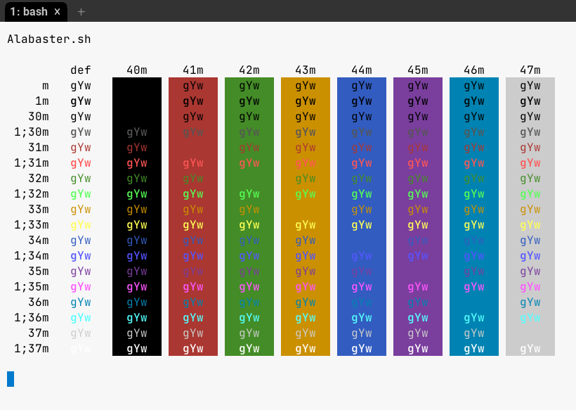
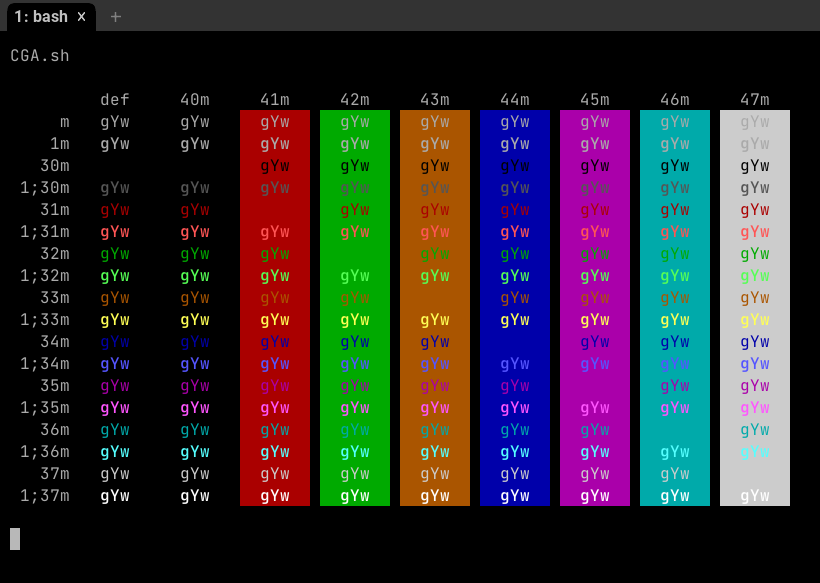
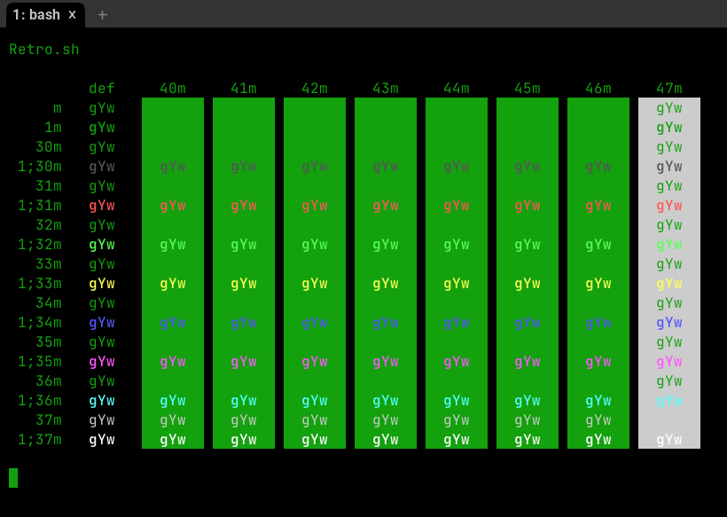

WezTerm is a GPU-accelerated cross-platform terminal emulator and multiplexer written by @wez and implemented in Rust
WezTerm is a GPU-accelerated cross-platform terminal emulator and multiplexer written by @wez and implemented in Rust
Features
- Runs on Linux, macOS, Windows 10 and FreeBSD
- Multiplex terminal panes, tabs and windows on local and remote hosts, with native mouse and scrollback
- Ligatures, Color Emoji and font fallback, with true color and dynamic color schemes.
- Hyperlinks
- a full list of features can be found here
Looking for a configuration reference?
These docs are searchable: press S or click on the magnifying glass icon
to activate the search function!

Screenshot of wezterm on macOS, running vim
WezTerm is available pre-built for the major platforms and, because it is open source, you may also build it for yourself.
Installing on Windows
64-bit Windows 10.0.17763 or later is required to run WezTerm; running on earlier versions of Windows is not possible, as WezTerm requires Pseudo Console support that was first released in Windows 10.0.17763.
You can download a setup.exe style installer to guide the installation (requires admin privileges) or a simple zip file and manage the files for yourself (no special privileges required).
Windows (setup.exe) Nightly Windows (setup.exe)
WezTerm is available in a setup.exe style installer; the installer is produced with Inno Setup and will install wezterm to your program files directory and register that location in your PATH environment. The installer can be run as a GUI to guide you through the install, but also offers the standard Inno Setup command line options to configure/script the installation process.
Windows (zip) Nightly Windows (zip)
WezTerm is also available in a simple zip file that can be extracted and run from anywhere, including a flash drive for a portable/relocatable installation.
- Download Release
- Extract the zipfile and double-click
wezterm.exeto run the UI - Configuration instructions can be found here
For winget users
If you prefer to use the command line to manage installing software,
then you may wish to try winget.
winget is installed as part of the App Installer
that is available from the Microsoft Store.
Once you have winget, you can install wezterm like so:
winget install wez.wezterm
and to later upgrade it:
winget upgrade wez.wezterm
For Scoop users
Another option if you prefer to use the command line to manage installing software, is Scoop.
Wezterm is available from the "Extras" bucket and once you have installed scoop itself can be installed like so:
scoop bucket add extras
scoop install wezterm
For Chocolatey users
If you prefer to use Chocolatey to manage software, wezterm is availabe from the Community Repository. It can be installed like so:
choco install wezterm -y
Installing on macOS
The CI system builds the package on macOS Big Sur and should run on systems as "old" as Mojave. It may run on earlier versions of macOS, but that has not been tested.
Starting with version 20210203-095643-70a364eb, WezTerm is a Universal binary with support for both Apple Silicon and Intel hardware.
Download for macOS Nightly for macOS
- Download Release
- Extract the zipfile and drag the
WezTerm.appbundle to yourApplicationsfolder - First time around, you may need to right click and select
Opento allow launching the application that your just downloaded from the internet. - Subsequently, a simple double-click will launch the UI
- Configuration instructions can be found here
Homebrew
WezTerm is available for brew users in a tap:
$ brew tap wez/wezterm
$ brew install --cask wez/wezterm/wezterm
If you'd like to use a nightly build:
$ brew install --cask wez/wezterm/wezterm-nightly
to upgrade to a newer nightly (normal brew upgrade will not upgrade it!):
$ brew upgrade --cask wezterm-nightly --no-quarantine --greedy-latest
MacPorts
WezTerm is also available via MacPorts:
$ sudo port selfupdate
$ sudo port install wezterm
Installing on Linux using AppImage
WezTerm is available in AppImage format; a self-contained single file that doesn't require installation or any special privileges to run, and that is compatible with a wide range of Linux distributions.
Download and make the file executable and you're ready to run!
curl -LO https://github.com/wez/wezterm/releases/download/20220408-101518-b908e2dd/WezTerm-20220408-101518-b908e2dd-Ubuntu18.04.AppImage
chmod +x WezTerm-20220408-101518-b908e2dd-Ubuntu18.04.AppImage
You may then execute the appimage directly to launch wezterm, with no specific installation steps required:
./WezTerm-20220408-101518-b908e2dd-Ubuntu18.04.AppImage
That said, you may wish to make it a bit more convenient:
mkdir ~/bin
mv ./WezTerm-20220408-101518-b908e2dd-Ubuntu18.04.AppImage ~/bin/wezterm
~/bin/wezterm
- Configuration instructions can be found here
Installing on Ubuntu and Debian-based Systems
The CI system builds .deb files for a variety of Ubuntu and Debian distributions.
These are often compatible with other Debian style systems; if you don't find one
that exactly matches your system you can try installing one from an older version
of your distribution, or use one of the Debian packages linked below. Failing that,
you can try the AppImage download which should work on most Linux systems.
To download and install from the CLI, you can use something like this, which shows how to install the Ubuntu 16 package:
curl -LO https://github.com/wez/wezterm/releases/download/20220408-101518-b908e2dd/wezterm-20220408-101518-b908e2dd.Ubuntu20.04.deb
sudo apt install -y ./wezterm-20220408-101518-b908e2dd.Ubuntu20.04.deb
- The package installs
/usr/bin/weztermand/usr/share/applications/org.wezfurlong.wezterm.desktop - Configuration instructions can be found here
Installing on Fedora and rpm-based Systems
The CI system builds .rpm files on CentOS, Fedora and openSUSE systems.
These are likely compatible with other rpm-based distributions.
Alternatively, you can try the AppImage download with should work
on most Linux systems.
| Distro | Stable | Nightly |
|---|---|---|
| CentOS7 | Nightly builds only | wezterm-nightly-centos7.rpm |
| CentOS8 | wezterm-20220408_101518_b908e2dd-1.el8.x86_64.rpm | wezterm-nightly-centos8.rpm |
| CentOS9 | wezterm-20220408_101518_b908e2dd-1.el9.x86_64.rpm | wezterm-nightly-centos9.rpm |
| Fedora33 | wezterm-20220408_101518_b908e2dd-1.fc33.x86_64.rpm | wezterm-nightly-fedora33.rpm |
| Fedora34 | wezterm-20220408_101518_b908e2dd-1.fc34.x86_64.rpm | wezterm-nightly-fedora34.rpm |
| Fedora35 | wezterm-20220408_101518_b908e2dd-1.fc35.x86_64.rpm | wezterm-nightly-fedora35.rpm |
| Fedora36 | Nightly builds only | wezterm-nightly-fedora36.rpm |
| openSUSE Leap | Nighty builds only | wezterm-nightly-opensuse_leap.rpm |
| openSUSE Tumbleweed | Nighty builds only | wezterm-nightly-opensuse_tumbleweed.rpm |
To download and install from the CLI you can use something like this, which shows how to install the Fedora 35 package:
sudo dnf install -y https://github.com/wez/wezterm/releases/download/20220408-101518-b908e2dd/wezterm-20220408_101518_b908e2dd-1.fc35.x86_64.rpm
WezTerm is also available in the official Factory repo in openSUSE Tumbleweed. To install from Factory instead from the rpm provided by WezTerm's Github repository, you can use Yast. If you prefer the CLI, you can install it as root user with
zypper addrepo https://download.opensuse.org/repositories/openSUSE:Factory/standard/openSUSE:Factory.repo
zypper refresh
zypper install wezterm
- The package installs
/usr/bin/weztermand/usr/share/applications/org.wezfurlong.wezterm.desktop - Configuration instructions can be found here
Arch Linux
WezTerm is available in the Community repository.
The version available in the community repository may lag behind the latest wezterm release, so you may wish to use one of these AUR options:
| What | Where |
|---|---|
| Nightly Binaries | https://aur.archlinux.org/packages/wezterm-nightly-bin/ |
| Build from source | https://aur.archlinux.org/packages/wezterm-git/ |
Alpine Linux
APKs are built out from the main branch.
| Version | Stable | Nightly |
|---|---|---|
| 3.12 | wezterm-nightly-alpine3.12.apk | |
| 3.13 | wezterm-nightly-alpine3.13.apk | |
| 3.14 | wezterm-nightly-alpine3.14.apk | |
| 3.15 | wezterm-nightly-alpine3.15.apk |
Linuxbrew Tap
If you are a Linuxbrew user, you can install wezterm from our tap:
$ brew tap wez/wezterm-linuxbrew
$ brew install wezterm
If you'd like to use a nightly build you can perform a head install:
$ brew install --HEAD wezterm
to upgrade to a newer nightly, it is simplest to remove then install:
$ brew rm wezterm
$ brew install --HEAD wezterm
Raw Linux Binary
Another option for linux is a raw binary archive. These are the same binaries that are built for Ubuntu but provided in a tarball.
Download raw Linux binaries Nightly raw Linux binaries
Installing on FreeBSD
WezTerm is available via the ports system.
The most common FreeBSD architectures have pre-built binaries which you can install via:
$ pkg install wezterm
The version available in ports is not directly managed by the release automation of the WezTerm project and may lag behind the latest release. If you need to run a newer version, then the build from source instructions also apply to FreeBSD.
Installing from source
If your system isn't covered by the pre-built packages then you can build it for yourself. WezTerm should run on any modern unix as well as Windows 10 and macOS.
- Install
rustupto get therustcompiler installed on your system. Install rustup - Rust version 1.56 or later is required
- Build in release mode:
cargo build --release - Run it via either
cargo run --release --bin weztermortarget/release/wezterm
You will need a collection of support libraries; the get-deps script will
attempt to install them for you. If it doesn't know about your system,
please contribute instructions!
If you don't plan to submit a pull request to the wezterm repo, you can download a smaller source tarball using these steps:
curl https://sh.rustup.rs -sSf | sh -s
curl -LO https://github.com/wez/wezterm/releases/download/20220408-101518-b908e2dd/wezterm-20220408-101518-b908e2dd-src.tar.gz
tar -xzf wezterm-20220408-101518-b908e2dd-src.tar.gz
cd wezterm-20220408-101518-b908e2dd
./get-deps
cargo build --release
cargo run --release --bin wezterm -- start
Alternatively, use the full git repo:
curl https://sh.rustup.rs -sSf | sh -s
git clone --depth=1 --branch=main --recursive https://github.com/wez/wezterm.git
cd wezterm
git submodule update --init --recursive
./get-deps
cargo build --release
cargo run --release --bin wezterm -- start
If you get an error about zlib then you most likely didn't initialize the submodules; take a closer look at the instructions!
Building without Wayland support on Unix systems
By default, support for both X11 and Wayland is included on Unix systems.
If your distribution has X11 but not Wayland, then you can build WezTerm without
Wayland support by changing the build invocation:
cargo build --release --no-default-features
Building without X11 is not supported.
Available Features
- Runs on Linux, macOS, Windows 10 and FreeBSD
- Multiplex terminal panes, tabs and windows on local and remote hosts, with native mouse and scrollback
- Ligatures, Color Emoji and font fallback, with true color and dynamic color schemes.
- Hyperlinks
- Searchable Scrollback (use mouse wheel and
Shift-PageUpandShift PageDownto navigate, Ctrl-Shift-F to activate search mode) - xterm style selection of text with mouse; paste selection via
Shift-Insert(bracketed paste is supported!) - SGR style mouse reporting (works in vim and tmux)
- Render underline, double-underline, italic, bold, strikethrough (most other terminal emulators do not support as many render attributes)
- Configuration via a configuration file with hot reloading
- Multiple Windows (Hotkey:
Super-N) - Splits/Panes (Split horizontally/vertically:
Ctrl-Shift-Alt-%andCtrl-Shift-Alt-", move between panes:Ctrl-ArrowKey) - Tabs (Hotkey:
Super-T, next/prev:Super-Shift-[andSuper-Shift-], go-to:Super-[1-9]) - SSH client with native tabs
- Connect to serial ports for embedded/Arduino work
- Connect to a local multiplexer server over unix domain sockets
- Connect to a remote multiplexer using SSH or TLS over TCP/IP
- iTerm2 compatible image protocol support, and built-in imgcat command
- Kitty graphics support
- Sixel graphics support (experimental: starting in
20200620-160318-e00b076c)
Changes
Releases are named using the date, time and git commit hash.
Continuous/Nightly
A bleeding edge build is produced continually (as commits are made, and at
least a daily scheduled build) from the main branch. It may not be usable
and the feature set may change, but since @wez uses this as a daily driver, its
usually the best available version.
As features stabilize some brief notes about them will accumulate here.
New
- ssh client now supports
BindAddress. Thanks to @gpanders! #1875 - PaneInformation.domain_name and pane:get_domain_name() which return the name of the domain with which a pane is associated. #1881
- You may now use
CTRL-nandCTRL-p(in addition to the up/down arrow and vi motion keys) to change the selected row in the Launcher. Thanks to @Junnplus! #1880 - Attaching multiplexer domains now attaches the first window as a tab in the active window, rather than opening a new window. #1874
- AttachDomain and DetachDomain key assignments
- Specifying a domain name in a SpawnCommand will cause that domain to be attached if it is in the detached state. This is useful when combined with SwitchToWorkspace.
- X11: wezterm now sets
_NET_WM_NAMEin addition toWM_NAMEfor clients that don't know how to fallback - treat_east_asian_ambiguous_width_as_wide for control over how ambiguous width characters are resolved. #1888
- clean_exit_codes config to fine tune exit_behavior #1889
- ClearSelection key assignment #1900
wezterm cli list --format jsonandwezterm cli list-clients --format jsonallow retrieving data in json format. Thanks to @ratmice! #1911- macOS, Windows: you may now drag and drop files from other programs and have their paths paste into the terminal. The new quote_dropped_files option controls how the file names are quoted. Thanks to @junnplus and @datasone! #1868 #1953
- The mouse scroll wheel now cycles between tabs when hovering over the tab tab. Thanks to @junnplus! #1726
- Holding down
ALTwhile dragging the left button will select a rectangular block. It is also possible to useALT+SHIFTto select a rectangular block. ExtendSelectionToMouseCursor and SelectTextAtMouseCursor now accept"Block"as a selection mode. Thanks to @Funami580 for helping! #1361 - In Copy Mode,
CTRL-vwill enable rectangular block selection mode. #1656 - Copy Mode: key assignments are now configurable #993
- Search Mode: key assignments are now configurable #993
- Search Mode: the default
CTRL-SHIFT-Fkey assignment now defaults to the newCurrentSelectionOrEmptyStringmode to search for the current selection text, if any. See Search for more info. - Copy Mode and Search Mode can be toggled and remember search results and cursor positioning, making it easier to locate and select text without using the mouse #1592
- In the Launcher Menu, you may now use
CTRL-Gto cancel/exit the launcher #1977 - cell_width option to adjust the horizontal spacing when the availble font stretches are insufficient. #1979
- min_scroll_bar_height to control the minimum size of the scroll bar thumb #1936
- RotatePanes key assignment for re-arranging the panes in a tab
- SplitPane key assignment that allows specifying the size and location of the split, as well as top-level (full width/height) splits.
wezterm cli split-pane --helpshows equivalent options you can use from the cli. #578 - ime_preedit_rendering option to choose whether to use the builtin or the system IME preedit rendering mode. Thanks to @kumattau! #2006
Updated
- Bundled harfbuzz to 4.2.1
Changed
- Debian packages now register wezterm as an alternative for
x-terminal-emulator. Thanks to @xpufx! #1883 - Windows: wezterm will now read the default environment variables from the
HKLM\System\CurrentControlSet\Control\Session Manager\EnvironmentandHKCU\Environmentand apply those to the base environment prior to applyingset_environment_variables. #1848 - Key Table lookups will now keep searching the activation stack until a matching assignment is found, allowing for layered key tables. #993
- Search mode's search term is now remembered globally between activations of search mode. #1912
- Quickselect no longer jumps to the bottom of the viewport when activated, allowing you to quickselect within the current viewport region
- Quickselect now supports multi-line anchors such as
^and$. #2008 - Overriding config using the cli
--configoption will now error out and prevent starting up if unknown config options are specified, or if the value evaluates tonil. Unknown options continue to generate warnings (rather than errors) when observed in the config file so that you're not "locked out" of wezterm if you make a typo in the config file.
Fixed
- Flush after replying to XTGETTCAP and DECRQM. #1850 #1950
- macOS: CMD-. was treated as CTRL-ESC #1867
- macOS: CTRL-Backslash on German layouts was incorrect #1891
nf-mdi-contactsnerdfont symbol treated as zero-width #1864- X11/Wayland: CTRL-i, CTRL-j, CTRL-m misinterpreted as CTRL-Tab, CTRL-Enter, CTRL-Return #1851
- Scrollbar stopped working after a lot of output scrolled outside of the scrollback limit. Thanks to @davidrios! #1866
- Windows: uncommitted IME composition could get stuck when switching input methods. #1922
- OSC sequences, such as those that change the window or tab title, that accept a single string parameter will now join multiple parameters together. This allows window and tab titles to contain a semicolo. Thanks to @kumattau! #1939
- Unable to use
ALTas a modifier for theleaderkey. #1958 - IME Candidate window position was incorrect. Thanks to @kumattau and @aznhe21! #1976 #2001
- Prevent panic for some classes of invalid input, found while fuzzing. Thanks to @5225225! #1990 #1986
- Detaching an ssh multiplexer domain sometimes killed the associated panes! #1993
DecreaseFontSizewasn't quite the inverse ofIncreaseFontSize. Thanks to @Funami580! #1997- Wayland: unable to paste text that was copied before starting the initial wezterm window. Thanks to @Funami580! #1994 #1385
20220408-101518-b908e2dd
New
- Key Tables feature for powerful modal key assignments
wezterm start --position x,y,wezterm start --position displayname:30%,30%option to control starting window position on all systems except for Wayland. Seewezterm start --helpfor more info. #1794
Changed
- Default key assignments are
mapped:again. A new key_map_preference option allows the defaults to use"Mapped"or"Physical". - Disabled ligatures for
"Monaco"and"Menlo"fonts, as those have"fi"ligatures that match even for words such asfind. #1786 #1736 - Removed the
send_composed_key_when_alt_is_pressedoption. When processing genericALT(eg: that has neither left nor right), if eithersend_composed_key_when_left_alt_is_pressedorsend_composed_key_when_right_alt_is_pressedis true, then the composed form of the key event will be generated.
Updated and Improved
- Bundled harfbuzz to 4.2.0
- On macOS, non-native fullscreen mode now attempts to avoid the notch on systems that have one. #1737
- Sixel parsing performance has been improved
- You may now specify a scaling factor per fallback font, which is useful when your preferred CJK font renders smaller than your Roman primary font, for example.
- Color schemes: Retro, GitHub Dark, Blazer
- Wayland: touchpad scroll is now more responsive/precise. Thanks to @davidrios! #1800 #1840
- Kitty image protocol: now also supports shared memory data transmission. Thanks to @tantei3! #1810
- Secondary DA response bumped up to persuade vim to set
ttymouse=sgrby default. #1825
Fixed
- Incorrect csi-u encoding with non-ascii characters. #1746
- X11
_NET_WM_ICONhad red/blue channels swapped #1754 - ls-fonts output didn't quote the
stylefield #1762 window_decorations = "RESIZE"on Windows prevented minimize/maximize and aerosnap, double click to maximize, and had an ugly top border. Many thanks to @davidrios! #1674 #1675 #1771- On Windows, explorer shortcut icons with the maximized setting would fall out of maximized state on startup. Thanks to @davidrios! #1502
LANGenvironment variable was not always set on macOS, leading to mojibake when entering CJK. #1761 #1765- Fonts with only non-unicode names (eg: only using a Chinese multibyte string encoding) were treated as having names like
?????and were not accessible. #1761 - Hover state of leftmost retro style tab was overly sticky when the mouse moved out of the tab. #1764
- On macOS, the font size could incorrectly double or halve after waking from sleep or moving the window to/from an external monitor. #1566 #1745
- On Windows, touchpad scrolling was janky. Many thanks to @davidrios! #1773 #1725 #949
- X11: workaround i3-gaps not sending initial CONFIGURE_NOTIFY or FOCUS events, leading to weird initial window size and broken focus status. #1710 #1757
- Hyperlink rules with more captures than replacements could panic wezterm when text matched. #1780
- Malformed XTGETTCAP response. #1781
- Multiplexer performance with images was unusuable for all but tiny images. #1237
CloseCurrentPane{confirm=false}would leave behind a phantom tab/pane when used with the multiplexer. #1277CloseCurrentPane{confirm=true}artifacts when used with the multiplexer. #783- Scrollbar thumb could jump around/move out of bounds. Thanks to @davidrios! #1525
- OSC 52 could stop working for tabs/panes spawned into the GUI via the CLI. #1790
- Workaround for fonts with broken horizontal advance metrics #1787
- Improved mouse based selection. Thanks to @davidrios! #1805 #1199 #1386 #354
- X11
KP_Endwasn't recognized #1804 - fontconfig matches now also treat
"charcell"spacing as monospace. #1820 - Multiplexer render update laggy, especially when using multiple windows. #1814 #1841
20220319-142410-0fcdea07
New
- window:composition_status() and window:leader_is_active() methods that can help populate window:set_right_status() #686
- You may now use
colors = { compose_cursor = "orange" }to change the cursor color when IME, dead key or leader key composition states are active. - Support for SGR-Pixels mouse reporting. Thanks to Autumn Lamonte! #1457
- ActivatePaneByIndex key assignment action. #1517
- Windows: wezterm may now use win32-input-mode to send high-fidelity keyboard input to ConPTY. This means that win32 console applications, such as FAR Manager that use the low level
INPUT_RECORDAPI will now receive key-up events as well as events for modifier-only key presses. Useallow_win32_input_mode=trueto enable this. #318 #1509 #1510 - Windows: default_domain, wsl_domains options and wezterm.default_wsl_domains() provide more flexibility for WSL users.
Symbols Nerd Font Monois now bundled with WezTerm and is included as a default fallback font. This means that you may use any of the glyphs available in the Nerd Fonts collection with any font without patching fonts and without explicitly adding that font to your fallback list. Pomicons have an unclear license for distribution and are excluded from this bundled font, however, you may manually install the font with those icons from the Nerd Font site itself and it will take precedence over the bundled font. This font replaces the olderPowerlineExtraSymbolsfont. #1521.- wezterm.nerdfonts as a convenient way to resolve Nerd Fonts glyphs by name in your config file
- ShowLauncherArgs key assignment to show the launcher scoped to certain items, or to launch it directly in fuzzy matching mode
- Workspaces. Follow work in progress on #1531 and #1322! window:active_workspace(), default_workspace, SwitchWorkspaceRelative, SwitchToWorkspace
wezterm cli send-text "hello"allows sending text, as though pasted, to a pane. Seewezterm cli send-text --helpfor more information. #888local_echo_threshold_msoption to adjust the predictive local echo timing for SshDomain, TlsDomainClient and unix domains. Thanks to @qperret! #1518- It is now possible to set
selection_fgandselection_bgto be fully or partially transparent. Read more. #1615 - Experimental (and incomplete!) support for Bidi/RTL can be enabled through the config. Follow along in the tracking issue
- Primary selection is now supported on Wayland systems that implement primary-selection-unstable-v1 or the older Gtk primary selection protocol. Thanks to @lunaryorn! #1423
- pane:has_unseen_output() and PaneInformation.has_unseen_output allow coloring or marking up tabs based on unseen output. #796
- Context menu extension for Nautilus. Thanks to @lunaryorn! #1092
- wezterm.enumerate_ssh_hosts() function that can be used to auto-generate ssh domain configuration
Changed
- Key Assignments now use Physical Key locations by default!! Read more #1483 #601 #1080 #1391
- Key assignments now match prior to any dead-key or IME composition #877
- Removed the
ALT-[NUMBER]default key assignments as they are not good for non-US layouts. #1542 wezterm cli, when run outside of a wezterm pane, now prefers to connect to the main GUI instance rather than background mux server. Usewezterm cli --prefer-muxto ignore the GUI instance and talk only to the mux server. Seewezterm cli --helpfor additional information.- ScrollByPage now accepts fractional numbers like
0.5to scroll by half a page at time. Thanks to @hahuang65! #1534 - use_ime now defaults to
trueon all platforms; previously it was not enabled by default on macOS. - canonicalize_pasted_newlines default has changed to be more compatible for
nanousers, and now provides more control over the text format that is pasted. #1575 - Blinking text is now eased rather than binary-blinked. See text_blink_ease_in and text_blink_ease_out, text_blink_rapid_ease_in and text_blink_rapid_ease_out for more information.
- Blinking text cursor is now eased rather than binary-blinked. See cursor_blink_ease_in and cursor_blink_ease_out.
Updated and Improved
- IME and dead key composition state now shows inline in the terminal using the terminal font (All platforms, except Wayland where we only support dead key composition)
- macOS:
use_ime=trueno longer prevents key repeat from working with some keys #1131 - Bundled harfbuzz to 4.0.1
Fixed
- Regression that broke fontconfig aliases such as
"monospace"#1250 - Windows/X11/Wayland: CTRL+C in non-latin keyboard layouts wouldn't send CTRL+C #678
- The new tab button in the fancy tab didn't respect
new_tab_hovercolors #1498 - Font baseline alignment when mixing symbols/emoji with the main text #1499
- Glitchy window resize #1491
- Ligatured glyphs no longer turn partially black when cursoring through them #478
- Kitty Image Protocol: didn't respect
candrparameters to scale images - Cursor location on the primary screen wasn't updated correctly if the window was resized while the alternate screen was active #1512
- Windows: latency issue with AltSnap and other window-managery things #1013 #1398 #1075 #1099
- Multiplexer sessions now propagate user vars #1528
- Config reloads on the multiplexer server didn't cause the palette to update on the client #1526
- ScrollToPrompt could get confused when there were multiple prompts on the same line #1121
- Hangul text in NFD was not always correctly composed when shaping fonts. #1573
- Avoid OOM when processing sixels with huge repeat counts #1610
- Set the sticky bit on socket and pid files created in
XDG_RUNTIME_DIRto avoid removal by tmpwatch #1601 - Shaping combining sequences like
e U+20d7could "lose" the vector symbol if the font produced an entry with nox_advance. #1617 - Setting the cursor color via escape sequences now take precedence over
force_reverse_video_cursor. #1625 - Fixed Detection of DECSDM support via DECRQM/DECRPM, Correct sixel image placement when DECSDM is set and VT340 default sixel colors. Thanks to Autumn! #1577
- Fixed missing whitespace from intermediate lines when copying a wrapped logical line #1635
- Unable to match
Iosevka Termwhen multiple iosevka ttc files were installed on macOS #1630 - Incorrect umask for panes spawned via the multiplexer server #1633
- Fall back from
top_left_arrowtoleft_ptrwhen loading XCursor themes #1655 - Fixed lingering hover state in titlebar when the mouse pointer left the window. Thanks to @davidrios! #1434
- We now respect the difference between
ItalicandObliquefont styles when matching fonts. You may explicitly specifystyle="Oblique"rather than usingitalic=truefor fonts that offer both italic and oblique variants. #1646 - Hang when clicking a URL would launch the browser for the first time on unix systems #1721
- Wayland input handling gets broken after suspend/resume. Thanks to @LawnGnome! #1497
20220101-133340-7edc5b5a
New
- Fancy Tab Bars are now the default. The default tab bar colors have changed to accommodate the new more native look. You can turn them off by setting use_fancy_tab_bar = false.
- Support for the Kitty Image Protocol is now enabled by default. Most of the protocol is supported; animation support is not yet implemented. Try the amazing notcurses if you want to see what modern terminal graphics can do! #986
- unix domains now support an optional
proxy_commandto use in place of a direct unix socket connection. Read more about multiplexing unix domains - ScrollToTop and ScrollToBottom key assignments #1360
- SSH Domains now support specifying
ssh_configoverrides. #1149 - default_gui_startup_args allows defaulting to starting the ssh client (for example). #1030
- mux-is-process-stateful event for finer control over prompting when closing panes. #1412
- harfbuzz_features, freetype_load_target, freetype_render_target and freetype_load_flags can now be overridden on a per-font basis as described in wezterm.font and wezterm.font_with_fallback.
- ActivateTabRelativeNoWrap key assignment #1414
- QuickSelectArgs key assignment #846 #1362
- wezterm.open_wth function for opening URLs/documents with the default or a specific application #1362
- pane:get_foreground_process_name() method, PaneInformation now has
foreground_process_nameandcurrent_working_dirfields, and pane:get_current_working_dir is now supported on Windows for local processes, even without using OSC 7. #1421 #915 #876 - ActivatePaneDirection now also supports
"Next"and"Prev"to cycle through panes #976 - pane:get_logical_lines_as_text to retrieve unwrapped logical lines from a pane #1468
- wezterm.get_builtin_color_schemes() function to eg: pick a random scheme per window, or otherwise reason about schemes. See the docs for examples!
- Added color schemes: Alabaster, CGA, MaterialDesignColors, darkermatrix, nord-light
Changed
- quickselect: we now de-duplicate labels for results with the same textual content. #1271
- The default
CompleteSelectionOrOpenLinkAtMouseCursorleft button release assignment now also accepts SHIFT being held in order to make SHIFT-clickExtendSelectionToMouseCursorfeel more ergonomic if the mouse button is released before the SHIFT key. #1204 - Unicode BIDI and other zero-width graphemes are now filtered out from the terminal model. It's not ideal in the sense that that information is essentially lost when copying to the clipboard, but it makes the presentation correct. #1422
- use_ime now defaults to
trueon X11 systems
Updated and Improved
- Bundled harfbuzz to 3.2.0
- Bundled freetype to 2.11.1
- Bundled NotoColorEmoji to 2.034 (with Unicode 14 support) Thanks to @4cm4k1! #1440
- macos: removing the titlebar from
window_decorationsnow preserves rounded window corners #1034 - Colors can now be specified in the HSL colorspace using syntax like
"hsl:235 100 50"#1436 - Line/Bar cursors in force_reverse_video_cursor mode now use the text foreground color rather than the cursor border color. #1076
- Improved logo appearance. Thanks to @ghifarit53! #1454
- You can now pass SendKey to wezterm.action and make your
keysconfig look more consistent - Mouse wheel events are now routed to the hovered pane, rather than sent to the focused pane #798
Fixed
- DECSTR (terminal soft reset) now turns off DECLRMM (left and right margin mode). Thanks to @ninjalj! #1376
- Improved conformance of CUP, HVP, SLRM, STBM escape sequences by support empty first parameter. Thanks to @ninjalj! #1377
- tab bar didn't correctly handle double-wide cells and could truncate at edges when using
format-tab-title#1371 wezterm cli --no-auto-startwas not respected- Pixel geometry configured on the PTY in new windows could be incorrect on HiDPI displays until the window was resized #1387
- Image attachment geometry for imgcat and sixels could stretch the image across the rounded up number of cells that contained the image. #1300, #1270
- Closing a split pane created inside a
wezterm sshsession wouldn't actually close the pane #1197 - Clicking when unfocused could lead to unwanted text selection #1140 #1310
- Changing font scaling on Windows no longer causes the initial terminal rows/cols to be under-sized #1381
- New version update notifications are now more coordinated between multiple wezterm GUI instances, and update related configuration now respects configuration reloading. #1402
- TLS domains bootstrapping via SSH now use the
libsshbackend by default and work more reliably on Windows - Closing a window will no longer recursively terminate contained multiplexer client panes; the window will instead be restored when you next connect to that multiplexer server. Killing/closing individual tabs/panes will kill the panes; this change only affects closing the window. #848 #917 #1224
- Colors were too intense due to over gamma correction #1025
- Mesa and EGL colors were too dim due to under gamma correction #1373
wezterm sshno longer tries to usedefault_progordefault_cwdwhen spawning additional panes on the remote host #1456- Launcher menu WSL items now launch correctly on non-US versions of Windows #1462
- Korean text in NFD form is now correctly sized and rendered #1474
- macOS:
use_ime=trueconflicted withLEADERkey assignments #1409 - macOS: certain keys (eg:
F8andF9) did nothing whenuse_ime=true. #975 - Splitting a tab would cause the window to lose its transparency #1459
20211205-192649-672c1cc1
Fixed
- Windows:
wezterm <something>would fail silently when spawningwezterm-guiunder the covers. Regression introduced by #1278. Workaround is to directly spawnwezterm-gui. - Windows: the PTY handles were ignored in favor of the redirected stdio handles of the parent of the wezterm mux process #1358
- Windows: Failure to spawn
weztermwhen launching an ssh mux domain session no longer waits forever - "Update available" message kept showing even though already running the latest version #1365
20211204-082213-a66c61ee9
New
- X11 now supports IME. It currently defaults to disabled, but you can set
use_ime = truein your config to enable it (you need to restart wezterm for this to take effect). Many thanks to @H-M-H for bringing xcb-imdkit to Rust and implementing this in wezterm! #250 #1043 - it is now possible to define colors in the range 16-255 in
colorsand color scheme definitions. Thanks to @potamides! #841 #1056 - Added SendKey key assignment action that makes it more convenient to rebind the key input that is sent to a pane.
- Added Multiple key assignment action for combining multuple actions in a single press.
- Added use_resize_increments option to tell X11, Wayland, macOS window resizing to prefers to step in increments of the cell size
- visual_bell and audible_bell configuration options, as well as a bell event allows you to trigger lua code when the bell is rung. #3
- wezterm.action_callback function to make it easier to use custom events. Thanks to @bew! #1151
wezterm connectnow also supports the--classparameter to override the window class- window_padding now accepts values such as
"1cell"or"30%"to compute values based on font or window metrics. - BSDish systems now support toast notifications
- wezterm.background_child_process function to spawn a process without waiting.
- mux_env_remove setting to control which environment variables should be cleared prior to spawning processes in the multiplexer server #1225
- canonicalize_pasted_newlines option to help Windows users manage newlines in pastes #1213
- SSH client now uses
libsshby default. ssh_backend can be used to change this. - unzoom_on_switch_pane option. Thanks to @yyogo #1301
- unicode_version option and corresponding OSC escape sequences that affects how the width of certain unicode sequences are interpreted.
- macOS: binaries produced by wezterm's CI are now codesigned, which resolves some spurious permission dialogs that affected some users #482
Changed
- new default key assignments: CTRL+PageUp and CTRL+Tab activate next tab, CTRL+PageDown and CTRL+SHIFT+Tab activate previous tab. ALT+{1..8} directly select the first through 8th tabs. Thanks to @friederbluemle! #1132
- X11: we now allow matching visuals with >= 8 bits per rgb value. Previously, we only matched exactly 8 bits. This improve compatibility with systems that have the COMPOSITE extension disabled. Thanks to @shizeeg! #1083
- The incomplete
Allsortsshaper was removed. - Windows:
wezterm-gui.exenow only grabs the parent process' console handle when spawned fromwezterm.exe, which prevents some frustrating interactions when launchingwezterm-gui.exeviastartin cmd/powershell. #1278 - AppImage: take care to remove APPIMAGE related environment when spawning child processes. Thanks to @srevinsaju! #1338
Updated and Improved
- bundled harfbuzz updated to version 3.0.0, bundled freetype updated to 2.11
- window close confirmations now accept both uppercase and lowercase Y/N key presses. Thanks to @SpyrosRoum! #1119
- multi-click-streaks are now interrupted by the cursor moving to a different cell. Thanks to @unrelentingtech! #1126
.debpackages nowProvides: x-terminal-emulator. #1139- use_cap_height_to_scale_fallback_fonts now computes cap-height based on the rasterized glyph bitmap which means that the data is accurate in more cases, including for bitmap fonts. Scaling is now also applied across varying text styles; previously it only applied to a font within an
wezterm.font_with_fallbackfont list. - Can now match fontconfig aliases, such as
monospace, on systems that use fontconfig. Thanks to @unrelentingtech! #1149 - Powerline semicircle glyphs now look much better. Thanks to @bew and @sdrik! #1311
- Splits now look better, especially when using escape sequences to change the default background color #1256
Fixed
wezterm cli spawnwould use the initial terminal size for a new tab, rather than using the current tab size #920text_background_opacityopacity was not respected- spawning commands via the mux didn't respect the
PATHconfigured inset_environment_variables. #1029 - cursor could have a transparent "hole" through the window with certain cursor styles
- Consolas font + random input could cause a divide-by-zero when computing glyph metrics #1042
- Emoji fallback was too strict in respecting VS15/VS16 presentation selection, adjust the fallback to allow showing Emoji/Text presentation if Text/Emoji was requested but not found.
- X11: laggy input after selecting text. #1027
- macOS:
send_composed_key_when_left_alt_is_pressedandsend_composed_key_when_right_alt_is_pressedare now respected whenuse_ime=true. Thanks to @jakelinnzy! #1096 - X11: jittery resize with some window managers #1051
- X11: window:get_appearance now actually returns Dark when the theme is dark. #1098
- ALT + Arrow, PageUp/PageDown, Ins, Del, Home, End incorrectly sent ESC prefixed key sequences. #892
- Crash due to Out of Memory condition when the iTerm2 protocol was used to send excessively large PNG files #1031
DCH(delete char) sequence would remove cells and replace them with default-blank cells instead of blank-cells-with-current-bg-color. #789- invisible I-beam or underline cursor when
force_reverse_video_cursor = true#1076 SU(scroll up) sequence would fill with default-blank cells instead of blank-cells-with-current-bg-color. #1102- X11: computed but did not use the correct DPI for HiDPI screens #947
- performance when resolving fallback fonts via fontconfig, and of coverage calculation with freetype. Thanks to @H-M-H!
- Wayland: incorrect initial surface size for HiDPI screens. Thanks to @unrelentingtech! #1111 #1112
- invisible cursor in CopyMode when using kakoune #1113
- Wayland:
bypass_mouse_reporting_modifiersdidn't work. Thanks to @unrelentingtech! #1122 - new tabs could have the wrong number of rows and columns if a tiling WM resizes the window before OpenGL has been setup. #1074
- Wayland: dragging the window using the tab bar now works. Thanks to @unrelentingtech! #1127
- error matching a font when that font is in a .ttc that contains multiple font families. #1137
- Wayland: panic with most recent wlroots. Thanks to @unrelentingtech! #1144
- incorrect spacing for IDEOGRAPHIC SPACE. #1161
- italic fonts weren't always recognized as being italic, resulting in italic variants being used instead of the non-italic variants in some cases! #1162
- Ask freetype for cell metrics in bitmap-only fonts, rather than simply taking the bitmap width. #1165
- wezterm can now match bitmap fonts that are spread across multiple font files #1189
- ssh config parser incorrectly split
Hostpatterns with commas instead of whitespace #1196 - search now auto-updates when the pane content changes #1205
- fonts with emoji presentation are shifted to better align with the primary font baseline #1203
- the whole tab was closed when only the zoomed pane exited. #1235
- multiplexer: wrong
WEZTERM_UNIX_SOCKETenvironment passed to children when using unix domain sockets andconnect_automatically=true#1222 - multiplexer: spawning remote tabs didn't correctly record local tab mapping, resulting in phantom additional tabs showing in the client. #1222
wezterm ls-fonts --text "✘"didn't account for the system fallback list. #849- macOS: The
Menlofont is now implicitly included in the system fallback list, as it is the only font that contains U+2718 ✘ wezterm cli spawn --cwd ..andwezterm cli split-pane --cwd ..now resolve relative paths #1243- Incorrect DECRPTUI response to DA3. Thanks to @ninjalj! #1330
- Reloading config now loads newly defined multiplexer domains, however, existing domains are not updated. #1279
20210814-124438-54e29167
- Fixed: ssh client would read
/etc/ssh/configrather than the proper/etc/ssh/ssh_config - Updated: ssh client now processes
Includestatements in ssh config - x11: support for VoidSymbol in key assignments. Thanks to @digitallyserviced! #759
- Fixed: UTF8-encoded-C1 control codes were not always recognized as control codes, and could result in a panic when later attempting to update the line. #768
- Fixed:
wezterm cli split-panedidn't use the current working dir of the source pane. #766 - Fixed: double-click-drag selection could panic when crossing line boundaries #762
- Fixed: wrong scaling for ligatures in Recursive Mono font #699
- Fixed: incorrect Sixel HLS hue handling #775
- Fixed: we now recognize the
CSI 48:2:0:214:255mform of specifying true color text attributes #785 - Fixed: split separators didn't respect
tab_bar_at_bottom=trueand were rendered in the wrong place #797 - Improved: messaging around exit_behavior
- Fixed: errors loading custom color schemes are now logged to the error log #794
- Fixed: OSC 7 (current working directory) now works with paths that contain spaces and other special characters. Thanks to @Arvedui! #799
- Changed: the homebrew tap is now a Cask that installs to the /Applications directory on macOS. Thanks to @laggardkernel!
- New: bold/dim and/or italics are now synthesized for fonts when the matching font is not actually italic or doesn't match the requested weight. #815
- Updated: conpty.dll to v1.9.1445.0; fixes color bar artifacts when resizing window and allows win32 console applications to use mouse events
- Fixed: Windows: pane could linger after the process has died, closing only when a new pane/tab event occurs
- Fixed: Windows: first character after
wezterm sshkeyboard authention was swallowed #771 - Fixed: Windows: detect window resizes while authenticating for
wezterm ssh#696 - Fixed: OSC 52 clipboard escape didn't work in the initial pane spawned in the multiplexer server #764
- Fixed: splitting panes in multiplexer could fail after a network reconnect #781
- Fixed: multiplexer now propagates toast notifications and color palette to client #489 #748
- Fixed: neovim interprets drags as double clicks #823
- New:
CTRL+SHIFT+Lis assigned to ShowDebugOverlay #641 - Improved: antialiasing for undercurl. Thanks to @ModProg! #838
- Fixed:
wezterm start --cwd c:/didn't rundefault_prog. Thanks to @exactly-one-kas! #851 - Improved: skip_close_confirmation_for_processes_named now includes common windows shell processes
cmd.exe,pwsh.exeandpowershell.exe. #843 - Fixed: don't keep the window alive after running
something & disown ; exit#839 - Improved: we now draw sextant glyphs from the Unicode Symbols for Legacy Computing block (1FB00) when
custom_block_glyphsis enabled. - Changed:
COLORTERM=truecoloris now set in the environment. #875 - New:
wezterm cli spawn --new-windowflag for creating a new window via the CLI #887 - Fixed: closing last pane in a tab via
CloseCurrentPanecould cause the window to close #890 - Improved:
wezterm ls-fonts --list-systemshows all available fonts,wezterm ls-fonts --text "hello"explains which fonts are used for each glyph in the supplied text - Fixed: mouse cursor is now Arrow rather than I-beam when the application in the terminal has enabled mouse reporting #859
- Improved: DEC Special Graphics mode conformance and complete coverage of the graphics character set. Thanks to Autumn Lamonte! #891
- Fixed: click to focus now focuses the pane under the mouse cursor #881
- Removed:
Parasio Darkcolor scheme; it was a duplicate of the correctly namedParaiso Darkscheme. Thanks to @adrian5! #906 - Fixed: key repeat on Wayland now respects the system specified key repeat rate, and doesn't "stick". #669
- Fixed:
force_reverse_video_cursorwasn't correctly swapping the cursor colors in all cases. #706 - Fixed: allow multuple
IdentityFilelines in an ssh_config block to be considered - Improved: implement braille characters as custom glyphs, to have perfect rendering when
custom_block_glyphsis enabled. Thanks to @bew! - Fixed: Mod3 is no longer treater as SUPER on X11 and Wayland #933
- Fixed: paste now respects
scroll_to_bottom_on_input. #931 - New: bypass_mouse_reporting_modifiers to specify which modifier(s) override application mouse reporting mode.
- Fixed: focus tracking events are now also generated when switching between panes #941
- New: window_frame option to configure Wayland window decorations #761
- New: window:get_appearance() to determine if the window has a dark mode appearance, and adjust color scheme to match #806
- Improved: improve the new-tab button formatting. Thanks to @sdrik! #950
- Fixed: if a line of text was exactly the width of the terminal it would get marked as wrappable even when followed by a newline, causing text to reflow incorrectly on resize. #971
- Fixed:
wezterm sshcould loop forever in the background if the connection drops and the window is closed. #857 - Improved: VT102 conformance. Many thanks to Autumn Lamonte! #904
- New: text_blink_rate and text_blink_rate_rapid options to control blinking text. Thanks to Autumn Lamonte! #904
- New: Added support for Synchronized Rendering #882
- New: wezterm now draws its own pixel-perfect versions of more block drawing glyphs. See custom_block_glyphs for more details. #584
- Fixed: wayland: CursorNotFound error with the whiteglass theme. #532
- Improved: Can now recover from exhausting available texture space by clearing the screen. #879
- Updated bundled
Noto Color Emojifont to version 2.028 featuring a design update. Thanks to @4cm4k1! #1003 - Fixed: wayland: putting a window in the Sway scratchpad no longer blocks the wezterm process #884
- Fixed: mouse reporting now correctly reports release events when multiple buttons are pressed and released at the same time. #973
- Fixed: incorrect initial window/pty size when running with some tiling window managers. #695
- New: CTRL-SHIFT-L shows the debug overlay, which shows the error log and a lua repl. #641
- Fixed: macOS: bright window padding on Intel-based macs #653, #716 and #1000
- Improved: wezterm now uses the Dual Source Blending feature of OpenGL to manage subpixel anti-aliasing alpha blending, resulting in improved appearance particularly when using a transparent window over the top of something with a light background. #932
- Fixed: copying really long lines could falsely introduce line breaks on line wrap boundaries #874
- New: wezterm.add_to_config_reload_watch_list function to aid with automatically reloading the config when you've split your config across multiple files. Thanks to @AusCyberman! #989
- Improved: wezterm now respects default emoji presentation and explicit emoji variation selectors (VS15 and VS16) so that glyphs that have both textual (usually monochrome, single cell width) and emoji (color, double width) presentations can be more faithfully rendered. #997
- New: window_background_gradient option to configure color gradients for your window background
- New: wezterm.gradient_colors function to compute RGB values for gradients for use in your config.
- New: color schemes: Abernathy, Ayu Mirage, darkmatrix, Fairyfloss, GitHub Dark, HaX0R_BLUE, HaX0R_GR33N, HaX0R_R3D, Mariana, matrix, Peppermint and UltraDark
20210502-154244-3f7122cb
- Fixed: red and blue subpixel channels were swapped, leading to excessively blurry text when using
freetype_load_flags="HorizontalLcd". #639 - Fixed: the selection wouldn't always clear when the intersecting lines change #644
- Fixed: vertical alignment issue with Iosevka on Windows #661
- Fixed: support for "Variable" fonts such as Cascadia Code and Inconsolata on all platforms #655
- New: wezterm.font and wezterm.font_with_fallback attributes parameter now allows matching more granular font weights and font stretch. e.g.:
wezterm.font('Iosevka Term', {stretch="Expanded", weight="Regular"}), as fallback can specify weight/stretch/style for each individual font in the fallback. - New: freetype_render_target option for additional control over glyph rasterization.
- Fixed:
wezterm ssh HOSTno longer overrides theUserconfig specified by~/.ssh/config - Fixed: X11: detect when gnome DPI scaling changes #667
- Fixed: potential panic when pasting large amounts of multi-byte text #668
- Fixed: X11: non-ascii text could appear mangled in titlebars #673
- Improved font IO performance and memory usage on all platforms
- New window:toast_notification method for showing desktop notifications. #619
- Fixed: half-pixel gaps in ligatured/double-wide glyphs depending on the font size #614
- Fixed: Window could vanish if a tab closed while the rightmost tab was active(!) #690
- Fixed: macOS: mouse cursor could get stuck in the hidden state. #618
- Improved: font_rules behavior to always append reasonable default
font_rulesto those that you may have specified in your config.font_rulesnow also include defaults for half-bright text styles. - Improved: added use_cap_height_to_scale_fallback_fonts option to scale secondary fonts according to relative their cap-height metric to improve size consistency. This partially applies to some symbol/emoji fonts, but is dependent upon the font having reliable metrics.
- Improved: font-config queries now run much faster, resulting in snappier startup on unix systems
- Fixed: Hide had no effect on macOS when the titlebar was disabled #679
- Fixed: key and mouse assignments set via window:set_config_overrides were not respected. #656
- Fixed: potential panic when word selecting off top of viewport #713
- Fixed: really long busy wait when displaying single logical json line of 1.5MB in length #714
- New: swallow_mouse_click_on_pane_focus option #724
- New: pane_focus_follows_mouse option #600
- Fixed: splitting a pane while a pane is in the zoomed state would swallow the new pane #723
- Fixed: multi-cell glyphs weren't displayed in tab titles #711
- New: format-window-title hook for customizing the text in the window titlebar
- New: format-tab-title hook for customizing the text in tab titles. #647
- Removed: active and inactive tab_bar_style config values; use the new format-tab-title event instead
- New: force_reverse_video_cursor setting to override the cursor color scheme settings. #706
- Fixed: ssh config parsing now expands
~to your home directory for appropriate options; previously only%dand${HOME}were substituted. #729 - New: Quick Select Mode for a tmux-fingers/tmux-thumbs style mouse-less select and copy flow #732
- Fixed: tabs would remain hovered after moving the mouse down into the main terminal area #591
- New: tab_bar_at_bottom setting to put the tab bar at the bottom of the window #278
- New: wezterm.column_width function for measuring the displayed width of a string
- New: wezterm.pad_left, wwezterm.pad_right, wezterm.truncate_left and wezterm.truncate_right function for truncating/padding a string based on its displayed width
- Updated bundled
Noto Color Emojifont to version 2.020 with unicode 13.1 support. Thanks to @4cm4k1! #742 - Fixed: Numpad Enter reported as CTRL-C on macOS #739
- Fixed: mouse reporting button state not cleared when focus is lost, eg: from clicking a link #744
- Improved: better looking curly underline. Thanks to @ModProg! #733
- Fixed: wezterm now sets argv0 to
-$SHELLto invoke a login shell, rather than running$SHELL -l. #753 - Improved:
ssh_configparsing now supportsMatchforHost,LocalUser. - Improved render performance for wide windows #740
- New color schemes:
Aurora,BlueDolphin,BlulocoDark,BlulocoLight,Doom Peacock,Galizur,Guezwhoz,PaleNightHC,Raycast_Dark,Raycast_Light,Sublette,iceberg-darkandiceberg-light.
20210405-110924-a5bb5be8
- Fixed: bold text got broken as part of fixing #617 :-( #648
20210404-112810-b63a949d
- Fixed: 100% CPU due to spurious resize events generated by herbstluftwm. #557
- Fixed: improved conformance with xterm for keys like CTRL-6 and CTRL-/. #556
- Fixed: detection and handling of fonts such as terminus-bold.otb that contain only bitmap strikes. #560
- Fixed: the pixel size reported by the pty to the kernel wasn't adjusted for font metrics/dpi until the config was reloaded or window resized. #563
- Fixed: greatly reduce memory consumption when system fallback fonts are loaded #559
- Fixed: Windows:
window_background_opacitywas only taking effect whenwindow_decorations="NONE"#553 - Fixed: an issue where wezterm could hang if the process spawned by a pane doesn't quit when asked #558
- Fixed: panic when dismissing the tab navigator #542
- Fixed: font fallback on macOS returns unresolvable
.AppleSymbolsFBrather thanApple Symbols, leading to slowdowns when rendering symbols #506 - Fixed: laggy repaints for large windows particularly on Windows, but applicable to all systems. Tuned and triple-buffered vertex buffer updates. #546
- Changed: allow_square_glyphs_to_overflow_width now defaults to
WhenFollowedBySpaceand applies to more symbol glyphs. #565 - Changed: macOS:
CMD-Qis now bound by default to QuitApplication - New: added skip_close_confirmation_for_processes_named option which specifies a list of processes for which it is considered safe to allow closing a pane/tab/window without a prompt. #562
- Fixed: triggering the search overlay again while the search overlay is active no longer closes the underlying pane #572
- Fixed: X10 mouse coordinate reporting encoding could produce invalid outputs for large windows. Capped coordinate values to the maximum value that is representable in UTF-8 encoding
- Fixed: font fallback now happens asynchronously from painting #508
- New: added window:get_selection_text_for_pane method #575
- Fixed: implicit hyperlink rules, word and line selection now operate on logical lines which means that they deal with wrapped lines outside of the viewport. #408
- New:
wezterm sshnow supports reading~/.ssh/configand overriding options via the command line.IdentityFileandProxyCommandare the two main new supported options. Read more about it in ssh. - Fixed: ssh support will now try all available identities from the SSH agent rather than just the first.
- New: splitting panes in
wezterm sshnow works like spawning new tabs: the new program is started on the remote host with no additional authentication required. - Fixed: Multiplexer sessions would fail to bootstrap via ssh because the bootstrap process exited too soon. #507
- Fixed: Windows: we now compile libssh2 against openssl on all platforms to improve overall key and crypto algorithm support
- Fixed: spawning a new tab via the launcher menu failed because it used the pretty printed multiplexer domain label rather than the multiplexer domain name.
- Fixed: macOS: middle mouse button wasn't recognized. Thanks to @guswynn! #599
- New: added ActivateLastTab key assignment for jumping back to a previously active tab. Thanks to @alexgartrell #610
- Fixed: added missing XTSMGRAPHICS query/response for sixel support #609
- Fixed: avoid showing an error dialog for synthesized
font_ruleswhen the configuration specifies a font that doesn't have bold/italic variants. #617 - New: mouse cursor hides when keyboard input is sent to a pane, and shows again when the mouse is moved. #618
- Fixed: macOS: CTRL-Tab key combination was not recognized. #630
- Fixed: wezterm-mux-server will now continue running even after all tabs/panes have been closed. #631
- Fixed: macOS: wezterm-gui could linger in the background until the mouse moves after all tabs/panes have closed
- Fixed: when using line_height, wezterm now vertically centers the cell rather than padding only the top #582
- Fixed: macOS: in US layouts,
SUPER+SHIFT+[was incorrectly recognized asSUPER+SHIFT+{instead ofSUPER+{#601 - Fixed: wezterm.config_dir was returning the config file path instead of the directory!
- New: wezterm.config_file which returns the config file path
20210314-114017-04b7cedd
- New: tab_bar_style allows customizing the appearance of the rest of tha tab bar.
- New: animated gif and png images displayed via
wezterm imgcat(the iTerm2 image protocol), or attached to the window background via window_background_image will now animate while the window has focus. - New: added foreground_text_hsb setting to adjust hue, saturation and brightness when text is rendered.
- New: added ResetFontAndWindowSize key assignment.
- New: added ScrollByLine key assignment.
- New: OSC 777 and OSC 9 escapes now generate Toast Notifications.
printf "\e]777;notify;%s;%s\e\\" "title" "body"andprintf "\e]9;%s\e\\" "hello there". These don't currently pass through multiplexer connections. #489. - New: exit_behavior config option to keep panes open after the program has completed. #499
- New: added
--config name=valueoptions towezterm,wezterm-guiandwezterm-mux-server. The--front-end,--font-locator,--font-rasterizerand--font-shaperCLI options have been removed in favor of this new mechanism. - New: window:set_config_overrides method that can be used to override GUI related configuration options on a per-window basis. Click through to see examples of dynamically toggling ligatures and window opacity. #469 #329
- New: introduced custom_block_glyphs option to ensure that block glyphs don't have gaps. #433
- New: you can now drag the wezterm window via the tab bar
- New: holding SUPER+Drag (or CTRL+SHIFT+Drag) will drag the wezterm window. Use StartWindowDrag to configure your own binding.
- New: configure window_decorations to remove the title bar and/or window border
- New: we now bundle PowerlineExtraSymbols as a built-in fallback font, so that you can use powerline glyphs with any font without patching the font.
- New: window:set_right_status allows setting additional status information in the tab bar. #500
- New: Search Mode: Added
CTRL-ukey assignment to clear the current search pattern. Thanks to @bew! #465 - Fonts:
font_antialiasandfont_hintingare now deprecated in favor of the new freetype_load_target and freetype_load_flags options. The deprecated options have no effect and will be removed in a future release. The new options provide more direct control over how freetype rasterizes text. - Fonts: when computing default
font_rulesfor bold and italic fonts, strip italic and bold components from the family name. eg: if you setfont = wezterm.font("Source Code Pro Medium")then theMediumtext will be stripped from the font name used to locate bold and italic variants so that we don't report an error loading a non-sensicalSource Code Pro Medium Bold. #456 - Fonts: fix a regression where bright windows behind wezterm could "shine through" on the alpha channel, and adjust the tinting operation to avoid anti-aliased dark fringes #470 #491
- Fonts: macOS: fix an issue where wezterm could hang when loading a font located via Core Text #475
- Fonts: Changed the default font_size to 12 points. #517
- Fonts: Updated bundled JetBrainsMono font to version 2.225
- Added
--config-fileCLI option to specify an alternate config file location. Read more about config file resolution. Thanks to @bew! #459 - OSC 52 (Clipboard manipulation) now respects the difference between PRIMARY and CLIPBOARD on X11 systems.
- Fixed an issue where large pastes could result in a hang
- Closing the configuration error window no longer requires confirmation
- Fixed: an issue where the window would be redrawn on mouse move. This was most noticeable as a laggy mouse pointer when moving the mouse across a window running on the nouveau display driver on X11 and Wayland systems
- Fixed: an issue where closing a pane would immediately
SIGKILLthe associated process, rather than sendingSIGHUP. Thanks to @bew! - Fixed: line-based mouse selection (default: triple click) now extends forwards to include wrapped lines. #466
- Fixed: the RIS escape wasn't clearing the scrollback. #511
- Wayland: fixed opengl context creation issues. Thanks to @unrelentingtech! #481
- Wayland: the raw key modifiers are now correctly propagated so that they activate when used with key assignments using the
key = "raw:123"binding syntax. - Wayland: fixed window decoration and full screen handling #224
- Wayland: fixed an issue where key repeat processing could "run away" and hang the application
- Windows: the portable .zip file download now includes ANGLE EGL, just like the setup.exe installer has done since version 20201031-154415-9614e117
- Windows: Fixed ToggleFullScreen so that it once again toggles between full screen and normal placement. #177
- Windows: fix the unexpected default behavior of Ctrl-Alt being converted to AltGr for layouts supporting this key, the previous behavior is still possible by enabling the option
treat_left_ctrlalt_as_altgr(to solve #392). Thanks to @bew! #512 - Windows: fixed "Open WezTerm Here" context menu in explorer when used on the root of a drive (eg:
C:\). Thanks to @flyxyz123! #526 #451 - X11: fix an issue where SHIFT-Enter was not recognized #516
- X11: improved DPI detection for high-DPI displays. #515
- X11: we now load the XCursor themes when possible, which means that the mouse cursor is now generally a bit larger and clearer as well as conforming more with the prevailing style of the desktop environment. #524
- Improved and optimized image processing so that watching videos via timg - Terminal Image and Video Viewer works better #537 #535 #534
20210203-095643-70a364eb
- Fix cursor position after using iTerm2 image protocol #317
- Fix pixel dimensions after changing the pane size; this was mostly invisible but impacted image scaling when using sixel or iTerm2 image protocols. #312
- Add support for OSC 133 which allows annotating output as
Output,Input(that you typed) andPrompt(shell "chrome"). Learn more about Semantic prompt and OSC 133 - Add
ScrollToPromptkey assignment that scrolls the viewport to the prior/next shell prompt emitted using OSC 133 Semantic Prompt escapes. This assignment is not bound by default. - Fixed an issue where
SpawnWindowdidn't use the current working directory from the current pane to spawn the new window - Added
wezterm start --class CLASSNAMEoption to specify the window class name under X11 and Windows, or theapp_idunder Wayland. Seewezterm start --helpfor more information. - Added shell integration for setting OSC 7 (working directory) and OSC 133 (semantic zones) for Zsh and Bash. See Shell Integration docs.
- Added
SemanticZoneas a possible parameter for SelectTextAtMouseCursor, making it possible to conveniently select complete input or output regions. - Improved font rendering #320 #331 #413 and changed
font_antialias = "Greyscale"by default. - Updated internal harfbuzz shaper to 2.7.2
- Fixed ALT-Escape not sending ESC-ESC #338
- Added
allow_square_glyphs_to_overflow_width = "WhenFollowedBySpace"option to allow square symbol glyphs to deliberately overflow their specified cell width when the next cell is a space. Can be set toAlwaysto allow overflowing regardless of the next cell being a space, orNeverto strictly respect the cell width. The default isNever. #342 - macOS: Improved key input when Option is pressed. Fixed dead key processing when
use_ime=true. #357 - macOS: Adjusted default dpi to 72 to bring point sizes into alignment with other macOS apps. #332
- Improved font fallback; we now try harder to find a system-provided font for glyphs that are not found in your explicitly configured fonts.
- Revised pty output processing and removed the related
ratelimit_output_bytes_per_secondoption - Workaround Cocoa leaking window position saved state file descriptors to child processes on macOS Big Sur, and Gnome/Mutter doing something similar under X11
- The 256 color cube now uses slightly brighter colors #348
- New: added
line_heightconfiguration option to scale the computed cell height. The default is1.0, resulting in using the font-specified metrics. Setting it to1.2will result in a 20% larger cell height. - macOS: Fixed an issue where hovering over the split between panes could result in wezterm becoming unresponsive #391
- Closing windows and
QuitApplicationwill now prompt for confirmation before proceeding with the close/quit. Addedwindow_close_confirmationto control this; valid values areAlwaysPromptandNeverPrompt. #280 - Tidied up logging. Previously ERROR level logging was used to make sure that informational things showed up in the stderr stream. Now we use INFO level logging for this to avoid alarming the user. You can set
WEZTERM_LOG=tracein the environment to get more verbose logging for troubleshooting purposes. - Windows: fix an issue where VNC-server-emulated AltGr was not treated as AltGr #392
- X11: fix an issue where keys that produce unicode characters retained SHIFT as a modifier instead of normalizing it away. #394
- Fixed an issue where a symbol-only font would be seen as 0-width and panic wezterm #404
- Tweaked mouse selection: we now round the x-coordinate to the nearest cell which makes it a bit more forgiving if the mouse cursor is slightly to the left of the intended cell start. #350
- Added
selection_word_boundaryoption to control double-click word selection boundaries. The default is \t\n{}[]()"'`. #405 - Added support for Curly, Dotted and Dashed underlines. See this documentation on the escape sequences how enable undercurl support in vim and nvim. #415
- Fixed an issue where wezterm would spawn processes with
umask 077on unix systems, rather than the more commonly expectedumask 022. #416 - macOS: We now ship a Universal binary containing both Intel and "Apple Silicon" architectures
- Setting a really large or really small font scale (using CTRL +/-) no longer causes a panic #428
- Fixed an issue where the mouse wheel wasn't mapped to cursor up/down when the alternate screen was active #429
- Fixed
ToggleFullScreennot working on macOS and X11. It still doesn't function on Windows.native_macos_fullscreen_mode = falseuses a fast full-screen window on macOS. Set it totrueto use the slower macOS native "Spaces" style fullscreen mode. #177 - Windows: fix an issue where the initial window size didn't factor the correct DPI when the system-wide display scaling was not 100%. #427
- New:
adjust_window_size_when_changing_font_sizeoption to control whether changing the font size adjusts the dimensions of the window (true) or adjusts the number of terminal rows/columns (false). The default istrue. #431 - macOS: we no longer use MetalANGLE to render the gui; it was short lived as macOS Big Sur now uses Metal in its CGL implementation. Support for using MetalANGLE is still present if the dylib is found on startup, but we no longer ship the dylib.
- Windows: when pasting text, ensure that the text has CRLF line endings unless bracketed paste is enabled. This imperfect heuristic helps to keep multi-line pastes on multiple lines when using Windows console applications and to avoid interleaved blank lines when using unix applications. #411
- New: ClearScrollback now accepts a parameter to control whether the viewport is cleared along with the scrollback. Thanks to @dfrankland!
- New: default_cwd to specify an alternative current working directory. Thanks to @dfrankland!
- New: CopyTo and PasteFrom actions. Copy, Paste and PastePrimarySelection are now deprecated in favor of these new options.
- X11: Mouse-based selection now copies-to and pastes-from the
PrimarySelectionby default. The CompleteSelection and CompleteSelectionOrOpenLinkAtMouseCursor actions now require a parameter to specify the clipboard. - X11:
SHIFT-CTRL-CandSHIFT-CTRL-Vnow copy-to and paste from theClipboardby default.SHIFT-Insertpastes from thePrimarySelectionby default. - New: Added a new default
CTRL-Insertkey assignment bound toCopyTo(PrimarySelection) - macOS: Windows now have drop-shadows when they are opaque. These were disabled due transparency support was added. Thanks to Rice! #445
- Unix: adjust font-config patterns to also match "dual spacing" fonts such as Iosevka Term. Thanks to Leiser! #446
- New: Added alternate_buffer_wheel_scroll_speed option to control how many cursor key presses are generated by the mouse wheel when the alternate screen is active. The new default for this is a faster-than-previous-releases 3 lines per wheel tick. #432
- macOS: Dead Keys are now processed even when
use_ime=false. More details in the docs. #410. - X11: attempt to load cursors from the XCursor.theme resource specified on the root window #524
- Added
file://URL matching to the default list of implicit hyperlink rules #525
20201101-103216-403d002d
- Whoops! fixed a crash on macOS when using multiple windows in the new Metal renderer #316
20201031-154415-9614e117
- New: split/pane support!
CTRL+SHIFT+ALT+"to SplitVertical, andCTRL+SHIFT+ALT+%to SplitHorizontal. - New: LEADER modifier key support
- New:
window_background_opacityandwindow_background_imageoptions to control using background images, transparent windows. More info - New color schemes:
Dracula+,Gruvbox Light,MaterialDarker,Overnight Slumber,Popping and Locking,Rapture,jubi,nord. - New: expanded lua API allows handling URI clicks and keyboard events with lua callbacks. See wezterm.on docs.
- The GUI layer now normalizes SHIFT state for keyboard processing.
If a keypress is ASCII uppercase and SHIFT is held then the
SHIFT modifier is removed from the set of active modifiers. This
has implications for your key assignment configuration; previously
you would write
{key="T", mods="CTRL|SHIFT"}, after updating to this release you need to write{key="T", mods="CTRL"}in order for your key bindings to take effect. - Added
show_tab_index_in_tab_baroption which defaults to true. Causes the tab's ordinal index to be prefixed to tab titles. The displayed number is 1-based. You can settab_and_split_indices_are_zero_based=trueif you prefer the number to be zero based. - On Linux and macOS systems, wezterm can now attempt to guess the current working directory that should be set in newly spawned local panes/tabs, in case you don't have OSC 7 integration setup in your shell.
- We now bundle JetBrains Mono and use it as the default font, and add it as a default fallback font. Similarly, we also bundle Noto Color Emoji as a default fallback for emoji.
- Added
automatically_reload_config=falseoption to disable automatic config reloading. When set to false, you will need to manually trigger a config reload (default:SUPER+RorCTRL+SHIFT+R) CloseCurrentTabnow requires aconfirmparameter.- Halved the memory usage requirements per Cell in the common case (saving 32 bytes per cell), which gives more headroom for users with large scrollback.
- Reduced initial GPU VRAM requirement to 2MiB. Improved texture allocation to avoid needing lots of VRAM.
- macOS: Fix issue where new windows would open as Cocoa tabs when wezterm was maximized.
- macOS: Fix issue where wezterm wouldn't adjust to DPI changes when dragging across monitors or the screen resolution changed
- macOS: Reduced trackpad based scrolling sensitivity; it was hyper sensitive in previous releases, and now it is more reasonable.
- Fix an issue where EGL failed to initialize on Linux
- If EGL/WGL/OpenGL fail to initialize, we now try to fallback to Mesa OpenGL in software render mode. This should result in its llvmpipe renderer being used as a fallback, which has improved visuals compared to wezterm's own basic CPU based renderer. (This applies to X11/Wayland and Windows systems).
- Setting
front_end="Software"will try to use the Mesa OpenGL software renderer if available (X11/Wayland/Windows). The old basic CPU renderer has been removed. - The multiplexer server has been moved into its own
wezterm-mux-serverexecutable. You will need to revise yourserve_commandconfiguration. - Windows: when started in an RDP session, force the use of the Mesa software renderer to work around problems with RDP GPU emulation.
- Fixed an issue with TLS Multiplexing where bootstrapping certificates would usually fail.
- Windows: Fixed an issue that prevented ALT-Space from showing the system menu in the window.
- Windows: Fixed dead key handling. By default dead keys
behave the same as in other programs and produce diacritics.
However, setting
use_dead_keys = falsein the config will cause dead keys to behave like a regular key; eg:^would just emit^as its own character. - Windows: Fixed an issue with the
Hidekey assignment; it would hide the window with no way to show it again!Hidenow minimizes the window instead. - macOS: we now use Metal to render the gui, via MetalANGLE
- Windows: we now prefer to use Direct3D11 to render the
gui, via ANGLE
EGL. The primary benefit of this is that upgrading your
graphics drivers while you have a stateful wezterm session
will no longer terminate the wezterm process. Resize
behavior is not as smooth with ANGLE as the prior WGL.
If you wish, you can set
prefer_egl = falseto use WGL. - Improved image protocol support to have better render fidelity and to reduce VRAM usage when the same image it displayed multiple times in the same pane.
20200909-002054-4c9af461
- Added support for OSC 1 (Icon Title changing), and changed how that interacts with OSC 2 (Window Title changing). If you specify OSC 1 as a non-empty string, then that will be used for the title of that terminal instance in the GUI. Otherwise the Window Title will be reported instead.
- Added missing mappings for Application Keypad keys on Linux
- Workaround an EGL issue where Mesa reports the least-best alpha value when enumerating configs, rather than the best alpha. This could lead to incorrect alpha under XWayland and failure to initialize EGL and fallbacks to the Software renderer in some other cases.
enable_waylandnow defaults tofalse; mutter keeps breaking client-side window decoration so let's just make it opt-in so that the default experience is better.- Fixed a crash on Linux/X11 when using
wezterm connect HOST - Added
tab_max_widthconfig setting to limit the maximum width of tabs in the tab bar. This defaults to 16 glyphs in width.
20200718-095447-d2315640
- Added support for DECSET 1004 Focus Reporting to local (not multiplexer) terminal sessions.
- Added support for SGR 53/55 which enable/disable Overline style.
printf "\x1b[53moverline\x1b[0m\n" - Windows: updated bundled openconsole.exe to efb1fdd to resolve an issue where bold text didn't respect the configured color scheme.
- Added
bold_brightens_ansi_colorsoption to allow disabling the automatic brightening of bold text. - Unix: fix an issue where setting the current working directory for a custom spawned command would not take effect (thanks @john01dav!)
- Windows: fixed buffering/timing issue where a response to a color query in
vim could be misinterpreted and replace a character in the editor with the
letter
g. - X11: Improved support for non-24bpp display depths. WezTerm now tries harder to obtain an 8bpc surface on both 16bpp and 30bpp (10bpc) displays.
- Windows: fixed falling back to a simpler OpenGL context if WGL is unable to negotiate a robust context. This is useful on systems with dual high/low power GPU hardware where the OpenGL versions for the two GPUs are different!
- Color Schemes: synced with ea2c841
which includes new schemes:
Adventure,Banana Blueberry,Blue Matrix,BlueBerryPie,Cyberdyne,Django,DjangoRebornAgain,DjangoSmooth,DoomOne,Konsolas,Laser,Mirage,Rouge 2,Sakura,Scarlet Protocol,synthwave-everything,Tinacious Design (Dark),Tinacious Design (Light).
20200620-160318-e00b076c
- Fixed default mapping of ambiguous ctrl key combinations (
i,m,[,{,@) so that they emit the old school tab, newline, escape etc. values. These got broken as part of prototyping CSI-u support a while back. - Added option to enable CSI-u key encodings. This is a new mapping scheme
defined here http://www.leonerd.org.uk/hacks/fixterms/ that disambiguates
and otherwise enables more key binding combinations. You can enable this
setting using
enable_csi_u_key_encoding = truein your config file. - Very early support for sixel graphics
- macos:
use_imenow defaults to false; this is a better out of the box experience for most users. - macos: we now attempt to set a reasonable default LANG environment based on the locale settings at the time that wezterm is launched.
- macos: introduce
send_composed_key_when_left_alt_is_pressedandsend_composed_key_when_right_alt_is_pressedboolean config settings. Like the existingsend_composed_key_when_alt_is_pressedoption, these control whether theAltorOptionmodifier produce composed output or generate the raw key position with the ALT modifier applied. The difference from the existing config option is that on systems where Left and Right Alt can be distinguished you now have the ability to control this behavior independently. The default behavior on these systems issend_composed_key_when_left_alt_is_pressed=falseandsend_composed_key_when_right_alt_is_pressed=trueso that the right Alt key behaves more like anAltGrkey and generates the composed input, while the Left Alt is regular uncomposed Alt. - Fonts: fixed an issue where specifying italic or bold in the second parameter
of
wezterm.fontdidn't work as intended or documented - Improved terminal emulation conformance; added left/right margin support and now passes esctest to a similar degree as iTerm2
- Fixed an issue where unmodified F5+ would use the CSI-u encoded-modifiers
format, and confused eg:
htop. ActivateTabnow accepts negative numbers as a way to reference the last tab in the Window. The default assignment forCTRL+SHIFT+9andCMD+9is nowActivateTab=-1, which selects the last tab.- Fixed an issue when applying hyperlink rules to lines that had mixed width characters
20200607-144723-74889cd4
- Windows: Fixed AltGr handling for European layouts
- X11: Added
PastePrimarySelectionkey assignment that pastes the contents of the primary selection rather than the clipboard. - Removed old TOML config file parsing code
- Removed old
arg="something"key binding parameter. This was a remnant from the TOML based configuration. You're unlikely to notice this unless you followed an example from the docs; migrate instead to using eg:action=wezterm.action{ActivateTab=i-1}to pass the integer argument. - Windows: now also available with a setup.exe installer. The installer enables "Open WezTerm Here" in the explorer.exe context menu.
- Added
ClearScrollbackkey assignment to clear the scrollback. This is bound to CMD-K and CTRL-SHIFT-K by default. - Added
Searchkey assignment to search the scrollback. Read the new scrollback section for more information! - Fixed an issue where ALT+number would send the wrong output for European
keyboard layouts on macOS and Linux. As part of this the default behavior
has changed: we used to force ALT+number to produce ALT+number instead of
the composed key for that layout. We now emit the composed key by default.
You can switch to the old behavior either by explicitly binding those keys
or by setting
send_composed_key_when_alt_is_pressed = falsein your configuration file. - Windows: the launcher menu now automatically lists out any WSL environments
you have installed so that you can quickly spawn a shell in any of them.
You can suppress this behavior if you wish by setting
add_wsl_distributions_to_launch_menu = false. Read more about the launcher menu - Added
ActivateCopyModekey assignment to put the tab into mouseless-copy mode; use the keyboard to define the selected text region. This is bound to CTRL-SHIFT-X by default.
20200517-122836-92c201c6
- AppImage: Support looking for configuration in
WezTerm.AppImage.configandWezTerm.AppImage.hometo support portable thumbdrive use of wezterm on linux systems - We now check the github releases section for updated stable releases and show
a simple UI to let you know about the update, with links to download/install
it. We don't automatically download the release: just make a small REST API
call to github. There is no data collection performed by the wezterm project
as part of this. We check once every 24 hours. You can set
check_for_updates = falsein your config to disable this completely if desired, or setcheck_for_updates_interval_secondsto an alternative update interval. - Added support for OSC 110-119 to reset dynamic colors, improving our support for Neovim.
- Change OSC rendering to use the long-form
STsequenceESC \rather than the more convenient alternativeBELrepresentation, which was not recognized by Neovim when querying for color information. - Fixed Shift-Tab key on X11 and Wayland
- WezTerm is now also available to Windows users via Scoop
20200503-171512-b13ef15f
- Added the
launch_menuconfiguration for the launcher menu as described in Launching Programs. - Fixed a crash when reloading a config with
enable_tab_bar=false - Fixed missing icon when running under X11 and Wayland
- Wayland client-side-decorations improved and now also render window title
- Implicitly SGR reset when switching alt and primary screen
- Improved config error reporting UI: we now show just a single window with all errors rather than one window per failed reload.
20200406-151651-5b700e4
- Added lua based configuration. Reading TOML configuration will be rapidly phased out in favor of the more flexible lua config; for now, both are supported, but new features may not be available via TOML.
- Added launcher overlay. Right click the
+button on the tab bar or bind a key toShowLauncherto activate it. It allows spawning tabs in various domains as well as attaching multiplexer sessions that were not connected automatically at startup. - Windows: we now support mouse reporting on Windows native ptys. For this to
work,
conpty.dllandOpenConsole.exemust be present alongsidewezterm.exewhen starting wezterm. - Added
initial_rowsandinitial_colsconfig options to set the starting size of new terminal windows - Added
hide_tab_bar_if_only_one_tab = trueconfig option to hide the tab bar when the window contains only a single tab. - Added
HideApplicationkey action (defaults toCMD-Hon macOS only) which hides the wezterm application. This is macOS specific. - Added
QuitApplicationkey action which causes the gui loop to terminate and the application to exit. This is not bound by default, but you may choose to assign it to something likeCMD-Q. - Added
set_environment_variablesconfiguration section to allow defining some environment variables to be passed to your shell. - Improved connectivity UI that shows ssh and mux connection progress/status
- Fixed a bug where the baud rate was not applied when opening a serial port
- Added predictive local echo to the multiplexer for higher latency connections
- We now grey out the UI for lagging multiplexer connections
- Set an upper bound on the memory usage for multiplexer connections
20200202-181957-765184e5
- Improved font shaping performance 2-3x by adding a shaper cache
- Windows: now has support for TLS based multiplexer connections
- Multiplexer: TLS multiplexer can now be bootstrapped via SSH, and automatically manages certificates
- Unix: We now default to spawning shells with the
-largument to request a login shell. This is important on macOS where the default GUI environment doesn't source a working PATH from the shell, resulting in an anemic PATH unless the user has taken care to cover this in their shell startup.-lworks to enable a login shell inzsh,bash,fishandtcsh. If it doesn't work with your shell, you can use thedefault_progconfiguration option to override this. - We now accept
rgb:XX/XX/XXcolor syntax for OSC 4 and related escape sequences; previously only#XXXXXXand named colors were accepted. - We now accept OSC 104 to reset custom colors to their defaults.
- Added Tab Navigator overlay for folks that hoard tabs; it presents
an interactive UI for selecting and activating a tab from a vertically
oriented list. This is bound to
Alt-9by default. - Added support for DEC Origin Mode (
DECOM) which improves cursor positioning with some applications - Added support for DEC AutoWrap Mode (
DECAWM) which was previously always on. This improves rendering for applications that explicitly disable it. - We now show a connection status window while establishing MUX and SSH connections. The status window is also where any interactive authentication is carried out for eg: SSH sessions.
- Improved SSH authentication handling; we now give you a few opportunities to authenticate and are now able to successfully authenticate with sites that have configured 2-Factor authentication in their server side SSH configuration.
- Fixed an issue where SHIFT-Space would swallow the space key.
- Nightly builds are now available for Linux in AppImage format.
- Shift+Left Mouse button can now be used to extend the selection to the clicked location. This is particularly helpful when you want to select something that is larger than the viewport.
- Windows: a single mouse wheel tick now scrolls by the number of positions configured in the Windows system settings (default 3)
- Windows: fixed IME position when the tab bar is enabled
- Windows: removed support for WinPty, which was too difficult to obtain, configure and use.
- Configuration errors now show in a separate window on startup, or when the configuration is reloaded
- Improved reliability and performance of MUX sessions, although they still have room for further improvement
20200113-214446-bb6251f
- Added
color_schemeconfiguration option and more than 200 color schemes - Improved resize behavior; lines that were split due to the width of the terminal are now rewrapped on resize. Issue 14
- Double-click and triple-click and hold followed by a drag now extends the selection by word and line respectively.
- The OSC 7 (CurrentWorkingDirectory) escape sequence is now supported; wezterm records the cwd in a tab and that will be used to set the working directory when spawning new tabs in the same domain. You will need to configure your shell to emit OSC 7 when appropriate.
- Changed Backspace/Delete handling
- Added
MoveTabRelativefor changing the ordering of tabs within a window using key assignmentsCTRL+SHIFT+PageUpandCTRL+SHIFT+PageDown - The multiplexer protocol is undergoing major changes. The multiplexer will now raise an error if the client and server are incompatible.
- Fixed an issue where wezterm would linger for a few seconds after the last tab was closed
- Fixed an issue where wezterm wouldn't repaint the screen after a tab was closed
- Clicking the OS window close button in the titlebar now closes the window rather than the active tab
- Added
use_imeoption to optionally disable the use of the IME on macOS. You might consider enabling this if you don't like the way that the IME swallows key repeats for some keys. - Fix an issue where the pidfile would leak into child processes and block restarting the mux server
- Fix an issue where the title bars of remote tabs were not picked up at domain attach time
- Fixed selection and scrollbar position for multiplexer tabs
- Added
ScrollByPagekey assignment and moved theSHIFT+PageUphandling up to the gui layer so that it can be rebound. - X11: a single mouse wheel tick now scrolls by 5 rows rather than 1
- Wayland: normalize line endings to unix line endings when pasting
- Windows: fixed handling of focus related messages, which impacted both the appearance of the text cursor and copy and paste handling.
- When hovering over implicitly hyperlinked items, we no longer show the underline for every other URL with the same destination
20191229-193639-e7aa2f3
- Fixed a hang when using middle mouse button to paste
- Recognize 8-bit C1 codes encoded as UTF-8, which are used in the Fedora 31 bash prexec notification for gnome terminal
- Ensure that underlines are a minimum of 1 pixel tall
- Reduced CPU utilization on some Wayland compositors
- Added
$WEZTERM_CONFIG_FILEto the start of the config file search path - Added new font rendering options:
font_antialias = "Subpixel" # None, Greyscale, Subpixel
font_hinting = "Full" # None, Vertical, VerticalSubpixel, Full
- Early startup errors now generate a "toast" notification, giving you more of a clue about what went wrong
- We now use the default configuration if the config file had errors, rather than refusing to start
- Wayland compositors: Improved detection of display scaling on startup
- Added
harfbuzz_featuresoption to specify stylistic sets for fonts such as Fira Code, and to control various typographical options - Added a
window_paddingconfig section to add padding to the window display - We now respect DECSCUSR and DECTCEM escape sequence to select between hidden, block, underline and bar cursor types, as well as blinking cursors. New configuration options have been added to control the appearance and blink rate.
- We now support an optional basic scroll bar. The scroll bar occupies the right window padding and has a configurable color. Scroll bars are not yet supported for multiplexer connections and remain disabled by default for the moment.
- Color scheme changes made in the config file now take effect at config reload time for all tabs that have not applied a dynamic color scheme.
20191218-101156-bf35707
- Configuration errors detected during config loading are now shown as a system notification
- New
font_dirsconfiguration option to specify a set of dirs to search for fonts. Useful for self-contained wezterm deployments. - The
font_systemoption has been split intofont_locator,font_shaperandfont_rasterizeroptions. - Don't allow child processes to inherit open font files on posix systems!
- Disable Nagle's algorithm for
wezterm sshsessions - Add native Wayland window system support
20191124-233250-cb9fd7d
- New tab bar UI displays tabs and allows creating new tabs
- Configuration file changes are hot reloaded and take effect automatically on save
wezterm ssh user@hostfor ad-hoc SSH sessions. You may also define SSH multiplexer sessions.wezterm serial /dev/ttyUSB0to connect to your Arduinowezterm imgcat /some/image.pngto display images inline in the terminal using the iTerm2 image protocol- IME support on macOS and Windows systems
- Automatic fallback to software rendering if no GPU is available (eg: certain types of remote desktop sessions)
Configuration Files
wezterm will look for a lua
configuration file in the following locations, stopping at the first file that
it finds; these steps apply to all operating systems unless otherwise noted:
- (since version 20210314-114017-04b7cedd) if the
--config-fileCLI argument was specified, then that path will be used. If that path fails to load, then the defaults will be used instead. - If the environment variable
$WEZTERM_CONFIG_FILEis set, it will be treated as the path to a configuration file. Since version 20210314-114017-04b7cedd: if that path fails to load then the defaults will be used instead. In earlier releases, the following steps would be used as a fallback. - On Windows:
wezterm.luafrom the directory that containswezterm.exe. This is handy for users that want to carry their wezterm install around on a thumb drive. $HOME/.config/wezterm/wezterm.lua(where$HOMEis the home directory of the user)$HOME/.wezterm.lua(where$HOMEis the home directory of the user).
wezterm will watch the config file that it loads; if/when it changes, the
configuration will be automatically reloaded and the majority of options will
take effect immediately. You may also use the CTRL+SHIFT+R keyboard shortcut
to force the configuration to be reloaded.
The configuration file may be evaluated multiple times for each wezterm process both at startup and in response to the configuration file being reloaded. You should avoid taking actions in the main flow of the config file that have side effects; for example, unconditionally launching background processes can result in many of them being spawned over time if you launch many copies of wezterm, or are frequently reloading your config file.
Configuration Overrides
since: 20210314-114017-04b7cedd
wezterm allows overriding configuration values via the command line; here are
a couple of examples:
$ wezterm --config enable_scroll_bar=true
$ wezterm --config 'exit_behavior="Hold"'
Configuration specified via the command line will always override the values provided by the configuration file, even if the configuration file is reloaded.
Each window can have an additional set of window-specific overrides applied to it by code in your configuration file. That's useful for eg: setting transparency or any other arbitrary option on a per-window basis. Read the window:set_config_overrides documentation for more information and examples of how to use that functionality.
Configuration File Structure
The wezterm.lua configuration file is a lua script which allows for a high
degree of flexibility. The script is expected to return a configuration
table, so a basic empty configuration file will look like this:
return {
}
Throughout these docs you'll find configuration fragments that demonstrate configuration and that look something like this:
return {
color_scheme = "Batman",
}
and perhaps another one like this:
local wezterm = require 'wezterm';
return {
font = wezterm.font("JetBrains Mono"),
}
If you wanted to use both of these in the same file, you would merge them together like this:
local wezterm = require 'wezterm';
return {
font = wezterm.font("JetBrains Mono"),
color_scheme = "Batman",
}
Launching Programs
By default, when opening new tabs or windows, your shell will be spawned.
Your shell is determined by the following rules:
On Posix Systems
- The value of the
$SHELLenvironment variable is used if it is set - Otherwise, it will resolve your current uid and try to look up your home directory from the password database.
wezterm will spawn the shell and pass -l as an argument to request
a login shell. A login shell generally loads additional startup files
and sets up more environment than a non-login shell.
Since: 20210502-154244-3f7122cb: instead of passing -l to the shell, wezterm
will spawn the shell as -$SHELL to invoke it as a login shell.
Note: if you have recently changed your shell using chsh and you
have $SHELL set in the environment, you will need to sign out and
sign back in again for the environment to pick up your new $SHELL
value.
On Windows Systems
- The value of the
%COMSPEC%environment variable is used if it is set. - Otherwise,
cmd.exe
Changing the default program
If you'd like wezterm to run a different program than the shell as
described above, you can use the default_prog config setting to specify
the argument array; the array allows specifying the program and arguments
portably:
return {
-- Spawn a fish shell in login mode
default_prog = {"/usr/local/bin/fish", "-l"},
}
Launching a different program as a one off via the CLI
If you want to make a shortcut for your desktop environment that will,
for example, open an editor in wezterm you can use the start subcommand
to launch it. This example opens up a new terminal window running vim
to edit your wezterm configuration:
wezterm start -- vim ~/.wezterm.lua
Specifying the current working directory
If you'd like wezterm to start running a program in a specific working
directory you can do so via the config, CLI, and when using
SpawnCommand:
-
Setting the
default_cwdvia the config:return { default_cwd = "/some/path", } -
One off program in a specific working directory via the CLI:
wezterm start --cwd /some/path -
The
SpawnCommandInNewTab, andSpawnCommandInNewWindowkey assignments, and the Launcher Menu described below all accept aSpawnCommandobject that accepts an optionalcwdfield:{ label = "List files in /some/path", args = {"ls", "-al"}, cwd = "/some/path", }
Panes/Tabs/Windows created after the first will generally try to resolve the
current working directory of the current Pane, preferring
a value set by OSC 7 and falling back to
attempting to lookup the cwd of the current process group leader attached to a
local Pane. If no cwd can be resolved, then the default_cwd will be used.
If default_cwd is not specified, then the home directory of the user will be
used.
See default_cwd for an easier to understand visualization.
Passing Environment variables to the spawned program
The set_environment_variables configuration setting can be used to
add environment variables to the environment of the spawned program.
The behavior is to take the environment of the wezterm process
and then set the specified variables for the spawned process.
return {
set_environment_variables = {
-- This changes the default prompt for cmd.exe to report the
-- current directory using OSC 7, show the current time and
-- the current directory colored in the prompt.
prompt = "$E]7;file://localhost/$P$E\\$E[32m$T$E[0m $E[35m$P$E[36m$_$G$E[0m "
},
}
The Launcher Menu
The launcher menu is accessed from the new tab button in the tab bar UI; the
+ button to the right of the tabs. Left clicking on the button will spawn a
new tab, but right clicking on it will open the launcher menu. You may also
bind a key to the ShowLauncher or
ShowLauncherArgs action to trigger the
menu.
The launcher menu by default lists the various multiplexer domains and offers the option of connecting and spawning tabs/windows in those domains.
You can define your own entries using the
launch_menu configuration setting. The snippet
below adds two new entries to the menu; one that runs the top program to
monitor process activity and a second one that explicitly launches the bash
shell.
Each entry in launch_menu is an instance of a
SpawnCommand object.
return {
launch_menu = {
{
args = {"top"},
},
{
-- Optional label to show in the launcher. If omitted, a label
-- is derived from the `args`
label = "Bash",
-- The argument array to spawn. If omitted the default program
-- will be used as described in the documentation above
args = {"bash", "-l"},
-- You can specify an alternative current working directory;
-- if you don't specify one then a default based on the OSC 7
-- escape sequence will be used (see the Shell Integration
-- docs), falling back to the home directory.
-- cwd = "/some/path"
-- You can override environment variables just for this command
-- by setting this here. It has the same semantics as the main
-- set_environment_variables configuration option described above
-- set_environment_variables = { FOO = "bar" },
},
}
}

Here's a fancy example that will add some helpful entries to the launcher menu when running on Windows:
since: 20200607-144723-74889cd4: The launcher menu automatically includes WSL
entries by default, unless disabled using add_wsl_distributions_to_launch_menu = false.
local wezterm = require 'wezterm';
local launch_menu = {}
if wezterm.target_triple == "x86_64-pc-windows-msvc" then
table.insert(launch_menu, {
label = "PowerShell",
args = {"powershell.exe", "-NoLogo"},
})
-- Find installed visual studio version(s) and add their compilation
-- environment command prompts to the menu
for _, vsvers in ipairs(wezterm.glob("Microsoft Visual Studio/20*", "C:/Program Files (x86)")) do
local year = vsvers:gsub("Microsoft Visual Studio/", "")
table.insert(launch_menu, {
label = "x64 Native Tools VS " .. year,
args = {"cmd.exe", "/k", "C:/Program Files (x86)/" .. vsvers .. "/BuildTools/VC/Auxiliary/Build/vcvars64.bat"},
})
end
-- Enumerate any WSL distributions that are installed and add those to the menu
local success, wsl_list, wsl_err = wezterm.run_child_process({"wsl.exe", "-l"})
-- `wsl.exe -l` has a bug where it always outputs utf16:
-- https://github.com/microsoft/WSL/issues/4607
-- So we get to convert it
wsl_list = wezterm.utf16_to_utf8(wsl_list)
for idx, line in ipairs(wezterm.split_by_newlines(wsl_list)) do
-- Skip the first line of output; it's just a header
if idx > 1 then
-- Remove the "(Default)" marker from the default line to arrive
-- at the distribution name on its own
local distro = line:gsub(" %(Default%)", "")
-- Add an entry that will spawn into the distro with the default shell
table.insert(launch_menu, {
label = distro .. " (WSL default shell)",
args = {"wsl.exe", "--distribution", distro},
})
-- Here's how to jump directly into some other program; in this example
-- its a shell that probably isn't the default, but it could also be
-- any other program that you want to run in that environment
table.insert(launch_menu, {
label = distro .. " (WSL zsh login shell)",
args = {"wsl.exe", "--distribution", distro, "--exec", "/bin/zsh", "-l"},
})
end
end
end
return {
launch_menu = launch_menu,
}
Font Related Configuration
WezTerm bundles JetBrains Mono, PowerlineExtraSymbols and Noto Color Emoji fonts and uses those for the default font configuration.
If you wish to use a different font face, then you can use the wezterm.font function to specify it:
local wezterm = require 'wezterm';
return {
font = wezterm.font("Fira Code"),
-- You can specify some parameters to influence the font selection;
-- for example, this selects a Bold, Italic font variant.
font = wezterm.font("JetBrains Mono", {weight="Bold", italic=true})
}
Fallback
WezTerm allows specifying an ordered list of fonts; when resolving text into glyphs the first font in the list is consulted, and if the glyph isn't present in that font, WezTerm proceeds to the next font in the fallback list.
The default fallback includes the popular PowerlineExtraSymbols font, which means that you don't need to use specially patched fonts to use the powerline glyphs.
You can specify your own fallback; that's useful if you've got a killer monospace font, but it doesn't have glyphs for the asian script that you sometimes work with:
local wezterm = require 'wezterm';
return {
font = wezterm.font_with_fallback({
"Fira Code",
"DengXian",
}),
}
WezTerm will still append its default fallback to whatever list you specify, so you needn't worry about replicating that list if you set your own fallback.
If none of the fonts in the fallback list (including WezTerm's default fallback list) contain a given glyph, then wezterm will resolve the system fallback list and try those fonts too. If a glyph cannot be resolved, wezterm will render a special "Last Resort" glyph as a placeholder. You may notice the placeholder appear momentarily and then refresh itself to the system fallback glyph on some systems.
Font Related Options
Additional options for configuring fonts can be found elsewhere in the docs:
- bold_brightens_ansi_colors - whether bold text uses the bright ansi palette
- dpi - override the DPI; potentially useful for X11 users with high-density displays if experiencing tiny or blurry fonts
- font_dirs - look for fonts in a set of directories
- font_locator - override the system font resolver
- font_rules - advanced control over which fonts are used for italic, bold and other textual styles
- font_shaper - affects kerning and ligatures
- font_size - change the size of the text
- freetype_load_flags - advanced hinting configuration
- freetype_load_target - configure hinting and anti-aliasing
- freetype_render_target - configure anti-aliasing
- cell_width - scale the font-specified cell width
- line_height - scale the font-specified line height
- wezterm.font - select a font based on family and style attributes
- wezterm.font_with_fallback - select a font from a list of candidates
Troubleshooting Fonts
You may use wezterm ls-fonts to have wezterm explain information about which font files it will use for the different text styles.
It shows output like this:
$ wezterm ls-fonts
Primary font:
wezterm.font_with_fallback({
-- /home/wez/.fonts/OperatorMonoSSmLig-Medium.otf, FontDirs
{family="Operator Mono SSm Lig", weight="DemiLight"},
-- /home/wez/.fonts/MaterialDesignIconsDesktop.ttf, FontDirs
"Material Design Icons Desktop",
-- /usr/share/fonts/jetbrains-mono-fonts/JetBrainsMono-Regular.ttf, FontConfig
"JetBrains Mono",
-- /usr/share/fonts/google-noto-emoji/NotoColorEmoji.ttf, FontConfig
-- Assumed to have Emoji Presentation
-- Pixel sizes: [128]
"Noto Color Emoji",
-- <built-in>, BuiltIn
"Last Resort High-Efficiency",
})
When Intensity=Half Italic=true:
wezterm.font_with_fallback({
-- /home/wez/.fonts/OperatorMonoSSmLig-BookItalic.otf, FontDirs
{family="Operator Mono SSm Lig", weight=325, italic=true},
-- /home/wez/.fonts/MaterialDesignIconsDesktop.ttf, FontDirs
"Material Design Icons Desktop",
-- /usr/share/fonts/jetbrains-mono-fonts/JetBrainsMono-Regular.ttf, FontConfig
"JetBrains Mono",
-- /usr/share/fonts/google-noto-emoji/NotoColorEmoji.ttf, FontConfig
-- Assumed to have Emoji Presentation
-- Pixel sizes: [128]
"Noto Color Emoji",
-- <built-in>, BuiltIn
"Last Resort High-Efficiency",
})
...
You can ask wezterm to including a listing of all of the fonts on the system in a form that can be copied and pasted into the configuration file:
$ wezterm ls-fonts --list-system
<same output as above, but then:>
112 fonts found in your font_dirs + built-in fonts:
wezterm.font("Cascadia Code", {weight="ExtraLight", stretch="Normal", italic=false}) -- /home/wez/.fonts/CascadiaCode.ttf index=0 variation=1, FontDirs
wezterm.font("Cascadia Code", {weight="Light", stretch="Normal", italic=false}) -- /home/wez/.fonts/CascadiaCode.ttf index=0 variation=2, FontDirs
wezterm.font("Cascadia Code", {weight="DemiLight", stretch="Normal", italic=false}) -- /home/wez/.fonts/CascadiaCode.ttf index=0 variation=3, FontDirs
wezterm.font("Cascadia Code", {weight="Regular", stretch="Normal", italic=false}) -- /home/wez/.fonts/CascadiaCode.ttf index=0 variation=4, FontDirs
wezterm.font("Cascadia Code", {weight="DemiBold", stretch="Normal", italic=false}) -- /home/wez/.fonts/CascadiaCode.ttf index=0 variation=5, FontDirs
wezterm.font("Cascadia Code", {weight="Bold", stretch="Normal", italic=false}) -- /home/wez/.fonts/CascadiaCode.ttf index=0 variation=6, FontDirs
wezterm.font("Fira Code", {weight="Light", stretch="Normal", italic=false}) -- /home/wez/.fonts/FiraCode-Light.otf, FontDirs
wezterm.font("Fira Code", {weight="Regular", stretch="Normal", italic=false}) -- /home/wez/.fonts/FiraCode-Regular.otf, FontDirs
wezterm.font("Fira Code", {weight=450, stretch="Normal", italic=false}) -- /home/wez/.fonts/FiraCode-Retina.otf, FontDirs
wezterm.font("Fira Code", {weight="Medium", stretch="Normal", italic=false}) -- /home/wez/.fonts/FiraCode-Medium.otf, FontDirs
wezterm.font("Fira Code", {weight="Bold", stretch="Normal", italic=false}) -- /home/wez/.fonts/FiraCode-Bold.otf, FontDirs
wezterm.font("Font Awesome 5 Free", {weight="Black", stretch="Normal", italic=false}) -- /home/wez/.fonts/Font Awesome 5 Free-Solid-900.otf, FontDirs
...
690 system fonts found using FontConfig:
wezterm.font("Abyssinica SIL", {weight="Regular", stretch="Normal", italic=false}) -- /usr/share/fonts/sil-abyssinica-fonts/AbyssinicaSIL-R.ttf, FontConfig
wezterm.font("C059", {weight="Regular", stretch="Normal", italic=false}) -- /usr/share/fonts/urw-base35/C059-Bold.t1, FontConfig
wezterm.font("C059", {weight="Regular", stretch="Normal", italic=false}) -- /usr/share/fonts/urw-base35/C059-Roman.otf, FontConfig
wezterm.font("C059", {weight="Regular", stretch="Normal", italic=false}) -- /usr/share/fonts/urw-base35/C059-Roman.t1, FontConfig
wezterm.font("C059", {weight="Regular", stretch="Normal", italic=true}) -- /usr/share/fonts/urw-base35/C059-BdIta.t1, FontConfig
wezterm.font("C059", {weight="Regular", stretch="Normal", italic=true}) -- /usr/share/fonts/urw-base35/C059-Italic.otf, FontConfig
...
You may also display the shaping plan for a given text string; in this example,
the a and the b are separated by a special symbol which is not present in
the main font, so we expect to see a different font used for that glyph:
wezterm ls-fonts --text a🞄b
a \u{61} x_adv=8 glyph=29 wezterm.font("Operator Mono SSm Lig", {weight="DemiLight", stretch="Normal", italic=false})
/home/wez/.fonts/OperatorMonoSSmLig-Medium.otf, FontDirs
🞄 \u{1f784} x_adv=4 glyph=9129 wezterm.font("Symbola", {weight="Regular", stretch="SemiCondensed", italic=false})
/usr/share/fonts/gdouros-symbola/Symbola.ttf, FontConfig
b \u{62} x_adv=8 glyph=30 wezterm.font("Operator Mono SSm Lig", {weight="DemiLight", stretch="Normal", italic=false})
/home/wez/.fonts/OperatorMonoSSmLig-Medium.otf, FontDirs
Advanced Font Shaping Options
The harfbuzz_features option allows specifying the features to enable when
using harfbuzz for font shaping.
There is some light documentation here: https://harfbuzz.github.io/shaping-opentype-features.html but it boils down to allowing opentype feature names to be specified using syntax similar to the CSS font-feature-settings options: https://developer.mozilla.org/en-US/docs/Web/CSS/font-feature-settings. The OpenType spec lists a number of features here: https://docs.microsoft.com/en-us/typography/opentype/spec/featurelist
Options of likely interest will be:
calt- https://docs.microsoft.com/en-us/typography/opentype/spec/features_ae#tag-caltclig- https://docs.microsoft.com/en-us/typography/opentype/spec/features_ae#tag-clig
If you want to disable ligatures in most fonts, then you may want to use a setting like this:
return {
harfbuzz_features = {"calt=0", "clig=0", "liga=0"},
}
Some fonts make available extended options via stylistic sets. If you use the Fira Code font, it lists available stylistic sets here: https://github.com/tonsky/FiraCode/wiki/How-to-enable-stylistic-sets
and you can set them in wezterm:
return {
-- Use this for a zero with a dot rather than a line through it
-- when using the Fira Code font
harfbuzz_features = {"zero"}
}
Since: 20220101-133340-7edc5b5a
You can specify harfbuzz_features on a per-font basis, rather than
globally for all fonts:
local wezterm = require 'wezterm'
return {
font = wezterm.font({
family="JetBrains Mono",
harfbuzz_features={"calt=0", "clig=0", "liga=0"}
})
}
and this example disables ligatures for JetBrains Mono, but keeps the default for the other fonts in the fallback:
local wezterm = require 'wezterm';
return {
font = wezterm.font_with_fallback({
{
family="JetBrains Mono",
weight="Medium",
harfbuzz_features={"calt=0", "clig=0", "liga=0"}
},
{family="Terminus", weight="Bold"},
"Noto Color Emoji"
}),
}
Keyboard Concepts
wezterm allows assigning action(s) to specific key events, and comes
pre-configured with a number of commonly useful assignments.
This page describes how key presses are handled and turned into actions or sent to the terminal as text.
It's important to understand these concepts when considering keyboard input; first, some operating system concepts:
- Input Method Editor (IME) - An OS-provided service which allows for rich composition of input, often with a pop-over candidate selection window. This is commonly used for Asian input, but on some systems the IME may also be responsible for emoji input or dead keys. The IME may have multiple modes per language and those modes can be changed dynamically.
- Keyboard Layout - An OS configuration that describes how to translate physical key button presses into inputs appropriate to the user's preferred input locale. The mapping performed by the layout is largely opaque to applications and, on most systems, can be changed dynamically.
- Dead Key - a keyboard layout may define these modal keys which don't immediately produce output (and thus appears to be "dead"), but instead holds some state that will compose with a subsequently pressed key. Most commonly used for example in European layouts to produce accented versions of the plain latin alphabet.
- Physical Key - a way to identify a key based on its hardware-dependent location.
weztermcan refer to keys based on code they would emit if configured to use an ANSI US English keyboard layout (even if that layout is not currently active), or based on its raw scan code. - Mapped key - a way to identify a key after the keyboard layout has been applied by the OS.
- Modifier - A key such as
SHIFT,CTRL,CMD,ALTthat can be held simultaneously while other keys are pressed. Modifier keys are special because keyboard hardware traditionally only supports those four modifiers, and that detail is ingrained into most OS input APIs.
And then some wezterm concepts:
- Key Assignment - an action assigned to a matching key and modifier combination.
- Key Table - a grouping of key assignments. For each window,
weztermmaintains a stack of table activations, allowing for rich modal keyboard input customization
Keyboard Processing Flow
This schematic depicts the processing flow for keyboard events in wezterm:
flowchart TD
A[OS Generates a Key Event]
A --> B{{Is IME enabled?}}
B -->|Yes| C[Deliver event to IME] --> C1{{IME Response}}
B -->|No| F
C1 -->|Composed| D[Make RawKeyEvent from<br/> Composed text] --> RAW1
C1 -->|Composing| E[Render composing status]
C1 -->|Continue| F[Make RawKeyEvent] --> RAW1
RAW3 -->|No| DEAD1{{Does RawKeyEvent complete a dead-key?}}
DEAD1 -->|Yes| I[Make KeyEvent from<br/>expanded dead key] --> KEY1
DEAD1 -->|No| DEAD2{{Does RawKeyEvent start a dead-key?}}
DEAD2 -->|Yes| DEADCOMP[Render composing status]
DEAD2 -->|No| J[Make KeyEvent from RawKeyEvent] --> KEY1
KEY3 -->|No| M[Send key to terminal]
RAW1{{match a phys: mapping?}}
RAW1 -->|Yes| RAWDONE[Perform assignment action]
RAW1 -->|No| RAW2{{match a raw: mapping?}}
RAW2 -->|Yes| RAWDONE
RAW2 -->|No| RAW3{{match a mapped: mapping?}}
RAW3 -->|Yes| RAWDONE2[Perform assignment action]
KEY1{{match a phys: mapping?}}
KEY1 -->|Yes| KEYDONE[Perform assignment action]
KEY1 -->|No| KEY2{{match a raw: mapping?}}
KEY2 -->|Yes| KEYDONE
KEY2 -->|No| KEY3{{match a mapped: mapping?}}
KEY3 -->|Yes| KEYDONE2[Perform assignment action]
Alt / Option Key Behavior & Composed Keys
The operating system has its own user selectable keymap that is sometimes at odds with old-school terminal emulation that pre-dates internationalization as a concept. WezTerm tries to behave reasonably by default, but also give you control in other situations.
Layouts with an AltGr key
If you have, for example, a European keyboard layout with an AltGr key then
wezterm will respect the composition effects of AltGr produced by the system.
For example, in a German keymap, AltGr < will produce |.
If your physical keyboard doesn't match the keyboard layout (eg: using a US
keyboard with DEU selected in the OS), then the right hand Alt key is often
re-interpreted as having the AltGr function with behavior as described above.
The left Alt will be treated as a modifier with no composition effects.
Microsoft Windows and Ctrl-Alt <-> AltGr
If you are using VNC and a keyboard layout with dead keys, then you may wish to enable treat_left_ctrlalt_as_altgr.
macOS Left and Right Option Key
since: 20200620-160318-e00b076c
The default behavior is to treat the left Option key as the Alt modifier
with no composition effects, while the right Option key performs composition
(making it approximately equivalent to AltGr on other operating systems).
You can control this behavior in your configuration:
return {
send_composed_key_when_left_alt_is_pressed=false,
send_composed_key_when_right_alt_is_pressed=true,
}
since: 20210203-095643-70a364eb
WezTerm is now able to perform dead-key expansion when use_ime = false. Dead
keys are treated as composition effects, so with the default settings of
send_composed_key_when_left_alt_is_pressed and
send_composed_key_when_right_alt_is_pressed above, in a US layout, Left-Opt n will produce Alt N and Right-Opt n will will for a subsequent key press
before generating an event; Right-Opt n SPACE will emit ~ whereas Right-Opt n n will emit ñ.
You may also set use_dead_keys = false to skip the hold state; continuing
the example above, Right-Opt n will then immediately produce ~.
Input Method Editor (IME)
WezTerm has support for using the operating system Input Method Editor (IME) on some operating systems.
The use_ime docs have more information.
Dead Keys
since: 20201031-154415-9614e117
By default, if you are using a layout with dead keys (eg: US International
layout, or a number of European layouts such as German or French) pressing
a dead key in wezterm will "hold" the dead key until the next character is
pressed, resulting in a combined character with a diacritic. For example,
pressing ^ and then e will produce ê. Pressing ^ then SPACE
will produce ^ on its own.
If you are a heavy user of Vi style editors then you may wish to disable
dead key processing so that ^ can be used with a single keypress.
You can tell WezTerm to disable dead keys by setting this in your configuration file:
return {
use_dead_keys = false
}
Note that for X11 systems with use_ime=true, depending on the configured IME,
the IME may handle dead key processing implicitly. There is no way for
wezterm to prevent it from doing that, short of disabling the IME.
Defining Assignments for key combinations that may be composed
When a key combination produces a composed key result, wezterm will look up both the composed and uncomposed versions of the keypress in your key mappings. If either lookup matches your assignment, that will take precedence over the normal key processing.
Configuring Key Assignments
The default key table assignments can be overridden or extended using the
keys section in your ~/.wezterm.lua config file. For example, you can
disable a default assignment like this:
local wezterm = require 'wezterm';
return {
keys = {
-- Turn off the default CMD-m Hide action, allowing CMD-m to
-- be potentially recognized and handled by the tab
{key="m", mods="CMD", action="DisableDefaultAssignment"}
}
}
The action value can be one of the available key
assignments. Every action has an example that shows
how to use it.
Possible Modifier labels are:
SUPER,CMD,WIN- these are all equivalent: on macOS theCommandkey, on Windows theWindowskey, on Linux this can also be theSuperorHyperkey. Left and right are equivalent.SHIFT- The shift key. Left and right are equivalent.ALT,OPT,META- these are all equivalent: on macOS theOptionkey, on other systems theAltorMetakey. Left and right are equivalent.LEADER- a special modal modifier state managed bywezterm. See Leader Key for more information.VoidSymbol- This keycode is emitted in special cases where the original function of the key has been removed. Such as in Linux and usingsetxkbmap.setxkbmap -option caps:none. TheCapsLockwill no longer function as before in all applications, instead emittingVoidSymbol.
You can combine modifiers using the | symbol (eg: "CMD|CTRL").
The key value can be one of the following keycode identifiers. Note that not
all of these are meaningful on all platforms:
Hyper, Super, Meta, Cancel, Backspace, Tab, Clear, Enter,
Shift, Escape, LeftShift, RightShift, Control, LeftControl,
RightControl, Alt, LeftAlt, RightAlt, Menu, LeftMenu, RightMenu,
Pause, CapsLock, VoidSymbol, PageUp, PageDown, End, Home, LeftArrow,
RightArrow, UpArrow, DownArrow, Select, Print, Execute,
PrintScreen, Insert, Delete, Help, LeftWindows, RightWindows,
Applications, Sleep, Numpad0, Numpad1, Numpad2, Numpad3,
Numpad4, Numpad5, Numpad6, Numpad7, Numpad8, Numpad9, Multiply,
Add, Separator, Subtract, Decimal, Divide, NumLock, ScrollLock,
BrowserBack, BrowserForward, BrowserRefresh, BrowserStop,
BrowserSearch, BrowserFavorites, BrowserHome, VolumeMute,
VolumeDown, VolumeUp, MediaNextTrack, MediaPrevTrack, MediaStop,
MediaPlayPause, ApplicationLeftArrow, ApplicationRightArrow,
ApplicationUpArrow, ApplicationDownArrow, F1, F2, F3, F4,
F5, F6, F7, F8, F9, F10, F11, F12, F13, F14, F15,
F16, F17, F18, F19, F20, F21, F22, F23, F24.
Alternatively, a single unicode character can be specified to indicate pressing the corresponding key.
Pay attention to the case of the text that you use and the state of the SHIFT modifier, as key="A" will match
Physical vs Mapped Key Assignments
Since: 20220319-142410-0fcdea07
The key value can refer either to the physical position of a key on an ANSI
US keyboard or to the post-keyboard-layout-mapped value produced by a key
press.
You can explicitly assign using the physical position by adding a phys: prefix
to the value, for example: key="phys:A". This will match key presses for
the key that would be in the position of the A key on an ANSI US keyboard.
You can explicitly assign the mapped key by adding a mapped: prefix to the
value, for example: key="mapped:a" will match a key press where the OS
keyboard layout produces a, regardless of its physical position.
If you omit an explicit prefix, wezterm will assume phys: and use the
physical position of the specified key.
The default key assignments listed above use phys:. In previous releases
there was no physical position support and those assignments were all mapped:.
When upgrading from earlier releases, if you had {key="N", mods="CMD", ..} in
your config, you will need to change it to either
{key="N", mods="CMD|SHIFT", ..} or {key="mapped:N", mods="CMD", ..}
in order to continue to respect the SHIFT modifier.
Since: 20220408-101518-b908e2dd
A new key_map_preference option controls how keys without an explicit phys:
or mapped: prefix are treated. If key_map_preference = "Mapped" (the
default), then mapped: is assumed. If key_map_preference = "Physical" then
phys: is assumed.
The default key assignments will respect key_map_preference.
Raw Key Assignments
In some cases, wezterm may not know how to represent a key event in either
its phys: or mapped: forms. In that case, you may wish to define an
assignment in terms of the underlying operating system key code, using a raw:
prefix.
Similar in concept to the phys: mapping described above, the raw: mapping
is independent of the OS keyboard layout. Raw codes are hardware and windowing system dependent, so there is no portable way to list which key does what.
To discover these values, you can set debug_key_events = true and press the keys of interest.
You can specify a raw key value of 123 by using key="raw:123" in your config
rather than one of the other key values.
Leader Key
Since: 20201031-154415-9614e117
A leader key is a a modal modifier key. If leader is specified in the
configuration then pressing that key combination will enable a virtual LEADER
modifier.
While LEADER is active, only defined key assignments that include
LEADER in the mods mask will be recognized. Other keypresses
will be swallowed and NOT passed through to the terminal.
LEADER stays active until a keypress is registered (whether it
matches a key binding or not), or until it has been active for
the duration specified by timeout_milliseconds, at which point
it will automatically cancel itself.
Here's an example configuration using LEADER. In this configuration,
pressing CTRL-A activates the leader key for up to 1 second (1000
milliseconds). While LEADER is active, the | key (with no other modifiers)
will trigger the current pane to be split.
local wezterm = require 'wezterm';
return {
-- timeout_milliseconds defaults to 1000 and can be omitted
leader = { key="a", mods="CTRL", timeout_milliseconds=1000 },
keys = {
{key="|", mods="LEADER|SHIFT", action=wezterm.action{SplitHorizontal={domain="CurrentPaneDomain"}}},
-- Send "CTRL-A" to the terminal when pressing CTRL-A, CTRL-A
{key="a", mods="LEADER|CTRL", action=wezterm.action{SendString="\x01"}},
}
}
VoidSymbol
Since: 20210814-124438-54e29167
On X11 systems, If you decide to change certain keys on the keyboard to
VoidSymbol (like CapsLock), then you can utilize it as a LEADER or any
other part of key bindings. The following example now uses VoidSymbol and
uses CapsLock as a LEADER without it affecting the shift / capital state as
long as you have setxkbmap -option caps:none configured.
local wezterm = require 'wezterm';
return {
-- timeout_milliseconds defaults to 1000 and can be omitted
-- for this example use `setxkbmap -option caps:none` in your terminal.
leader = { key="VoidSymbol", mods="", timeout_milliseconds=1000 },
keys = {
{key="|", mods="LEADER|SHIFT", action=wezterm.action{SplitHorizontal={domain="CurrentPaneDomain"}}},
{key="-", mods="LEADER", action=wezterm.action{SplitVertical={domain="CurrentPaneDomain"}}},
}
}
Available Actions
See the KeyAssignment reference for information
on available actions.
Key Tables
Since: 20220408-101518-b908e2dd
In addition to the default key table defined by the keys configuration
option, wezterm supports defining additional named key tables using the
key_tables configuration option.
On its own, a named table doesn't do anything, but when paired with the
ActivateKeyTable action, some powerful keyboard customization is possible.
As a motivating example, let's consider working with panes. In the default
config CTRL+SHIFT+ArrowKey will activate a pane in the direction of the arrow
key, while CTRL+SHIFT+ALT+ArrowKey will resize a pane in the direction of the
arrow key. Our goal is to avoid holding down so many keys at once, or even
having to remember so many key combinations, so what we'd like to do is use
CTRL-SHIFT-SPACE as a leader prefix to select between resize and activation
modes, using r for resize and a for activation:
local wezterm = require 'wezterm';
-- Show which key table is active in the status area
wezterm.on("update-right-status", function(window, pane)
local name = window:active_key_table()
if name then
name = "TABLE: " .. name
end
window:set_right_status(name or "")
end);
return {
leader = {key="Space", mods="CTRL|SHIFT"},
keys = {
-- CTRL|SHIFT+Space, followed by 'r' will put us in resize-pane
-- mode until we cancel that mode.
{key="r", mods="LEADER", action=wezterm.action{
ActivateKeyTable={
name="resize_pane",
one_shot=false,
}
},
-- CTRL|SHIFT+Space, followed by 'a' will put us in activate-pane
-- mode until we press some other key or until 1 second (1000ms)
-- of time elapses
{key="a", mods="LEADER", action=wezterm.action{
ActivateKeyTable={
name="activate_pane"
timeout_milliseconds=1000,
}
},
},
key_tables = {
-- Defines the keys that are active in our resize-pane mode.
-- Since we're likely to want to make multiple adjustments,
-- we made the activation one_shot=false. We therefore need
-- to define a key assignment for getting out of this mode.
-- 'resize_pane' here corresponds to the name="resize_pane" in
-- the key assignments above.
resize_pane = {
{key="LeftArrow", action=wezterm.action{AdjustPaneSize={"Left", 1}}},
{key="h", action=wezterm.action{AdjustPaneSize={"Left", 1}}},
{key="RightArrow", action=wezterm.action{AdjustPaneSize={"Right", 1}}},
{key="l", action=wezterm.action{AdjustPaneSize={"Right", 1}}},
{key="UpArrow", action=wezterm.action{AdjustPaneSize={"Up", 1}}},
{key="k", action=wezterm.action{AdjustPaneSize={"Up", 1}}},
{key="DownArrow", action=wezterm.action{AdjustPaneSize={"Down", 1}}},
{key="j", action=wezterm.action{AdjustPaneSize={"Down", 1}}},
-- Cancel the mode by pressing escape
{key="Escape", action="PopKeyTable"},
},
-- Defines the keys that are active in our activate-pane mode.
-- 'activate_pane' here corresponds to the name="activate_pane" in
-- the key assignments above.
activate_pane = {
{key="LeftArrow", action=wezterm.action{ActivatePaneDirection="Left"}},
{key="h", action=wezterm.action{ActivatePaneDirection="Left"}},
{key="RightArrow", action=wezterm.action{ActivatePaneDirection="Right"}},
{key="l", action=wezterm.action{ActivatePaneDirection="Right"}},
{key="UpArrow", action=wezterm.action{ActivatePaneDirection="Up"}},
{key="k", action=wezterm.action{ActivatePaneDirection="Up"}},
{key="DownArrow", action=wezterm.action{ActivatePaneDirection="Down"}},
{key="j", action=wezterm.action{ActivatePaneDirection="Down"}},
},
},
}
Key Table Activation Stack
Each wezterm GUI window maintains a stack of activations, which allows you to
create complex layering of keyboard customization.
The ActivateKeyTable action will push
an entry to the stack, and provides one_shot and timeout_milliseconds
fields to affect when/how it will pop itself from the stack, and
replace_current to implicitly pop the current entry from the stack.
The PopKeyTable action will explicitly pop an entry from the stack.
The ClearKeyTableStack action will clear the entire stack.
The stack is also cleared when the configuration is reloaded, so if you're working on a complex key table setup and get stuck, you may be able to unstick yourself by re-saving your wezterm configuration to trigger a reload.
Since: nightly builds only
When resolving a key assignment, the top of stack is first searched for a match, and if one is not found, the next entry on the stack is searched and so on until a match is found.
In previous releases, only a single lookup was performed on the top of the stack.
The new behavior allows key table activations to effectively layer over the top of previously activated key assignments, making it a bit easier to compose key assignments.
Default Shortcut / Key Binding Assignments
The default key assignments are:
| Modifiers | Key | Action |
|---|---|---|
SUPER | c | CopyTo="Clipboard" |
SUPER | v | PasteFrom="Clipboard" |
CTRL+SHIFT | c | CopyTo="Clipboard" |
CTRL+SHIFT | v | PasteFrom="Clipboard" |
Copy | CopyTo="Clipboard" | |
Paste | PasteFrom="Clipboard" | |
CTRL | Insert | CopyTo="PrimarySelection" (since: 20210203-095643-70a364eb) |
SHIFT | Insert | PasteFrom="PrimarySelection" |
SUPER | m | Hide |
SUPER | n | SpawnWindow |
CTRL+SHIFT | n | SpawnWindow |
ALT | Enter | ToggleFullScreen |
SUPER | - | DecreaseFontSize |
CTRL | - | DecreaseFontSize |
SUPER | = | IncreaseFontSize |
CTRL | = | IncreaseFontSize |
SUPER | 0 | ResetFontSize |
CTRL | 0 | ResetFontSize |
SUPER | t | SpawnTab="CurrentPaneDomain" |
CTRL+SHIFT | t | SpawnTab="CurrentPaneDomain" |
SUPER+SHIFT | T | SpawnTab="DefaultDomain" |
SUPER | w | CloseCurrentTab{confirm=true} |
SUPER | 1 | ActivateTab=0 |
SUPER | 2 | ActivateTab=1 |
SUPER | 3 | ActivateTab=2 |
SUPER | 4 | ActivateTab=3 |
SUPER | 5 | ActivateTab=4 |
SUPER | 6 | ActivateTab=5 |
SUPER | 7 | ActivateTab=6 |
SUPER | 8 | ActivateTab=7 |
SUPER | 9 | ActivateTab=-1 |
CTRL+SHIFT | w | CloseCurrentTab{confirm=true} |
CTRL+SHIFT | 1 | ActivateTab=0 |
CTRL+SHIFT | 2 | ActivateTab=1 |
CTRL+SHIFT | 3 | ActivateTab=2 |
CTRL+SHIFT | 4 | ActivateTab=3 |
CTRL+SHIFT | 5 | ActivateTab=4 |
CTRL+SHIFT | 6 | ActivateTab=5 |
CTRL+SHIFT | 7 | ActivateTab=6 |
CTRL+SHIFT | 8 | ActivateTab=7 |
CTRL+SHIFT | 9 | ActivateTab=-1 |
SUPER+SHIFT | [ | ActivateTabRelative=-1 |
CTRL+SHIFT | Tab | ActivateTabRelative=-1 |
CTRL | PageUp | ActivateTabRelative=-1 |
SUPER+SHIFT | ] | ActivateTabRelative=1 |
CTRL | Tab | ActivateTabRelative=1 |
CTRL | PageDown | ActivateTabRelative=1 |
CTRL+SHIFT | PageUp | MoveTabRelative=-1 |
CTRL+SHIFT | PageDown | MoveTabRelative=1 |
SHIFT | PageUp | ScrollByPage=-1 |
SHIFT | PageDown | ScrollByPage=1 |
SUPER | r | ReloadConfiguration |
CTRL+SHIFT | R | ReloadConfiguration |
SUPER | h | HideApplication (macOS only) |
SUPER | k | ClearScrollback="ScrollbackOnly" |
CTRL+SHIFT | K | ClearScrollback="ScrollbackOnly" |
CTRL+SHIFT | L | ShowDebugOverlay (Since: 20210814-124438-54e29167) |
SUPER | f | Search={CaseSensitiveString=""} |
CTRL+SHIFT | F | Search={CaseSensitiveString=""} |
CTRL+SHIFT | X | ActivateCopyMode |
CTRL+SHIFT | Space | QuickSelect (since: 20210502-130208-bff6815d) |
CTRL+SHIFT+ALT | " | SplitVertical={domain="CurrentPaneDomain"} |
CTRL+SHIFT+ALT | % | SplitHorizontal={domain="CurrentPaneDomain"} |
CTRL+SHIFT+ALT | LeftArrow | AdjustPaneSize={"Left", 1} |
CTRL+SHIFT+ALT | RightArrow | AdjustPaneSize={"Right", 1} |
CTRL+SHIFT+ALT | UpArrow | AdjustPaneSize={"Up", 1} |
CTRL+SHIFT+ALT | DownArrow | AdjustPaneSize={"Down", 1} |
CTRL+SHIFT | LeftArrow | ActivatePaneDirection="Left" |
CTRL+SHIFT | RightArrow | ActivatePaneDirection="Right" |
CTRL+SHIFT | UpArrow | ActivatePaneDirection="Up" |
CTRL+SHIFT | DownArrow | ActivatePaneDirection="Down" |
CTRL+SHIFT | Z | TogglePaneZoomState |
If you don't want the default assignments to be registered, you can disable all of them with this configuration; if you chose to do this, you must explicitly register every binding.
return {
disable_default_key_bindings = true,
}
Mouse bindings are configurable, and there are a number of default assignments described below.
The assignments are based around a triggering mouse event which may be combined with a set of modifier keys to produce an action.
By default applications running in the terminal don't respond to the mouse. However, applications can emit escape sequences to request mouse event tracking. When mouse event tracking is enabled, mouse events are NOT matched against the mouse assignments and are instead passed through to the application.
You can bypass the mouse reporting capture by holding down the SHIFT key;
that will prevent the event from being passed to the application and allow matching
it against your assignments as though the SHIFT key were not pressed.
The bypass_mouse_reporting_modifiers option allows you to specify an alternative set of modifiers to use for bypassing mouse reporting capture.
Default Mouse Assignments
In the table below, Triple Left Down means that the left mouse button is
being triple clicked and that the event matches the downstroke of the third
quick consecutive press. Triple Left Up matches the subsequent release event
of that triple click, so for a triple click both
SelectTextAtMouseCursor="Line" and CompleteSelection will be triggered in
that order.
| Event | Modifiers | Action |
|---|---|---|
| Triple Left Down | NONE | SelectTextAtMouseCursor="Line" |
| Double Left Down | NONE | SelectTextAtMouseCursor="Word" |
| Single Left Down | NONE | SelectTextAtMouseCursor="Cell" |
| Single Left Down | SHIFT | ExtendSelectionToMouseCursor={} |
| Single Left Down | ALT | SelectTextAtMouseCursor="Block" (since: nightly builds only) |
| Single Left Up | SHIFT | CompleteSelectionOrOpenLinkAtMouseCursor="PrimarySelection" |
| Single Left Up | NONE | CompleteSelectionOrOpenLinkAtMouseCursor="PrimarySelection" |
| Single Left Up | ALT | CompleteSelection="PrimarySelection" (since: nightly builds only) |
| Double Left Up | NONE | CompleteSelection="PrimarySelection" |
| Triple Left Up | NONE | CompleteSelection="PrimarySelection" |
| Single Left Drag | NONE | ExtendSelectionToMouseCursor="Cell" |
| Single Left Drag | ALT | ExtendSelectionToMouseCursor="Block" (since: nightly builds only) |
| Single Left Down | ALT+SHIFT | ExtendSelectionToMouseCursor="Block" (since: nightly builds only) |
| Single Left Up | ALT+SHIFT | CompleteSelection="PrimarySelection" (since: nightly builds only) |
| Double Left Drag | NONE | ExtendSelectionToMouseCursor="Word" |
| Triple Left Drag | NONE | ExtendSelectionToMouseCursor="Line" |
| Single Middle Down | NONE | PasteFrom="PrimarySelection" |
| Single Left Drag | SUPER | StartWindowDrag (since 20210314-114017-04b7cedd) |
| Single Left Drag | CTRL+SHIFT | StartWindowDrag (since 20210314-114017-04b7cedd) |
If you don't want the default assignments to be registered, you can disable all of them with this configuration; if you chose to do this, you must explicitly register every binding.
return {
disable_default_mouse_bindings = true,
}
Configuring Mouse Assignments
since: 20200607-144723-74889cd4
You can define mouse actions using the mouse_bindings configuration section:
local wezterm = require 'wezterm';
return {
mouse_bindings = {
-- Right click sends "woot" to the terminal
{
event={Down={streak=1, button="Right"}},
mods="NONE",
action=wezterm.action{SendString="woot"}
},
-- Change the default click behavior so that it only selects
-- text and doesn't open hyperlinks
{
event={Up={streak=1, button="Left"}},
mods="NONE",
action=wezterm.action{CompleteSelection="PrimarySelection"},
},
-- and make CTRL-Click open hyperlinks
{
event={Up={streak=1, button="Left"}},
mods="CTRL",
action="OpenLinkAtMouseCursor",
},
-- NOTE that binding only the 'Up' event can give unexpected behaviors.
-- Read more below on the gotcha of binding an 'Up' event only.
},
}
The action and mods portions are described in more detail in the key assignment
information below.
The event portion has three components:
- Whether it is a
Down,UporDragevent - The number of consecutive clicks within the click threshold (the click streak)
- The mouse button;
Left,Right, orMiddle.
A double click is a down-up-down sequence where either the second button down
is held for long enough or is released and no subsequent down event occurs
within the click threshold. When recognized, it emits a Down event with
streak=2. If the mouse is moved while the button is held, a Drag event
with streak=2 is generated. When the mouse button is released an Up event
with streak=2 is generated.
The mouse event recognizer supports an arbitrary click streak, so if
you wanted quadruple-click bindings you can specify streak=4.
| Event | Lua Representation |
|---|---|
| Triple Left Down | event={Down={streak=3, button="Left"}} |
| Double Left Up | event={Up={streak=2, button="Left"}} |
| Single Left Drag | event={Drag={streak=1, button="Left"}} |
Gotcha on binding an 'Up' event only
If you only have a mouse bind on the 'Up' event and not on the 'Down' event, the 'Down' event will still be sent to the running program. If that program is tracking mouse inputs (like tmux or vim with mouse support), you may experience unintuitive behavior as the program receives the 'Down' event, but not the 'Up' event (which is bound to something in your config).
To avoid this, it is recommended to disable the 'Down' event (to ensure it won't be sent to the running program), for example:
return {
mouse_bindings = {
-- Bind 'Up' event of CTRL-Click to open hyperlinks
{
event={Up={streak=1, button="Left"}},
mods="CTRL",
action="OpenLinkAtMouseCursor",
},
-- Disable the 'Down' event of CTRL-Click to avoid weird program behaviors
{
event={Down={streak=1, button="Left"}},
mods="CTRL",
action="Nop",
},
},
}
Available Actions
See the KeyAssignment reference for information
on available actions.
Color Scheme
WezTerm ships with the full set of over 200 color schemes available from iTerm2-Color-Schemes. You can select a color scheme with a line like this:
return {
color_scheme = "Batman",
}
You can find a list of available color schemes and screenshots in The Color Schemes Section.
The color_scheme option takes precedence over the colors section below.
Defining your own colors
Rather than using a color scheme, you can specify the color palette using the
colors configuration section. Note that color_scheme takes precedence
over this section.
You can configure colors with a section like this. In addition to specifying
SVG/CSS3 color names,
you can use #RRGGBB to specify a color code using the
usual hex notation; eg: #000000 is equivalent to black:
return {
colors = {
-- The default text color
foreground = "silver",
-- The default background color
background = "black",
-- Overrides the cell background color when the current cell is occupied by the
-- cursor and the cursor style is set to Block
cursor_bg = "#52ad70",
-- Overrides the text color when the current cell is occupied by the cursor
cursor_fg = "black",
-- Specifies the border color of the cursor when the cursor style is set to Block,
-- or the color of the vertical or horizontal bar when the cursor style is set to
-- Bar or Underline.
cursor_border = "#52ad70",
-- the foreground color of selected text
selection_fg = "black",
-- the background color of selected text
selection_bg = "#fffacd",
-- The color of the scrollbar "thumb"; the portion that represents the current viewport
scrollbar_thumb = "#222222",
-- The color of the split lines between panes
split = "#444444",
ansi = {"black", "maroon", "green", "olive", "navy", "purple", "teal", "silver"},
brights = {"grey", "red", "lime", "yellow", "blue", "fuchsia", "aqua", "white"},
-- Arbitrary colors of the palette in the range from 16 to 255
indexed = {[136] = "#af8700"},
-- Since: 20220319-142410-0fcdea07
-- When the IME, a dead key or a leader key are being processed and are effectively
-- holding input pending the result of input composition, change the cursor
-- to this color to give a visual cue about the compose state.
compose_cursor = "orange",
}
}
Since: 20220101-133340-7edc5b5a
You may specify colors in the HSL color space, if you prefer that over RGB, by using:
return {
colors = {
-- the first number is the hue measured in degrees with a range
-- of 0-360.
-- The second number is the saturation measured in percentage with
-- a range of 0-100.
-- The third number is the lightness measured in percentage with
-- a range of 0-100.
foreground = "hsl:235 100 50",
}
}
Since: 20220319-142410-0fcdea07
Colors now also accept the following CSS-style color specifications:
#00ff00ff
rgb(0,255,0)
rgb(0% 100% 0%)
rgb(0 255 0 / 100%)
rgba(0,255,0,1)
hsl(120,100%,50%)
hsl(120deg 100% 50%)
hsl(-240 100% 50%)
hsl(-240deg 100% 50%)
hsl(0.3333turn 100% 50%)
hsl(133.333grad 100% 50%)
hsl(2.0944rad 100% 50%)
hsla(120,100%,50%,100%)
hwb(120 0% 0%)
hwb(480deg 0% 0% / 100%)
hsv(120,100%,100%)
hsv(120deg 100% 100% / 100%)
The alpha value is ignored except when used with selection_fg and
selection_bg:
return {
colors = {
-- Make the selection text color fully transparent.
-- When fully transparent, the current text color will be used.
selection_fg = "none",
-- Set the selection background color with alpha.
-- When selection_bg is transparent, it will be alpha blended over
-- the current cell background color, rather than replace it
selection_bg = "rgba(50% 50% 50% 50%)"
}
}
Defining a Color Scheme in your .wezterm.lua
If you'd like to keep a couple of color schemes handy in your configuration
file, rather than filling out the colors section, place it in a
color_schemes section as shown below; you can then reference it using the
color_scheme setting.
Color schemes names that you define in your wezterm.lua take precedence
over all other color schemes.
All of the settings available from the colors section are available
to use in the color_schemes sections.
return {
color_scheme = "Red Scheme",
color_schemes = {
["Red Scheme"] = {
background = "red",
}
["Blue Scheme"] = {
background = "blue",
}
},
}
See also wezterm.get_builtin_color_schemes() for some more advanced examples, such as picking a random color scheme, or deriving from a builting color scheme.
Defining a Color Scheme in a separate file
If you'd like to factor your color schemes out into separate files, you
can create a file with a [colors] section; take a look at one of
the available color schemes for an example.
It is recommended that you place your custom scheme in a directory
named $HOME/.config/wezterm/colors if you're on a POSIX system.
On a Windows system, wezterm will search for schemes in a directory
named colors that is in the same directory as the wezterm.exe.
If you wish to place your color scheme files in some other location, then you
will need to instruct wezterm where to look for your scheme files; the
color_scheme_dirs setting specifies a list of directories to be searched:
return {
color_scheme_dirs = {"/some/path/to/my/color/schemes"},
}
Color scheme names that are defined in files in your color_scheme_dirs list
take precedence over the built-in color schemes.
Dynamic Color Escape Sequences
Wezterm supports dynamically changing its color palette via escape sequences.
The dynamic-colors directory of the color scheme repo contains shell scripts that can change the color scheme immediately on the fly. This can be used in your own scripts to alter the terminal appearance programmatically:
$ git clone https://github.com/mbadolato/iTerm2-Color-Schemes.git
$ cd iTerm2-Color-Schemes/dynamic-colors
$ for scheme in *.sh ; do ; echo $scheme ; \
bash "$scheme" ; ../tools/screenshotTable.sh; sleep 0.5; done
Tab Bar Appearance & Colors
The tab bar has two modes; the default is a native looking style, but is is also possible to enable a retro aesthetic. The configuration for the two styles is broadly similar, but there are a few different details.
- use_fancy_tab_bar option controls which tab bar style is used.
- enable_tab_bar option control whether the tab bar is used at all.
- hide_tab_bar_if_only_one_tab option causes the tab bar to be hidden when there is only a single tab.
- tab_bar_at_bottom places the tab bar at the bottom of the window instead of the top
- tab_max_width sets the maximum width, measured in cells, of a given tab when using retro tab mode.
Native (Fancy) Tab Bar appearance
The following options affect the fancy tab bar:
local wezterm = require 'wezterm'
return {
window_frame = {
-- The font used in the tab bar.
-- Roboto Bold is the default; this font is bundled
-- with wezterm.
-- Whatever font is selected here, it will have the
-- main font setting appended to it to pick up any
-- fallback fonts you may have used there.
font = wezterm.font({family="Roboto", weight="Bold"}),
-- The size of the font in the tab bar.
-- Default to 10. on Windows but 12.0 on other systems
font_size = 12.0,
-- The overall background color of the tab bar when
-- the window is focused
active_titlebar_bg = "#333333",
-- The overall background color of the tab bar when
-- the window is not focused
inactive_titlebar_bg = "#333333",
},
colors = {
tab_bar = {
-- The color of the inactive tab bar edge/divider
inactive_tab_edge = "#575757",
},
},
}
In addition, the tab bar colors mentioned below also apply to the items displayed in the tab bar.
Retro Tab Bar appearance
The following options control the appearance of the tab bar:
return {
colors = {
tab_bar = {
-- The color of the strip that goes along the top of the window
-- (does not apply when fancy tab bar is in use)
background = "#0b0022",
-- The active tab is the one that has focus in the window
active_tab = {
-- The color of the background area for the tab
bg_color = "#2b2042",
-- The color of the text for the tab
fg_color = "#c0c0c0",
-- Specify whether you want "Half", "Normal" or "Bold" intensity for the
-- label shown for this tab.
-- The default is "Normal"
intensity = "Normal",
-- Specify whether you want "None", "Single" or "Double" underline for
-- label shown for this tab.
-- The default is "None"
underline = "None",
-- Specify whether you want the text to be italic (true) or not (false)
-- for this tab. The default is false.
italic = false,
-- Specify whether you want the text to be rendered with strikethrough (true)
-- or not for this tab. The default is false.
strikethrough = false,
},
-- Inactive tabs are the tabs that do not have focus
inactive_tab = {
bg_color = "#1b1032",
fg_color = "#808080",
-- The same options that were listed under the `active_tab` section above
-- can also be used for `inactive_tab`.
},
-- You can configure some alternate styling when the mouse pointer
-- moves over inactive tabs
inactive_tab_hover = {
bg_color = "#3b3052",
fg_color = "#909090",
italic = true,
-- The same options that were listed under the `active_tab` section above
-- can also be used for `inactive_tab_hover`.
},
-- The new tab button that let you create new tabs
new_tab = {
bg_color = "#1b1032",
fg_color = "#808080",
-- The same options that were listed under the `active_tab` section above
-- can also be used for `new_tab`.
},
-- You can configure some alternate styling when the mouse pointer
-- moves over the new tab button
new_tab_hover = {
bg_color = "#3b3052",
fg_color = "#909090",
italic = true,
-- The same options that were listed under the `active_tab` section above
-- can also be used for `new_tab_hover`.
}
}
}
}
Window Padding
You may add padding around the edges of the terminal area.
See the window_padding docs for more info
Styling Inactive Panes
since: 20201031-154415-9614e117
To make it easier to see which pane is active, the inactive panes are dimmed and de-saturated slightly.
You can specify your own transformation to the pane colors with a hue, saturation, brightness (HSB) multipler.
In this example, inactive panes will be slightly de-saturated and dimmed; this is the default configuration:
return {
inactive_pane_hsb = {
saturation = 0.9,
brightness = 0.8,
}
}
The transform works by converting the RGB colors to HSV values and
then multiplying the HSV by the numbers specified in inactive_pane_hsb.
Modifying the hue changes the hue of the color by rotating it through the color wheel. It is not as useful as the other components, but is available "for free" as part of the colorspace conversion.
Modifying the saturation can add or reduce the amount of "colorfulness". Making the value smaller can make it appear more washed out.
Modifying the brightness can be used to dim or increase the perceived amount of light.
The range of these values is 0.0 and up; they are used to multiply the existing values, so the default of 1.0 preserves the existing component, whilst 0.5 will reduce it by half, and 2.0 will double the value.
Window Background Image

since: 20201031-154415-9614e117
You can attach an image to the background of the wezterm window:
return {
window_background_image = "/path/to/wallpaper.jpg"
}
If the path is a relative path then it will be expanded relative
to the directory containing your wezterm.lua config file.
PNG, JPEG, GIF, BMP, ICO, TIFF, PNM, DDS, TGA and farbfeld files can be loaded. Animated GIF and PNG files will animate while the window has focus.
The image will be scaled to fit the window contents. Very large images may decrease render performance and take up VRAM from the GPU, so you may wish to resize the image file before using it.
You can optionally transform the background image by specifying a hue, saturation, brightness multiplier:
return {
window_background_image = "/path/to/wallpaper.jpg",
window_background_image_hsb = {
-- Darken the background image by reducing it to 1/3rd
brightness = 0.3,
-- You can adjust the hue by scaling its value.
-- a multiplier of 1.0 leaves the value unchanged.
hue = 1.0,
-- You can adjust the saturation also.
saturation = 1.0,
},
}
See Styling Inactive Panes for more information on hue, saturation, brigthness transformations.
Window Background Gradient
Since: 20210814-124438-54e29167

See window_background_gradient for configuration information on gradients.
Window Background Opacity
since: 20201031-154415-9614e117
If your Operating System provides Compositing support then WezTerm is able to specify the alpha channel value for the background content, rendering the window background translucent (some refer to this as transparent rather than translucent) and causing the windows/desktop behind it to show through the window.
macOS, Windows and Wayland support compositing out of the box. X11 may require installing or configuring a compositing window manager. XWayland under Mutter/Wayland also works without any additional configuration.
window_background_opacity specifies the alpha channel value
with floating point numbers in the range 0.0 (meaning completely
translucent/transparent) through to 1.0 (meaning completely opaque).
Setting this to a value other than the default 1.0 may impact render
performance.
return {
window_background_opacity = 1.0,
}
Text Background Opacity
since: 20201031-154415-9614e117
When using a background image or background opacity, the image content can have relatively low contrast with respect to the text you are trying to read in your terminal.
The text_background_opacity setting specifies the alpha channel value to use
for the background color of cells other than the default background color.
The default for this setting is 1.0, which means that the background
color is fully opaque.
The range of values permitted are 0.0 (completely translucent)
through to 1.0 (completely opaque).
return {
text_background_opacity = 0.3,
}
Color schemes listed by first letter
3024 Day

To use this scheme, add this to your config:
return {
color_scheme = "3024 Day",
}
3024 Night

To use this scheme, add this to your config:
return {
color_scheme = "3024 Night",
}
Abernathy

To use this scheme, add this to your config:
return {
color_scheme = "Abernathy",
}
Adventure

To use this scheme, add this to your config:
return {
color_scheme = "Adventure",
}
AdventureTime

To use this scheme, add this to your config:
return {
color_scheme = "AdventureTime",
}
Afterglow

To use this scheme, add this to your config:
return {
color_scheme = "Afterglow",
}
Alabaster
To use this scheme, add this to your config:
return {
color_scheme = "Alabaster",
}
AlienBlood

To use this scheme, add this to your config:
return {
color_scheme = "AlienBlood",
}
Andromeda

To use this scheme, add this to your config:
return {
color_scheme = "Andromeda",
}
Argonaut

To use this scheme, add this to your config:
return {
color_scheme = "Argonaut",
}
Arthur

To use this scheme, add this to your config:
return {
color_scheme = "Arthur",
}
AtelierSulphurpool

To use this scheme, add this to your config:
return {
color_scheme = "AtelierSulphurpool",
}
Atom

To use this scheme, add this to your config:
return {
color_scheme = "Atom",
}
AtomOneLight

To use this scheme, add this to your config:
return {
color_scheme = "AtomOneLight",
}
Aurora

To use this scheme, add this to your config:
return {
color_scheme = "Aurora",
}
Ayu Mirage

To use this scheme, add this to your config:
return {
color_scheme = "Ayu Mirage",
}
ayu

To use this scheme, add this to your config:
return {
color_scheme = "ayu",
}
ayu_light

To use this scheme, add this to your config:
return {
color_scheme = "ayu_light",
}
Banana Blueberry

To use this scheme, add this to your config:
return {
color_scheme = "Banana Blueberry",
}
Batman

To use this scheme, add this to your config:
return {
color_scheme = "Batman",
}
Belafonte Day

To use this scheme, add this to your config:
return {
color_scheme = "Belafonte Day",
}
Belafonte Night

To use this scheme, add this to your config:
return {
color_scheme = "Belafonte Night",
}
BirdsOfParadise

To use this scheme, add this to your config:
return {
color_scheme = "BirdsOfParadise",
}
Blazer

To use this scheme, add this to your config:
return {
color_scheme = "Blazer",
}
Blue Matrix

To use this scheme, add this to your config:
return {
color_scheme = "Blue Matrix",
}
BlueBerryPie

To use this scheme, add this to your config:
return {
color_scheme = "BlueBerryPie",
}
BlueDolphin

To use this scheme, add this to your config:
return {
color_scheme = "BlueDolphin",
}
BlulocoDark

To use this scheme, add this to your config:
return {
color_scheme = "BlulocoDark",
}
BlulocoLight

To use this scheme, add this to your config:
return {
color_scheme = "BlulocoLight",
}
Borland

To use this scheme, add this to your config:
return {
color_scheme = "Borland",
}
Breeze

To use this scheme, add this to your config:
return {
color_scheme = "Breeze",
}
Bright Lights

To use this scheme, add this to your config:
return {
color_scheme = "Bright Lights",
}
Broadcast

To use this scheme, add this to your config:
return {
color_scheme = "Broadcast",
}
Brogrammer

To use this scheme, add this to your config:
return {
color_scheme = "Brogrammer",
}
Builtin Dark

To use this scheme, add this to your config:
return {
color_scheme = "Builtin Dark",
}
Builtin Light

To use this scheme, add this to your config:
return {
color_scheme = "Builtin Light",
}
Builtin Pastel Dark

To use this scheme, add this to your config:
return {
color_scheme = "Builtin Pastel Dark",
}
Builtin Solarized Dark

To use this scheme, add this to your config:
return {
color_scheme = "Builtin Solarized Dark",
}
Builtin Solarized Light

To use this scheme, add this to your config:
return {
color_scheme = "Builtin Solarized Light",
}
Builtin Tango Dark

To use this scheme, add this to your config:
return {
color_scheme = "Builtin Tango Dark",
}
Builtin Tango Light

To use this scheme, add this to your config:
return {
color_scheme = "Builtin Tango Light",
}
C64

To use this scheme, add this to your config:
return {
color_scheme = "C64",
}
CGA
To use this scheme, add this to your config:
return {
color_scheme = "CGA",
}
CLRS

To use this scheme, add this to your config:
return {
color_scheme = "CLRS",
}
Calamity

To use this scheme, add this to your config:
return {
color_scheme = "Calamity",
}
Chalk

To use this scheme, add this to your config:
return {
color_scheme = "Chalk",
}
Chalkboard

To use this scheme, add this to your config:
return {
color_scheme = "Chalkboard",
}
ChallengerDeep

To use this scheme, add this to your config:
return {
color_scheme = "ChallengerDeep",
}
Chester

To use this scheme, add this to your config:
return {
color_scheme = "Chester",
}
Ciapre

To use this scheme, add this to your config:
return {
color_scheme = "Ciapre",
}
Cobalt Neon

To use this scheme, add this to your config:
return {
color_scheme = "Cobalt Neon",
}
Cobalt2

To use this scheme, add this to your config:
return {
color_scheme = "Cobalt2",
}
CrayonPonyFish

To use this scheme, add this to your config:
return {
color_scheme = "CrayonPonyFish",
}
Cyberdyne

To use this scheme, add this to your config:
return {
color_scheme = "Cyberdyne",
}
coffee_theme

To use this scheme, add this to your config:
return {
color_scheme = "coffee_theme",
}
cyberpunk

To use this scheme, add this to your config:
return {
color_scheme = "cyberpunk",
}
Dark Pastel

To use this scheme, add this to your config:
return {
color_scheme = "Dark Pastel",
}
Dark+

To use this scheme, add this to your config:
return {
color_scheme = "Dark+",
}
Darkside

To use this scheme, add this to your config:
return {
color_scheme = "Darkside",
}
Desert

To use this scheme, add this to your config:
return {
color_scheme = "Desert",
}
DimmedMonokai

To use this scheme, add this to your config:
return {
color_scheme = "DimmedMonokai",
}
Django

To use this scheme, add this to your config:
return {
color_scheme = "Django",
}
DjangoRebornAgain

To use this scheme, add this to your config:
return {
color_scheme = "DjangoRebornAgain",
}
DjangoSmooth

To use this scheme, add this to your config:
return {
color_scheme = "DjangoSmooth",
}
Doom Peacock

To use this scheme, add this to your config:
return {
color_scheme = "Doom Peacock",
}
DoomOne

To use this scheme, add this to your config:
return {
color_scheme = "DoomOne",
}
DotGov

To use this scheme, add this to your config:
return {
color_scheme = "DotGov",
}
Dracula+

To use this scheme, add this to your config:
return {
color_scheme = "Dracula+",
}
Dracula

To use this scheme, add this to your config:
return {
color_scheme = "Dracula",
}
Duotone Dark

To use this scheme, add this to your config:
return {
color_scheme = "Duotone Dark",
}
darkermatrix

To use this scheme, add this to your config:
return {
color_scheme = "darkermatrix",
}
darkmatrix

To use this scheme, add this to your config:
return {
color_scheme = "darkmatrix",
}
deep

To use this scheme, add this to your config:
return {
color_scheme = "deep",
}
ENCOM

To use this scheme, add this to your config:
return {
color_scheme = "ENCOM",
}
Earthsong

To use this scheme, add this to your config:
return {
color_scheme = "Earthsong",
}
Elemental

To use this scheme, add this to your config:
return {
color_scheme = "Elemental",
}
Elementary

To use this scheme, add this to your config:
return {
color_scheme = "Elementary",
}
Espresso Libre

To use this scheme, add this to your config:
return {
color_scheme = "Espresso Libre",
}
Espresso

To use this scheme, add this to your config:
return {
color_scheme = "Espresso",
}
Fahrenheit

To use this scheme, add this to your config:
return {
color_scheme = "Fahrenheit",
}
Fairyfloss

To use this scheme, add this to your config:
return {
color_scheme = "Fairyfloss",
}
Fideloper

To use this scheme, add this to your config:
return {
color_scheme = "Fideloper",
}
FirefoxDev

To use this scheme, add this to your config:
return {
color_scheme = "FirefoxDev",
}
Firewatch

To use this scheme, add this to your config:
return {
color_scheme = "Firewatch",
}
FishTank

To use this scheme, add this to your config:
return {
color_scheme = "FishTank",
}
Flat

To use this scheme, add this to your config:
return {
color_scheme = "Flat",
}
Flatland

To use this scheme, add this to your config:
return {
color_scheme = "Flatland",
}
Floraverse

To use this scheme, add this to your config:
return {
color_scheme = "Floraverse",
}
ForestBlue

To use this scheme, add this to your config:
return {
color_scheme = "ForestBlue",
}
Framer

To use this scheme, add this to your config:
return {
color_scheme = "Framer",
}
FrontEndDelight

To use this scheme, add this to your config:
return {
color_scheme = "FrontEndDelight",
}
FunForrest

To use this scheme, add this to your config:
return {
color_scheme = "FunForrest",
}
Galaxy

To use this scheme, add this to your config:
return {
color_scheme = "Galaxy",
}
Galizur

To use this scheme, add this to your config:
return {
color_scheme = "Galizur",
}
GitHub Dark

To use this scheme, add this to your config:
return {
color_scheme = "GitHub Dark",
}
Github

To use this scheme, add this to your config:
return {
color_scheme = "Github",
}
Glacier

To use this scheme, add this to your config:
return {
color_scheme = "Glacier",
}
Grape

To use this scheme, add this to your config:
return {
color_scheme = "Grape",
}
Grass

To use this scheme, add this to your config:
return {
color_scheme = "Grass",
}
Gruvbox Dark

To use this scheme, add this to your config:
return {
color_scheme = "Gruvbox Dark",
}
Gruvbox Light

To use this scheme, add this to your config:
return {
color_scheme = "Gruvbox Light",
}
Guezwhoz

To use this scheme, add this to your config:
return {
color_scheme = "Guezwhoz",
}
HaX0R_BLUE

To use this scheme, add this to your config:
return {
color_scheme = "HaX0R_BLUE",
}
HaX0R_GR33N

To use this scheme, add this to your config:
return {
color_scheme = "HaX0R_GR33N",
}
HaX0R_R3D

To use this scheme, add this to your config:
return {
color_scheme = "HaX0R_R3D",
}
Hacktober

To use this scheme, add this to your config:
return {
color_scheme = "Hacktober",
}
Hardcore

To use this scheme, add this to your config:
return {
color_scheme = "Hardcore",
}
Harper

To use this scheme, add this to your config:
return {
color_scheme = "Harper",
}
Highway

To use this scheme, add this to your config:
return {
color_scheme = "Highway",
}
Hipster Green

To use this scheme, add this to your config:
return {
color_scheme = "Hipster Green",
}
Hivacruz

To use this scheme, add this to your config:
return {
color_scheme = "Hivacruz",
}
Homebrew

To use this scheme, add this to your config:
return {
color_scheme = "Homebrew",
}
Hopscotch.256

To use this scheme, add this to your config:
return {
color_scheme = "Hopscotch.256",
}
Hopscotch

To use this scheme, add this to your config:
return {
color_scheme = "Hopscotch",
}
Hurtado

To use this scheme, add this to your config:
return {
color_scheme = "Hurtado",
}
Hybrid

To use this scheme, add this to your config:
return {
color_scheme = "Hybrid",
}
IC_Green_PPL

To use this scheme, add this to your config:
return {
color_scheme = "IC_Green_PPL",
}
IC_Orange_PPL

To use this scheme, add this to your config:
return {
color_scheme = "IC_Orange_PPL",
}
IR_Black

To use this scheme, add this to your config:
return {
color_scheme = "IR_Black",
}
iceberg-dark

To use this scheme, add this to your config:
return {
color_scheme = "iceberg-dark",
}
iceberg-light

To use this scheme, add this to your config:
return {
color_scheme = "iceberg-light",
}
idea

To use this scheme, add this to your config:
return {
color_scheme = "idea",
}
idleToes

To use this scheme, add this to your config:
return {
color_scheme = "idleToes",
}
Jackie Brown

To use this scheme, add this to your config:
return {
color_scheme = "Jackie Brown",
}
Japanesque

To use this scheme, add this to your config:
return {
color_scheme = "Japanesque",
}
Jellybeans

To use this scheme, add this to your config:
return {
color_scheme = "Jellybeans",
}
JetBrains Darcula

To use this scheme, add this to your config:
return {
color_scheme = "JetBrains Darcula",
}
jubi

To use this scheme, add this to your config:
return {
color_scheme = "jubi",
}
Kibble

To use this scheme, add this to your config:
return {
color_scheme = "Kibble",
}
Kolorit

To use this scheme, add this to your config:
return {
color_scheme = "Kolorit",
}
Konsolas

To use this scheme, add this to your config:
return {
color_scheme = "Konsolas",
}
Lab Fox

To use this scheme, add this to your config:
return {
color_scheme = "Lab Fox",
}
Laser

To use this scheme, add this to your config:
return {
color_scheme = "Laser",
}
Later This Evening

To use this scheme, add this to your config:
return {
color_scheme = "Later This Evening",
}
Lavandula

To use this scheme, add this to your config:
return {
color_scheme = "Lavandula",
}
LiquidCarbon

To use this scheme, add this to your config:
return {
color_scheme = "LiquidCarbon",
}
LiquidCarbonTransparent

To use this scheme, add this to your config:
return {
color_scheme = "LiquidCarbonTransparent",
}
LiquidCarbonTransparentInverse

To use this scheme, add this to your config:
return {
color_scheme = "LiquidCarbonTransparentInverse",
}
lovelace

To use this scheme, add this to your config:
return {
color_scheme = "lovelace",
}
Man Page

To use this scheme, add this to your config:
return {
color_scheme = "Man Page",
}
Mariana

To use this scheme, add this to your config:
return {
color_scheme = "Mariana",
}
Material

To use this scheme, add this to your config:
return {
color_scheme = "Material",
}
MaterialDark

To use this scheme, add this to your config:
return {
color_scheme = "MaterialDark",
}
MaterialDarker

To use this scheme, add this to your config:
return {
color_scheme = "MaterialDarker",
}
MaterialDesignColors

To use this scheme, add this to your config:
return {
color_scheme = "MaterialDesignColors",
}
MaterialOcean

To use this scheme, add this to your config:
return {
color_scheme = "MaterialOcean",
}
Mathias

To use this scheme, add this to your config:
return {
color_scheme = "Mathias",
}
Medallion

To use this scheme, add this to your config:
return {
color_scheme = "Medallion",
}
Mirage

To use this scheme, add this to your config:
return {
color_scheme = "Mirage",
}
Misterioso

To use this scheme, add this to your config:
return {
color_scheme = "Misterioso",
}
Molokai

To use this scheme, add this to your config:
return {
color_scheme = "Molokai",
}
MonaLisa

To use this scheme, add this to your config:
return {
color_scheme = "MonaLisa",
}
Monokai Remastered

To use this scheme, add this to your config:
return {
color_scheme = "Monokai Remastered",
}
Monokai Soda

To use this scheme, add this to your config:
return {
color_scheme = "Monokai Soda",
}
Monokai Vivid

To use this scheme, add this to your config:
return {
color_scheme = "Monokai Vivid",
}
matrix

To use this scheme, add this to your config:
return {
color_scheme = "matrix",
}
midnight-in-mojave

To use this scheme, add this to your config:
return {
color_scheme = "midnight-in-mojave",
}
N0tch2k

To use this scheme, add this to your config:
return {
color_scheme = "N0tch2k",
}
Neopolitan

To use this scheme, add this to your config:
return {
color_scheme = "Neopolitan",
}
Neutron

To use this scheme, add this to your config:
return {
color_scheme = "Neutron",
}
Night Owlish Light

To use this scheme, add this to your config:
return {
color_scheme = "Night Owlish Light",
}
NightLion v1

To use this scheme, add this to your config:
return {
color_scheme = "NightLion v1",
}
NightLion v2

To use this scheme, add this to your config:
return {
color_scheme = "NightLion v2",
}
Nocturnal Winter

To use this scheme, add this to your config:
return {
color_scheme = "Nocturnal Winter",
}
Novel

To use this scheme, add this to your config:
return {
color_scheme = "Novel",
}
nord-light

To use this scheme, add this to your config:
return {
color_scheme = "nord-light",
}
nord

To use this scheme, add this to your config:
return {
color_scheme = "nord",
}
Obsidian

To use this scheme, add this to your config:
return {
color_scheme = "Obsidian",
}
Ocean

To use this scheme, add this to your config:
return {
color_scheme = "Ocean",
}
OceanicMaterial

To use this scheme, add this to your config:
return {
color_scheme = "OceanicMaterial",
}
Ollie

To use this scheme, add this to your config:
return {
color_scheme = "Ollie",
}
OneHalfDark

To use this scheme, add this to your config:
return {
color_scheme = "OneHalfDark",
}
OneHalfLight

To use this scheme, add this to your config:
return {
color_scheme = "OneHalfLight",
}
Operator Mono Dark

To use this scheme, add this to your config:
return {
color_scheme = "Operator Mono Dark",
}
Overnight Slumber

To use this scheme, add this to your config:
return {
color_scheme = "Overnight Slumber",
}
PaleNightHC

To use this scheme, add this to your config:
return {
color_scheme = "PaleNightHC",
}
Pandora

To use this scheme, add this to your config:
return {
color_scheme = "Pandora",
}
Paraiso Dark

To use this scheme, add this to your config:
return {
color_scheme = "Paraiso Dark",
}
PaulMillr

To use this scheme, add this to your config:
return {
color_scheme = "PaulMillr",
}
PencilDark

To use this scheme, add this to your config:
return {
color_scheme = "PencilDark",
}
PencilLight

To use this scheme, add this to your config:
return {
color_scheme = "PencilLight",
}
Peppermint

To use this scheme, add this to your config:
return {
color_scheme = "Peppermint",
}
Piatto Light

To use this scheme, add this to your config:
return {
color_scheme = "Piatto Light",
}
Pnevma

To use this scheme, add this to your config:
return {
color_scheme = "Pnevma",
}
Popping and Locking

To use this scheme, add this to your config:
return {
color_scheme = "Popping and Locking",
}
Pro Light

To use this scheme, add this to your config:
return {
color_scheme = "Pro Light",
}
Pro

To use this scheme, add this to your config:
return {
color_scheme = "Pro",
}
Purple Rain

To use this scheme, add this to your config:
return {
color_scheme = "Purple Rain",
}
primary

To use this scheme, add this to your config:
return {
color_scheme = "primary",
}
purplepeter

To use this scheme, add this to your config:
return {
color_scheme = "purplepeter",
}
Rapture

To use this scheme, add this to your config:
return {
color_scheme = "Rapture",
}
Raycast_Dark

To use this scheme, add this to your config:
return {
color_scheme = "Raycast_Dark",
}
Raycast_Light

To use this scheme, add this to your config:
return {
color_scheme = "Raycast_Light",
}
Red Alert

To use this scheme, add this to your config:
return {
color_scheme = "Red Alert",
}
Red Planet

To use this scheme, add this to your config:
return {
color_scheme = "Red Planet",
}
Red Sands

To use this scheme, add this to your config:
return {
color_scheme = "Red Sands",
}
Relaxed

To use this scheme, add this to your config:
return {
color_scheme = "Relaxed",
}
Retro
To use this scheme, add this to your config:
return {
color_scheme = "Retro",
}
Rippedcasts

To use this scheme, add this to your config:
return {
color_scheme = "Rippedcasts",
}
Rouge 2

To use this scheme, add this to your config:
return {
color_scheme = "Rouge 2",
}
Royal

To use this scheme, add this to your config:
return {
color_scheme = "Royal",
}
Ryuuko

To use this scheme, add this to your config:
return {
color_scheme = "Ryuuko",
}
rebecca

To use this scheme, add this to your config:
return {
color_scheme = "rebecca",
}
Sakura

To use this scheme, add this to your config:
return {
color_scheme = "Sakura",
}
Scarlet Protocol

To use this scheme, add this to your config:
return {
color_scheme = "Scarlet Protocol",
}
SeaShells

To use this scheme, add this to your config:
return {
color_scheme = "SeaShells",
}
Seafoam Pastel

To use this scheme, add this to your config:
return {
color_scheme = "Seafoam Pastel",
}
Seti

To use this scheme, add this to your config:
return {
color_scheme = "Seti",
}
Shaman

To use this scheme, add this to your config:
return {
color_scheme = "Shaman",
}
Slate

To use this scheme, add this to your config:
return {
color_scheme = "Slate",
}
SleepyHollow

To use this scheme, add this to your config:
return {
color_scheme = "SleepyHollow",
}
Smyck

To use this scheme, add this to your config:
return {
color_scheme = "Smyck",
}
Snazzy

To use this scheme, add this to your config:
return {
color_scheme = "Snazzy",
}
SoftServer

To use this scheme, add this to your config:
return {
color_scheme = "SoftServer",
}
Solarized Darcula

To use this scheme, add this to your config:
return {
color_scheme = "Solarized Darcula",
}
Solarized Dark - Patched

To use this scheme, add this to your config:
return {
color_scheme = "Solarized Dark - Patched",
}
Solarized Dark Higher Contrast

To use this scheme, add this to your config:
return {
color_scheme = "Solarized Dark Higher Contrast",
}
SpaceGray Eighties Dull

To use this scheme, add this to your config:
return {
color_scheme = "SpaceGray Eighties Dull",
}
SpaceGray Eighties

To use this scheme, add this to your config:
return {
color_scheme = "SpaceGray Eighties",
}
SpaceGray

To use this scheme, add this to your config:
return {
color_scheme = "SpaceGray",
}
Spacedust

To use this scheme, add this to your config:
return {
color_scheme = "Spacedust",
}
Spiderman

To use this scheme, add this to your config:
return {
color_scheme = "Spiderman",
}
Spring

To use this scheme, add this to your config:
return {
color_scheme = "Spring",
}
Square

To use this scheme, add this to your config:
return {
color_scheme = "Square",
}
Sublette

To use this scheme, add this to your config:
return {
color_scheme = "Sublette",
}
Subliminal

To use this scheme, add this to your config:
return {
color_scheme = "Subliminal",
}
Sundried

To use this scheme, add this to your config:
return {
color_scheme = "Sundried",
}
Symfonic

To use this scheme, add this to your config:
return {
color_scheme = "Symfonic",
}
shades-of-purple

To use this scheme, add this to your config:
return {
color_scheme = "shades-of-purple",
}
synthwave-everything

To use this scheme, add this to your config:
return {
color_scheme = "synthwave-everything",
}
synthwave

To use this scheme, add this to your config:
return {
color_scheme = "synthwave",
}
Tango Adapted

To use this scheme, add this to your config:
return {
color_scheme = "Tango Adapted",
}
Tango Half Adapted

To use this scheme, add this to your config:
return {
color_scheme = "Tango Half Adapted",
}
Teerb

To use this scheme, add this to your config:
return {
color_scheme = "Teerb",
}
Terminal Basic

To use this scheme, add this to your config:
return {
color_scheme = "Terminal Basic",
}
Thayer Bright

To use this scheme, add this to your config:
return {
color_scheme = "Thayer Bright",
}
The Hulk

To use this scheme, add this to your config:
return {
color_scheme = "The Hulk",
}
Tinacious Design (Dark)
.png)
To use this scheme, add this to your config:
return {
color_scheme = "Tinacious Design (Dark)",
}
Tinacious Design (Light)
.png)
To use this scheme, add this to your config:
return {
color_scheme = "Tinacious Design (Light)",
}
Tomorrow Night Blue

To use this scheme, add this to your config:
return {
color_scheme = "Tomorrow Night Blue",
}
Tomorrow Night Bright

To use this scheme, add this to your config:
return {
color_scheme = "Tomorrow Night Bright",
}
Tomorrow Night Burns

To use this scheme, add this to your config:
return {
color_scheme = "Tomorrow Night Burns",
}
Tomorrow Night Eighties

To use this scheme, add this to your config:
return {
color_scheme = "Tomorrow Night Eighties",
}
Tomorrow Night

To use this scheme, add this to your config:
return {
color_scheme = "Tomorrow Night",
}
Tomorrow

To use this scheme, add this to your config:
return {
color_scheme = "Tomorrow",
}
ToyChest

To use this scheme, add this to your config:
return {
color_scheme = "ToyChest",
}
Treehouse

To use this scheme, add this to your config:
return {
color_scheme = "Treehouse",
}
Twilight

To use this scheme, add this to your config:
return {
color_scheme = "Twilight",
}
Ubuntu

To use this scheme, add this to your config:
return {
color_scheme = "Ubuntu",
}
UltraDark

To use this scheme, add this to your config:
return {
color_scheme = "UltraDark",
}
UltraViolent

To use this scheme, add this to your config:
return {
color_scheme = "UltraViolent",
}
UnderTheSea

To use this scheme, add this to your config:
return {
color_scheme = "UnderTheSea",
}
Unikitty

To use this scheme, add this to your config:
return {
color_scheme = "Unikitty",
}
Urple

To use this scheme, add this to your config:
return {
color_scheme = "Urple",
}
Vaughn

To use this scheme, add this to your config:
return {
color_scheme = "Vaughn",
}
VibrantInk

To use this scheme, add this to your config:
return {
color_scheme = "VibrantInk",
}
Violet Dark

To use this scheme, add this to your config:
return {
color_scheme = "Violet Dark",
}
Violet Light

To use this scheme, add this to your config:
return {
color_scheme = "Violet Light",
}
WarmNeon

To use this scheme, add this to your config:
return {
color_scheme = "WarmNeon",
}
Wez

To use this scheme, add this to your config:
return {
color_scheme = "Wez",
}
Whimsy

To use this scheme, add this to your config:
return {
color_scheme = "Whimsy",
}
WildCherry

To use this scheme, add this to your config:
return {
color_scheme = "WildCherry",
}
Wombat

To use this scheme, add this to your config:
return {
color_scheme = "Wombat",
}
Wryan

To use this scheme, add this to your config:
return {
color_scheme = "Wryan",
}
Zenburn

To use this scheme, add this to your config:
return {
color_scheme = "Zenburn",
}
Scrollback
WezTerm provides a searchable scrollback buffer with a configurable maximum size limit that allows you to review information that doesn't fit in the physical window size. As content is printed to the display the display may be scrolled up to accommodate newly added lines. The scrolled lines are moved into the scrollback buffer and can be reviewed by scrolling the window up or down.
This section describes working with the scrollback and discusses some configuration options; be sure to read the configuration docs to learn how to change your settings!
Controlling the scrollback size
This value serves as an upper bound on the number of lines. The larger this value, the more memory is required to manage the tab. If you have a lot of long lived tabs then making this value very large may put some pressure on your system depending on the amount of RAM you have available.
return {
-- How many lines of scrollback you want to retain per tab
scrollback_lines = 3500,
}
Clearing the scrollback buffer
By default, CTRL-SHIFT-K and CMD-K will trigger the ClearScrollback
action and discard the contents of the scrollback buffer. There is no way
to undo discarding the scrollback.
See the ClearScrollback docs for information on rebinding this key.
Enable/Disable scrollbar
You can control whether WezTerm displays a scrollbar via your configuration file:
return {
-- Enable the scrollbar.
-- It will occupy the right window padding space.
-- If right padding is set to 0 then it will be increased
-- to a single cell width
enable_scroll_bar = true,
}
You may change the color of the scrollbar if you wish!
Scrolling without a scrollbar
By default, SHIFT-PageUp and SHIFT-PageDown will adjust the viewport scrollback position
by one full screen for each press.
See the ScrollByPage docs for more information on this key binding assignment.
Searching the scrollback
By default, CTRL-SHIFT-F and CMD-F (F for Find) will activate the
search overlay in the current tab.
When the search overlay is active the behavior of wezterm changes:
- Typing (or pasting) text will populate the search pattern in the bar at the bottom of the screen.
- Text from the scrollback that matches the search pattern will be highlighted and the number of matches shown in the search bar.
- The bottom-most match will be selected and the viewport scrolled to show the selected text.
Enter,UpArrowandCTRL-Pwill cause the selection to move to any prior matching text.PageUpwill traverse to previous matches one page at a time.CTRL-NandDownArrowwill cause the selection to move to any next matching text.PageDownwill traverse to the next match one page at a time.CTRL-Rwill cycle through the pattern matching mode; the initial mode is case-sensitive text matching, the next will match ignoring case and the last will match using the regular expression syntax described here. The matching mode is indicated in the search bar.CTRL-Uwill clear the search pattern so you can start over.CTRL-SHIFT-Cwill copy the selected text to the clipboard.Escapewill cancel the search overlay, leaving the currently selected text selected with the viewport scrolled to that location.
Configurable search mode key assignments
Since: nightly builds only
The key assignments for copy mode are specified by the search_mode Key Table.
You may provide your own definition of this key table if you wish to customize it. There isn't a way to override portions of the key table, only to replace the entire table.
The default configuration is equivalent to:
local wezterm = require 'wezterm'
return {
key_tables = {
search_mode = {
{key="Escape", mods="NONE", action=wezterm.action{CopyMode="Close"}},
{key="UpArrow", mods="NONE", action=wezterm.action{CopyMode="PriorMatch"}},
{key="Enter", mods="NONE", action=wezterm.action{CopyMode="PriorMatch"}},
{key="p", mods="CTRL", action=wezterm.action{CopyMode="PriorMatch"}},
{key="PageUp", mods="NONE", action=wezterm.action{CopyMode="PriorMatchPage"}},
{key="PageDown", mods="NONE", action=wezterm.action{CopyMode="NextMatchPage"}},
{key="n", mods="CTRL", action=wezterm.action{CopyMode="NextMatchPage"}},
{key="DownArrow", mods="NONE", action=wezterm.action{CopyMode="NextMatch"}},
{key="r", mods="CTRL", action=wezterm.action{CopyMode="CycleMatchType"}},
{key="u", mods="CTRL", action=wezterm.action{CopyMode="ClearPattern"}},
}
}
}
(Those assignments reference CopyMode because search mode is a facet of Copy Mode).
Configuring Saved Searches
since: 20200607-144723-74889cd4
If you find that you're often searching for the same things then you may wish to assign a keybinding to trigger that search.
For example, if you find that you're frequently running git log and then reaching
for your mouse to copy and paste a relevant git commit hash then you might like
this:
local wezterm = require 'wezterm';
return {
keys = {
-- search for things that look like git hashes
{key="H", mods="SHIFT|CTRL", action=wezterm.action{Search={Regex="[a-f0-9]{6,}"}}},
},
}
With that in your config you can now:
CTRL-SHIFT-Hto highlight all the git hashes and select the closest one to the bottom of the screen.- Use
ENTER/CTRL-N/CTRL-Pto cycle through the git hashes CTRL-SHIFT-Cto copyEscapeCTRL-SHIFT-V(orSHIFT-Insert) to Paste
without needing to reach for your mouse.
See the Search action docs for more information on
using the Search action.
Quick Select Mode
Since: 20210502-154244-3f7122cb
Quick Select mode allows you to quickly highlight text that matches commonly copied patterns, select a match by typing a one-or-two character prefix and copy it to the clipboard.
The QuickSelect key assignment is used to enter quick select mode; it is
bound to CTRL-SHIFT-SPACE by default.
When quick select mode is activated, the terminal is searched for items that match the patterns defined by the quick_select_patterns configuration combined with a default set of patterns that match things such as URL and path fragments, git hashes, ip addresses and numbers.
Matches are highlighted and shown with a one or two character prefix derived from the quick_select_alphabet configuration.
The bottom of the screen shows your input text along with a hint as to what to do next; typing in a highlighted prefix will cause that text to be selected and copied to the clipboard, and quick select mode will be cancelled.
Typing in the uppercase form of the prefix will copy AND paste the highlighted text, and cancel quick select mod.
Pressing ESCAPE will cancel quick select mode.

Copy Mode
since: 20200607-144723-74889cd4
Copy mode allows you to make selections using the keyboard; no need to reach for your mouse or trackpad. Copy mode is similar to quick select mode but is geared up for describing selections based on keyboard control, whereas quick select mode is used to quickly select and copy commonly used patterns.
The ActivateCopyMode key assignment is used to enter copy mode; it is
bound to CTRL-SHIFT-X by default.
When copy mode is activated, the title is prefixed with "Copy Mode" and the behavior of the tab is changed; keyboard input now controls the cursor and allows moving it through the scrollback, scrolling the viewport as needed, in a style similar to that of the Vim editor.
Move the cursor to the start of the region you wish to select and press v to
toggle selection mode (it is off by default), then move the cursor to the end
of that region. You can then use Copy (by default: CTRl-SHIFT-C) to copy
that region to the clipboard.
Key Assignments
The key assignments in copy mode are as follows. They are not currently reassignable.
| Action | Key Assignment |
|---|---|
| Exit copy mode | Esc |
CTRL-C | |
CTRL-g | |
q | |
| Toggle cell selection mode | v |
| Rectangular selection | CTRL-v (since: nightly builds only) |
| Move Left | LeftArrow |
h | |
| Move Down | DownArrow |
j | |
| Move Up | UpArrow |
k | |
| Move Right | RightArrow |
l | |
| Move forward one word | Alt-RightArrow |
Alt-f | |
Tab | |
w | |
| Move backward one word | Alt-LeftArrow |
alt-b | |
Shift-Tab | |
b | |
| Move to start of this line | 0 |
| Move to start of next line | Enter |
| Move to end of this line | $ |
| Move to start of indented line | Alt-m |
^ | |
| Move to bottom of scrollback | G |
| Move to top of scrollback | g |
| Move to top of viewport | H |
| Move to middle of viewport | M |
| Move to bottom of viewport | L |
| Move up one screen | PageUp |
CTRL-b | |
| Move down one screen | PageDown |
CTRL-f |
Configurable Key Assignments
Since: nightly builds only
The key assignments for copy mode are specified by the copy_mode Key Table.
You may provide your own definition of this key table if you wish to customize it. There isn't a way to override portions of the key table, only to replace the entire table.
The default configuration is equivalent to:
local wezterm = require 'wezterm'
return {
key_tables = {
copy_mode = {
{key="c", mods="CTRL", action=wezterm.action{CopyMode="Close"}},
{key="g", mods="CTRL", action=wezterm.action{CopyMode="Close"}},
{key="q", mods="NONE", action=wezterm.action{CopyMode="Close"}},
{key="Escape", mods="NONE", action=wezterm.action{CopyMode="Close"}},
{key="h", mods="NONE", action=wezterm.action{CopyMode="MoveLeft"}},
{key="j", mods="NONE", action=wezterm.action{CopyMode="MoveDown"}},
{key="k", mods="NONE", action=wezterm.action{CopyMode="MoveUp"}},
{key="l", mods="NONE", action=wezterm.action{CopyMode="MoveRight"}},
{key="LeftArrow", mods="NONE", action=wezterm.action{CopyMode="MoveLeft"}},
{key="DownArrow", mods="NONE", action=wezterm.action{CopyMode="MoveDown"}},
{key="UpArrow", mods="NONE", action=wezterm.action{CopyMode="MoveUp"}},
{key="RightArrow", mods="NONE", action=wezterm.action{CopyMode="MoveRight"}},
{key="RightArrow", mods="ALT", action=wezterm.action{CopyMode="MoveForwardWord"}},
{key="f", mods="ALT", action=wezterm.action{CopyMode="MoveForwardWord"}},
{key="Tab", mods="NONE", action=wezterm.action{CopyMode="MoveForwardWord"}},
{key="w", mods="NONE", action=wezterm.action{CopyMode="MoveForwardWord"}},
{key="LeftArrow", mods="ALT", action=wezterm.action{CopyMode="MoveBackwardWord"}},
{key="b", mods="ALT", action=wezterm.action{CopyMode="MoveBackwardWord"}},
{key="Tab", mods="SHIFT", action=wezterm.action{CopyMode="MoveBackwardWord"}},
{key="b", mods="NONE", action=wezterm.action{CopyMode="MoveBackwardWord"}},
{key="0", mods="NONE", action=wezterm.action{CopyMode="MoveToStartOfLine"}},
{key="Enter", mods="NONE", action=wezterm.action{CopyMode="MoveToStartOfNextLine"}},
{key="$", mods="NONE", action=wezterm.action{CopyMode="MoveToEndOfLineContent"}},
{key="$", mods="SHIFT", action=wezterm.action{CopyMode="MoveToEndOfLineContent"}},
{key="m", mods="ALT", action=wezterm.action{CopyMode="MoveToStartOfLineContent"}},
{key="^", mods="NONE", action=wezterm.action{CopyMode="MoveToStartOfLineContent"}},
{key="^", mods="SHIFT", action=wezterm.action{CopyMode="MoveToStartOfLineContent"}},
{key=" ", mods="NONE", action=wezterm.action{CopyMode="ToggleSelectionByCell"}},
{key="v", mods="NONE", action=wezterm.action{CopyMode="ToggleSelectionByCell"}},
{key="v", mods="CTRL", action=wezterm.action{CopyMode={SetSelectionMode="Block"}}},
{key="G", mods="NONE", action=wezterm.action{CopyMode="MoveToScrollbackBottom"}},
{key="G", mods="SHIFT", action=wezterm.action{CopyMode="MoveToScrollbackBottom"}},
{key="g", mods="NONE", action=wezterm.action{CopyMode="MoveToScrollbackTop"}},
{key="H", mods="NONE", action=wezterm.action{CopyMode="MoveToViewportTop"}},
{key="H", mods="SHIFT", action=wezterm.action{CopyMode="MoveToViewportTop"}},
{key="M", mods="NONE", action=wezterm.action{CopyMode="MoveToViewportMiddle"}},
{key="M", mods="SHIFT", action=wezterm.action{CopyMode="MoveToViewportMiddle"}},
{key="L", mods="NONE", action=wezterm.action{CopyMode="MoveToViewportBottom"}},
{key="L", mods="SHIFT", action=wezterm.action{CopyMode="MoveToViewportBottom"}},
{key="PageUp", mods="NONE", action=wezterm.action{CopyMode="PageUp"}},
{key="PageDown", mods="NONE", action=wezterm.action{CopyMode="PageDown"}},
{key="b", mods="CTRL", action=wezterm.action{CopyMode="PageUp"}},
{key="f", mods="CTRL", action=wezterm.action{CopyMode="PageDown"}},
}
},
}
Hyperlinks
wezterm has support for both implicit and explicit hyperlinks.
Implicit Hyperlinks
Implicit hyperlinks are produced by running a series of rules over the output
displayed in the terminal to produce a hyperlink. There is a default rule
to match URLs and make them clickable, but you can also specify your own rules
to make your own links. As an example, at my place of work many of our internal
tools use T123 to indicate task number 123 in our internal task tracking system.
It is desirable to make this clickable, and that can be done with the following
configuration in your ~/.wezterm.lua:
return {
hyperlink_rules = {
-- Linkify things that look like URLs
-- This is actually the default if you don't specify any hyperlink_rules
{
regex = "\\b\\w+://(?:[\\w.-]+)\\.[a-z]{2,15}\\S*\\b",
format = "$0",
},
-- linkify email addresses
{
regex = "\\b\\w+@[\\w-]+(\\.[\\w-]+)+\\b",
format = "mailto:$0",
},
-- file:// URI
{
regex = "\\bfile://\\S*\\b",
format = "$0",
},
-- Make task numbers clickable
--[[
{
regex = "\\b[tT](\\d+)\\b"
format = "https://example.com/tasks/?t=$1"
}
]]
}
}
Explicit Hyperlinks
wezterm supports the relatively new Hyperlinks in Terminal Emulators specification that allows emitting text that can be clicked and resolve to a specific URL, without the URL being part of the display text. This allows for a cleaner presentation.
The gist of it is that running the following bash one-liner:
printf '\e]8;;http://example.com\e\\This is a link\e]8;;\e\\\n'
will output the text This is a link that when clicked will open
http://example.com in your browser.
Shell Integration
wezterm supports integrating with the shell through the following means:
- OSC 7 Escape sequences to advise the terminal of the working directory
- OSC 133 Escape sequence to define Input, Output and Prompt zones
These sequences enable some improved user experiences, such as being able to spawn new panes, tabs and windows with the same current working directory as the current pane, jumping through the scrollback to the start of an earlier command, or conveniently selecting the complete output from a command.
In order for these features to be enabled, you will need to configure your shell program to emit the escape sequences at the appropriate place.
You can find some examples for various shells in the wezterm repo.
Starting with version 20210314-114017-04b7cedd, the Fedora and Debian packages automatically activate shell integration for Bash and Zsh.
If you're on another system, more information on how these escapes work can be found below.
Learn more about OSC 133 Semantic Prompt Escapes.
OSC 7 Escape sequence to set the working directory
OSC is escape sequence jargon for Operating System Command; OSC 7 means
Operating System Command number 7. This is an escape sequence that originated
in the macOS Terminal application that is used to advise the terminal of the
current working directory.
An application (usually your shell) can be configured to emit this escape sequence when the current directory changes, or just to emit it each time it prints the prompt.
The current working directory can be specified as a URL like this:
printf "\033]7;file://HOSTNAME/CURRENT/DIR\033\\"
When the current working directory has been set via OSC 7, spawning a new tab will use the current working directory of the current tab, so that you don't have to manually change the directory.
If you are on a modern Fedora installation, the defaults for bash and
zsh source a vte.sh script that configures the shell to emit this
sequence. On other systems you will likely need to configure this
for yourself.
OSC 7 on Windows with cmd.exe
cmd.exe doesn't allow a lot of flexibility in configuring the prompt,
but fortunately it does allow for emitting escape sequences. You
can use the set_environment_variables configuration to pre-configure
the prompt environment in your .wezterm.lua; this example configures
the use of OSC 7 as well as including the time and current directory in
the visible prompt with green and purple colors, and makes the prompt
span multiple lines:
return {
set_environment_variables = {
prompt = "$E]7;file://localhost/$P$E\\$E[32m$T$E[0m $E[35m$P$E[36m$_$G$E[0m ",
}
}
OSC 7 on Windows with powershell
You can configure a custom prompt in powershell by creating/editing your powershell profile and defining a function like this:
function prompt {
$p = $executionContext.SessionState.Path.CurrentLocation
$osc7 = ""
if ($p.Provider.Name -eq "FileSystem") {
$ansi_escape = [char]27
$provider_path = $p.ProviderPath -Replace "\\", "/"
$osc7 = "$ansi_escape]7;file://${env:COMPUTERNAME}/${provider_path}${ansi_escape}\"
}
"${osc7}PS $p$('>' * ($nestedPromptLevel + 1)) ";
}
Using Clink on Windows Systems
Clink brings bash style line editing,
completions and autosuggestions to your Windows cmd.exe experience. If you
haven't installed clink to be the global default on your system, you can
configure wezterm to launch clink by setting the default_prog configuration
in your .wezterm.lua; for example, if you have extracted clink to c:\clink
you might configure this:
local wezterm = require 'wezterm';
local default_prog;
local set_environment_variables = {}
if wezterm.target_triple == "x86_64-pc-windows-msvc" then
-- Use OSC 7 as per the above example
set_environment_variables["prompt"] = "$E]7;file://localhost/$P$E\\$E[32m$T$E[0m $E[35m$P$E[36m$_$G$E[0m "
-- use a more ls-like output format for dir
set_environment_variables["DIRCMD"] = "/d"
-- And inject clink into the command prompt
default_prog = {"cmd.exe", "/s", "/k", "c:/clink/clink_x64.exe", "inject", "-q"}
end
return {
default_prog = default_prog,
set_environment_variables = set_environment_variables,
}
Now, rather than just running cmd.exe on its own, this will cause cmd.exe
to self-inject the clink line editor.
iTerm Image Protocol Support
wezterm implements support for the iTerm2 inline images
protocol and provides a handy
imgcat subcommand to make it easy to try out. Because the protocol is
just a protocol, wezterm's imgcat also renders images in iTerm2.
To render an image inline in your terminal:
$ wezterm imgcat /path/to/image.png

Note that the image protocol isn't fully handled by multiplexer sessions at this time.
Since: 20220319-142410-0fcdea07
WezTerm supports an extension to the protocol; passing doNotMoveCursor=1 as
an argument to the File escape sequence causes wezterm to not move the cursor
position after processing the image.
SSH Connections
wezterm uses an embedded ssh library to provide an integrated SSH client. The client can be used to make ad-hoc SSH connections to remote hosts by invoking the client like this:
$ wezterm ssh wez@my.server
(checkout wezterm ssh -h for more options).
When invoked in this way, wezterm may prompt you for SSH authentication and once a connection is established, open a new terminal window with your requested command, or your shell if you didn't specify one.
Creating new tabs or panes will each create a new channel in your existing session so you won't need to re-authenticate for additional tabs that you create.
SSH sessions created in this way are non-persistent and all associated tabs will die if your network connection is interrupted.
Take a look at the multiplexing section for an alternative configuration that connects to a remote wezterm instance and preserves your tabs.
The ssh_backend configuration can be used to specify which ssh library is used.
Since: 20210404-112810-b63a949d
wezterm is now able to parse ~/.ssh/config and /etc/ssh/ssh_config
and respects the following options:
IdentityFileHostnameUserPortProxyCommandHost(including wildcard matching)UserKnownHostsFileIdentitiesOnlyBindAddress
All other options are parsed but have no effect. Notably, neither Match or
Include will do anything.
Since: 20210502-154244-3f7122cb:
Match is now recognized but currently supports only single-phase (final,
canonical are not supported) configuration parsing for Host and
LocalUser. Exec based matches are recognized but not supported.
Since: 20210814-124438-54e29167:
Include is now supported.
CLI Overrides
wezterm ssh CLI allows overriding config settings via the command line. This
example shows how to specify the private key to use when connecting to
some-host:
wezterm ssh -oIdentityFile=/secret/id_ed25519 some-host
Serial Ports
wezterm can also connect to serial ports as a client. This is useful for example when working with embedded devices such as Arduino, or when connecting to a serial console on a headless server.
For example, on Linux:
$ wezterm serial /dev/ttyUSB0
or on Windows:
$ wezterm serial COM0
You can also specify the baud rate:
$ wezterm serial --baud 38400 /dev/ttyUSB0
When a wezterm window is operating in serial mode it is not possible to create new tabs.
Notice: multiplexing is still a young feature and is evolving rapidly. Your feedback is welcomed!
Multiplexing
The out-of-the-box experience with wezterm allows you to multiplex local tabs
and windows which will persist until they are closed. With a little extra
configuration you can enable local terminal multiplexing with features similar
to those in tmux or screen.
Multiplexing in wezterm is based around the concept of multiplexing domains;
a domain is a distinct set of windows and tabs. When wezterm starts up it
creates a default local domain to manage the windows and tabs in the UI, but it
can also be configured to start or connect to additional domains.
Once connected to a domain, wezterm can attach its windows and tabs to the
local native UI, providing a more natural experience for interacting with
the mouse, clipboard and scrollback features of the terminal.
Key bindings allow you to spawn new tabs in the default local domain, the domain of the current tab, or a specific numbered domain.
SSH Domains
wezterm also supports regular ad-hoc ssh connections. This section of the docs refers to running a wezterm daemon on the remote end of a multiplexing session that uses ssh as a channel
A connection to a remote wezterm multiplexer made via an ssh connection is referred to as an SSH domain. A compatible version of wezterm must be installed on the remote system in order to use SSH domains. SSH domains are supported on all systems via libssh2.
To configure an SSH domain, place something like the following in
your .wezterm.lua file:
return {
ssh_domains = {
{
-- This name identifies the domain
name = "my.server",
-- The hostname or address to connect to. Will be used to match settings
-- from your ssh config file
remote_address = "192.168.1.1",
-- The username to use on the remote host
username = "wez",
}
}
}
See SshDomain for more information on possible settings to use with SSH domains.
To connect to the system, run:
$ wezterm connect my.server
This will launch an SSH session that connects to the specified address and may pop up authentication dialogs (using SSH keys for auth is strongly recommended!). Once connected, it will attempt to spawn the wezterm multiplexer daemon on the remote host and connect to it via a unix domain socket using a similar mechanism to that described in the Unix Domains section below.
Unix Domains
A connection to a multiplexer made via a unix socket is referred to as a unix domain. Unix domains are supported on all systems, even Windows and are a way to connect the native win32 GUI into the Windows Subsystem for Linux (WSL).
The bare minimum configuration to enable a unix domain is this, which will spawn a server if needed and then connect the gui to it automatically when wezterm is launched:
return {
unix_domains = {
{
name = "unix",
}
},
-- This causes `wezterm` to act as though it was started as
-- `wezterm connect unix` by default, connecting to the unix
-- domain on startup.
-- If you prefer to connect manually, leave out this line.
default_gui_startup_args = {"connect", "unix"},
}
If you prefer to connect manually, omit the default_gui_startup_args setting
and then run:
$ wezterm connect unix
Note that in earlier versions of wezterm, a connect_automatically domain
option was shown as the way to connect on startup. Using
default_gui_startup_args is recommended instead as it works more reliably.
The possible configuration values are:
return {
unix_domains = {
{
-- The name; must be unique amongst all domains
name = "unix",
-- The path to the socket. If unspecified, a resonable default
-- value will be computed.
-- socket_path = "/some/path",
-- If true, do not attempt to start this server if we try and fail to
-- connect to it.
-- no_serve_automatically = false,
-- If true, bypass checking for secure ownership of the
-- socket_path. This is not recommended on a multi-user
-- system, but is useful for example when running the
-- server inside a WSL container but with the socket
-- on the host NTFS volume.
-- skip_permissions_check = false,
}
}
}
Since: 20220101-133340-7edc5b5a
It is now possible to specify a proxy_command that will be used
in place of making a direct unix connection. When proxy_command
is specified, it will be used instead of the optional socket_path.
This example shows a redundant use of nc (netcat) to connect to
the unix socket path on my mac. This isn't useful on its own,
but may help with the WSL 2 issue mentioned below when translated
to an appropriate invocation of netcat/socat on Windows:
return {
unix_domains = {
{
name = "unix",
proxy_command = {"nc", "-U", "/Users/wez/.local/share/wezterm/sock"},
}
}
}
Since: 20220319-142410-0fcdea07
You may now specify the round-trip latency threshold for enabling predictive
local echo using local_echo_threshold_ms. If the measured round-trip latency
between the wezterm client and the server exceeds the specified threshold, the
client will attempt to predict the server's response to key events and echo the
result of that prediction locally without waiting, hence hiding latency to the
user. This option only applies when multiplexing = "WezTerm".
return {
unix_domains = {
{
name = "unix",
local_echo_threshold_ms = 10,
}
},
}
Connecting into Windows Subsystem for Linux
Note: this only works with WSL 1. WSL 2 doesn't support AF_UNIX interop
Inside your WSL instance, configure .wezterm.lua with this snippet:
return {
unix_domains = {
{
name = "wsl"
-- Override the default path to match the default on the host win32
-- filesystem. This will allow the host to connect into the WSL
-- container.
socket_path = "/mnt/c/Users/USERNAME/.local/share/wezterm/sock",
-- NTFS permissions will always be "wrong", so skip that check
skip_permissions_check = true,
}
}
}
In the host win32 configuration, use this snippet:
return {
unix_domains = {
{
name = "wsl",
serve_command = ["wsl", "wezterm-mux-server", "--daemonize"],
}
},
default_gui_startup_args = {"connect", "wsl"},
}
Now when you start wezterm you'll be presented with a WSL tab.
You can also omit default_gui_startup_args and use:
$ wezterm connect wsl
to manually connect into your WSL instance.
TLS Domains
A connection to a multiplexer made via a TLS encrypted TCP connection is referred to as a TLS Domain.
Starting with version 20200202-180558-2489abf9, wezterm can bootstrap a TLS
session by performing an initial connection via SSH to start the wezterm
multiplexer on the remote host and securely obtain a key. Once bootstrapped,
the client will use a TLS protected TCP connection to communicate with the
server.
Configuring the client
For each server that you wish to connect to, add a client section like this:
return {
tls_clients = {
{
-- A handy alias for this session; you will use `wezterm connect server.name`
-- to connect to it.
name = "server.name",
-- The host:port for the remote host
remote_address = "server.hostname:8080",
-- The value can be "user@host:port"; it accepts the same syntax as the
-- `wezterm ssh` subcommand.
bootstrap_via_ssh = "server.hostname",
}
}
}
See TlsDomainClient for more information on possible settings.
Configuring the server
return {
tls_servers = {
{
-- The host:port combination on which the server will listen
-- for connections
bind_address = "server.hostname:8080"
}
}
}
See TlsDomainServer for more information on possible settings.
Connecting
On the client, running this will connect to the server, start up the multiplexer and obtain a certificate for the TLS connection. A connection window will show the progress and may prompt you for SSH authentication. Once the connection has been initiated, wezterm will automatically reconnect using the certificate it obtained during bootstrapping if your connection was interrupted and resume your remote terminal session
$ wezterm connect server.name
Please note that this is a "living document" and may lag or lead the state of the current stable release in a number of areas--as you might imagine, precisely documenting escape codes and their behaviors and cross-checking with the various technical documents is laborious and tedious and I only have so much spare time!
If you notice that something is inaccurate or missing, please do file an issue so that it can be resolved!
Output/Escape Sequences
WezTerm considers the output from the terminal to be a UTF-8 encoded stream of codepoints. No other encoding is supported. As described below, some C1 control codes have both 7-bit ASCII compatible as well as 8-bit representations. As ASCII is a compatible subset of UTF-8, the 7-bit representations are preferred and processed without any special consideration.
The 8-bit values are recognized, but only if the 8-bit value is treated as a unicode code point and encoded via a UTF-8 multi-byte sequence.
Printable Codepoints
Codepoints with value 0x20 and higher are considered to be printable and are applied to the terminal display using the following rules:
- Codepoints are buffered until a C0, C1 or other escape/control sequence is encountered, which triggers a flush and processing continues with the next step.
- The buffered codepoint sequence is split into unicode graphemes, which means that combining sequences and emoji are decoded. Processing continues for below for each individually recognized grapheme.
- If DEC line drawing mode is active, graphemes
j-n,q,t-xare translated to equivalent line drawing graphemes and processing continues. - If prior output/actions require it, the cursor position may be moved to a new line and the terminal display may be scrolled to make accomodate it.
- An appropriate number of cells, starting at the current cursor position, are allocated based on the column width of the current grapheme and are assigned to the grapheme. The current current graphics rendition state (such as colors and other presentation attributes) is also applied to those cells. If insert mode is active, those cells will be inserted at the current cursor position, otherwise they will overwrite cells at the current cursor position.
- The cursor position will be updated based on the column width of the grapheme.
After the graphemes are applied to the terminal display, the rendering portion of WezTerm will attempt to apply your font shaping configuration based on runs of graphemes with matching graphic attributes to determine which glyphs should be rendered from your fonts; it is at this stage that emoji and ligatures are resolved.
C0 Control Codes
Codepoints in the range 0x00-0x1F are considered to be C0 control codes.
C0 controls will flush any buffered printable codepoints before triggering
the action described below.
| Seq | Hex | Name | Description | Action |
|---|---|---|---|---|
| ^@ | 0x00 | NUL | Null | Ignored |
| ^A | 0x01 | SOH | Start of Heading | Ignored |
| ^B | 0x02 | STX | Start of Text | Ignored |
| ^C | 0x03 | ETX | End of Text | Ignored |
| ^D | 0x04 | EOT | End of Transmission | Ignored |
| ^E | 0x05 | ENQ | Enquiry | Ignored |
| ^F | 0x06 | ACK | Acknowledge | Ignored |
| ^G | 0x07 | BEL | Bell | Logs Ding! (this is the bell) to stderr of the WezTerm process. See #3 |
| ^H | 0x08 | BS | Backspace | Move cursor left by 1, constrained by the left margin. If Reverse Wraparound and dec auto wrap modes are enabled, moving left of the left margin will jump the cursor to the right margin, jumping to bottom right margin if it was at the top left. |
| ^I | 0x09 | HT | Horizontal Tab | Move cursor right to the next tab stop |
| ^J | 0x0A | LF | Line Feed | If cursor is at the bottom margin, scroll the region up, otherwise move cursor down 1 row |
| ^K | 0x0B | VT | Vertical Tab | Treated as Line Feed |
| ^L | 0x0C | FF | Form Feed | Treated as Line Feed |
| ^M | 0x0D | CR | Carriage Return | If cursor is left of leftmost margin, move to column 0. Otherwise move to left margin |
| ^N | 0x0E | SO | Shift Out | Ignored |
| ^O | 0x0F | SI | Shift In | Ignored |
| ^P | 0x10 | DLE | Data Link Escape | Ignored |
| ^Q | 0x11 | DC1 | Device Control One | Ignored |
| ^R | 0x12 | DC2 | Device Control Two | Ignored |
| ^S | 0x13 | DC3 | Device Control Three | Ignored |
| ^T | 0x14 | DC4 | Device Control Four | Ignored |
| ^U | 0x15 | NAK | Negative Acknowledge | Ignored |
| ^V | 0x16 | SYN | Synchronous Idle | Ignored |
| ^W | 0x17 | ETB | End Transmission Block | Ignored |
| ^X | 0x18 | CAN | Cancel | Ignored |
| ^Y | 0x19 | EM | End of Medium | Ignored |
| ^Z | 0x1A | SUB | Substitute | Ignored |
| ^[ | 0x1B | ESC | Escape | Introduces various escape sequences described below |
| ^\ | 0x1C | FS | File Separator | Ignored |
| ^] | 0x1D | GS | Group Separator | Ignored |
| ^^ | 0x1E | RS | Record Separator | Ignored |
| ^_ | 0x1F | US | Unit Separator | Ignored |
C1 Control Codes
As mentioned above, WezTerm only supports UTF-8 encoding. C1 control codes have an 8-bit representation as well as a multi-codepoint 7-bit escape sequence.
The 8-bit representation is recognized if the 8-bit value is treated as a unicode code point and encoded as a multi-byte UTF-8 sequence. Sending the 8-bit binary value will not be recognized as intended, as those bitsequences are passing through a UTF-8 decoder.
The table below lists the 7-bit C1 sequence (which is preferred) as well as the
codepoint value, along with the corresponding meaning.
As with C0 control codes, C1 controls will flush any buffered printable
codepoints before triggering the action described below.
| Seq | Codepoint | Name | Description | Action |
|---|---|---|---|---|
| ESC D | 0x84 | IND | Index | Moves the cursor down one line in the same column. If the cursor is at the bottom margin, the page scrolls up |
| ESC E | 0x85 | NEL | Next Line | Moves the cursor to the left margin on the next line. If the cursor is at the bottom margin, scroll the page up |
| ESC H | 0x88 | HTS | Horizontal Tab Set | Sets a horizontal tab stop at the column where the cursor is |
| ESC M | 0x8D | RI | Reverse Index | Move the cursor up one line. If the cursor is at the top margin, scroll the region down |
| ESC P | 0x90 | DCS | Device Control String | Discussed below |
| ESC [ | 0x9B | CSI | Control Sequence Introducer | Discussed below |
| ESC \ | 0x9C | ST | String Terminator | No direct effect; ST is used to delimit the end of OSC style escape sequences |
Other Escape Sequences
As these sequences start with an ESC, which is a C0 control, these will
flush any buffered printable codepoints before triggering the associated
action.
| Seq | Name | Description | Action |
|---|---|---|---|
| ESC c | RIS | Reset to Initial State | Resets tab stops, margins, modes, graphic rendition, palette, activates primary screen, erases the display and moves cursor to home position |
| ESC 7 | DECSC | Save Cursor Position | Records cursor position |
| ESC 8 | DECRC | Restored Saved Cursor Position | Moves cursor to location it had when DECSC was used |
| ESC = | DECPAM | Application Keypad | Enable Application Keypad Mode |
| ESC > | DECPNM | Normal Keypad | Set Normal Keypad Mode |
| ESC (0 | DEC Line Drawing character set | Translate characters j-x to line drawing glyphs | |
| ESC (B | US ASCII character set | Disables DEC Line Drawing character translation | |
| ESC #8 | DECALN | Screen Alignment Display | Fills the display with E characters for diagnostic/test purposes (for vttest) |
CSI - Control Sequence Introducer Sequences
CSI sequences begin with the C1 CSI sequence, which is either the 7-bit
ESC [ sequence or the codepoint 0x9B.
WezTerm classifies these sequences into a number of functional families which are broken out below.
Graphic Rendition (SGR)
SGR sequences are of the form CSI DIGITS [; DIGITS ]+ m. That is, any number
of semicolon separated numbers, terminated by the m codepoint. There are a handful
of slightly more modern sequences that use colon : codepoints to encode additional
context.
The digits map to one of the codes in the table below, which manipulate the presentation attributes of subsequently printed characters.
It is valid to omit the code number; for example CSI m is equivalent to CSI 0 m which resets the presentation attributes.
| Code | Description | Action |
|---|---|---|
| 0 | Reset | Reset to default foreground/background colors, reset all presentation attributes, clear any explicit hyperlinks |
| 1 | IntensityBold | Set the intensity level to Bold. This causes subsequent text to be rendered in a bold font variant and, if the foreground color is set to a palette index in the 0-7 range, effectively shifts it to the brighter value in the 8-15 range |
| 2 | IntensityDim | Set the intensity level to Dim or Half-Bright. This causes text to be rendered in a lighter weight font variant |
| 3 | ItalicOn | Sets the italic attribute on the text, causing an italic font variant to be selected |
| 4 | UnderlineOn | Text will have a single underline |
| 4:0 | UnderlineOff | Text will have no underline |
| 4:1 | UnderlineOn | Text will have a single underline |
| 4:2 | UnderlineDouble | Text will be rendered with double underline |
| 4:3 | UnderlineCurly | Text will be rendered with a curly underline |
| 4:4 | UnderlineDotted | Text will be rendered with a dotted underline |
| 4:5 | UnderlineDashed | Text will be rendered with a dashed underline |
| 5 | BlinkOn | Indicates that the text should blink <150 times per minute |
| 6 | RapidBlinkOn | Indicates that the text should blink >150 times per minute |
| 7 | InverseOn | Causes the foreground and background colors to be swapped |
| 8 | InvisibleOn | Marks text as invisible. |
| 9 | StrikeThroughOn | Text will be rendered with a single line struck through the middle |
| 21 | UnderlineDouble | Text will be rendered with double underline |
| 22 | NormalIntensity | Cancels the effect of IntensityBold and IntensityDim, returning the text to normal intensity |
| 23 | ItalicOff | Cancels the effect of ItalicOn |
| 24 | UnderlineOff | Text will have no underline |
| 25 | BlinkOff | Cancels the effect of BlinkOn and RapidBlinkOn |
| 27 | InverseOff | Cancels the effect of InverseOn |
| 28 | InvisibleOff | cancels the effect of InvisibleOn |
| 29 | StrikeThroughOff | Cancels the effect of StrikeThroughOn |
| 30 | ForegroundBlack | Sets the foreground color to ANSI Black, which is palette index 0 |
| 31 | ForegroundRed | Sets the foreground color to ANSI Red, which is palette index 1 |
| 32 | ForegroundGreen | Sets the foreground color to ANSI Green, which is palette index 2 |
| 33 | ForegroundYellow | Sets the foreground color to ANSI Yellow, which is palette index 3 |
| 34 | ForegroundBlue | Sets the foreground color to ANSI Blue, which is palette index 4 |
| 35 | ForegroundMagenta | Sets the foreground color to ANSI Magenta, which is palette index 5 |
| 36 | ForegroundCyan | Sets the foreground color to ANSI Cyan, which is palette index 6 |
| 37 | ForegroundWhite | Sets the foreground color to ANSI White, which is palette index 7 |
| 39 | ForegroundDefault | Sets the foreground color to the user's configured default text color |
| 40 | BackgroundBlack | Sets the background color to ANSI Black, which is palette index 0 |
| 41 | BackgroundRed | Sets the background color to ANSI Red, which is palette index 1 |
| 42 | BackgroundGreen | Sets the background color to ANSI Green, which is palette index 2 |
| 43 | BackgroundYellow | Sets the background color to ANSI Yellow, which is palette index 3 |
| 44 | BackgroundBlue | Sets the background color to ANSI Blue, which is palette index 4 |
| 45 | BackgroundMagenta | Sets the background color to ANSI Magenta, which is palette index 5 |
| 46 | BackgroundCyan | Sets the background color to ANSI Cyan, which is palette index 6 |
| 47 | BackgroundWhite | Sets the background color to ANSI White, which is palette index 7 |
| 49 | BackgroundDefault | Sets the background color to the user's configured default background color |
| 53 | OverlineOn | Renders text with a single overline/overbar |
| 55 | OverlineOff | Cancels OverlineOn |
| 59 | UnderlineColorDefault | Resets the underline color to default, which is to match the foreground color |
| 90 | ForegroundBrightBlack | Sets the foreground color to Bright Black, which is palette index 8 |
| 91 | ForegroundBrightRed | Sets the foreground color to Bright Red, which is palette index 9 |
| 92 | ForegroundBrightGreen | Sets the foreground color to Bright Green, which is palette index 10 |
| 93 | ForegroundBrightYellow | Sets the foreground color to Bright Yellow, which is palette index 11 |
| 94 | ForegroundBrightBlue | Sets the foreground color to Bright Blue, which is palette index 12 |
| 95 | ForegroundBrightMagenta | Sets the foreground color to Bright Magenta, which is palette index 13 |
| 96 | ForegroundBrightCyan | Sets the foreground color to Bright Cyan, which is palette index 14 |
| 97 | ForegroundBrightWhite | Sets the foreground color to Bright White, which is palette index 15 |
| 100 | BackgroundBrightBlack | Sets the background color to Bright Black, which is palette index 8 |
| 101 | BackgroundBrightRed | Sets the background color to Bright Red, which is palette index 9 |
| 102 | BackgroundBrightGreen | Sets the background color to Bright Green, which is palette index 10 |
| 103 | BackgroundBrightYellow | Sets the background color to Bright Yellow, which is palette index 11 |
| 104 | BackgroundBrightBlue | Sets the background color to Bright Blue, which is palette index 12 |
| 105 | BackgroundBrightMagenta | Sets the background color to Bright Magenta, which is palette index 13 |
| 106 | BackgroundBrightCyan | Sets the background color to Bright Cyan, which is palette index 14 |
| 107 | BackgroundBrightWhite | Sets the background color to Bright White, which is palette index 15 |
There are a handful of additional SGR codes that allow setting extended colors;
unlike the codes above, which are activated by a single numeric parameter out
of SGR sequence, these the extended color codes require multiple parameters.
The canonical representation of these sequences is to have the multiple
parameters be separated by colons (:), but for compatibility reasons WezTerm
also accepts an ambiguous semicolon (;) separated variation. The colon form
is unambiguous and should be preferred; the semicolon form should not be used
by new applications and is not documented here in the interest of avoiding
accidental new implementations.
This sequence will set the foreground color to the specified palette INDEX,
which can be a decimal number in the range 0-255.
CSI 38 : 5 : INDEX m
This sequence will set the background color to the specified palette INDEX,
which can be a decimal number in the range 0-255.
CSI 48 : 5 : INDEX m
This sequence will set the underline color to the specified palette INDEX,
which can be a decimal number in the range 0-255.
CSI 58 : 5 : INDEX m
This sequence will set the foreground color to an arbitrary color in RGB
colorspace. The R, G and B symbols below are decimal numbers in the
range 0-255. Note that after the 2 parameter two colons are present; its
really an omitted colorspace ID parameter but that nature of that parameter
is not specified in the accompanying ITU T.416 specification and is ignored by
WezTerm and most (all?) other terminal emulators:
CSI 38 : 2 : : R : G : B m
(Since 20210814-124438-54e29167) For the sake of compatibility with some other terminal emulators this additional form is also supported where the colorspace ID argument is not specified:
CSI 38 : 2 : R : G : B m
This sequence will set the background color to an arbitrary color in RGB colorspace.
The R, G and B symbols below are decimal numbers in the range 0-255:
CSI 48 : 2 : : R : G : B m
(Since 20210814-124438-54e29167) For the sake of compatibility with some other terminal emulators this additional form is also supported where the colorspace ID argument is not specified:
CSI 48 : 2 : R : G : B m
This sequence will set the underline color to an arbitrary color in RGB colorspace.
The R, G and B symbols below are decimal numbers in the range 0-255:
CSI 58 : 2 : : R : G : B m
(Since 20210814-124438-54e29167) For the sake of compatibility with some other terminal emulators this additional form is also supported where the colorspace ID argument is not specified:
CSI 58 : 2 : R : G : B m
Cursor Movement
Editing Functions
Mode Functions
Since: 20210814-124438-54e29167
WezTerm supports Synchronized Rendering. DECSET 2026 is set to batch (hold) rendering until DECSET 2026 is reset to flush the queued screen data.
Device Functions
Window Functions
DCS - Device Control String
The C1 DCS escape places the terminal parser into a device control mode until the C1 ST is encountered.
In the table below, DCS can be either the 7-bit representation (ESC P) or the 8-bit codepoint (0x90).
| Seq | Name | Description |
|---|---|---|
| DCS $ q " p ST | DECRQSS for DECSCL | Request Conformance Level; Reports the conformance level |
| DCS $ q r ST | DECRQSS for DECSTBM | Request top and bottom margin report; Reports the margins |
| DCS $ q s ST | DECRQSS for DECSLRM | Request left and right margin report; Reports the margins |
| DCS [PARAMS] q [DATA] ST | Sixel Graphic Data | Decodes Sixel graphic data and apply the image to the terminal model. Support is preliminary and incomplete; see this issue for status. |
| DCS 1000 q | tmux control mode | Bridges tmux into the WezTerm multiplexer. Currently incomplete, see this issue for status. |
Operating System Command Sequences
Operating System Command (OSC) sequences are introduced via ESC ] followed by
a numeric code and typically have parameters delimited by ;. OSC sequences
are canonically delimited by the ST (String Terminator) sequence, but WezTerm
also accepts delimiting them with the BEL control.
The table below is keyed by the OSC code.
| OSC | Description | Action | Example |
|---|---|---|---|
| 0 | Set Icon Name and Window Title | Clears Icon Name, sets Window Title. | \x1b]0;title\x1b\\ |
| 1 | Set Icon Name | Sets Icon Name, which is used as the Tab title when it is non-empty | \x1b]1;tab-title\x1b\\ |
| 2 | Set Window Title | Set Window Title | \x1b]2;window-title\x1b\\ |
| 3 | Set X11 Window Property | Ignored | |
| 4 | Change/Query Color Number | Set or query color palette entries 0-255. | query color number 1: \x1b]4;1;?\x1b\\ Set color number 2: \x1b]4;2;#cccccc\x1b\\ |
| 5 | Change/Query Special Color Number | Ignored | |
| 6 | iTerm2 Change Title Tab Color | Ignored | |
| 7 | Set Current Working Directory | See Shell Integration | |
| 8 | Set Hyperlink | See Explicit Hyperlinks | |
| 9 | iTerm2 Show System Notification | Show a "toast" notification | printf "\e]9;%s\e\\" "hello there" |
| 10 | Set Default Text Foreground Color | \x1b]10;#ff0000\x1b\\ | |
| 11 | Set Default Text Background Color | \x1b]11;#0000ff\x1b\\ | |
| 12 | Set Text Cursor Color | \x1b]12;#00ff00\x1b\\ | |
| 52 | Manipulate clipboard | Requests to query the clipboard are ignored. Allows setting or clearing the clipboard | |
| 104 | ResetColors | Reset color palette entries to their default values | |
| 133 | FinalTerm semantic escapes | Informs the terminal about Input, Output and Prompt regions on the display | See Shell Integration |
| 777 | Call rxvt extension | Only the notify extension is supported; it shows a "toast" notification | printf "\e]777;notify;%s;%s\e\\" "title" "body" |
| 1337 | iTerm2 File Upload Protocol | Allows displaying images inline | See iTerm Image Protocol |
| L | Set Icon Name (Sun) | Same as OSC 1 | \x1b]Ltab-title\x1b\\ |
| l | Set Window Title (Sun) | Same as OSC 2 | \x1b]lwindow-title\x1b\\ |
Additional Resources
- xterm's escape sequences
- iTerm2's escape sequences
- kitty's escape sequences
- Terminology's escape sequences
- This Google spreadsheet aims to document all the known escape sequences.
- Wikipedia's ANSI escape code page
Frequently Asked Questions
Unicode glyphs render as underscores in my tmux!
This is likely an issue with LANG and locale. tmux will substitute unicode
glyphs with underscores if it believes that your environment doesn't support
UTF-8.
If you're running on macOS, upgrade to 20200620-160318-e00b076c or newer and
WezTerm will automatically set LANG appropriately.
Note that if you change your environment you will likely need to kill and restart your tmux server before it will take effect.
You probably should also review this relevant section from the TMUX FAQ, and read on for more information about LANG and locale below.
Some glyphs look messed up, why is that?
There's a surprisingly amount of work that goes into rendering text, and if you're connected to a remote host, it may span both systems. Read on for some gory details!
LANG and locale
Terminals operate on byte streams and don't necessarily know anything about the encoding of the text that you're sending through. The unix model for this is that the end user (that's you!) will instruct the applications that you're running to use a particular locale to interpret the byte stream.
It is common for these environment variables to not be set, or to be set to invalid values by default!
If you're running on macOS, upgrade to 20200620-160318-e00b076c or newer
and WezTerm will automatically set LANG appropriately.
You need to select a unicode locale for best results; for example:
export LANG=en_US.UTF-8
# You don't strictly need this collation, but most technical people
# probably want C collation for sane results
export LC_COLLATE=C
If you have other LC_XXX values in your environment, either remove
them from your environment (if applicable) or adjust them to use a
UTF-8 locale.
You can run locale -a to list the available locales on your system.
You need to make sure that this setting applies both locally and on systems that you log in to via ssh or the mux connection protocol.
If you're seeing multiple garbage characters in your terminal in place of what should be a single glyph then you most likely have a problem with your locale environment variables.
Pasting or entering unicode in zsh looks broken
By default, zsh's line editor doesn't support combining character sequences. Make sure that you have LANG and local configured correctly as shown above, and then tell zsh to enable combining characters:
setopt COMBINING_CHARS
You'll want to put that into your zshrc so that it is always enabled.
See this stackexchange question for more information.
Fonts and fallback
If you have configured the use of a font that contains only latin characters and then try to display a glyph that isn't present in that font (perhaps an emoji, or perhaps some kanji) then wezterm will try to locate a fallback font that does contain that glyph.
Wezterm uses freetype and harfbuzz to perform font shaping and rendering in a cross platform way, and as a consequence, doesn't have access to the system font fallback selection. Instead it has a short list of fallback fonts that are likely to be present on the system and tries to use those.
If you're seeing the unicode replacement character, a question mark or in the worst cases spaces where a glyph should be, then you have an issue with font fallback.
You can resolve this by explicitly adding fallback font(s) the have the glyphs
that you need in your .wezterm.lua:
local wezterm = require 'wezterm';
return {
font = wezterm.font_with_fallback({
"My Preferred Font",
-- This font has a broader selection of Chinese glyphs than my preferred font
"DengXian"
})
}
See also Troubleshooting Fonts.
Some (but not all) Emoji don't render properly
To some extent this issue can manifest in a similar way to the LANG and locale issue. There are different versions of the Emoji specifications and the level of support in different applications can vary. Emoji can be comprised from a sequence of codepoints and some combine in interesting ways such as a foot and a skin tone. Applications that don't support this correctly may end up emitting incorrect output. For example, pasting some emoji into the zsh REPL confuses its input parser and results in broken emoji output. However, if you were to emit that same emoji from a script, wezterm would render it correctly.
If you're seeing this sort of issue, then you may be able to upgrade the affected application on that system to see if a newer version resolves that issue.
Multiple characters being rendered/combined as one character?
wezterm supports advanced font shaping, which,
amongst other things, allows for multiple characters/glyphs to be combined into
one ligature. You may be
experiencing this if, e.g., != becomes rendered as ≠ in wezterm.
If you are seeing this kind of "font combining" and wish to disable it, then this is documented in advanced font shaping options page.
How to troubleshoot keys that don't work or produce weird characters!?
There are a number of layers in input processing that can influence this.
The first thing to note is that wezterm will always and only output UTF-8
encoded text. Your LANG and locale related environment must be set to
reflect this; there is more information on that above.
If the key in question is produced in combination with Alt/Option then this section of the docs describes how wezterm processes Alt/Option, as well as options that influence that behavior.
The next thing to verify is what byte sequences are being produced when you
press keys. I generally suggest running xxd, pressing the relevant key, then
enter, then CTRL-D. This should show a hex dump of the the byte sequence.
This step helps to isolate the input from input processing layers in other
applications.
Interactive Unix programs generally depend upon the TERM environment variable
being set appropriately. wezterm sets this to xterm-256color by default,
because wezterm aims to be compatible with with the settings defined by that
terminfo entry. Setting TERM to something else can change the byte sequences
that interactive applications expect to see for some keys, effectively
disabling those keys.
On top of this, a number of programs use libraries such as GNU readline
to perform input processing. That means that settings in your ~/.inputrc
may changing the behavior of bash. Verify any settings in there that
might influence how input is resolved and see the question below
about convert-meta!
If you are using tmux be aware that it introduces its own set of input/output
processing layers that are also sensitive to LANG, TERM and locale and how
they are set in the environment of the tmux server when it was spawned, the
tmux client and inside the processes spawned by tmux. It is generally best to
troubleshoot input/output weirdness independent of tmux first to minimize the
number of variables!
If after experimenting with your environment and related settings you believe
that wezterm isn't sending the correct input then please open an
issue and include the xxd hexdump,
and output from env and any other pertinent information about what you're
trying and why it doesn't match your expectations.
I have set convert-meta on in my ~/.inputrc and latin characters are broken!?
That setting causes Readline to re-encode latin-1 and other characters
as a different sequence (eg: £ will have the high bit stripped and turn
it into #).
You should consider disabling that setting when working with a UTF-8 environment.
How do I enable undercurl (curly underlines)?
Starting in version 20210314-114017-04b7cedd, WezTerm has support for colored and curly underlines.
The relevant escape sequences are:
CSI 24 m -> No underline
CSI 4 m -> Single underline
CSI 4:0 m -> No underline
CSI 4:1 m -> Single underline
CSI 4:2 m -> Double underline
CSI 4:3 m -> Curly underline
CSI 4:4 m -> Dotted underline
CSI 4:5 m -> Dashed underline
CSI 58:2::R:G:B m -> set underline color to specified true color RGB
CSI 58:5:I m -> set underline color to palette index I (0-255)
CSI 59 -> restore underline color to default
You can try these out in your shell; this example will print the various underline styles with a red underline:
$ printf "\x1b[58:2::255:0:0m\x1b[4:1msingle\x1b[4:2mdouble\x1b[4:3mcurly\x1b[4:4mdotted\x1b[4:5mdashed\x1b[0m\n"
To use this in vim, add something like the following to your .vimrc:
let &t_Cs = "\e[4:3m"
let &t_Ce = "\e[4:0m"
hi SpellBad guisp=red gui=undercurl guifg=NONE guibg=NONE \
ctermfg=NONE ctermbg=NONE term=underline cterm=undercurl ctermul=red
hi SpellCap guisp=yellow gui=undercurl guifg=NONE guibg=NONE \
ctermfg=NONE ctermbg=NONE term=underline cterm=undercurl ctermul=yellow
If you are a neovim user then you will need to install a terminfo file that tells neovim about this support.
You may wish to try these steps to install a copy of a wezterm terminfo file;
this will compile a copy of the terminfo and install it into your ~/.terminfo
directory:
tempfile=$(mktemp) \
&& curl -o $tempfile https://raw.githubusercontent.com/wez/wezterm/master/termwiz/data/wezterm.terminfo \
&& tic -x -o ~/.terminfo $tempfile \
&& rm $tempfile
With that in place, you can then start neovim like this, and it should enable undercurl:
env TERM=wezterm nvim
Note: on Windows, the ConPTY layer strips out the curly underline escape
sequences. If you're missing this feature in your WSL instance, you will need
to use either wezterm ssh or
multiplexing
to bypass ConPTY.
I use Powershell for my shell, and I have problems with cursor keys in other apps
Powershell has an open issue where it enables the DECCKM mode of the terminal and does not restore it prior to launching external commands.
The consequence of enabling DECCKM is that cursor keys switch from being
reported as eg: ESC [ A (for UpArrow) to ESC O A.
Some applications don't know how to deal with this and as a consequence, won't see the cursor keys.
This is not an issue in WezTerm; the same issue manifests in any terminal emulator that runs powershell.
I use X11 or Wayland and my mouse cursor theme doesn't seem to work
What is this old school X11 mouse pointer thing?!
Resolving the mouse cursor style in these environments is surprisingly complicated:
-
Determine the XCursor theme:
- is
xcursor_themeset in the wezterm configuration? - X11: Does the root window publish the
XCursor.themeresource? (You can manually runxprop -root | grep RESOURCE_MANAGER | perl -pe 's/\\n/\n/g' | grep -i cursorto check for yourself) - Wayland: from the
XCURSOR_THEMEenvironment variable - Otherwise, assume
default
- is
-
Determine the icon path:
- Is
XCURSOR_PATHset in the environment? If so, use that. - Construct a default path derived from some hard coded locations and the contents of the
XDG_DATA_HOMEandXDG_DATA_DIRSenvironment variables.
- Is
When a cursor is needed, the XCursor theme is tried first:
- X11: the X Server must support the
RENDERextension, version 0.5 or later, and support ARGB32 - A set of candidate cursor names is produced for the desired cursor
- For each location in the icon path, the XCursor theme and the candidate name are combined to produce a candidate file name
- If the file exists, then wezterm will try to load it
If no XCursor was found, wezterm will fall back to using the default X11 cursor font provided by the system.
Since: nightly builds only
When troubleshooting xcursor issues, you can enable tracing by turning on the log level shown below, and then moving the mouse over the wezterm window:
; WEZTERM_LOG=window::os::x11::cursor=trace wezterm
07:34:40.001 TRACE window::os::x11::cursor > Constructing default icon path because $XCURSOR_PATH is not set
07:34:40.001 TRACE window::os::x11::cursor > Using ~/.local/share because $XDG_DATA_HOME is not set
07:34:40.001 TRACE window::os::x11::cursor > Using $XDG_DATA_DIRS location "/home/wez/.local/share/flatpak/exports/share:/var/lib/flatpak/exports/share:/usr/local/share/:/usr/share/"
07:34:40.001 TRACE window::os::x11::cursor > icon_path is ["/home/wez/.local/share/icons", "/home/wez/.icons", "/home/wez/.local/share/flatpak/exports/share/icons", "/var/lib/flatpak/exports/share/icons", "/usr/local/share/icons", "/usr/share/icons", "/usr/share/pixmaps", "/home/wez/.cursors", "/usr/share/cursors/xorg-x11", "/usr/X11R6/lib/X11/icons"]
07:34:41.838 TRACE window::os::x11::cursor > candidate for Some(Text) is "/home/wez/.local/share/icons/Adwaita/cursors/xterm"
07:34:41.838 TRACE window::os::x11::cursor > candidate for Some(Text) is "/home/wez/.icons/Adwaita/cursors/xterm"
07:34:41.839 TRACE window::os::x11::cursor > candidate for Some(Text) is "/home/wez/.local/share/flatpak/exports/share/icons/Adwaita/cursors/xterm"
07:34:41.839 TRACE window::os::x11::cursor > candidate for Some(Text) is "/var/lib/flatpak/exports/share/icons/Adwaita/cursors/xterm"
07:34:41.839 TRACE window::os::x11::cursor > candidate for Some(Text) is "/usr/local/share/icons/Adwaita/cursors/xterm"
07:34:41.839 TRACE window::os::x11::cursor > candidate for Some(Text) is "/usr/share/icons/Adwaita/cursors/xterm"
07:34:41.839 TRACE window::os::x11::cursor > Some(Text) resolved to "/usr/share/icons/Adwaita/cursors/xterm"
07:34:42.915 TRACE window::os::x11::cursor > candidate for Some(Arrow) is "/home/wez/.local/share/icons/Adwaita/cursors/top_left_arrow"
07:34:42.915 TRACE window::os::x11::cursor > candidate for Some(Arrow) is "/home/wez/.local/share/icons/Adwaita/cursors/left_ptr"
07:34:42.915 TRACE window::os::x11::cursor > candidate for Some(Arrow) is "/home/wez/.icons/Adwaita/cursors/top_left_arrow"
07:34:42.915 TRACE window::os::x11::cursor > candidate for Some(Arrow) is "/home/wez/.icons/Adwaita/cursors/left_ptr"
07:34:42.915 TRACE window::os::x11::cursor > candidate for Some(Arrow) is "/home/wez/.local/share/flatpak/exports/share/icons/Adwaita/cursors/top_left_arrow"
07:34:42.915 TRACE window::os::x11::cursor > candidate for Some(Arrow) is "/home/wez/.local/share/flatpak/exports/share/icons/Adwaita/cursors/left_ptr"
07:34:42.916 TRACE window::os::x11::cursor > candidate for Some(Arrow) is "/var/lib/flatpak/exports/share/icons/Adwaita/cursors/top_left_arrow"
07:34:42.916 TRACE window::os::x11::cursor > candidate for Some(Arrow) is "/var/lib/flatpak/exports/share/icons/Adwaita/cursors/left_ptr"
07:34:42.916 TRACE window::os::x11::cursor > candidate for Some(Arrow) is "/usr/local/share/icons/Adwaita/cursors/top_left_arrow"
07:34:42.916 TRACE window::os::x11::cursor > candidate for Some(Arrow) is "/usr/local/share/icons/Adwaita/cursors/left_ptr"
07:34:42.916 TRACE window::os::x11::cursor > candidate for Some(Arrow) is "/usr/share/icons/Adwaita/cursors/top_left_arrow"
07:34:42.917 TRACE window::os::x11::cursor > Some(Arrow) resolved to "/usr/share/icons/Adwaita/cursors/top_left_arrow"
Getting Help
This is a spare time project, so please bear with me. There are a couple of channels for support:
- You can use the GitHub issue tracker to see if someone else has a similar issue, or to file a new one: https://github.com/wez/wezterm/issues
- Start or join a thread in our GitHub Discussions; if you have general questions or want to chat with other wezterm users, you're welcome here!
- There is a Matrix room via Element.io for (potentially!) real time discussions.
The GitHub Discussions and Element/Gitter rooms are better suited to questions than it is to bug reports, but don't be afraid to use whichever you are most comfortable using and we'll work it out.
Contributing
Thanks for considering donating your time and energy! I value any contribution, even if it is just to highlight a typo.
If you're thinking of helping out, then the following resources may be helpful:
- WezTerm on GitHub
- GitHub Discussions
- Realtime conversation with wez on Element.io/Gitter
- Building from Source
- Where to find things and hacking on wezterm
I like to think that I have an open mind and I try to be open to ideas, suggestions and other improvements. We can discuss in realtime in the Matrix/Gitter room or we can do it asynchronously via the issue tracker on GitHub.
You needn't be a crack Rust coder; if you spot a typo or feel like you can see a way to improve these docs or have a talent for design and would like to help make WezTerm look cooler, I'd also welcome your contribution!
Lua Reference
This section documents the various lua functions and types that are provided to
the configuration file. These are provided by the wezterm module that must
be imported into your configuration file:
local wezterm = require 'wezterm';
return {
font = wezterm.font("JetBrains Mono"),
}
Making your own Lua Modules
If you'd like to break apart your configuration into multiple files, you'll be interested in this information.
The package.path is configured with the following paths in this order:
- On Windows: a
wezterm_modulesdir in the same directory aswezterm.exe ~/.config/wezterm~/.wezterm- A system specific set of paths which may (or may not!) find locally installed lua modules
That means that if you wanted to break your config up into a helpers.lua file
you would place it in ~/.config/wezterm/helpers.lua with contents like this:
-- I am helpers.lua and I should live in ~/.config/wezterm/helpers.lua
local wezterm = require 'wezterm';
-- This is the module table that we will export
local module = {}
-- This function is private to this module and is not visible
-- outside.
local function private_helper()
wezterm.log_error("hello!")
end
-- define a function in the module table.
-- Only functions defined in `module` will be exported to
-- code that imports this module
function module.my_function()
private_helper()
end
-- return our module table
return module
and then in your wezterm.lua
you would use it like this:
local helpers = require 'helpers';
helpers.my_function()
require wezterm
The wezterm module is the primary module that exposes wezterm configuration and control to your config file.
You will typically place:
local wezterm = require 'wezterm';
at the top of your configuration file to enable it.
Available functions, constants
- action
- action_callback
- add_to_config_reload_watch_list
- background_child_process
- battery_info
- column_width
- config_dir
- config_file
- default_wsl_domains
- emit
- enumerate_ssh_hosts
- executable_dir
- font
- font_with_fallback
- format
- get_builtin_color_schemes
- glob
- gradient_colors
- home_dir
- hostname
- log_error
- log_info
- log_warn
- nerdfonts
- on
- open_with
- pad_left
- pad_right
- permute_any_mods
- permute_any_or_no_mods
- read_dir
- run_child_process
- running_under_wsl
- sleep_ms
- split_by_newlines
- strftime
- target_triple
- truncate_left
- truncate_right
- utf16_to_utf8
- version
wezterm.action
Helper for defining key assignment actions in your configuration file. This is really just sugar for the underlying Lua -> Rust deserialation mapping that makes it a bit easier to identify where syntax errors may exist in your configuration file.
Usage looks like this:
local wezterm = require 'wezterm';
return {
keys = {
{key="{", mods="CTRL", action=wezterm.action{ActivateTabRelative=-1}},
{key="}", mods="CTRL", action=wezterm.action{ActivateTabRelative=1}},
}
}
The parameter is a lua representation of the underlying KeyAssignment enum from the configuration code. These docs aim to spell out sufficient examples that you shouldn't need to learn to read Rust code, but there are occasions where newly developed features are not yet documented and an enterprising user may wish to go spelunking to figure them out!
You can find the reference for available KeyAssignment values here.
wezterm.action_callback(callback)
Since: 20211204-082213-a66c61ee9
This function is a helper to register a custom event and return an action triggering it.
It is helpful to write custom key bindings directly, without having to declare the event and use it in a different place.
The implementation is essentially the same as:
function wezterm.action_callback(callback)
local event_id = "..." -- the function generates a unique event id
wezterm.on(event_id, callback)
return wezterm.action{EmitEvent=event_id}
end
See wezterm.on and wezterm.action for more info on what you can do with these.
Usage
local wezterm = require 'wezterm';
return {
keys = {
{
mods = "CTRL|SHIFT",
key = "i",
action = wezterm.action_callback(function(win, pane)
wezterm.log_info("Hello from callback!")
wezterm.log_info("WindowID:", win:window_id(), "PaneID:", pane:pane_id())
end)
},
}
}
wezterm.add_to_config_reload_watch_list(path)
Since: 20210814-124438-54e29167
Adds path to the list of files that are watched for config changes.
If automatically_reload_config
is enabled, then the config will be reloaded when any of the files
that have been added to the watch list have changed.
The intent of for this to be used together with a custom lua loader in a future iteration of wezterm.
wezterm.background_child_process(args)
Since: 20211204-082213-a66c61ee9
This function accepts an argument list; it will attempt to spawn that command in the background.
May generate an error if the command is not able to be spawned (eg: perhaps the executable doesn't exist), but not all operating systems/environments report all types of spawn failures immediately upon spawn.
This function doesn't return any value.
This example shows how you might set up a custom key assignment that opens the terminal background image in a separate image viewer process:
local wezterm = require 'wezterm'
return {
window_background_image = "/home/wez/Downloads/sunset-american-fork-canyon.jpg",
keys = {
{mods="CTRL|SHIFT", key="m",
action=wezterm.action_callback(function(win, pane)
wezterm.background_child_process(
{"xdg-open", win:effective_config().window_background_image})
end)
}
}
}
See also run_child_process
wezterm.battery_info()
Since: 20210314-114017-04b7cedd
This function returns battery information for each of the installed batteries on the system. This is useful for example to assemble status information for the status bar.
The return value is an array of objects with the following fields:
state_of_charge- the battery level expressed as a number between0.0(empty) and1.0(full)vendor- battery manufacturer name, or"unknown"if not known.model- the battery model string, or"unknown"if not known.serial- the battery serial number, or"unknown"if not known.time_to_full- if charging, how long until the battery is full (in seconds). May benil.time_to_empty- if discharing, how long until the battery is empty (in seconds). May benil.state-"Charging","Discharging","Empty","Full","Unknown"
This example shows the battery status for each battery, along with the date and time in the status bar:
local wezterm = require 'wezterm';
wezterm.on("update-right-status", function(window, pane)
-- "Wed Mar 3 08:14"
local date = wezterm.strftime("%a %b %-d %H:%M ");
local bat = ""
for _, b in ipairs(wezterm.battery_info()) do
bat = "🔋 " .. string.format("%.0f%%", b.state_of_charge * 100)
end
window:set_right_status(wezterm.format({
{Text=bat .. " "..date},
}));
end)
wezterm.column_width(string)
Since: 20210502-130208-bff6815d
Given a string parameter, returns the number of columns that that text occupies in the terminal, which is useful together with format-tab-title and update-right-status to compute/layout tabs and status information.
This is different from string.len which returns the number of bytes that comprise the string.
wezterm.config_dir
This constant is set to the path to the directory in which your wezterm.lua
configuration file was found.
local wezterm = require 'wezterm';
wezterm.log_error("Config Dir " .. wezterm.config_dir)
wezterm.config_file
Since: 20210502-130208-bff6815d
This constant is set to the path to the wezterm.lua that is in use.
local wezterm = require 'wezterm';
wezterm.log_info("Config file " .. wezterm.config_file)
wezterm.default_wsl_domains()
Since: 20220319-142410-0fcdea07
Computes a list of WslDomain objects, each one representing an installed WSL distribution on your system.
This list is the same as the default value for the
wsl_domains configuration option, which is to make
a WslDomain with the distribution field set to the name of WSL distro and the
name field set to name of the distro but with "WSL:" prefixed to it.
For example, if:
; wsl -l -v
NAME STATE VERSION
* Ubuntu-18.04 Running 1
then this function will return:
{
{ name: "WSL:Ubuntu-18.04",
distribution: "Ubuntu-18.04",
},
}
The purpose of this function is to aid in situations where you might want set
default_prog for the WSL distributions:
local wezterm = require 'wezterm'
local wsl_domains = wezterm.default_wsl_domains()
for idx, dom in ipairs(wsl_domains) do
if dom.name == "WSL:Ubuntu-18.04" then
dom.default_prog = {"fish"}
end
end
return {
wsl_domains = wsl_domains,
}
However, wez strongly recommends that you use chsh inside the WSL domain to make
that the default shell if possible, so that you can avoid this additional configuration!
wezterm.emit(event_name, args...)
Since: 20201031-154415-9614e117
wezterm.emit resolves the registered callback(s) for the specified
event name and calls each of them in turn, passing the additional
arguments through to the callback.
If a callback returns false then it prevents later callbacks from
being called for this particular call to wezterm.emit, and wezterm.emit
will return false to indicate that no additional/default processing
should take place.
If none of the callbacks returned false then wezterm.emit will
itself return true to indicate that default processing should take
place.
This function has no special knowledge of which events are defined by wezterm, or what their required arguments might be.
See wezterm.on for more information about event handling.
wezterm.enumerate_ssh_hosts([ssh_config_file_name, ...])
Since: 20220319-142410-0fcdea07
This function will parse your ssh configuration file(s) and extract from them
the set of literal (non-pattern, non-negated) host names that are specified in
Host and Match stanzas contained in those configuration files and return a
mapping from the hostname to the effective ssh config options for that host.
You may optionally pass a list of ssh configuration files that should be read, in case you have a special configuration.
The files you specify (if any) will be parsed first, and then the default locations for your system will be parsed.
All files read by a call to this function, and any include statements
processed from those ssh config files, will be added to the config reload watch
list as though
wezterm.add_to_config_reload_watch_list()
was called on them. Note that only concrete path names are watched: if your
config uses include to include glob patterns in a directory then, for
example, newly created files in that directory will not cause a config reload
event in wezterm.
This example shows how to use this function to automatically configure ssh
multiplexing domains for the hosts configured in your ~/.ssh/config file:
local wezterm = require 'wezterm'
local ssh_domains = {}
for host, config in pairs(wezterm.enumerate_ssh_hosts()) do
table.insert(ssh_domains, {
-- the name can be anything you want; we're just using the hostname
name = host,
-- remote_address must be set to `host` for the ssh config to apply to it
remote_address = host,
-- if you don't have wezterm's mux server installed on the remote
-- host, you may wish to set multiplexing = "None" to use a direct
-- ssh connection that supports multiple panes/tabs which will close
-- when the connection is dropped.
-- multiplexing = "None",
-- if you know that the remote host has a posix/unix environment,
-- setting assume_shell = "Posix" will result in new panes respecting
-- the remote current directory when multiplexing = "None".
assume_shell = "Posix",
})
end
return {
ssh_domains = ssh_domains,
}
This shows the structure of the returned data, by evaluating the function in the debug overlay (CTRL-SHIFT-L):
> wezterm.enumerate_ssh_hosts()
{
"aur.archlinux.org": {
"hostname": "aur.archlinux.org",
"identityagent": "/run/user/1000/keyring/ssh",
"identityfile": "/home/wez/.ssh/aur",
"port": "22",
"user": "aur",
"userknownhostsfile": "/home/wez/.ssh/known_hosts /home/wez/.ssh/known_hosts2",
},
"woot": {
"hostname": "localhost",
"identityagent": "/run/user/1000/keyring/ssh",
"identityfile": "/home/wez/.ssh/id_dsa /home/wez/.ssh/id_ecdsa /home/wez/.ssh/id_ed25519 /home/wez/.ssh/id_rsa",
"port": "22",
"user": "someone",
"userknownhostsfile": "/home/wez/.ssh/known_hosts /home/wez/.ssh/known_hosts2",
},
}
the corresponding ~/.ssh/config file for the above is shown below: note host
the Host group with a wildcard is not returned by the function because it
doesn't have a concrete host name:
Host aur.archlinux.org
IdentityFile ~/.ssh/aur
User aur
Host 192.168.1.*
ForwardAgent yes
ForwardX11 yes
Host woot
User someone
Hostname localhost
wezterm.executable_dir
This constant is set to the directory containing the wezterm
executable file.
local wezterm = require 'wezterm';
wezterm.log_error("Exe dir " .. wezterm.executable_dir)
wezterm.font(family [, attributes])
This function constructs a lua table that corresponds to the internal FontAttributes
struct that is used to select a single named font:
local wezterm = require 'wezterm';
return {
font = wezterm.font("JetBrains Mono"),
}
The first parameter is the name of the font; the name can be one of the following types of names:
- The font family name, eg:
"JetBrains Mono". The family name doesn't include any style information (such as weight, stretch or italic), which can be specified via the attributes parameter. This is the recommended name to use for the font, as it the most compatible way to resolve an installed font. - The computed full name, which is the family name with the sub-family (which incorporates style information) appended, eg:
"JetBrains Mono Regular". - (Since 20210502-154244-3f7122cb) The postscript name, which is an ostensibly unique name identifying a given font and style that is encoded into the font by the font designer.
When specifying a font using its family name, the second attributes parameter is an optional table that can be used to specify style attributes; the following keys are allowed:
bold- whether to select a bold variant of the font (default:false)italic- whether to select an italic variant of the font (default:false)
When attributes are specified, the font must match both the family name and attributes in order to be selected.
local wezterm = require 'wezterm';
return {
font = wezterm.font("JetBrains Mono", {bold=true}),
}
Since: 20210502-130208-bff6815d
It is now possible to specify both font weight and font stretch when matching fonts:
stretch- specifies the font stretch to select. The default value is"Normal", and possible values are"UltraCondensed","ExtraCondensed","Condensed","SemiCondensed","Normal","SemiExpanded","Expanded","ExtraExpanded","UltraExpanded".weight- specifies the weight of the font with more precision thanbold. The default value is"Regular", and possible values are"Thin","ExtraLight","Light","DemiLight","Book","Regular","Medium","DemiBold","Bold","ExtraBold","Black", and"ExtraBlack".bold- has been superseded by the newweightparameter and will be eventually removed. For compatibility purposes, specifyingbold=trueis equivalent to specifyingweight="Bold".
These parameters are passed to the system font locator when resolving the font, which will apply system-specific rules to resolve the font.
When resolving fonts from font_dirs, wezterm follows CSS Fonts Level 3 compatible font matching, which tries to exactly match the specified attributes, but allows for locating a close match within the specified font family.
local wezterm = require 'wezterm';
return {
font = wezterm.font('Iosevka Term', {stretch="Expanded", weight="Regular"}),
}
An alternative form of specifying the font can be used, where the family and the attributes are combined in the same lua table. This form is most useful when used together with wezterm.font_with_fallback when you want to specify precise weights for the different fallback fonts:
local wezterm = require 'wezterm';
return {
font = wezterm.font({family='Iosevka Term', stretch="Expanded", weight="Regular"}),
}
Since: 20220101-133340-7edc5b5a
You can use the expanded form mentioned above to override freetype and harfbuzz settings just for the specified font; this examples shows how to disable the default ligature feature just for this particular font:
local wezterm = require 'wezterm'
return {
font = wezterm.font({
family="JetBrains Mono",
harfbuzz_features={"calt=0", "clig=0", "liga=0"},
})
}
The following options can be specified in the same way:
Since: 20220319-142410-0fcdea07
You may now specify style="Normal", style="Italic" or style="Oblique"
instead of simply specifying a boolean italic value such as italic=true.
italic=false is equivalent to style="Normal", and italic=true is
equivalent to style="Italic".
"Oblique" and "Italic" fonts are similar in the sense that the glyphs
are presented at an angle. "Italic" fonts usually have a distinctive
design difference from the "Normal" style in a given font family,
whereas "Oblique" usually looks very similar to "Normal", but skewed
at an angle.
wezterm.font_with_fallback(families [, attributes])
This function constructs a lua table that configures a font with fallback processing. Glyphs are looked up in the first font in the list but if missing the next font is checked and so on.
The first parameter is a table listing the fonts in their preferred order:
local wezterm = require 'wezterm';
return {
font = wezterm.font_with_fallback({"JetBrains Mono", "Noto Color Emoji"}),
}
WezTerm implicitly adds its default fallback to the list that you specify.
The attributes parameter behaves the same as that of wezterm.font in that it allows you to specify font weight and style attributes that you want to match.
Since: 20210502-130208-bff6815d
The attributes can now be specified per fallback font using this alternative form where the family and attributes are specified as part of the same lua table:
local wezterm = require 'wezterm';
return {
font = wezterm.font_with_fallback({
{family="JetBrains Mono", weight="Medium"},
{family="Terminus", weight="Bold"},
"Noto Color Emoji",
}),
}
Since: 20220101-133340-7edc5b5a
You can use the expanded form mentioned above to override freetype and harfbuzz settings just for the specified font; this examples shows how to disable the default ligature feature just for JetBrains Mono, but leave it on for the other fonts in the fallback:
local wezterm = require 'wezterm';
return {
font = wezterm.font_with_fallback({
{
family="JetBrains Mono",
harfbuzz_features={"calt=0", "clig=0", "liga=0"},
},
{family="Terminus", weight="Bold"},
"Noto Color Emoji",
}),
}
The following options can be specified in the same way:
Dealing with different fallback font heights
When mixing different font families there is a chance that glyphs from one font don't appear to be the same height as the glyphs from your primary font.
For "Roman" fonts there exists a font metric known as cap-height which indicates the nominal size of a capital (uppercase) letter that can be used to compute a scaling factor that can be used to make the fallback font appear to have the same size.
Setting
use_cap_height_to_scale_fallback_fonts
= true will cause wezterm to try to automatically scale using the
cap-height metric (or to compute its own idea of the cap-height based on the size of
glyph(s)).
Manual fallback scaling
Since: 20220408-101518-b908e2dd
CJK fonts typically won't have a useful cap-height metric so it may be desirable to manually configure the fallback scaling factor to boost the size of the CJK font so that the glyphs are more readable.
The example below shows how to boost the effective size of the "Microsoft YaHei" fallback font to 1.5 times the normal size. The boost cannot
influence font metrics so it may be desirable to also specify
line_height to produce a more pleasing display.
local wezterm = require 'wezterm'
return {
line_height = 1.2,
font = wezterm.font_with_fallback({
"JetBrains Mono",
{family="Microsoft YaHei", scale=1.5},
}),
}
wezterm.format({})
Since: 20210314-114017-04b7cedd
wezterm.format can be used to produce a formatted string
with terminal graphic attributes such as bold, italic and colors.
The resultant string is rendered into a string with wezterm
compatible escape sequences embedded.
wezterm.format accepts a single array argument, where each
element is a FormatItem.
This example logs the text Hello, then the date/time, underlined, in purple
text on a blue background to the stderr of the wezterm process:
local wezterm = require 'wezterm';
local success, date, stderr = wezterm.run_child_process({"date"});
wezterm.log_info(wezterm.format({
{Attribute={Underline="Single"}},
{Foreground={AnsiColor="Fuchsia"}},
{Background={Color="blue"}},
{Text="Hello " .. date},
}))
Possible values for the FormatItem elements are:
{Text="Hello"}- the textHello. The string can be any string expression.{Attribute={Underline="None"}}- disable underline{Attribute={Underline="Single"}}- enable single underline{Attribute={Underline="Double"}}- enable double underline{Attribute={Underline="Curly"}}- enable curly underline{Attribute={Underline="Dotted"}}- enable dotted underline{Attribute={Underline="Dashed"}}- enable dashed underline{Attribute={Intensity="Normal"}}- set normal intensity{Attribute={Intensity="Bold"}}- set bold intensity{Attribute={Intensity="Half"}}- set half intensity{Attribute={Italic=true}}- enable italics{Attribute={Italic=false}}- disable italics{Foreground={AnsiColor="Black"}}- set foreground color to one of the ansi color palette values (index 0-15) using one of the namesBlack,Maroon,Green,Olive,Navy,Purple,Teal,Silver,Grey,Red,Lime,Yellow,Blue,Fuchsia,AquaorWhite.{Foreground={Color="yellow"}}- set foreground color to a named color or rgb value like#ffffff.{Background={AnsiColor="Black"}}- set the background color to an ansi color as perForegroundabove.{Background={Color="blue"}}- set the background color to a named color or rgb value as perForegroundabove.
wezterm.get_builtin_color_schemes()
Since: 20220101-133340-7edc5b5a
Returns a lua table keyed by color scheme name and whose values are the color scheme definition of the builtin color schemes.
This is useful for programmatically deciding things about the scheme
to use based on its color, or for taking a scheme and overriding a
couple of entries just from your wezterm.lua configuration file.
This example shows how to make wezterm pick a random color scheme for each newly created window:
local wezterm = require 'wezterm'
-- The set of schemes that we like and want to put in our rotation
local schemes = {}
for name, scheme in pairs(wezterm.get_builtin_color_schemes()) do
table.insert(schemes, name)
end
wezterm.on("window-config-reloaded", function(window, pane)
-- If there are no overrides, this is our first time seeing
-- this window, so we can pick a random scheme.
if not window:get_config_overrides() then
-- Pick a random scheme name
local scheme = schemes[math.random(#schemes)]
window:set_config_overrides({
color_scheme = scheme
})
end
end)
return {
}
This example shows how to take an existing scheme, modify a color, and then use that new scheme to override the default:
local wezterm = require 'wezterm'
local scheme = wezterm.get_builtin_color_schemes()["Gruvbox Light"]
scheme.background = "red"
return {
color_schemes = {
-- Override the builtin Gruvbox Light scheme with our modification.
["Gruvbox Light"] = scheme,
-- We can also give it a different name if we don't want to override
-- the default
["Gruvbox Red"] = scheme,
},
color_scheme = "Gruvbox Light",
}
wezterm.glob(pattern [, relative_to])
Since: 20200503-171512-b13ef15f
This function evalutes the glob pattern and returns an array containing the
absolute file names of the matching results. Due to limitations in the lua
bindings, all of the paths must be able to be represented as UTF-8 or this
function will generate an error.
The optional relative_to parameter can be used to make the results relative
to a path. If the results have the same prefix as relative_to then it will
be removed from the returned path.
local wezterm = require 'wezterm';
-- logs the names of all of the conf files under `/etc`
for _, v in ipairs(wezterm.glob("/etc/*.conf")) do
wezterm.log_error("entry: " .. v)
end
wezterm.gradient_colors(gradient, num_colors)
Since: 20210814-124438-54e29167
Given a gradient spec and a number of colors, returns a table holding that many colors spaced evenly across the range of the gradient.
This is useful for example to generate colors for tabs, or to do something fancy like interpolate colors across a gradient based on the time of the day.
gradient is any gradient allowed by the
window_background_gradient option.
This example is what you'd see if you opened up the debug overlay to try this out in the repl:
> wezterm.gradient_colors({preset="Rainbow"}, 4)
["#6e40aa", "#ff8c38", "#5dea8d", "#6e40aa"]
wezterm.home_dir
This constant is set to the home directory of the user running wezterm.
local wezterm = require 'wezterm';
wezterm.log_error("Home " .. wezterm.home_dir)
wezterm.hostname()
This function returns the current hostname of the system that is running wezterm. This can be useful to adjust configuration based on the host.
Note that environments that use DHCP and have many clients and short leases may make it harder to rely on the hostname for this purpose.
local wezterm = require 'wezterm';
local hostname = wezterm.hostname();
local font_size;
if hostname == "pixelbookgo-localdomain" then
-- Use a bigger font on the smaller screen of my PixelBook Go
font_size = 12.0;
else
font_size = 10.0;
end
return {
font_size = font_size
}
wezterm.log_error(arg, ..)
This function logs the provided message string through wezterm's logging layer at 'ERROR' level. If you started wezterm from a terminal that text will print to the stdout of that terminal. If running as a daemon for the multiplexer server then it will be logged to the daemon output path.
local wezterm = require 'wezterm';
wezterm.log_error("Hello!");
Since: 20210814-124438-54e29167
Now accepts multiple arguments, and those arguments can be of any type.
See also log_info and log_warn.
wezterm.log_info(arg, ..)
Since: 20210314-114017-04b7cedd
This function logs the provided message string through wezterm's logging layer at 'INFO' level. If you started wezterm from a terminal that text will print to the stdout of that terminal. If running as a daemon for the multiplexer server then it will be logged to the daemon output path.
local wezterm = require 'wezterm';
wezterm.log_info("Hello!");
Since: 20210814-124438-54e29167
Now accepts multiple arguments, and those arguments can be of any type.
See also log_error and log_warn.
wezterm.log_warn(arg, ..)
Since: 20210314-114017-04b7cedd
This function logs the provided message string through wezterm's logging layer at 'WARN' level. If you started wezterm from a terminal that text will print to the stdout of that terminal. If running as a daemon for the multiplexer server then it will be logged to the daemon output path.
local wezterm = require 'wezterm';
wezterm.log_warn("Hello!");
Since: 20210814-124438-54e29167
Now accepts multiple arguments, and those arguments can be of any type.
See also log_info and log_error.
wezterm.nerdfonts
Since: 20220319-142410-0fcdea07
A special userdata value that can be used to resolve the symbolic name of a glyph from the Nerd Fonts font set into a string that can be used for example when formatting status lines and titles in your wezterm configuration.
WezTerm includes Nerd Font Symbols Font as a default font fallback
which means that these special symbols are available even without
requiring you to use a patched font.
This example shows how to lookup wezterm.nerdfonts.mdi_clock,
the Material Design Icons glyph representing a clock, and use
that together with the current date/time in the status area:
local wezterm = require 'wezterm';
wezterm.on("update-right-status", function(window, pane)
-- "Wed Mar 3 08:14"
local date = wezterm.strftime("%a %b %-d %H:%M ");
window:set_right_status(wezterm.format({
{Text=wezterm.nerdfonts.mdi_clock .. " "..date},
}));
end)
The following symbols are defined:
| | custom_c |
| | custom_cpp |
| | custom_crystal |
| | custom_electron |
| | custom_elixir |
| | custom_elm |
| | custom_folder |
| | custom_folder_config |
| | custom_folder_git |
| | custom_folder_git_branch |
| | custom_folder_github |
| | custom_folder_npm |
| | custom_folder_open |
| | custom_go |
| | custom_msdos |
| | custom_puppet |
| | custom_purescript |
| | custom_vim |
| | custom_windows |
| | dev_android |
| | dev_angular |
| | dev_appcelerator |
| | dev_apple |
| | dev_appstore |
| | dev_aptana |
| | dev_asterisk |
| | dev_atlassian |
| | dev_atom |
| | dev_aws |
| | dev_backbone |
| | dev_bing_small |
| | dev_bintray |
| | dev_bitbucket |
| | dev_blackberry |
| | dev_bootstrap |
| | dev_bower |
| | dev_brackets |
| | dev_bugsense |
| | dev_celluloid |
| | dev_chart |
| | dev_chrome |
| | dev_cisco |
| | dev_clojure |
| | dev_clojure_alt |
| | dev_cloud9 |
| | dev_coda |
| | dev_code |
| | dev_code_badge |
| | dev_codeigniter |
| | dev_codepen |
| | dev_codrops |
| | dev_coffeescript |
| | dev_compass |
| | dev_composer |
| | dev_creativecommons |
| | dev_creativecommons_badge |
| | dev_css3 |
| | dev_css3_full |
| | dev_css_tricks |
| | dev_cssdeck |
| | dev_dart |
| | dev_database |
| | dev_debian |
| | dev_digital_ocean |
| | dev_django |
| | dev_dlang |
| | dev_docker |
| | dev_doctrine |
| | dev_dojo |
| | dev_dotnet |
| | dev_dreamweaver |
| | dev_dropbox |
| | dev_drupal |
| | dev_eclipse |
| | dev_ember |
| | dev_envato |
| | dev_erlang |
| | dev_extjs |
| | dev_firebase |
| | dev_firefox |
| | dev_fsharp |
| | dev_ghost |
| | dev_ghost_small |
| | dev_git |
| | dev_git_branch |
| | dev_git_commit |
| | dev_git_compare |
| | dev_git_merge |
| | dev_git_pull_request |
| | dev_github |
| | dev_github_alt |
| | dev_github_badge |
| | dev_github_full |
| | dev_gnu |
| | dev_go |
| | dev_google_cloud_platform |
| | dev_google_drive |
| | dev_grails |
| | dev_groovy |
| | dev_grunt |
| | dev_gulp |
| | dev_hackernews |
| | dev_haskell |
| | dev_heroku |
| | dev_html5 |
| | dev_html5_3d_effects |
| | dev_html5_connectivity |
| | dev_html5_device_access |
| | dev_html5_multimedia |
| | dev_ie |
| | dev_illustrator |
| | dev_intellij |
| | dev_ionic |
| | dev_java |
| | dev_javascript |
| | dev_javascript_badge |
| | dev_javascript_shield |
| | dev_jekyll_small |
| | dev_jenkins |
| | dev_jira |
| | dev_joomla |
| | dev_jquery |
| | dev_jquery_ui |
| | dev_komodo |
| | dev_krakenjs |
| | dev_krakenjs_badge |
| | dev_laravel |
| | dev_less |
| | dev_linux |
| | dev_magento |
| | dev_mailchimp |
| | dev_markdown |
| | dev_materializecss |
| | dev_meteor |
| | dev_meteorfull |
| | dev_mitlicence |
| | dev_modernizr |
| | dev_mongodb |
| | dev_mootools |
| | dev_mootools_badge |
| | dev_mozilla |
| | dev_msql_server |
| | dev_mysql |
| | dev_nancy |
| | dev_netbeans |
| | dev_netmagazine |
| | dev_nginx |
| | dev_nodejs |
| | dev_nodejs_small |
| | dev_npm |
| | dev_onedrive |
| | dev_openshift |
| | dev_opensource |
| | dev_opera |
| | dev_perl |
| | dev_phonegap |
| | dev_photoshop |
| | dev_php |
| | dev_postgresql |
| | dev_prolog |
| | dev_python |
| | dev_rackspace |
| | dev_raphael |
| | dev_rasberry_pi |
| | dev_react |
| | dev_redhat |
| | dev_redis |
| | dev_requirejs |
| | dev_responsive |
| | dev_ruby |
| | dev_ruby_on_rails |
| | dev_ruby_rough |
| | dev_rust |
| | dev_safari |
| | dev_sass |
| | dev_scala |
| | dev_scriptcs |
| | dev_scrum |
| | dev_senchatouch |
| | dev_sizzlejs |
| | dev_smashing_magazine |
| | dev_snap_svg |
| | dev_sqllite |
| | dev_stackoverflow |
| | dev_streamline |
| | dev_stylus |
| | dev_sublime |
| | dev_swift |
| | dev_symfony |
| | dev_symfony_badge |
| | dev_techcrunch |
| | dev_terminal |
| | dev_terminal_badge |
| | dev_travis |
| | dev_trello |
| | dev_typo3 |
| | dev_ubuntu |
| | dev_uikit |
| | dev_unity_small |
| | dev_vim |
| | dev_visualstudio |
| | dev_w3c |
| | dev_webplatform |
| | dev_windows |
| | dev_wordpress |
| | dev_yahoo |
| | dev_yahoo_small |
| | dev_yeoman |
| | dev_yii |
| | dev_zend |
| | fa_500px |
| | fa_address_book |
| | fa_address_book_o |
| | fa_address_card |
| | fa_address_card_o |
| | fa_adjust |
| | fa_adn |
| | fa_align_center |
| | fa_align_justify |
| | fa_align_left |
| | fa_align_right |
| | fa_amazon |
| | fa_ambulance |
| | fa_american_sign_language_interpreting |
| | fa_anchor |
| | fa_android |
| | fa_angellist |
| | fa_angle_double_down |
| | fa_angle_double_left |
| | fa_angle_double_right |
| | fa_angle_double_up |
| | fa_angle_down |
| | fa_angle_left |
| | fa_angle_right |
| | fa_angle_up |
| | fa_apple |
| | fa_archive |
| | fa_area_chart |
| | fa_arrow_circle_down |
| | fa_arrow_circle_left |
| | fa_arrow_circle_o_down |
| | fa_arrow_circle_o_left |
| | fa_arrow_circle_o_right |
| | fa_arrow_circle_o_up |
| | fa_arrow_circle_right |
| | fa_arrow_circle_up |
| | fa_arrow_down |
| | fa_arrow_left |
| | fa_arrow_right |
| | fa_arrow_up |
| | fa_arrows |
| | fa_arrows_alt |
| | fa_arrows_h |
| | fa_arrows_v |
| | fa_asl_interpreting |
| | fa_assistive_listening_systems |
| | fa_asterisk |
| | fa_at |
| | fa_audio_description |
| | fa_automobile |
| | fa_backward |
| | fa_balance_scale |
| | fa_ban |
| | fa_bandcamp |
| | fa_bank |
| | fa_bar_chart |
| | fa_bar_chart_o |
| | fa_barcode |
| | fa_bars |
| | fa_bath |
| | fa_bathtub |
| | fa_battery |
| | fa_battery_0 |
| | fa_battery_1 |
| | fa_battery_2 |
| | fa_battery_3 |
| | fa_battery_4 |
| | fa_battery_empty |
| | fa_battery_full |
| | fa_battery_half |
| | fa_battery_quarter |
| | fa_battery_three_quarters |
| | fa_bed |
| | fa_beer |
| | fa_behance |
| | fa_behance_square |
| | fa_bell |
| | fa_bell_o |
| | fa_bell_slash |
| | fa_bell_slash_o |
| | fa_bicycle |
| | fa_binoculars |
| | fa_birthday_cake |
| | fa_bitbucket |
| | fa_bitbucket_square |
| | fa_bitcoin |
| | fa_black_tie |
| | fa_blind |
| | fa_bluetooth |
| | fa_bluetooth_b |
| | fa_bold |
| | fa_bolt |
| | fa_bomb |
| | fa_book |
| | fa_bookmark |
| | fa_bookmark_o |
| | fa_braille |
| | fa_briefcase |
| | fa_btc |
| | fa_bug |
| | fa_building |
| | fa_building_o |
| | fa_bullhorn |
| | fa_bullseye |
| | fa_bus |
| | fa_buysellads |
| | fa_cab |
| | fa_calculator |
| | fa_calendar |
| | fa_calendar_check_o |
| | fa_calendar_minus_o |
| | fa_calendar_o |
| | fa_calendar_plus_o |
| | fa_calendar_times_o |
| | fa_camera |
| | fa_camera_retro |
| | fa_car |
| | fa_caret_down |
| | fa_caret_left |
| | fa_caret_right |
| | fa_caret_square_o_down |
| | fa_caret_square_o_left |
| | fa_caret_square_o_right |
| | fa_caret_square_o_up |
| | fa_caret_up |
| | fa_cart_arrow_down |
| | fa_cart_plus |
| | fa_cc |
| | fa_cc_amex |
| | fa_cc_diners_club |
| | fa_cc_discover |
| | fa_cc_jcb |
| | fa_cc_mastercard |
| | fa_cc_paypal |
| | fa_cc_stripe |
| | fa_cc_visa |
| | fa_certificate |
| | fa_chain |
| | fa_chain_broken |
| | fa_check |
| | fa_check_circle |
| | fa_check_circle_o |
| | fa_check_square |
| | fa_check_square_o |
| | fa_chevron_circle_down |
| | fa_chevron_circle_left |
| | fa_chevron_circle_right |
| | fa_chevron_circle_up |
| | fa_chevron_down |
| | fa_chevron_left |
| | fa_chevron_right |
| | fa_chevron_up |
| | fa_child |
| | fa_chrome |
| | fa_circle |
| | fa_circle_o |
| | fa_circle_o_notch |
| | fa_circle_thin |
| | fa_clipboard |
| | fa_clock_o |
| | fa_clone |
| | fa_close |
| | fa_cloud |
| | fa_cloud_download |
| | fa_cloud_upload |
| | fa_cny |
| | fa_code |
| | fa_code_fork |
| | fa_codepen |
| | fa_codiepie |
| | fa_coffee |
| | fa_cog |
| | fa_cogs |
| | fa_columns |
| | fa_comment |
| | fa_comment_o |
| | fa_commenting |
| | fa_commenting_o |
| | fa_comments |
| | fa_comments_o |
| | fa_compass |
| | fa_compress |
| | fa_connectdevelop |
| | fa_contao |
| | fa_copy |
| | fa_copyright |
| | fa_creative_commons |
| | fa_credit_card |
| | fa_credit_card_alt |
| | fa_crop |
| | fa_crosshairs |
| | fa_css3 |
| | fa_cube |
| | fa_cubes |
| | fa_cut |
| | fa_cutlery |
| | fa_dashboard |
| | fa_dashcube |
| | fa_database |
| | fa_deaf |
| | fa_deafness |
| | fa_dedent |
| | fa_delicious |
| | fa_desktop |
| | fa_deviantart |
| | fa_diamond |
| | fa_digg |
| | fa_dollar |
| | fa_dot_circle_o |
| | fa_download |
| | fa_dribbble |
| | fa_drivers_license |
| | fa_drivers_license_o |
| | fa_dropbox |
| | fa_drupal |
| | fa_edge |
| | fa_edit |
| | fa_eercast |
| | fa_eject |
| | fa_ellipsis_h |
| | fa_ellipsis_v |
| | fa_empire |
| | fa_envelope |
| | fa_envelope_o |
| | fa_envelope_open |
| | fa_envelope_open_o |
| | fa_envelope_square |
| | fa_envira |
| | fa_eraser |
| | fa_etsy |
| | fa_eur |
| | fa_euro |
| | fa_exchange |
| | fa_exclamation |
| | fa_exclamation_circle |
| | fa_exclamation_triangle |
| | fa_expand |
| | fa_expeditedssl |
| | fa_external_link |
| | fa_external_link_square |
| | fa_eye |
| | fa_eye_slash |
| | fa_eyedropper |
| | fa_fa |
| | fa_facebook |
| | fa_facebook_f |
| | fa_facebook_official |
| | fa_facebook_square |
| | fa_fast_backward |
| | fa_fast_forward |
| | fa_fax |
| | fa_feed |
| | fa_female |
| | fa_fighter_jet |
| | fa_file |
| | fa_file_archive_o |
| | fa_file_audio_o |
| | fa_file_code_o |
| | fa_file_excel_o |
| | fa_file_image_o |
| | fa_file_movie_o |
| | fa_file_o |
| | fa_file_pdf_o |
| | fa_file_photo_o |
| | fa_file_picture_o |
| | fa_file_powerpoint_o |
| | fa_file_sound_o |
| | fa_file_text |
| | fa_file_text_o |
| | fa_file_video_o |
| | fa_file_word_o |
| | fa_file_zip_o |
| | fa_files_o |
| | fa_film |
| | fa_filter |
| | fa_fire |
| | fa_fire_extinguisher |
| | fa_firefox |
| | fa_first_order |
| | fa_flag |
| | fa_flag_checkered |
| | fa_flag_o |
| | fa_flash |
| | fa_flask |
| | fa_flickr |
| | fa_floppy_o |
| | fa_folder |
| | fa_folder_o |
| | fa_folder_open |
| | fa_folder_open_o |
| | fa_font |
| | fa_font_awesome |
| | fa_fonticons |
| | fa_fort_awesome |
| | fa_forumbee |
| | fa_forward |
| | fa_foursquare |
| | fa_free_code_camp |
| | fa_frown_o |
| | fa_futbol_o |
| | fa_gamepad |
| | fa_gavel |
| | fa_gbp |
| | fa_ge |
| | fa_gear |
| | fa_gears |
| | fa_genderless |
| | fa_get_pocket |
| | fa_gg |
| | fa_gg_circle |
| | fa_gift |
| | fa_git |
| | fa_git_square |
| | fa_github |
| | fa_github_alt |
| | fa_github_square |
| | fa_gitlab |
| | fa_gittip |
| | fa_glass |
| | fa_glide |
| | fa_glide_g |
| | fa_globe |
| | fa_google |
| | fa_google_plus |
| | fa_google_plus_circle |
| | fa_google_plus_official |
| | fa_google_plus_square |
| | fa_google_wallet |
| | fa_graduation_cap |
| | fa_gratipay |
| | fa_grav |
| | fa_group |
| | fa_h_square |
| | fa_hacker_news |
| | fa_hand_grab_o |
| | fa_hand_lizard_o |
| | fa_hand_o_down |
| | fa_hand_o_left |
| | fa_hand_o_right |
| | fa_hand_o_up |
| | fa_hand_paper_o |
| | fa_hand_peace_o |
| | fa_hand_pointer_o |
| | fa_hand_rock_o |
| | fa_hand_scissors_o |
| | fa_hand_spock_o |
| | fa_hand_stop_o |
| | fa_handshake_o |
| | fa_hard_of_hearing |
| | fa_hashtag |
| | fa_hdd_o |
| | fa_header |
| | fa_headphones |
| | fa_heart |
| | fa_heart_o |
| | fa_heartbeat |
| | fa_history |
| | fa_home |
| | fa_hospital_o |
| | fa_hotel |
| | fa_hourglass |
| | fa_hourglass_1 |
| | fa_hourglass_2 |
| | fa_hourglass_3 |
| | fa_hourglass_end |
| | fa_hourglass_half |
| | fa_hourglass_o |
| | fa_hourglass_start |
| | fa_houzz |
| | fa_html5 |
| | fa_i_cursor |
| | fa_id_badge |
| | fa_id_card |
| | fa_id_card_o |
| | fa_ils |
| | fa_image |
| | fa_imdb |
| | fa_inbox |
| | fa_indent |
| | fa_industry |
| | fa_info |
| | fa_info_circle |
| | fa_inr |
| | fa_instagram |
| | fa_institution |
| | fa_internet_explorer |
| | fa_intersex |
| | fa_ioxhost |
| | fa_italic |
| | fa_joomla |
| | fa_jpy |
| | fa_jsfiddle |
| | fa_key |
| | fa_keyboard_o |
| | fa_krw |
| | fa_language |
| | fa_laptop |
| | fa_lastfm |
| | fa_lastfm_square |
| | fa_leaf |
| | fa_leanpub |
| | fa_legal |
| | fa_lemon_o |
| | fa_level_down |
| | fa_level_up |
| | fa_life_bouy |
| | fa_life_buoy |
| | fa_life_ring |
| | fa_life_saver |
| | fa_lightbulb_o |
| | fa_line_chart |
| | fa_link |
| | fa_linkedin |
| | fa_linkedin_square |
| | fa_linode |
| | fa_linux |
| | fa_list |
| | fa_list_alt |
| | fa_list_ol |
| | fa_list_ul |
| | fa_location_arrow |
| | fa_lock |
| | fa_long_arrow_down |
| | fa_long_arrow_left |
| | fa_long_arrow_right |
| | fa_long_arrow_up |
| | fa_low_vision |
| | fa_magic |
| | fa_magnet |
| | fa_mail_forward |
| | fa_mail_reply |
| | fa_mail_reply_all |
| | fa_male |
| | fa_map |
| | fa_map_marker |
| | fa_map_o |
| | fa_map_pin |
| | fa_map_signs |
| | fa_mars |
| | fa_mars_double |
| | fa_mars_stroke |
| | fa_mars_stroke_h |
| | fa_mars_stroke_v |
| | fa_maxcdn |
| | fa_meanpath |
| | fa_medium |
| | fa_medkit |
| | fa_meetup |
| | fa_meh_o |
| | fa_mercury |
| | fa_microchip |
| | fa_microphone |
| | fa_microphone_slash |
| | fa_minus |
| | fa_minus_circle |
| | fa_minus_square |
| | fa_minus_square_o |
| | fa_mixcloud |
| | fa_mobile |
| | fa_mobile_phone |
| | fa_modx |
| | fa_money |
| | fa_moon_o |
| | fa_mortar_board |
| | fa_motorcycle |
| | fa_mouse_pointer |
| | fa_music |
| | fa_navicon |
| | fa_neuter |
| | fa_newspaper_o |
| | fa_object_group |
| | fa_object_ungroup |
| | fa_odnoklassniki |
| | fa_odnoklassniki_square |
| | fa_opencart |
| | fa_openid |
| | fa_opera |
| | fa_optin_monster |
| | fa_outdent |
| | fa_pagelines |
| | fa_paint_brush |
| | fa_paper_plane |
| | fa_paper_plane_o |
| | fa_paperclip |
| | fa_paragraph |
| | fa_paste |
| | fa_pause |
| | fa_pause_circle |
| | fa_pause_circle_o |
| | fa_paw |
| | fa_paypal |
| | fa_pencil |
| | fa_pencil_square |
| | fa_pencil_square_o |
| | fa_percent |
| | fa_phone |
| | fa_phone_square |
| | fa_photo |
| | fa_picture_o |
| | fa_pie_chart |
| | fa_pied_piper |
| | fa_pied_piper_alt |
| | fa_pied_piper_pp |
| | fa_pinterest |
| | fa_pinterest_p |
| | fa_pinterest_square |
| | fa_plane |
| | fa_play |
| | fa_play_circle |
| | fa_play_circle_o |
| | fa_plug |
| | fa_plus |
| | fa_plus_circle |
| | fa_plus_square |
| | fa_plus_square_o |
| | fa_podcast |
| | fa_power_off |
| | fa_print |
| | fa_product_hunt |
| | fa_puzzle_piece |
| | fa_qq |
| | fa_qrcode |
| | fa_question |
| | fa_question_circle |
| | fa_question_circle_o |
| | fa_quora |
| | fa_quote_left |
| | fa_quote_right |
| | fa_ra |
| | fa_random |
| | fa_ravelry |
| | fa_rebel |
| | fa_recycle |
| | fa_reddit |
| | fa_reddit_alien |
| | fa_reddit_square |
| | fa_refresh |
| | fa_registered |
| | fa_remove |
| | fa_renren |
| | fa_reorder |
| | fa_repeat |
| | fa_reply |
| | fa_reply_all |
| | fa_resistance |
| | fa_retweet |
| | fa_rmb |
| | fa_road |
| | fa_rocket |
| | fa_rotate_left |
| | fa_rotate_right |
| | fa_rouble |
| | fa_rss |
| | fa_rss_square |
| | fa_rub |
| | fa_ruble |
| | fa_rupee |
| | fa_s15 |
| | fa_safari |
| | fa_save |
| | fa_scissors |
| | fa_scribd |
| | fa_search |
| | fa_search_minus |
| | fa_search_plus |
| | fa_sellsy |
| | fa_send |
| | fa_send_o |
| | fa_server |
| | fa_share |
| | fa_share_alt |
| | fa_share_alt_square |
| | fa_share_square |
| | fa_share_square_o |
| | fa_shekel |
| | fa_sheqel |
| | fa_shield |
| | fa_ship |
| | fa_shirtsinbulk |
| | fa_shopping_bag |
| | fa_shopping_basket |
| | fa_shopping_cart |
| | fa_shower |
| | fa_sign_in |
| | fa_sign_language |
| | fa_sign_out |
| | fa_signal |
| | fa_signing |
| | fa_simplybuilt |
| | fa_sitemap |
| | fa_skyatlas |
| | fa_skype |
| | fa_slack |
| | fa_sliders |
| | fa_slideshare |
| | fa_smile_o |
| | fa_snapchat |
| | fa_snapchat_ghost |
| | fa_snapchat_square |
| | fa_snowflake_o |
| | fa_soccer_ball_o |
| | fa_sort |
| | fa_sort_alpha_asc |
| | fa_sort_alpha_desc |
| | fa_sort_amount_asc |
| | fa_sort_amount_desc |
| | fa_sort_asc |
| | fa_sort_desc |
| | fa_sort_down |
| | fa_sort_numeric_asc |
| | fa_sort_numeric_desc |
| | fa_sort_up |
| | fa_soundcloud |
| | fa_space_shuttle |
| | fa_spinner |
| | fa_spoon |
| | fa_spotify |
| | fa_square |
| | fa_square_o |
| | fa_stack_exchange |
| | fa_stack_overflow |
| | fa_star |
| | fa_star_half |
| | fa_star_half_empty |
| | fa_star_half_full |
| | fa_star_half_o |
| | fa_star_o |
| | fa_steam |
| | fa_steam_square |
| | fa_step_backward |
| | fa_step_forward |
| | fa_stethoscope |
| | fa_sticky_note |
| | fa_sticky_note_o |
| | fa_stop |
| | fa_stop_circle |
| | fa_stop_circle_o |
| | fa_street_view |
| | fa_strikethrough |
| | fa_stumbleupon |
| | fa_stumbleupon_circle |
| | fa_subscript |
| | fa_subway |
| | fa_suitcase |
| | fa_sun_o |
| | fa_superpowers |
| | fa_superscript |
| | fa_support |
| | fa_table |
| | fa_tablet |
| | fa_tachometer |
| | fa_tag |
| | fa_tags |
| | fa_tasks |
| | fa_taxi |
| | fa_telegram |
| | fa_television |
| | fa_tencent_weibo |
| | fa_terminal |
| | fa_text_height |
| | fa_text_width |
| | fa_th |
| | fa_th_large |
| | fa_th_list |
| | fa_themeisle |
| | fa_thermometer |
| | fa_thermometer_0 |
| | fa_thermometer_1 |
| | fa_thermometer_2 |
| | fa_thermometer_3 |
| | fa_thermometer_4 |
| | fa_thermometer_empty |
| | fa_thermometer_full |
| | fa_thermometer_half |
| | fa_thermometer_quarter |
| | fa_thermometer_three_quarters |
| | fa_thumb_tack |
| | fa_thumbs_down |
| | fa_thumbs_o_down |
| | fa_thumbs_o_up |
| | fa_thumbs_up |
| | fa_ticket |
| | fa_times |
| | fa_times_circle |
| | fa_times_circle_o |
| | fa_times_rectangle |
| | fa_times_rectangle_o |
| | fa_tint |
| | fa_toggle_down |
| | fa_toggle_left |
| | fa_toggle_off |
| | fa_toggle_on |
| | fa_toggle_right |
| | fa_toggle_up |
| | fa_trademark |
| | fa_train |
| | fa_transgender |
| | fa_transgender_alt |
| | fa_trash |
| | fa_trash_o |
| | fa_tree |
| | fa_trello |
| | fa_tripadvisor |
| | fa_trophy |
| | fa_truck |
| | fa_try |
| | fa_tty |
| | fa_tumblr |
| | fa_tumblr_square |
| | fa_turkish_lira |
| | fa_tv |
| | fa_twitch |
| | fa_twitter |
| | fa_twitter_square |
| | fa_umbrella |
| | fa_underline |
| | fa_undo |
| | fa_universal_access |
| | fa_university |
| | fa_unlink |
| | fa_unlock |
| | fa_unlock_alt |
| | fa_unsorted |
| | fa_upload |
| | fa_usb |
| | fa_usd |
| | fa_user |
| | fa_user_circle |
| | fa_user_circle_o |
| | fa_user_md |
| | fa_user_o |
| | fa_user_plus |
| | fa_user_secret |
| | fa_user_times |
| | fa_users |
| | fa_vcard |
| | fa_vcard_o |
| | fa_venus |
| | fa_venus_double |
| | fa_venus_mars |
| | fa_viacoin |
| | fa_viadeo |
| | fa_viadeo_square |
| | fa_video_camera |
| | fa_vimeo |
| | fa_vimeo_square |
| | fa_vine |
| | fa_vk |
| | fa_volume_control_phone |
| | fa_volume_down |
| | fa_volume_off |
| | fa_volume_up |
| | fa_warning |
| | fa_wechat |
| | fa_weibo |
| | fa_weixin |
| | fa_whatsapp |
| | fa_wheelchair |
| | fa_wheelchair_alt |
| | fa_wifi |
| | fa_wikipedia_w |
| | fa_window_close |
| | fa_window_close_o |
| | fa_window_maximize |
| | fa_window_minimize |
| | fa_window_restore |
| | fa_windows |
| | fa_won |
| | fa_wordpress |
| | fa_wpbeginner |
| | fa_wpexplorer |
| | fa_wpforms |
| | fa_wrench |
| | fa_xing |
| | fa_xing_square |
| | fa_y_combinator |
| | fa_y_combinator_square |
| | fa_yahoo |
| | fa_yc |
| | fa_yc_square |
| | fa_yelp |
| | fa_yen |
| | fa_yoast |
| | fa_youtube |
| | fa_youtube_play |
| | fa_youtube_square |
| | fae_apple_fruit |
| | fae_atom |
| | fae_bacteria |
| | fae_banana |
| | fae_bath |
| | fae_bed |
| | fae_benzene |
| | fae_bigger |
| | fae_biohazard |
| | fae_blogger_circle |
| | fae_blogger_square |
| | fae_bones |
| | fae_book_open |
| | fae_book_open_o |
| | fae_brain |
| | fae_bread |
| | fae_butterfly |
| | fae_carot |
| | fae_cc_by |
| | fae_cc_cc |
| | fae_cc_nc |
| | fae_cc_nc_eu |
| | fae_cc_nc_jp |
| | fae_cc_nd |
| | fae_cc_remix |
| | fae_cc_sa |
| | fae_cc_share |
| | fae_cc_zero |
| | fae_checklist_o |
| | fae_cheese |
| | fae_cherry |
| | fae_chess_bishop |
| | fae_chess_horse |
| | fae_chess_king |
| | fae_chess_pawn |
| | fae_chess_queen |
| | fae_chess_tower |
| | fae_chicken_thigh |
| | fae_chilli |
| | fae_chip |
| | fae_cicling |
| | fae_cloud |
| | fae_cockroach |
| | fae_coffe_beans |
| | fae_coins |
| | fae_comb |
| | fae_comet |
| | fae_crown |
| | fae_cup_coffe |
| | fae_dice |
| | fae_disco |
| | fae_dna |
| | fae_donut |
| | fae_dress |
| | fae_drop |
| | fae_ello |
| | fae_envelope_open |
| | fae_envelope_open_o |
| | fae_equal |
| | fae_equal_bigger |
| | fae_feedly |
| | fae_file_export |
| | fae_file_import |
| | fae_fingerprint |
| | fae_floppy |
| | fae_footprint |
| | fae_freecodecamp |
| | fae_galaxy |
| | fae_galery |
| | fae_gift_card |
| | fae_glass |
| | fae_google_drive |
| | fae_google_play |
| | fae_gps |
| | fae_grav |
| | fae_guitar |
| | fae_gut |
| | fae_halter |
| | fae_hamburger |
| | fae_hat |
| | fae_hexagon |
| | fae_high_heel |
| | fae_hotdog |
| | fae_ice_cream |
| | fae_id_card |
| | fae_imdb |
| | fae_infinity |
| | fae_injection |
| | fae_isle |
| | fae_java |
| | fae_layers |
| | fae_lips |
| | fae_lipstick |
| | fae_liver |
| | fae_lollipop |
| | fae_loyalty_card |
| | fae_lung |
| | fae_makeup_brushes |
| | fae_maximize |
| | fae_meat |
| | fae_medicine |
| | fae_microscope |
| | fae_milk_bottle |
| | fae_minimize |
| | fae_molecule |
| | fae_moon_cloud |
| | fae_mountains |
| | fae_mushroom |
| | fae_mustache |
| | fae_mysql |
| | fae_nintendo |
| | fae_orange |
| | fae_palette_color |
| | fae_peach |
| | fae_pear |
| | fae_pi |
| | fae_pizza |
| | fae_planet |
| | fae_plant |
| | fae_playstation |
| | fae_poison |
| | fae_popcorn |
| | fae_popsicle |
| | fae_pulse |
| | fae_python |
| | fae_quora_circle |
| | fae_quora_square |
| | fae_radioactive |
| | fae_raining |
| | fae_real_heart |
| | fae_refrigerator |
| | fae_restore |
| | fae_ring |
| | fae_ruby |
| | fae_ruby_o |
| | fae_ruler |
| | fae_shirt |
| | fae_slash |
| | fae_smaller |
| | fae_snowing |
| | fae_soda |
| | fae_sofa |
| | fae_soup |
| | fae_spermatozoon |
| | fae_spin_double |
| | fae_stomach |
| | fae_storm |
| | fae_sun_cloud |
| | fae_sushi |
| | fae_tacos |
| | fae_telegram |
| | fae_telegram_circle |
| | fae_telescope |
| | fae_thermometer |
| | fae_thermometer_high |
| | fae_thermometer_low |
| | fae_thin_close |
| | fae_toilet |
| | fae_tools |
| | fae_tooth |
| | fae_tree |
| | fae_triangle_ruler |
| | fae_umbrella |
| | fae_uterus |
| | fae_virus |
| | fae_w3c |
| | fae_walking |
| | fae_wallet |
| | fae_wind |
| | fae_xbox |
| ⏻ | iec_power |
| ⭘ | iec_power_off |
| ⏽ | iec_power_on |
| ⏾ | iec_sleep_mode |
| ⏼ | iec_toggle_power |
| | indent_dotted_guide |
| | indent_line |
| | indentation_line |
| | linux_alpine |
| | linux_aosc |
| | linux_apple |
| | linux_archlabs |
| | linux_archlinux |
| | linux_artix |
| | linux_budgie |
| | linux_centos |
| | linux_coreos |
| | linux_debian |
| | linux_deepin |
| | linux_devuan |
| | linux_docker |
| | linux_elementary |
| | linux_fedora |
| | linux_fedora_inverse |
| | linux_ferris |
| | linux_flathub |
| | linux_freebsd |
| | linux_gentoo |
| | linux_gnu_guix |
| | linux_illumos |
| | linux_kali_linux |
| | linux_linuxmint |
| | linux_linuxmint_inverse |
| | linux_mageia |
| | linux_mandriva |
| | linux_manjaro |
| | linux_nixos |
| | linux_openbsd |
| | linux_opensuse |
| | linux_pop_os |
| | linux_raspberry_pi |
| | linux_redhat |
| | linux_sabayon |
| | linux_slackware |
| | linux_slackware_inverse |
| | linux_snappy |
| | linux_solus |
| | linux_tux |
| | linux_ubuntu |
| | linux_ubuntu_inverse |
| | linux_void |
| | linux_zorin |
| | mdi_access_point |
| | mdi_access_point_network |
| | mdi_account |
| | mdi_account_alert |
| | mdi_account_box |
| | mdi_account_box_outline |
| 𣏕 | mdi_account_card_details |
| | mdi_account_check |
| | mdi_account_circle |
| | mdi_account_convert |
| ﮺ | mdi_account_edit |
| | mdi_account_key |
| | mdi_account_location |
| | mdi_account_minus |
| | mdi_account_multiple |
| 㮝 | mdi_account_multiple_minus |
| | mdi_account_multiple_outline |
| | mdi_account_multiple_plus |
| ﳾ | mdi_account_multiple_plus_outline |
| | mdi_account_network |
| | mdi_account_off |
| | mdi_account_outline |
| | mdi_account_plus |
| ﳿ | mdi_account_plus_outline |
| | mdi_account_remove |
| | mdi_account_search |
| אָ | mdi_account_settings |
| אּ | mdi_account_settings_variant |
| | mdi_account_star |
| | mdi_account_switch |
| | mdi_adjust |
| | mdi_air_conditioner |
| | mdi_airballoon |
| | mdi_airplane |
| 䀘 | mdi_airplane_landing |
| | mdi_airplane_off |
| 䀹 | mdi_airplane_takeoff |
| | mdi_airplay |
| | mdi_alarm |
| ﲌ | mdi_alarm_bell |
| | mdi_alarm_check |
| ﲍ | mdi_alarm_light |
| | mdi_alarm_multiple |
| | mdi_alarm_off |
| | mdi_alarm_plus |
| ﮌ | mdi_alarm_snooze |
| | mdi_album |
| | mdi_alert |
| | mdi_alert_box |
| | mdi_alert_circle |
| 𥉉 | mdi_alert_circle_outline |
| ﮻ | mdi_alert_decagram |
| | mdi_alert_octagon |
| ﱥ | mdi_alert_octagram |
| | mdi_alert_outline |
| ﮼ | mdi_all_inclusive |
| ﴀ | mdi_allo |
| | mdi_alpha |
| | mdi_alphabetical |
| 𥳐 | mdi_altimeter |
| | mdi_amazon |
| | mdi_amazon_clouddrive |
| | mdi_ambulance |
| | mdi_amplifier |
| | mdi_anchor |
| | mdi_android |
| | mdi_android_debug_bridge |
| ﲎ | mdi_android_head |
| | mdi_android_studio |
| ﮰ | mdi_angular |
| ﮽ | mdi_angularjs |
| 𧻓 | mdi_animation |
| | mdi_apple |
| | mdi_apple_finder |
| | mdi_apple_ios |
| בּ | mdi_apple_keyboard_caps |
| גּ | mdi_apple_keyboard_command |
| דּ | mdi_apple_keyboard_control |
| הּ | mdi_apple_keyboard_option |
| וּ | mdi_apple_keyboard_shift |
| | mdi_apple_mobileme |
| | mdi_apple_safari |
| ﬓ | mdi_application |
| ﲏ | mdi_approval |
| | mdi_apps |
| | mdi_archive |
| | mdi_arrange_bring_forward |
| | mdi_arrange_bring_to_front |
| | mdi_arrange_send_backward |
| | mdi_arrange_send_to_back |
| | mdi_arrow_all |
| | mdi_arrow_bottom_left |
| | mdi_arrow_bottom_right |
| ﬔ | mdi_arrow_collapse |
| | mdi_arrow_collapse_all |
| ﲐ | mdi_arrow_collapse_down |
| ﲑ | mdi_arrow_collapse_left |
| ﲒ | mdi_arrow_collapse_right |
| ﲓ | mdi_arrow_collapse_up |
| | mdi_arrow_down |
| ﰬ | mdi_arrow_down_bold |
| ﰭ | mdi_arrow_down_bold_box |
| ﰮ | mdi_arrow_down_bold_box_outline |
| | mdi_arrow_down_bold_circle |
| | mdi_arrow_down_bold_circle_outline |
| | mdi_arrow_down_bold_hexagon_outline |
| ﮾ | mdi_arrow_down_box |
| | mdi_arrow_down_drop_circle |
| | mdi_arrow_down_drop_circle_outline |
| | mdi_arrow_down_thick |
| ﬕ | mdi_arrow_expand |
| | mdi_arrow_expand_all |
| ﲔ | mdi_arrow_expand_down |
| ﲕ | mdi_arrow_expand_left |
| ﲖ | mdi_arrow_expand_right |
| ﲗ | mdi_arrow_expand_up |
| | mdi_arrow_left |
| ﰯ | mdi_arrow_left_bold |
| ﰰ | mdi_arrow_left_bold_box |
| ﰱ | mdi_arrow_left_bold_box_outline |
| | mdi_arrow_left_bold_circle |
| | mdi_arrow_left_bold_circle_outline |
| | mdi_arrow_left_bold_hexagon_outline |
| ﮿ | mdi_arrow_left_box |
| | mdi_arrow_left_drop_circle |
| | mdi_arrow_left_drop_circle_outline |
| | mdi_arrow_left_thick |
| | mdi_arrow_right |
| ﰲ | mdi_arrow_right_bold |
| ﰳ | mdi_arrow_right_bold_box |
| ﰴ | mdi_arrow_right_bold_box_outline |
| | mdi_arrow_right_bold_circle |
| | mdi_arrow_right_bold_circle_outline |
| | mdi_arrow_right_bold_hexagon_outline |
| ﯀ | mdi_arrow_right_box |
| | mdi_arrow_right_drop_circle |
| | mdi_arrow_right_drop_circle_outline |
| | mdi_arrow_right_thick |
| | mdi_arrow_top_left |
| | mdi_arrow_top_right |
| | mdi_arrow_up |
| ﰵ | mdi_arrow_up_bold |
| ﰶ | mdi_arrow_up_bold_box |
| ﰷ | mdi_arrow_up_bold_box_outline |
| | mdi_arrow_up_bold_circle |
| | mdi_arrow_up_bold_circle_outline |
| | mdi_arrow_up_bold_hexagon_outline |
| ﯁ | mdi_arrow_up_box |
| | mdi_arrow_up_drop_circle |
| | mdi_arrow_up_drop_circle_outline |
| | mdi_arrow_up_thick |
| ﴁ | mdi_artist |
| | mdi_assistant |
| ﯂ | mdi_asterisk |
| | mdi_at |
| ﴂ | mdi_atlassian |
| ﱦ | mdi_atom |
| | mdi_attachment |
| | mdi_audiobook |
| | mdi_auto_fix |
| | mdi_auto_upload |
| | mdi_autorenew |
| | mdi_av_timer |
| ﴃ | mdi_azure |
| | mdi_baby |
| ﮍ | mdi_baby_buggy |
| | mdi_backburger |
| | mdi_backspace |
| | mdi_backup_restore |
| ﭳ | mdi_bandcamp |
| | mdi_bank |
| | mdi_barcode |
| | mdi_barcode_scan |
| | mdi_barley |
| | mdi_barrel |
| | mdi_basecamp |
| | mdi_basket |
| | mdi_basket_fill |
| | mdi_basket_unfill |
| ﴄ | mdi_basketball |
| | mdi_battery |
| | mdi_battery_10 |
| | mdi_battery_20 |
| | mdi_battery_30 |
| | mdi_battery_40 |
| | mdi_battery_50 |
| | mdi_battery_60 |
| | mdi_battery_70 |
| | mdi_battery_80 |
| | mdi_battery_90 |
| | mdi_battery_alert |
| | mdi_battery_charging |
| | mdi_battery_charging_20 |
| | mdi_battery_charging_30 |
| | mdi_battery_charging_40 |
| | mdi_battery_charging_60 |
| | mdi_battery_charging_80 |
| | mdi_battery_charging_90 |
| | mdi_battery_charging_100 |
| ﴅ | mdi_battery_charging_wireless |
| ﴆ | mdi_battery_charging_wireless_10 |
| ﴇ | mdi_battery_charging_wireless_20 |
| ﴈ | mdi_battery_charging_wireless_30 |
| ﴉ | mdi_battery_charging_wireless_40 |
| ﴊ | mdi_battery_charging_wireless_50 |
| ﴋ | mdi_battery_charging_wireless_60 |
| ﴌ | mdi_battery_charging_wireless_70 |
| ﴍ | mdi_battery_charging_wireless_80 |
| ﴎ | mdi_battery_charging_wireless_90 |
| ﴏ | mdi_battery_charging_wireless_alert |
| ﴐ | mdi_battery_charging_wireless_outline |
| | mdi_battery_minus |
| | mdi_battery_negative |
| | mdi_battery_outline |
| | mdi_battery_plus |
| | mdi_battery_positive |
| | mdi_battery_unknown |
| | mdi_beach |
| ﮎ | mdi_beaker |
| | mdi_beats |
| | mdi_beer |
| | mdi_behance |
| | mdi_bell |
| | mdi_bell_off |
| | mdi_bell_outline |
| | mdi_bell_plus |
| | mdi_bell_ring |
| | mdi_bell_ring_outline |
| | mdi_bell_sleep |
| | mdi_beta |
| | mdi_bible |
| | mdi_bike |
| | mdi_bing |
| | mdi_binoculars |
| | mdi_bio |
| | mdi_biohazard |
| | mdi_bitbucket |
| ﴑ | mdi_bitcoin |
| | mdi_black_mesa |
| | mdi_blackberry |
| | mdi_blender |
| | mdi_blinds |
| | mdi_block_helper |
| | mdi_blogger |
| | mdi_bluetooth |
| | mdi_bluetooth_audio |
| | mdi_bluetooth_connect |
| | mdi_bluetooth_off |
| | mdi_bluetooth_settings |
| | mdi_bluetooth_transfer |
| | mdi_blur |
| | mdi_blur_linear |
| | mdi_blur_off |
| | mdi_blur_radial |
| ﮏ | mdi_bomb |
| | mdi_bomb_off |
| | mdi_bone |
| | mdi_book |
| 齃 | mdi_book_minus |
| | mdi_book_multiple |
| | mdi_book_multiple_variant |
| | mdi_book_open |
| 龎 | mdi_book_open_page_variant |
| | mdi_book_open_variant |
| | mdi_book_plus |
| ﲘ | mdi_book_secure |
| ﲙ | mdi_book_unsecure |
| | mdi_book_variant |
| | mdi_bookmark |
| | mdi_bookmark_check |
| | mdi_bookmark_music |
| | mdi_bookmark_outline |
| | mdi_bookmark_plus |
| | mdi_bookmark_plus_outline |
| | mdi_bookmark_remove |
| | mdi_boombox |
| | mdi_bootstrap |
| | mdi_border_all |
| | mdi_border_bottom |
| | mdi_border_color |
| | mdi_border_horizontal |
| | mdi_border_inside |
| | mdi_border_left |
| | mdi_border_none |
| | mdi_border_outside |
| | mdi_border_right |
| | mdi_border_style |
| | mdi_border_top |
| | mdi_border_vertical |
| ﭶ | mdi_bow_tie |
| ﬖ | mdi_bowl |
| | mdi_bowling |
| | mdi_box |
| | mdi_box_cutter |
| זּ | mdi_box_shadow |
| ﬗ | mdi_bridge |
| | mdi_briefcase |
| | mdi_briefcase_check |
| | mdi_briefcase_download |
| ﴒ | mdi_briefcase_outline |
| | mdi_briefcase_upload |
| | mdi_brightness_1 |
| | mdi_brightness_2 |
| | mdi_brightness_3 |
| | mdi_brightness_4 |
| | mdi_brightness_5 |
| | mdi_brightness_6 |
| | mdi_brightness_7 |
| | mdi_brightness_auto |
| | mdi_broom |
| | mdi_brush |
| | mdi_buffer |
| | mdi_bug |
| | mdi_bulletin_board |
| | mdi_bullhorn |
| | mdi_bullseye |
| | mdi_bus |
| ﲚ | mdi_bus_articulated_end |
| ﲛ | mdi_bus_articulated_front |
| ﲜ | mdi_bus_double_decker |
| ﲝ | mdi_bus_school |
| ﲞ | mdi_bus_side |
| | mdi_cached |
| | mdi_cake |
| | mdi_cake_layered |
| | mdi_cake_variant |
| | mdi_calculator |
| | mdi_calendar |
| | mdi_calendar_blank |
| | mdi_calendar_check |
| | mdi_calendar_clock |
| | mdi_calendar_multiple |
| | mdi_calendar_multiple_check |
| | mdi_calendar_plus |
| ﮐ | mdi_calendar_question |
| ﭷ | mdi_calendar_range |
| | mdi_calendar_remove |
| | mdi_calendar_text |
| | mdi_calendar_today |
| | mdi_call_made |
| | mdi_call_merge |
| | mdi_call_missed |
| | mdi_call_received |
| | mdi_call_split |
| | mdi_camcorder |
| | mdi_camcorder_box |
| | mdi_camcorder_box_off |
| | mdi_camcorder_off |
| | mdi_camera |
| ﮑ | mdi_camera_burst |
| | mdi_camera_enhance |
| | mdi_camera_front |
| | mdi_camera_front_variant |
| ﲟ | mdi_camera_gopro |
| | mdi_camera_iris |
| ﲠ | mdi_camera_metering_center |
| ﲡ | mdi_camera_metering_matrix |
| ﲢ | mdi_camera_metering_partial |
| ﲣ | mdi_camera_metering_spot |
| | mdi_camera_off |
| | mdi_camera_party_mode |
| | mdi_camera_rear |
| | mdi_camera_rear_variant |
| | mdi_camera_switch |
| | mdi_camera_timer |
| ﰸ | mdi_cancel |
| | mdi_candle |
| | mdi_candycane |
| ﲤ | mdi_cannabis |
| | mdi_car |
| | mdi_car_battery |
| | mdi_car_connected |
| ﲥ | mdi_car_convertible |
| ﲦ | mdi_car_estate |
| ﲧ | mdi_car_hatchback |
| ﲨ | mdi_car_pickup |
| ﲩ | mdi_car_side |
| ﲪ | mdi_car_sports |
| | mdi_car_wash |
| ﲫ | mdi_caravan |
| | mdi_cards |
| טּ | mdi_cards_outline |
| יּ | mdi_cards_playing_outline |
| | mdi_cards_variant |
| | mdi_carrot |
| | mdi_cart |
| ﭪ | mdi_cart_off |
| | mdi_cart_outline |
| | mdi_cart_plus |
| | mdi_case_sensitive_alt |
| | mdi_cash |
| | mdi_cash_100 |
| | mdi_cash_multiple |
| | mdi_cash_usd |
| | mdi_cast |
| | mdi_cast_connected |
| ﲈ | mdi_cast_off |
| | mdi_castle |
| | mdi_cat |
| ﲬ | mdi_cctv |
| ﱧ | mdi_ceiling_light |
| | mdi_cellphone |
| | mdi_cellphone_android |
| | mdi_cellphone_basic |
| | mdi_cellphone_dock |
| | mdi_cellphone_iphone |
| | mdi_cellphone_link |
| | mdi_cellphone_link_off |
| | mdi_cellphone_settings |
| ﴓ | mdi_cellphone_wireless |
| | mdi_certificate |
| | mdi_chair_school |
| | mdi_chart_arc |
| | mdi_chart_areaspline |
| | mdi_chart_bar |
| ﱨ | mdi_chart_bar_stacked |
| | mdi_chart_bubble |
| ﲭ | mdi_chart_donut |
| ﲮ | mdi_chart_donut_variant |
| ﭫ | mdi_chart_gantt |
| | mdi_chart_histogram |
| | mdi_chart_line |
| ﱩ | mdi_chart_line_stacked |
| ﲯ | mdi_chart_line_variant |
| | mdi_chart_pie |
| ﭬ | mdi_chart_scatterplot_hexbin |
| ﭭ | mdi_chart_timeline |
| | mdi_check |
| | mdi_check_all |
| | mdi_check_circle |
| | mdi_check_circle_outline |
| | mdi_checkbox_blank |
| | mdi_checkbox_blank_circle |
| | mdi_checkbox_blank_circle_outline |
| | mdi_checkbox_blank_outline |
| | mdi_checkbox_marked |
| | mdi_checkbox_marked_circle |
| | mdi_checkbox_marked_circle_outline |
| | mdi_checkbox_marked_outline |
| | mdi_checkbox_multiple_blank |
| ךּ | mdi_checkbox_multiple_blank_circle |
| כּ | mdi_checkbox_multiple_blank_circle_outline |
| | mdi_checkbox_multiple_blank_outline |
| | mdi_checkbox_multiple_marked |
| לּ | mdi_checkbox_multiple_marked_circle |
| | mdi_checkbox_multiple_marked_circle_outline |
| | mdi_checkbox_multiple_marked_outline |
| | mdi_checkerboard |
| | mdi_chemical_weapon |
| | mdi_chevron_double_down |
| | mdi_chevron_double_left |
| | mdi_chevron_double_right |
| | mdi_chevron_double_up |
| | mdi_chevron_down |
| | mdi_chevron_left |
| | mdi_chevron_right |
| | mdi_chevron_up |
| ﲰ | mdi_chili_hot |
| ﲱ | mdi_chili_medium |
| ﲲ | mdi_chili_mild |
| | mdi_chip |
| | mdi_church |
| ﱣ | mdi_circle |
| ﱤ | mdi_circle_outline |
| | mdi_cisco_webex |
| | mdi_city |
| | mdi_clipboard |
| | mdi_clipboard_account |
| | mdi_clipboard_alert |
| | mdi_clipboard_arrow_down |
| | mdi_clipboard_arrow_left |
| | mdi_clipboard_check |
| | mdi_clipboard_flow |
| | mdi_clipboard_outline |
| ﱏ | mdi_clipboard_plus |
| | mdi_clipboard_text |
| | mdi_clippy |
| | mdi_clock |
| 鬒 | mdi_clock_alert |
| | mdi_clock_end |
| | mdi_clock_fast |
| | mdi_clock_in |
| | mdi_clock_out |
| | mdi_clock_start |
| | mdi_close |
| | mdi_close_box |
| | mdi_close_box_outline |
| | mdi_close_circle |
| | mdi_close_circle_outline |
| | mdi_close_network |
| | mdi_close_octagon |
| | mdi_close_octagon_outline |
| | mdi_close_outline |
| | mdi_closed_caption |
| | mdi_cloud |
| ﲳ | mdi_cloud_braces |
| | mdi_cloud_check |
| | mdi_cloud_circle |
| | mdi_cloud_download |
| | mdi_cloud_off_outline |
| | mdi_cloud_outline |
| | mdi_cloud_print |
| | mdi_cloud_print_outline |
| מּ | mdi_cloud_sync |
| ﲴ | mdi_cloud_tags |
| | mdi_cloud_upload |
| ﴔ | mdi_clover |
| | mdi_code_array |
| | mdi_code_braces |
| | mdi_code_brackets |
| | mdi_code_equal |
| | mdi_code_greater_than |
| | mdi_code_greater_than_or_equal |
| | mdi_code_less_than |
| | mdi_code_less_than_or_equal |
| | mdi_code_not_equal |
| | mdi_code_not_equal_variant |
| | mdi_code_parentheses |
| | mdi_code_string |
| | mdi_code_tags |
| ﮒ | mdi_code_tags_check |
| | mdi_codepen |
| | mdi_coffee |
| | mdi_coffee_outline |
| | mdi_coffee_to_go |
| | mdi_coin |
| ﮓ | mdi_coins |
| | mdi_collage |
| | mdi_color_helper |
| | mdi_comment |
| | mdi_comment_account |
| | mdi_comment_account_outline |
| | mdi_comment_alert |
| | mdi_comment_alert_outline |
| | mdi_comment_check |
| | mdi_comment_check_outline |
| | mdi_comment_multiple_outline |
| | mdi_comment_outline |
| | mdi_comment_plus_outline |
| | mdi_comment_processing |
| | mdi_comment_processing_outline |
| ﴕ | mdi_comment_question |
| | mdi_comment_question_outline |
| | mdi_comment_remove |
| | mdi_comment_remove_outline |
| | mdi_comment_text |
| | mdi_comment_text_outline |
| | mdi_compare |
| | mdi_compass |
| | mdi_compass_outline |
| | mdi_console |
| ﲵ | mdi_console_line |
| | mdi_contact_mail |
| | mdi_contacts |
| | mdi_content_copy |
| | mdi_content_cut |
| | mdi_content_duplicate |
| | mdi_content_paste |
| | mdi_content_save |
| | mdi_content_save_all |
| ﴖ | mdi_content_save_outline |
| | mdi_content_save_settings |
| | mdi_contrast |
| | mdi_contrast_box |
| | mdi_contrast_circle |
| | mdi_cookie |
| | mdi_copyright |
| ﲶ | mdi_corn |
| | mdi_counter |
| | mdi_cow |
| | mdi_creation |
| | mdi_credit_card |
| | mdi_credit_card_multiple |
| | mdi_credit_card_off |
| ﭴ | mdi_credit_card_plus |
| | mdi_credit_card_scan |
| | mdi_crop |
| | mdi_crop_free |
| | mdi_crop_landscape |
| | mdi_crop_portrait |
| ﮔ | mdi_crop_rotate |
| | mdi_crop_square |
| | mdi_crosshairs |
| | mdi_crosshairs_gps |
| | mdi_crown |
| | mdi_cube |
| | mdi_cube_outline |
| | mdi_cube_send |
| | mdi_cube_unfolded |
| | mdi_cup |
| | mdi_cup_off |
| | mdi_cup_water |
| | mdi_currency_btc |
| ﲷ | mdi_currency_chf |
| ﲸ | mdi_currency_cny |
| ﲹ | mdi_currency_eth |
| | mdi_currency_eur |
| | mdi_currency_gbp |
| | mdi_currency_inr |
| ﲺ | mdi_currency_jpy |
| ﲻ | mdi_currency_krw |
| | mdi_currency_ngn |
| | mdi_currency_rub |
| ﲼ | mdi_currency_sign |
| | mdi_currency_try |
| ﲽ | mdi_currency_twd |
| | mdi_currency_usd |
| ﭸ | mdi_currency_usd_off |
| | mdi_cursor_default |
| | mdi_cursor_default_outline |
| | mdi_cursor_move |
| | mdi_cursor_pointer |
| | mdi_cursor_text |
| | mdi_database |
| | mdi_database_minus |
| | mdi_database_plus |
| | mdi_debug_step_into |
| | mdi_debug_step_out |
| | mdi_debug_step_over |
| ﱪ | mdi_decagram |
| ﱫ | mdi_decagram_outline |
| | mdi_decimal_decrease |
| | mdi_decimal_increase |
| | mdi_delete |
| ﮁ | mdi_delete_circle |
| | mdi_delete_empty |
| | mdi_delete_forever |
| ﴗ | mdi_delete_restore |
| | mdi_delete_sweep |
| | mdi_delete_variant |
| | mdi_delta |
| | mdi_deskphone |
| ﲾ | mdi_desktop_classic |
| | mdi_desktop_mac |
| | mdi_desktop_tower |
| | mdi_details |
| ﮕ | mdi_developer_board |
| | mdi_deviantart |
| | mdi_dialpad |
| | mdi_diamond |
| | mdi_dice_1 |
| | mdi_dice_2 |
| | mdi_dice_3 |
| | mdi_dice_4 |
| | mdi_dice_5 |
| | mdi_dice_6 |
| | mdi_dice_d4 |
| | mdi_dice_d6 |
| | mdi_dice_d8 |
| ﱭ | mdi_dice_d10 |
| | mdi_dice_d20 |
| ﱬ | mdi_dice_multiple |
| | mdi_dictionary |
| ﲿ | mdi_dip_switch |
| | mdi_directions |
| נּ | mdi_directions_fork |
| ﭮ | mdi_discord |
| | mdi_disk |
| | mdi_disk_alert |
| | mdi_disqus |
| | mdi_disqus_outline |
| | mdi_division |
| | mdi_division_box |
| ﮂ | mdi_dna |
| | mdi_dns |
| ﮖ | mdi_do_not_disturb |
| ﮗ | mdi_do_not_disturb_off |
| ﮱ | mdi_dolby |
| | mdi_domain |
| ﳀ | mdi_donkey |
| ﴘ | mdi_door |
| ﴙ | mdi_door_closed |
| ﴚ | mdi_door_open |
| | mdi_dots_horizontal |
| ﳁ | mdi_dots_horizontal_circle |
| | mdi_dots_vertical |
| ﳂ | mdi_dots_vertical_circle |
| ﮘ | mdi_douban |
| | mdi_download |
| ﯲ | mdi_download_network |
| | mdi_drag |
| | mdi_drag_horizontal |
| | mdi_drag_vertical |
| | mdi_drawing |
| | mdi_drawing_box |
| | mdi_dribbble |
| | mdi_dribbble_box |
| | mdi_drone |
| | mdi_dropbox |
| | mdi_drupal |
| | mdi_duck |
| | mdi_dumbbell |
| ﳃ | mdi_ear_hearing |
| | mdi_earth |
| | mdi_earth_box |
| | mdi_earth_box_off |
| | mdi_earth_off |
| | mdi_edge |
| | mdi_eject |
| ﳄ | mdi_elephant |
| | mdi_elevation_decline |
| | mdi_elevation_rise |
| | mdi_elevator |
| | mdi_email |
| | mdi_email_alert |
| | mdi_email_open |
| | mdi_email_open_outline |
| | mdi_email_outline |
| | mdi_email_secure |
| | mdi_email_variant |
| ﮲ | mdi_emby |
| | mdi_emoticon |
| | mdi_emoticon_cool |
| ﮙ | mdi_emoticon_dead |
| | mdi_emoticon_devil |
| ﮚ | mdi_emoticon_excited |
| | mdi_emoticon_happy |
| | mdi_emoticon_neutral |
| | mdi_emoticon_poop |
| | mdi_emoticon_sad |
| | mdi_emoticon_tongue |
| | mdi_engine |
| | mdi_engine_outline |
| | mdi_equal |
| | mdi_equal_box |
| | mdi_eraser |
| סּ | mdi_eraser_variant |
| | mdi_escalator |
| | mdi_ethernet |
| | mdi_ethernet_cable |
| | mdi_ethernet_cable_off |
| | mdi_etsy |
| | mdi_ev_station |
| ﳅ | mdi_eventbrite |
| | mdi_evernote |
| | mdi_exclamation |
| | mdi_exit_to_app |
| | mdi_export |
| | mdi_eye |
| | mdi_eye_off |
| | mdi_eye_off_outline |
| | mdi_eye_outline |
| | mdi_eyedropper |
| | mdi_eyedropper_variant |
| | mdi_face |
| ףּ | mdi_face_profile |
| | mdi_facebook |
| | mdi_facebook_box |
| | mdi_facebook_messenger |
| | mdi_factory |
| | mdi_fan |
| ﴛ | mdi_fan_off |
| | mdi_fast_forward |
| | mdi_fast_forward_outline |
| | mdi_fax |
| | mdi_feather |
| | mdi_ferry |
| | mdi_file |
| ﰹ | mdi_file_account |
| | mdi_file_chart |
| | mdi_file_check |
| | mdi_file_cloud |
| | mdi_file_delimited |
| | mdi_file_document |
| | mdi_file_document_box |
| | mdi_file_excel |
| | mdi_file_excel_box |
| | mdi_file_export |
| | mdi_file_find |
| | mdi_file_hidden |
| | mdi_file_image |
| | mdi_file_import |
| | mdi_file_lock |
| | mdi_file_multiple |
| | mdi_file_music |
| | mdi_file_outline |
| | mdi_file_pdf |
| | mdi_file_pdf_box |
| ﴜ | mdi_file_percent |
| ﱐ | mdi_file_plus |
| | mdi_file_powerpoint |
| | mdi_file_powerpoint_box |
| | mdi_file_presentation_box |
| ﭯ | mdi_file_restore |
| | mdi_file_send |
| פּ | mdi_file_tree |
| | mdi_file_video |
| | mdi_file_word |
| | mdi_file_word_box |
| | mdi_file_xml |
| | mdi_film |
| | mdi_filmstrip |
| | mdi_filmstrip_off |
| | mdi_filter |
| | mdi_filter_outline |
| | mdi_filter_remove |
| | mdi_filter_remove_outline |
| | mdi_filter_variant |
| ﴝ | mdi_finance |
| | mdi_find_replace |
| | mdi_fingerprint |
| | mdi_fire |
| | mdi_firefox |
| | mdi_fish |
| | mdi_flag |
| | mdi_flag_checkered |
| | mdi_flag_outline |
| | mdi_flag_triangle |
| | mdi_flag_variant |
| | mdi_flag_variant_outline |
| | mdi_flash |
| | mdi_flash_auto |
| ﴞ | mdi_flash_circle |
| | mdi_flash_off |
| ﯓ | mdi_flash_outline |
| ﭹ | mdi_flash_red_eye |
| | mdi_flashlight |
| | mdi_flashlight_off |
| | mdi_flask |
| | mdi_flask_empty |
| | mdi_flask_empty_outline |
| | mdi_flask_outline |
| | mdi_flattr |
| | mdi_flip_to_back |
| | mdi_flip_to_front |
| ﴟ | mdi_floor_plan |
| | mdi_floppy |
| | mdi_flower |
| | mdi_folder |
| | mdi_folder_account |
| | mdi_folder_download |
| | mdi_folder_google_drive |
| | mdi_folder_image |
| | mdi_folder_lock |
| | mdi_folder_lock_open |
| | mdi_folder_move |
| | mdi_folder_multiple |
| | mdi_folder_multiple_image |
| | mdi_folder_multiple_outline |
| ﱮ | mdi_folder_open |
| | mdi_folder_outline |
| | mdi_folder_plus |
| | mdi_folder_remove |
| ﮛ | mdi_folder_star |
| | mdi_folder_upload |
| | mdi_font_awesome |
| | mdi_food |
| | mdi_food_apple |
| ﳆ | mdi_food_croissant |
| | mdi_food_fork_drink |
| | mdi_food_off |
| | mdi_food_variant |
| | mdi_football |
| | mdi_football_australian |
| | mdi_football_helmet |
| ﳇ | mdi_forklift |
| ﱑ | mdi_format_align_bottom |
| | mdi_format_align_center |
| | mdi_format_align_justify |
| | mdi_format_align_left |
| ﱒ | mdi_format_align_middle |
| | mdi_format_align_right |
| ﱓ | mdi_format_align_top |
| | mdi_format_annotation_plus |
| | mdi_format_bold |
| | mdi_format_clear |
| | mdi_format_color_fill |
| ﮜ | mdi_format_color_text |
| | mdi_format_float_center |
| | mdi_format_float_left |
| | mdi_format_float_none |
| | mdi_format_float_right |
| ﯔ | mdi_format_font |
| | mdi_format_header_1 |
| | mdi_format_header_2 |
| | mdi_format_header_3 |
| | mdi_format_header_4 |
| | mdi_format_header_5 |
| | mdi_format_header_6 |
| | mdi_format_header_decrease |
| | mdi_format_header_equal |
| | mdi_format_header_increase |
| | mdi_format_header_pound |
| יִ | mdi_format_horizontal_align_center |
| ﬞ | mdi_format_horizontal_align_left |
| ײַ | mdi_format_horizontal_align_right |
| | mdi_format_indent_decrease |
| | mdi_format_indent_increase |
| | mdi_format_italic |
| | mdi_format_line_spacing |
| 難 | mdi_format_line_style |
| 靖 | mdi_format_line_weight |
| | mdi_format_list_bulleted |
| | mdi_format_list_bulleted_type |
| ﱔ | mdi_format_list_checks |
| | mdi_format_list_numbers |
| ﯕ | mdi_format_page_break |
| | mdi_format_paint |
| | mdi_format_paragraph |
| ﯖ | mdi_format_pilcrow |
| | mdi_format_quote_close |
| ﱕ | mdi_format_quote_open |
| ﮨ | mdi_format_rotate_90 |
| ﮝ | mdi_format_section |
| | mdi_format_size |
| | mdi_format_strikethrough |
| | mdi_format_strikethrough_variant |
| | mdi_format_subscript |
| | mdi_format_superscript |
| | mdi_format_text |
| | mdi_format_textdirection_l_to_r |
| | mdi_format_textdirection_r_to_l |
| | mdi_format_title |
| | mdi_format_underline |
| ﬠ | mdi_format_vertical_align_bottom |
| ﬡ | mdi_format_vertical_align_center |
| ﬢ | mdi_format_vertical_align_top |
| | mdi_format_wrap_inline |
| | mdi_format_wrap_square |
| | mdi_format_wrap_tight |
| | mdi_format_wrap_top_bottom |
| | mdi_forum |
| ﴠ | mdi_forum_outline |
| | mdi_forward |
| | mdi_foursquare |
| | mdi_fridge |
| | mdi_fridge_filled |
| | mdi_fridge_filled_bottom |
| | mdi_fridge_filled_top |
| ﳈ | mdi_fuel |
| | mdi_fullscreen |
| | mdi_fullscreen_exit |
| | mdi_function |
| | mdi_gamepad |
| | mdi_gamepad_variant |
| ﯗ | mdi_garage |
| ﯘ | mdi_garage_open |
| צּ | mdi_gas_cylinder |
| | mdi_gas_station |
| | mdi_gate |
| | mdi_gauge |
| | mdi_gavel |
| | mdi_gender_female |
| | mdi_gender_male |
| | mdi_gender_male_female |
| | mdi_gender_transgender |
| ﳉ | mdi_gesture |
| ﰺ | mdi_gesture_double_tap |
| ﰻ | mdi_gesture_swipe_down |
| ﰼ | mdi_gesture_swipe_left |
| ﰽ | mdi_gesture_swipe_right |
| ﰾ | mdi_gesture_swipe_up |
| ﰿ | mdi_gesture_tap |
| ﱀ | mdi_gesture_two_double_tap |
| ﱁ | mdi_gesture_two_tap |
| | mdi_ghost |
| | mdi_gift |
| | mdi_git |
| | mdi_github_box |
| | mdi_github_circle |
| ﯙ | mdi_github_face |
| | mdi_glass_flute |
| | mdi_glass_mug |
| | mdi_glass_stange |
| | mdi_glass_tulip |
| | mdi_glassdoor |
| | mdi_glasses |
| | mdi_gmail |
| | mdi_gnome |
| ﴡ | mdi_golf |
| ﮄ | mdi_gondola |
| | mdi_google |
| ﳊ | mdi_google_analytics |
| ﳋ | mdi_google_assistant |
| | mdi_google_cardboard |
| | mdi_google_chrome |
| | mdi_google_circles |
| | mdi_google_circles_communities |
| | mdi_google_circles_extended |
| | mdi_google_circles_group |
| | mdi_google_controller |
| | mdi_google_controller_off |
| | mdi_google_drive |
| | mdi_google_earth |
| | mdi_google_glass |
| ﴢ | mdi_google_home |
| ﯚ | mdi_google_keep |
| | mdi_google_maps |
| | mdi_google_nearby |
| | mdi_google_pages |
| ﯛ | mdi_google_photos |
| | mdi_google_physical_web |
| | mdi_google_play |
| | mdi_google_plus |
| | mdi_google_plus_box |
| | mdi_google_translate |
| | mdi_google_wallet |
| ﮞ | mdi_gradient |
| קּ | mdi_grease_pencil |
| | mdi_grid |
| ﱖ | mdi_grid_large |
| | mdi_grid_off |
| | mdi_group |
| ﱯ | mdi_guitar_acoustic |
| | mdi_guitar_electric |
| | mdi_guitar_pick |
| | mdi_guitar_pick_outline |
| ﴣ | mdi_guy_fawkes_mask |
| ﬣ | mdi_hackernews |
| ﮃ | mdi_hamburger |
| | mdi_hand_pointing_right |
| | mdi_hanger |
| | mdi_hangouts |
| | mdi_harddisk |
| | mdi_headphones |
| | mdi_headphones_box |
| ﳌ | mdi_headphones_off |
| | mdi_headphones_settings |
| | mdi_headset |
| | mdi_headset_dock |
| | mdi_headset_off |
| | mdi_heart |
| | mdi_heart_box |
| | mdi_heart_box_outline |
| | mdi_heart_broken |
| ﯝ | mdi_heart_half |
| ﯜ | mdi_heart_half_full |
| ﯞ | mdi_heart_half_outline |
| ﱗ | mdi_heart_off |
| | mdi_heart_outline |
| | mdi_heart_pulse |
| | mdi_help |
| ﲉ | mdi_help_box |
| | mdi_help_circle |
| ﬤ | mdi_help_circle_outline |
| ﯳ | mdi_help_network |
| | mdi_hexagon |
| ﯟ | mdi_hexagon_multiple |
| | mdi_hexagon_outline |
| ﳍ | mdi_high_definition |
| | mdi_highway |
| | mdi_history |
| | mdi_hololens |
| | mdi_home |
| ﴤ | mdi_home_account |
| ﳎ | mdi_home_assistant |
| ﳏ | mdi_home_automation |
| ﳐ | mdi_home_circle |
| ﴥ | mdi_home_heart |
| | mdi_home_map_marker |
| | mdi_home_modern |
| ﮟ | mdi_home_outline |
| | mdi_home_variant |
| ﯠ | mdi_hook |
| ﯡ | mdi_hook_off |
| | mdi_hops |
| | mdi_hospital |
| | mdi_hospital_building |
| | mdi_hospital_marker |
| ﴦ | mdi_hot_tub |
| | mdi_hotel |
| | mdi_houzz |
| | mdi_houzz_box |
| ﴧ | mdi_hulu |
| | mdi_human |
| | mdi_human_child |
| רּ | mdi_human_female |
| שּ | mdi_human_greeting |
| תּ | mdi_human_handsdown |
| וֹ | mdi_human_handsup |
| בֿ | mdi_human_male |
| | mdi_human_male_female |
| 龜 | mdi_human_pregnant |
| ﱂ | mdi_humble_bundle |
| ﴨ | mdi_ice_cream |
| | mdi_image |
| | mdi_image_album |
| | mdi_image_area |
| | mdi_image_area_close |
| | mdi_image_broken |
| | mdi_image_broken_variant |
| | mdi_image_filter |
| | mdi_image_filter_black_white |
| | mdi_image_filter_center_focus |
| | mdi_image_filter_center_focus_weak |
| | mdi_image_filter_drama |
| | mdi_image_filter_frames |
| | mdi_image_filter_hdr |
| | mdi_image_filter_none |
| | mdi_image_filter_tilt_shift |
| | mdi_image_filter_vintage |
| | mdi_image_multiple |
| ﴩ | mdi_image_off |
| | mdi_import |
| ﮅ | mdi_inbox |
| | mdi_inbox_arrow_down |
| | mdi_inbox_arrow_up |
| | mdi_incognito |
| ﯢ | mdi_infinity |
| | mdi_information |
| | mdi_information_outline |
| כֿ | mdi_information_variant |
| | mdi_instagram |
| | mdi_instapaper |
| | mdi_internet_explorer |
| | mdi_invert_colors |
| ﭵ | mdi_itunes |
| | mdi_jeepney |
| | mdi_jira |
| | mdi_jsfiddle |
| ﬥ | mdi_json |
| ﴪ | mdi_karate |
| | mdi_keg |
| | mdi_kettle |
| | mdi_key |
| | mdi_key_change |
| | mdi_key_minus |
| | mdi_key_plus |
| | mdi_key_remove |
| | mdi_key_variant |
| | mdi_keyboard |
| | mdi_keyboard_backspace |
| | mdi_keyboard_caps |
| | mdi_keyboard_close |
| | mdi_keyboard_off |
| | mdi_keyboard_return |
| | mdi_keyboard_tab |
| | mdi_keyboard_variant |
| ﱃ | mdi_kickstarter |
| | mdi_kodi |
| | mdi_label |
| | mdi_label_outline |
| ﴫ | mdi_ladybug |
| ﬦ | mdi_lambda |
| ﮳ | mdi_lamp |
| | mdi_lan |
| | mdi_lan_connect |
| | mdi_lan_disconnect |
| | mdi_lan_pending |
| ﭰ | mdi_language_c |
| ﭱ | mdi_language_cpp |
| | mdi_language_csharp |
| | mdi_language_css3 |
| ﳑ | mdi_language_go |
| | mdi_language_html5 |
| | mdi_language_javascript |
| | mdi_language_php |
| | mdi_language_python |
| | mdi_language_python_text |
| ﳒ | mdi_language_r |
| ﯣ | mdi_language_swift |
| ﯤ | mdi_language_typescript |
| | mdi_laptop |
| | mdi_laptop_chromebook |
| | mdi_laptop_mac |
| ﯥ | mdi_laptop_off |
| | mdi_laptop_windows |
| | mdi_lastfm |
| 聾 | mdi_lastpass |
| | mdi_launch |
| ﳓ | mdi_lava_lamp |
| | mdi_layers |
| | mdi_layers_off |
| פֿ | mdi_lead_pencil |
| | mdi_leaf |
| | mdi_led_off |
| | mdi_led_on |
| | mdi_led_outline |
| ﳔ | mdi_led_strip |
| | mdi_led_variant_off |
| | mdi_led_variant_on |
| | mdi_led_variant_outline |
| | mdi_library |
| | mdi_library_books |
| | mdi_library_music |
| | mdi_library_plus |
| | mdi_lightbulb |
| ﯦ | mdi_lightbulb_on |
| ﯧ | mdi_lightbulb_on_outline |
| | mdi_lightbulb_outline |
| | mdi_link |
| | mdi_link_off |
| | mdi_link_variant |
| | mdi_link_variant_off |
| | mdi_linkedin |
| | mdi_linkedin_box |
| | mdi_linux |
| ﱰ | mdi_loading |
| | mdi_lock |
| | mdi_lock_open |
| | mdi_lock_open_outline |
| | mdi_lock_outline |
| ﯨ | mdi_lock_pattern |
| | mdi_lock_plus |
| ﱱ | mdi_lock_reset |
| ﳕ | mdi_locker |
| ﳖ | mdi_locker_multiple |
| | mdi_login |
| | mdi_login_variant |
| | mdi_logout |
| | mdi_logout_variant |
| | mdi_looks |
| ﯩ | mdi_loop |
| | mdi_loupe |
| | mdi_lumx |
| | mdi_magnet |
| | mdi_magnet_on |
| | mdi_magnify |
| | mdi_magnify_minus |
| ﯪ | mdi_magnify_minus_outline |
| | mdi_magnify_plus |
| ﯫ | mdi_magnify_plus_outline |
| | mdi_mail_ru |
| ﯬ | mdi_mailbox |
| | mdi_map |
| | mdi_map_marker |
| | mdi_map_marker_circle |
| ﭏ | mdi_map_marker_minus |
| | mdi_map_marker_multiple |
| | mdi_map_marker_off |
| ﳗ | mdi_map_marker_outline |
| ﭐ | mdi_map_marker_plus |
| | mdi_map_marker_radius |
| | mdi_margin |
| | mdi_markdown |
| ﭑ | mdi_marker |
| | mdi_marker_check |
| | mdi_martini |
| | mdi_material_ui |
| | mdi_math_compass |
| ﬧ | mdi_matrix |
| | mdi_maxcdn |
| ﯭ | mdi_medical_bag |
| | mdi_medium |
| | mdi_memory |
| | mdi_menu |
| | mdi_menu_down |
| ﮴ | mdi_menu_down_outline |
| | mdi_menu_left |
| | mdi_menu_right |
| | mdi_menu_up |
| ﮵ | mdi_menu_up_outline |
| | mdi_message |
| | mdi_message_alert |
| ﮠ | mdi_message_bulleted |
| ﮡ | mdi_message_bulleted_off |
| | mdi_message_draw |
| | mdi_message_image |
| | mdi_message_outline |
| ﭒ | mdi_message_plus |
| | mdi_message_processing |
| | mdi_message_reply |
| | mdi_message_reply_text |
| ﯮ | mdi_message_settings |
| ﯯ | mdi_message_settings_variant |
| | mdi_message_text |
| | mdi_message_text_outline |
| | mdi_message_video |
| ﬨ | mdi_meteor |
| ﳘ | mdi_metronome |
| ﳙ | mdi_metronome_tick |
| ﳚ | mdi_micro_sd |
| | mdi_microphone |
| | mdi_microphone_off |
| | mdi_microphone_outline |
| | mdi_microphone_settings |
| | mdi_microphone_variant |
| | mdi_microphone_variant_off |
| ﭓ | mdi_microscope |
| | mdi_microsoft |
| | mdi_minecraft |
| | mdi_minus |
| | mdi_minus_box |
| ﯰ | mdi_minus_box_outline |
| | mdi_minus_circle |
| | mdi_minus_circle_outline |
| | mdi_minus_network |
| ﬩ | mdi_mixcloud |
| ﳛ | mdi_mixer |
| | mdi_monitor |
| | mdi_monitor_multiple |
| | mdi_more |
| | mdi_motorbike |
| | mdi_mouse |
| | mdi_mouse_off |
| | mdi_mouse_variant |
| | mdi_mouse_variant_off |
| ﭔ | mdi_move_resize |
| ﭕ | mdi_move_resize_variant |
| | mdi_movie |
| ﳜ | mdi_movie_roll |
| | mdi_multiplication |
| | mdi_multiplication_box |
| ﳝ | mdi_mushroom |
| ﳞ | mdi_mushroom_outline |
| ﱘ | mdi_music |
| | mdi_music_box |
| | mdi_music_box_outline |
| | mdi_music_circle |
| | mdi_music_note |
| | mdi_music_note_bluetooth |
| | mdi_music_note_bluetooth_off |
| | mdi_music_note_eighth |
| | mdi_music_note_half |
| | mdi_music_note_off |
| | mdi_music_note_quarter |
| | mdi_music_note_sixteenth |
| | mdi_music_note_whole |
| ﱙ | mdi_music_off |
| | mdi_nature |
| | mdi_nature_people |
| | mdi_navigation |
| 頻 | mdi_near_me |
| | mdi_needle |
| | mdi_nest_protect |
| | mdi_nest_thermostat |
| ﱄ | mdi_netflix |
| ﯱ | mdi_network |
| | mdi_new_box |
| | mdi_newspaper |
| | mdi_nfc |
| | mdi_nfc_tap |
| | mdi_nfc_variant |
| ﱲ | mdi_ninja |
| ﳟ | mdi_nintendo_switch |
| | mdi_nodejs |
| | mdi_note |
| ﮶ | mdi_note_multiple |
| ﮷ | mdi_note_multiple_outline |
| | mdi_note_outline |
| | mdi_note_plus |
| | mdi_note_plus_outline |
| | mdi_note_text |
| ﴬ | mdi_notebook |
| | mdi_notification_clear_all |
| ﯵ | mdi_npm |
| ﮢ | mdi_nuke |
| ﳠ | mdi_null |
| | mdi_numeric |
| | mdi_numeric_0_box |
| | mdi_numeric_0_box_multiple_outline |
| | mdi_numeric_0_box_outline |
| | mdi_numeric_1_box |
| | mdi_numeric_1_box_multiple_outline |
| | mdi_numeric_1_box_outline |
| | mdi_numeric_2_box |
| | mdi_numeric_2_box_multiple_outline |
| | mdi_numeric_2_box_outline |
| | mdi_numeric_3_box |
| | mdi_numeric_3_box_multiple_outline |
| | mdi_numeric_3_box_outline |
| | mdi_numeric_4_box |
| | mdi_numeric_4_box_multiple_outline |
| | mdi_numeric_4_box_outline |
| | mdi_numeric_5_box |
| | mdi_numeric_5_box_multiple_outline |
| | mdi_numeric_5_box_outline |
| | mdi_numeric_6_box |
| | mdi_numeric_6_box_multiple_outline |
| | mdi_numeric_6_box_outline |
| | mdi_numeric_7_box |
| | mdi_numeric_7_box_multiple_outline |
| | mdi_numeric_7_box_outline |
| | mdi_numeric_8_box |
| | mdi_numeric_8_box_multiple_outline |
| | mdi_numeric_8_box_outline |
| | mdi_numeric_9_box |
| | mdi_numeric_9_box_multiple_outline |
| | mdi_numeric_9_box_outline |
| | mdi_numeric_9_plus_box |
| | mdi_numeric_9_plus_box_multiple_outline |
| | mdi_numeric_9_plus_box_outline |
| ﯶ | mdi_nut |
| | mdi_nutrition |
| ﭺ | mdi_oar |
| | mdi_octagon |
| | mdi_octagon_outline |
| ﯷ | mdi_octagram |
| ﱳ | mdi_octagram_outline |
| | mdi_odnoklassniki |
| | mdi_office |
| | mdi_oil |
| | mdi_oil_temperature |
| | mdi_omega |
| | mdi_onedrive |
| ﱅ | mdi_onenote |
| 頋 | mdi_opacity |
| | mdi_open_in_app |
| | mdi_open_in_new |
| | mdi_openid |
| | mdi_opera |
| | mdi_orbit |
| | mdi_ornament |
| | mdi_ornament_variant |
| | mdi_owl |
| | mdi_package |
| | mdi_package_down |
| | mdi_package_up |
| | mdi_package_variant |
| | mdi_package_variant_closed |
| | mdi_page_first |
| ff | mdi_page_last |
| ﯸ | mdi_page_layout_body |
| ﯹ | mdi_page_layout_footer |
| ﯺ | mdi_page_layout_header |
| ﯻ | mdi_page_layout_sidebar_left |
| ﯼ | mdi_page_layout_sidebar_right |
| | mdi_palette |
| | mdi_palette_advanced |
| | mdi_panda |
| | mdi_pandora |
| | mdi_panorama |
| | mdi_panorama_fisheye |
| | mdi_panorama_horizontal |
| | mdi_panorama_vertical |
| | mdi_panorama_wide_angle |
| | mdi_paper_cut_vertical |
| | mdi_paperclip |
| | mdi_parking |
| ﳡ | mdi_passport |
| | mdi_pause |
| | mdi_pause_circle |
| | mdi_pause_circle_outline |
| | mdi_pause_octagon |
| | mdi_pause_octagon_outline |
| | mdi_paw |
| ﭖ | mdi_paw_off |
| | mdi_pen |
| | mdi_pencil |
| | mdi_pencil_box |
| | mdi_pencil_box_outline |
| ﯽ | mdi_pencil_circle |
| ﱴ | mdi_pencil_circle_outline |
| | mdi_pencil_lock |
| | mdi_pencil_off |
| ﯾ | mdi_pentagon |
| ﯿ | mdi_pentagon_outline |
| | mdi_percent |
| ﳢ | mdi_periodic_table_co2 |
| ﱆ | mdi_periscope |
| | mdi_pharmacy |
| | mdi_phone |
| | mdi_phone_bluetooth |
| fi | mdi_phone_classic |
| | mdi_phone_forward |
| | mdi_phone_hangup |
| | mdi_phone_in_talk |
| | mdi_phone_incoming |
| | mdi_phone_locked |
| | mdi_phone_log |
| ﭗ | mdi_phone_minus |
| | mdi_phone_missed |
| | mdi_phone_outgoing |
| | mdi_phone_paused |
| ﭘ | mdi_phone_plus |
| ﴭ | mdi_phone_return |
| | mdi_phone_settings |
| | mdi_phone_voip |
| | mdi_pi |
| | mdi_pi_box |
| ﭻ | mdi_piano |
| 豈 | mdi_pig |
| 更 | mdi_pill |
| ﰀ | mdi_pillar |
| 車 | mdi_pin |
| 賈 | mdi_pin_off |
| 滑 | mdi_pine_tree |
| 串 | mdi_pine_tree_box |
| 句 | mdi_pinterest |
| 龜 | mdi_pinterest_box |
| ﳣ | mdi_pipe |
| ﳤ | mdi_pipe_disconnected |
| ﰁ | mdi_pistol |
| 龜 | mdi_pizza |
| ﮹ | mdi_plane_shield |
| 契 | mdi_play |
| 金 | mdi_play_box_outline |
| 喇 | mdi_play_circle |
| 奈 | mdi_play_circle_outline |
| 懶 | mdi_play_pause |
| 癩 | mdi_play_protected_content |
| 陼 | mdi_playlist_check |
| 羅 | mdi_playlist_minus |
| 蘿 | mdi_playlist_play |
| 螺 | mdi_playlist_plus |
| 裸 | mdi_playlist_remove |
| 邏 | mdi_playstation |
| ﮸ | mdi_plex |
| 樂 | mdi_plus |
| 洛 | mdi_plus_box |
| ﰂ | mdi_plus_box_outline |
| 烙 | mdi_plus_circle |
| 珞 | mdi_plus_circle_multiple_outline |
| 落 | mdi_plus_circle_outline |
| 酪 | mdi_plus_network |
| 駱 | mdi_plus_one |
| ﰃ | mdi_plus_outline |
| 亂 | mdi_pocket |
| 卵 | mdi_pokeball |
| ﴮ | mdi_poker_chip |
| 欄 | mdi_polaroid |
| 爛 | mdi_poll |
| 蘭 | mdi_poll_box |
| 鸞 | mdi_polymer |
| ſt | mdi_pool |
| 嵐 | mdi_popcorn |
| ﭙ | mdi_pot |
| ﭚ | mdi_pot_mix |
| 濫 | mdi_pound |
| 藍 | mdi_pound_box |
| 襤 | mdi_power |
| ﮣ | mdi_power_plug |
| ﮤ | mdi_power_plug_off |
| 拉 | mdi_power_settings |
| 臘 | mdi_power_socket |
| ﳥ | mdi_power_socket_eu |
| ﳦ | mdi_power_socket_uk |
| ﳧ | mdi_power_socket_us |
| ﰄ | mdi_prescription |
| 蠟 | mdi_presentation |
| 廊 | mdi_presentation_play |
| 朗 | mdi_printer |
| 浪 | mdi_printer_3d |
| 狼 | mdi_printer_alert |
| ﰅ | mdi_printer_settings |
| fl | mdi_priority_high |
| ffi | mdi_priority_low |
| 郎 | mdi_professional_hexagon |
| 來 | mdi_projector |
| 冷 | mdi_projector_screen |
| ﮥ | mdi_publish |
| 勞 | mdi_pulse |
| 擄 | mdi_puzzle |
| ffl | mdi_qqchat |
| 櫓 | mdi_qrcode |
| 爐 | mdi_qrcode_scan |
| 盧 | mdi_quadcopter |
| 老 | mdi_quality_high |
| 蘆 | mdi_quicktime |
| 虜 | mdi_radar |
| 路 | mdi_radiator |
| 露 | mdi_radio |
| 魯 | mdi_radio_handheld |
| 鷺 | mdi_radio_tower |
| 碌 | mdi_radioactive |
| 祿 | mdi_radiobox_blank |
| 綠 | mdi_radiobox_marked |
| 菉 | mdi_raspberrypi |
| 錄 | mdi_ray_end |
| 鹿 | mdi_ray_end_arrow |
| 論 | mdi_ray_start |
| 壟 | mdi_ray_start_arrow |
| 弄 | mdi_ray_start_end |
| 籠 | mdi_ray_vertex |
| ﰆ | mdi_react |
| 牢 | mdi_read |
| 賂 | mdi_receipt |
| 雷 | mdi_record |
| 壘 | mdi_record_rec |
| 屢 | mdi_recycle |
| 樓 | mdi_reddit |
| 淚 | mdi_redo |
| 漏 | mdi_redo_variant |
| 累 | mdi_refresh |
| 縷 | mdi_regex |
| 陋 | mdi_relative_scale |
| 勒 | mdi_reload |
| 肋 | mdi_remote |
| 凜 | mdi_rename_box |
| ﮆ | mdi_reorder_horizontal |
| ﮇ | mdi_reorder_vertical |
| 凌 | mdi_repeat |
| 稜 | mdi_repeat_off |
| 綾 | mdi_repeat_once |
| 菱 | mdi_replay |
| 陵 | mdi_reply |
| 讀 | mdi_reply_all |
| 拏 | mdi_reproduction |
| 樂 | mdi_resize_bottom_right |
| 諾 | mdi_responsive |
| ﰇ | mdi_restart |
| ﮦ | mdi_restore |
| 丹 | mdi_rewind |
| ﰈ | mdi_rewind_outline |
| ﰉ | mdi_rhombus |
| ﰊ | mdi_rhombus_outline |
| 寧 | mdi_ribbon |
| ﳨ | mdi_rice |
| ﳩ | mdi_ring |
| 怒 | mdi_road |
| 率 | mdi_road_variant |
| ﮧ | mdi_robot |
| 異 | mdi_rocket |
| ﰋ | mdi_roomba |
| 北 | mdi_rotate_3d |
| 磻 | mdi_rotate_left |
| 便 | mdi_rotate_left_variant |
| 復 | mdi_rotate_right |
| 不 | mdi_rotate_right_variant |
| st | mdi_rounded_corner |
| 泌 | mdi_router_wireless |
| 數 | mdi_routes |
| | mdi_rowing |
| 索 | mdi_rss |
| 參 | mdi_rss_box |
| 塞 | mdi_ruler |
| ﰌ | mdi_run |
| 省 | mdi_run_fast |
| 葉 | mdi_sale |
| ﳪ | mdi_sass |
| 說 | mdi_satellite |
| 殺 | mdi_satellite_variant |
| | mdi_saxophone |
| 辰 | mdi_scale |
| 𢡄 | mdi_scale_balance |
| 沈 | mdi_scale_bathroom |
| ﮩ | mdi_scanner |
| 拾 | mdi_school |
| 若 | mdi_screen_rotation |
| 掠 | mdi_screen_rotation_lock |
| 略 | mdi_screwdriver |
| 亮 | mdi_script |
| 兩 | mdi_sd |
| 凉 | mdi_seal |
| ﰍ | mdi_search_web |
| 梁 | mdi_seat_flat |
| 糧 | mdi_seat_flat_angled |
| 良 | mdi_seat_individual_suite |
| 諒 | mdi_seat_legroom_extra |
| 量 | mdi_seat_legroom_normal |
| 勵 | mdi_seat_legroom_reduced |
| 呂 | mdi_seat_recline_extra |
| 女 | mdi_seat_recline_normal |
| 廬 | mdi_security |
| ﮈ | mdi_security_home |
| 旅 | mdi_security_network |
| 濾 | mdi_select |
| 礪 | mdi_select_all |
| 閭 | mdi_select_inverse |
| 驪 | mdi_select_off |
| 麗 | mdi_selection |
| ﱵ | mdi_selection_off |
| 黎 | mdi_send |
| ﳫ | mdi_send_secure |
| ﭛ | mdi_serial_port |
| 力 | mdi_server |
| 曆 | mdi_server_minus |
| 歷 | mdi_server_network |
| 轢 | mdi_server_network_off |
| 年 | mdi_server_off |
| 憐 | mdi_server_plus |
| 戀 | mdi_server_remove |
| 撚 | mdi_server_security |
| ﱶ | mdi_set_all |
| ﱷ | mdi_set_center |
| ﱸ | mdi_set_center_right |
| ﱹ | mdi_set_left |
| ﱺ | mdi_set_left_center |
| ﱻ | mdi_set_left_right |
| ﱼ | mdi_set_none |
| ﱽ | mdi_set_right |
| 漣 | mdi_settings |
| 煉 | mdi_settings_box |
| ﴯ | mdi_shape |
| ﭜ | mdi_shape_circle_plus |
| ﴰ | mdi_shape_outline |
| 璉 | mdi_shape_plus |
| ﭝ | mdi_shape_polygon_plus |
| ﭞ | mdi_shape_rectangle_plus |
| ﭟ | mdi_shape_square_plus |
| 秊 | mdi_share |
| 練 | mdi_share_variant |
| 聯 | mdi_shield |
| ﱾ | mdi_shield_half_full |
| 輦 | mdi_shield_outline |
| ﴱ | mdi_ship_wheel |
| 蓮 | mdi_shopping |
| 連 | mdi_shopping_music |
| ﰎ | mdi_shovel |
| ﰏ | mdi_shovel_off |
| 鍊 | mdi_shredder |
| 列 | mdi_shuffle |
| 劣 | mdi_shuffle_disabled |
| 咽 | mdi_shuffle_variant |
| 烈 | mdi_sigma |
| שׁ | mdi_sigma_lower |
| 裂 | mdi_sign_caution |
| ﱿ | mdi_sign_direction |
| ﲀ | mdi_sign_text |
| 說 | mdi_signal |
| ﰐ | mdi_signal_2g |
| ﰑ | mdi_signal_3g |
| ﰒ | mdi_signal_4g |
| ﰓ | mdi_signal_hspa |
| ﰔ | mdi_signal_hspa_plus |
| ﲁ | mdi_signal_off |
| | mdi_signal_variant |
| 廉 | mdi_silverware |
| 念 | mdi_silverware_fork |
| 捻 | mdi_silverware_spoon |
| 殮 | mdi_silverware_variant |
| 簾 | mdi_sim |
| 獵 | mdi_sim_alert |
| 令 | mdi_sim_off |
| 囹 | mdi_sitemap |
| 寧 | mdi_skip_backward |
| 嶺 | mdi_skip_forward |
| 怜 | mdi_skip_next |
| ﭠ | mdi_skip_next_circle |
| ﭡ | mdi_skip_next_circle_outline |
| 玲 | mdi_skip_previous |
| ﭢ | mdi_skip_previous_circle |
| ﭣ | mdi_skip_previous_circle_outline |
| ﮊ | mdi_skull |
| 瑩 | mdi_skype |
| 羚 | mdi_skype_business |
| 聆 | mdi_slack |
| 鈴 | mdi_sleep |
| 零 | mdi_sleep_off |
| 靈 | mdi_smoking |
| 領 | mdi_smoking_off |
| 例 | mdi_snapchat |
| ﰕ | mdi_snowflake |
| 禮 | mdi_snowman |
| 醴 | mdi_soccer |
| ﴲ | mdi_soccer_field |
| 隸 | mdi_sofa |
| ﮋ | mdi_solid |
| 惡 | mdi_sort |
| 了 | mdi_sort_alphabetical |
| 僚 | mdi_sort_ascending |
| 寮 | mdi_sort_descending |
| 尿 | mdi_sort_numeric |
| 料 | mdi_sort_variant |
| 樂 | mdi_soundcloud |
| שׂ | mdi_source_branch |
| ﰖ | mdi_source_commit |
| ﰗ | mdi_source_commit_end |
| ﰘ | mdi_source_commit_end_local |
| ﰙ | mdi_source_commit_local |
| ﰚ | mdi_source_commit_next_local |
| ﰛ | mdi_source_commit_start |
| ﰜ | mdi_source_commit_start_next_local |
| 燎 | mdi_source_fork |
| שּׁ | mdi_source_merge |
| 療 | mdi_source_pull |
| ﳬ | mdi_soy_sauce |
| 蓼 | mdi_speaker |
| 遼 | mdi_speaker_off |
| ﰝ | mdi_speaker_wireless |
| 龍 | mdi_speedometer |
| 暈 | mdi_spellcheck |
| 阮 | mdi_spotify |
| 劉 | mdi_spotlight |
| 杻 | mdi_spotlight_beam |
| ﭤ | mdi_spray |
| ﱢ | mdi_square |
| 柳 | mdi_square_inc |
| 流 | mdi_square_inc_cash |
| ﱡ | mdi_square_outline |
| ﲂ | mdi_square_root |
| 溜 | mdi_stack_overflow |
| | mdi_stackexchange |
| ﰞ | mdi_stadium |
| 琉 | mdi_stairs |
| ﳭ | mdi_standard_definition |
| 留 | mdi_star |
| 硫 | mdi_star_circle |
| 紐 | mdi_star_half |
| 類 | mdi_star_off |
| 六 | mdi_star_outline |
| 戮 | mdi_steam |
| 陸 | mdi_steering |
| 倫 | mdi_step_backward |
| 崙 | mdi_step_backward_2 |
| 淪 | mdi_step_forward |
| 輪 | mdi_step_forward_2 |
| 律 | mdi_stethoscope |
| 𢡊 | mdi_sticker |
| ﲃ | mdi_sticker_emoji |
| 慄 | mdi_stocking |
| 栗 | mdi_stop |
| ﭥ | mdi_stop_circle |
| ﭦ | mdi_stop_circle_outline |
| 率 | mdi_store |
| 隆 | mdi_store_24_hour |
| 利 | mdi_stove |
| | mdi_subdirectory_arrow_left |
| | mdi_subdirectory_arrow_right |
| ﮪ | mdi_subway |
| 吏 | mdi_subway_variant |
| ﲄ | mdi_summit |
| 履 | mdi_sunglasses |
| 醙 | mdi_surround_sound |
| ﳮ | mdi_surround_sound_2_0 |
| ﳯ | mdi_surround_sound_3_1 |
| ﳰ | mdi_surround_sound_5_1 |
| ﳱ | mdi_surround_sound_7_1 |
| ﰟ | mdi_svg |
| 易 | mdi_swap_horizontal |
| 李 | mdi_swap_vertical |
| 梨 | mdi_swim |
| 泥 | mdi_switch |
| 理 | mdi_sword |
| ﲅ | mdi_sword_cross |
| 痢 | mdi_sync |
| 罹 | mdi_sync_alert |
| 裏 | mdi_sync_off |
| 裡 | mdi_tab |
| ﱚ | mdi_tab_plus |
| 里 | mdi_tab_unselected |
| 離 | mdi_table |
| ﴳ | mdi_table_column |
| 匿 | mdi_table_column_plus_after |
| 溺 | mdi_table_column_plus_before |
| 吝 | mdi_table_column_remove |
| 燐 | mdi_table_column_width |
| 璘 | mdi_table_edit |
| 藺 | mdi_table_large |
| ﴴ | mdi_table_of_contents |
| ﴵ | mdi_table_row |
| 隣 | mdi_table_row_height |
| 鱗 | mdi_table_row_plus_after |
| 麟 | mdi_table_row_plus_before |
| 林 | mdi_table_row_remove |
| ﴶ | mdi_table_settings |
| 淋 | mdi_tablet |
| 臨 | mdi_tablet_android |
| 立 | mdi_tablet_ipad |
| ﱠ | mdi_taco |
| 笠 | mdi_tag |
| 粒 | mdi_tag_faces |
| ﮉ | mdi_tag_heart |
| 狀 | mdi_tag_multiple |
| 炙 | mdi_tag_outline |
| ﰠ | mdi_tag_plus |
| ﰡ | mdi_tag_remove |
| 識 | mdi_tag_text_outline |
| 什 | mdi_target |
| 茶 | mdi_taxi |
| 刺 | mdi_teamviewer |
| 切 | mdi_telegram |
| 度 | mdi_television |
| ﴷ | mdi_television_box |
| ﳲ | mdi_television_classic |
| ﴸ | mdi_television_classic_off |
| 拓 | mdi_television_guide |
| ﴹ | mdi_television_off |
| 糖 | mdi_temperature_celsius |
| 宅 | mdi_temperature_fahrenheit |
| 洞 | mdi_temperature_kelvin |
| 暴 | mdi_tennis |
| 輻 | mdi_tent |
| 行 | mdi_terrain |
| ﭧ | mdi_test_tube |
| ﭨ | mdi_text_shadow |
| 降 | mdi_text_to_speech |
| 見 | mdi_text_to_speech_off |
| | mdi_textbox |
| ﳳ | mdi_textbox_password |
| 廓 | mdi_texture |
| 兀 | mdi_theater |
| 嗀 | mdi_theme_light_dark |
| 﨎 | mdi_thermometer |
| 﨏 | mdi_thermometer_lines |
| ﳴ | mdi_thought_bubble |
| ﳵ | mdi_thought_bubble_outline |
| 塚 | mdi_thumb_down |
| 﨑 | mdi_thumb_down_outline |
| 晴 | mdi_thumb_up |
| 﨓 | mdi_thumb_up_outline |
| 﨔 | mdi_thumbs_up_down |
| 凞 | mdi_ticket |
| 猪 | mdi_ticket_account |
| 益 | mdi_ticket_confirmation |
| ﰢ | mdi_ticket_percent |
| 礼 | mdi_tie |
| ﰣ | mdi_tilde |
| 神 | mdi_timelapse |
| 祥 | mdi_timer |
| 靖 | mdi_timer_3 |
| 福 | mdi_timer_10 |
| 精 | mdi_timer_off |
| 羽 | mdi_timer_sand |
| ﮫ | mdi_timer_sand_empty |
| ﲊ | mdi_timer_sand_full |
| 﨟 | mdi_timetable |
| 蘒 | mdi_toggle_switch |
| 﨡 | mdi_toggle_switch_off |
| 諸 | mdi_tooltip |
| 﨣 | mdi_tooltip_edit |
| 﨤 | mdi_tooltip_image |
| 逸 | mdi_tooltip_outline |
| 都 | mdi_tooltip_outline_plus |
| 﨧 | mdi_tooltip_text |
| 﨨 | mdi_tooth |
| 﨩 | mdi_tor |
| ﭿ | mdi_tower_beach |
| ﮀ | mdi_tower_fire |
| ﴺ | mdi_towing |
| ﳶ | mdi_trackpad |
| 飯 | mdi_traffic_light |
| 飼 | mdi_train |
| 館 | mdi_tram |
| 鶴 | mdi_transcribe |
| 郞 | mdi_transcribe_close |
| 隷 | mdi_transfer |
| ﮬ | mdi_transit_transfer |
| 韛 | mdi_translate |
| ﰤ | mdi_treasure_chest |
| 侮 | mdi_tree |
| 僧 | mdi_trello |
| 免 | mdi_trending_down |
| 勉 | mdi_trending_neutral |
| 勤 | mdi_trending_up |
| 卑 | mdi_triangle |
| 喝 | mdi_triangle_outline |
| 嘆 | mdi_trophy |
| 器 | mdi_trophy_award |
| 塀 | mdi_trophy_outline |
| 墨 | mdi_trophy_variant |
| 層 | mdi_trophy_variant_outline |
| 屮 | mdi_truck |
| 悔 | mdi_truck_delivery |
| ﲆ | mdi_truck_fast |
| ﰥ | mdi_truck_trailer |
| 慨 | mdi_tshirt_crew |
| 憎 | mdi_tshirt_v |
| 懲 | mdi_tumblr |
| 敏 | mdi_tumblr_reblog |
| שּׂ | mdi_tune |
| ﭩ | mdi_tune_vertical |
| 既 | mdi_twitch |
| 暑 | mdi_twitter |
| 梅 | mdi_twitter_box |
| 海 | mdi_twitter_circle |
| 渚 | mdi_twitter_retweet |
| ﱇ | mdi_uber |
| 漢 | mdi_ubuntu |
| ﳷ | mdi_ultra_high_definition |
| 煮 | mdi_umbraco |
| 爫 | mdi_umbrella |
| 琢 | mdi_umbrella_outline |
| 碑 | mdi_undo |
| 社 | mdi_undo_variant |
| 祉 | mdi_unfold_less_horizontal |
| ﱞ | mdi_unfold_less_vertical |
| 祈 | mdi_unfold_more_horizontal |
| ﱟ | mdi_unfold_more_vertical |
| 祐 | mdi_ungroup |
| ﮭ | mdi_unity |
| 祖 | mdi_untappd |
| ﮮ | mdi_update |
| 祝 | mdi_upload |
| ﴻ | mdi_upload_multiple |
| ﯴ | mdi_upload_network |
| 禍 | mdi_usb |
| ﳸ | mdi_van_passenger |
| ﳹ | mdi_van_utility |
| ﳺ | mdi_vanish |
| 禎 | mdi_vector_arrange_above |
| 穀 | mdi_vector_arrange_below |
| 突 | mdi_vector_circle |
| 節 | mdi_vector_circle_variant |
| 練 | mdi_vector_combine |
| 縉 | mdi_vector_curve |
| 繁 | mdi_vector_difference |
| 署 | mdi_vector_difference_ab |
| 者 | mdi_vector_difference_ba |
| 臭 | mdi_vector_intersection |
| 艹 | mdi_vector_line |
| 艹 | mdi_vector_point |
| 著 | mdi_vector_polygon |
| 褐 | mdi_vector_polyline |
| ﱈ | mdi_vector_radius |
| 鉶 | mdi_vector_rectangle |
| 視 | mdi_vector_selection |
| | mdi_vector_square |
| 謁 | mdi_vector_triangle |
| 謹 | mdi_vector_union |
| 勺 | mdi_venmo |
| 賓 | mdi_verified |
| 贈 | mdi_vibrate |
| 辶 | mdi_video |
| ﳻ | mdi_video_3d |
| ﴼ | mdi_video_4k_box |
| ﴽ | mdi_video_input_antenna |
| ﴾ | mdi_video_input_component |
| ﴿ | mdi_video_input_hdmi |
| ﵀ | mdi_video_input_svideo |
| 逸 | mdi_video_off |
| 難 | mdi_video_switch |
| 響 | mdi_view_agenda |
| 頻 | mdi_view_array |
| 恵 | mdi_view_carousel |
| 𤋮 | mdi_view_column |
| 舘 | mdi_view_dashboard |
| ﵁ | mdi_view_dashboard_variant |
| | mdi_view_day |
| | mdi_view_grid |
| 並 | mdi_view_headline |
| 况 | mdi_view_list |
| 全 | mdi_view_module |
| ﰦ | mdi_view_parallel |
| 侀 | mdi_view_quilt |
| ﰧ | mdi_view_sequential |
| 充 | mdi_view_stream |
| 冀 | mdi_view_week |
| 勇 | mdi_vimeo |
| | mdi_violin |
| | mdi_visualstudio |
| 喝 | mdi_vk |
| 啕 | mdi_vk_box |
| 喙 | mdi_vk_circle |
| 嗢 | mdi_vlc |
| 響 | mdi_voice |
| 塚 | mdi_voicemail |
| 墳 | mdi_volume_high |
| 奄 | mdi_volume_low |
| 奔 | mdi_volume_medium |
| ﱜ | mdi_volume_minus |
| ﱝ | mdi_volume_mute |
| 婢 | mdi_volume_off |
| ﱛ | mdi_volume_plus |
| 嬨 | mdi_vpn |
| ﵂ | mdi_vuejs |
| 廒 | mdi_walk |
| ﳼ | mdi_wall |
| 廙 | mdi_wallet |
| 彩 | mdi_wallet_giftcard |
| 徭 | mdi_wallet_membership |
| 惘 | mdi_wallet_travel |
| 慎 | mdi_wan |
| ﰨ | mdi_washing_machine |
| 愈 | mdi_watch |
| 憎 | mdi_watch_export |
| 慠 | mdi_watch_import |
| ﮯ | mdi_watch_vibrate |
| 懲 | mdi_water |
| 戴 | mdi_water_off |
| 揄 | mdi_water_percent |
| 搜 | mdi_water_pump |
| | mdi_watermark |
| ﲋ | mdi_waves |
| 摒 | mdi_weather_cloudy |
| 敖 | mdi_weather_fog |
| 晴 | mdi_weather_hail |
| 朗 | mdi_weather_lightning |
| ﭼ | mdi_weather_lightning_rainy |
| 望 | mdi_weather_night |
| 杖 | mdi_weather_partlycloudy |
| 歹 | mdi_weather_pouring |
| 殺 | mdi_weather_rainy |
| 流 | mdi_weather_snowy |
| ﭽ | mdi_weather_snowy_rainy |
| 滛 | mdi_weather_sunny |
| 滋 | mdi_weather_sunset |
| 漢 | mdi_weather_sunset_down |
| 瀞 | mdi_weather_sunset_up |
| 煮 | mdi_weather_windy |
| 瞧 | mdi_weather_windy_variant |
| 爵 | mdi_web |
| 犯 | mdi_webcam |
| אַ | mdi_webhook |
| ﰩ | mdi_webpack |
| | mdi_wechat |
| 猪 | mdi_weight |
| 瑱 | mdi_weight_kilogram |
| 甆 | mdi_whatsapp |
| 画 | mdi_wheelchair_accessibility |
| 瘝 | mdi_white_balance_auto |
| 瘟 | mdi_white_balance_incandescent |
| 益 | mdi_white_balance_iridescent |
| 盛 | mdi_white_balance_sunny |
| ﰪ | mdi_widgets |
| 直 | mdi_wifi |
| 睊 | mdi_wifi_off |
| 着 | mdi_wii |
| ﰫ | mdi_wiiu |
| 磌 | mdi_wikipedia |
| 窱 | mdi_window_close |
| 節 | mdi_window_closed |
| 类 | mdi_window_maximize |
| 絛 | mdi_window_minimize |
| 練 | mdi_window_open |
| 缾 | mdi_window_restore |
| 者 | mdi_windows |
| 荒 | mdi_wordpress |
| 華 | mdi_worker |
| 蝹 | mdi_wrap |
| 襁 | mdi_wrench |
| 覆 | mdi_wunderlist |
| ﵃ | mdi_xamarin |
| ﵄ | mdi_xamarin_outline |
| ﭲ | mdi_xaml |
| 視 | mdi_xbox |
| 調 | mdi_xbox_controller |
| ﱉ | mdi_xbox_controller_battery_alert |
| ﱊ | mdi_xbox_controller_battery_empty |
| ﱋ | mdi_xbox_controller_battery_full |
| ﱌ | mdi_xbox_controller_battery_low |
| ﱍ | mdi_xbox_controller_battery_medium |
| ﱎ | mdi_xbox_controller_battery_unknown |
| 諸 | mdi_xbox_controller_off |
| 請 | mdi_xda |
| 謁 | mdi_xing |
| 諾 | mdi_xing_box |
| 諭 | mdi_xing_circle |
| 謹 | mdi_xml |
| ﳽ | mdi_xmpp |
| ﲇ | mdi_yammer |
| 變 | mdi_yeast |
| 贈 | mdi_yelp |
| ﭾ | mdi_yin_yang |
| ﵅ | mdi_youtube_creator_studio |
| ﵆ | mdi_youtube_gaming |
| 輸 | mdi_youtube_play |
| 磊 | mdi_youtube_tv |
| 遲 | mdi_zip_box |
| | oct_alert |
| | oct_arrow_down |
| | oct_arrow_left |
| | oct_arrow_right |
| | oct_arrow_small_down |
| | oct_arrow_small_left |
| | oct_arrow_small_right |
| | oct_arrow_small_up |
| | oct_arrow_up |
| | oct_beaker |
| | oct_bell |
| | oct_bold |
| | oct_book |
| | oct_bookmark |
| | oct_briefcase |
| | oct_broadcast |
| | oct_browser |
| | oct_bug |
| | oct_calendar |
| | oct_check |
| | oct_checklist |
| | oct_chevron_down |
| | oct_chevron_left |
| | oct_chevron_right |
| | oct_chevron_up |
| | oct_circle_slash |
| | oct_circuit_board |
| | oct_clippy |
| | oct_clock |
| | oct_cloud_download |
| | oct_cloud_upload |
| | oct_code |
| | oct_comment |
| | oct_comment_discussion |
| | oct_credit_card |
| | oct_dash |
| | oct_dashboard |
| | oct_database |
| | oct_desktop_download |
| | oct_device_camera |
| | oct_device_camera_video |
| | oct_device_desktop |
| | oct_device_mobile |
| | oct_diff |
| | oct_diff_added |
| | oct_diff_ignored |
| | oct_diff_modified |
| | oct_diff_removed |
| | oct_diff_renamed |
| | oct_ellipses |
| | oct_ellipsis |
| | oct_eye |
| | oct_file |
| | oct_file_binary |
| | oct_file_code |
| | oct_file_directory |
| | oct_file_media |
| | oct_file_pdf |
| | oct_file_submodule |
| | oct_file_symlink_directory |
| | oct_file_symlink_file |
| | oct_file_text |
| | oct_file_zip |
| | oct_flame |
| | oct_fold |
| | oct_gear |
| | oct_gift |
| | oct_gist |
| | oct_gist_secret |
| | oct_git_branch |
| | oct_git_commit |
| | oct_git_compare |
| | oct_git_merge |
| | oct_git_pull_request |
| | oct_globe |
| | oct_grabber |
| | oct_graph |
| ♥ | oct_heart |
| | oct_history |
| | oct_home |
| | oct_horizontal_rule |
| | oct_hubot |
| | oct_inbox |
| | oct_info |
| | oct_issue_closed |
| | oct_issue_opened |
| | oct_issue_reopened |
| | oct_italic |
| | oct_jersey |
| | oct_key |
| | oct_keyboard |
| | oct_law |
| | oct_light_bulb |
| | oct_link |
| | oct_link_external |
| | oct_list_ordered |
| | oct_list_unordered |
| | oct_location |
| | oct_lock |
| | oct_logo_gist |
| | oct_logo_github |
| | oct_mail |
| | oct_mail_read |
| | oct_mail_reply |
| | oct_mark_github |
| | oct_markdown |
| | oct_megaphone |
| | oct_mention |
| | oct_milestone |
| | oct_mirror |
| | oct_mortar_board |
| | oct_mute |
| | oct_no_newline |
| | oct_octoface |
| | oct_organization |
| | oct_package |
| | oct_paintcan |
| | oct_pencil |
| | oct_person |
| | oct_pin |
| | oct_plug |
| | oct_plus |
| | oct_plus_small |
| | oct_primitive_dot |
| | oct_primitive_square |
| | oct_pulse |
| | oct_question |
| | oct_quote |
| | oct_radio_tower |
| | oct_reply |
| | oct_repo |
| | oct_repo_clone |
| | oct_repo_force_push |
| | oct_repo_forked |
| | oct_repo_pull |
| | oct_repo_push |
| | oct_rocket |
| | oct_rss |
| | oct_ruby |
| | oct_search |
| | oct_server |
| | oct_settings |
| | oct_shield |
| | oct_sign_in |
| | oct_sign_out |
| | oct_smiley |
| | oct_squirrel |
| | oct_star |
| | oct_stop |
| | oct_sync |
| | oct_tag |
| | oct_tasklist |
| | oct_telescope |
| | oct_terminal |
| | oct_text_size |
| | oct_three_bars |
| | oct_thumbsdown |
| | oct_thumbsup |
| | oct_tools |
| | oct_trashcan |
| | oct_triangle_down |
| | oct_triangle_left |
| | oct_triangle_right |
| | oct_triangle_up |
| | oct_unfold |
| | oct_unmute |
| | oct_unverified |
| | oct_verified |
| | oct_versions |
| | oct_watch |
| | oct_x |
| ⚡ | oct_zap |
| | pl_branch |
| | pl_current_line |
| | pl_hostname |
| | pl_left_hard_divider |
| | pl_left_soft_divider |
| | pl_line_number |
| | pl_readonly |
| | pl_right_hard_divider |
| | pl_right_soft_divider |
| | ple_backslash_separator |
| | ple_backslash_separator_redundant |
| | ple_column_number |
| | ple_current_column |
| | ple_flame_thick |
| | ple_flame_thick_mirrored |
| | ple_flame_thin |
| | ple_flame_thin_mirrored |
| | ple_forwardslash_separator |
| | ple_forwardslash_separator_redundant |
| | ple_honeycomb |
| | ple_honeycomb_outline |
| | ple_ice_waveform |
| | ple_ice_waveform_mirrored |
| | ple_left_half_circle_thick |
| | ple_left_half_circle_thin |
| | ple_lego_block_facing |
| | ple_lego_block_sideways |
| | ple_lego_separator |
| | ple_lego_separator_thin |
| | ple_lower_left_triangle |
| | ple_lower_right_triangle |
| | ple_pixelated_squares_big |
| | ple_pixelated_squares_big_mirrored |
| | ple_pixelated_squares_small |
| | ple_pixelated_squares_small_mirrored |
| | ple_right_half_circle_thick |
| | ple_right_half_circle_thin |
| | ple_trapezoid_top_bottom |
| | ple_trapezoid_top_bottom_mirrored |
| | ple_upper_left_triangle |
| | ple_upper_right_triangle |
| | pom_away |
| pom_clean_code | |
| | pom_external_interruption |
| | pom_internal_interruption |
| | pom_long_pause |
| | pom_pair_programming |
| pom_pomodoro_done | |
| | pom_pomodoro_estimated |
| | pom_pomodoro_squashed |
| | pom_pomodoro_ticking |
| | pom_short_pause |
| | seti_bower |
| | seti_cjsx |
| | seti_coffee |
| | seti_config |
| | seti_css |
| | seti_default |
| | seti_ejs |
| | seti_favicon |
| | seti_folder |
| | seti_go |
| | seti_grunt |
| | seti_gulp |
| | seti_haskell |
| | seti_heroku |
| | seti_home |
| | seti_html |
| | seti_image |
| | seti_javascript |
| | seti_json |
| | seti_julia |
| | seti_karma |
| | seti_less |
| | seti_license |
| | seti_lua |
| | seti_markdown |
| | seti_mustache |
| | seti_npm |
| | seti_php |
| | seti_play_arrow |
| | seti_project |
| | seti_python |
| | seti_rails |
| | seti_react |
| | seti_ruby |
| | seti_sass |
| | seti_stylus |
| | seti_text |
| | seti_twig |
| | seti_typescript |
| | seti_xml |
| | weather_alien |
| | weather_aliens |
| | weather_barometer |
| | weather_celsius |
| | weather_cloud |
| | weather_cloud_down |
| | weather_cloud_refresh |
| | weather_cloud_up |
| | weather_cloudy |
| | weather_cloudy_gusts |
| | weather_cloudy_windy |
| | weather_day_cloudy |
| | weather_day_cloudy_gusts |
| | weather_day_cloudy_high |
| | weather_day_cloudy_windy |
| | weather_day_fog |
| | weather_day_hail |
| | weather_day_haze |
| | weather_day_light_wind |
| | weather_day_lightning |
| | weather_day_rain |
| | weather_day_rain_mix |
| | weather_day_rain_wind |
| | weather_day_showers |
| | weather_day_sleet |
| | weather_day_sleet_storm |
| | weather_day_snow |
| | weather_day_snow_thunderstorm |
| | weather_day_snow_wind |
| | weather_day_sprinkle |
| | weather_day_storm_showers |
| | weather_day_sunny |
| | weather_day_sunny_overcast |
| | weather_day_thunderstorm |
| | weather_day_windy |
| | weather_degrees |
| | weather_direction_down |
| | weather_direction_down_left |
| | weather_direction_down_right |
| | weather_direction_left |
| | weather_direction_right |
| | weather_direction_up |
| | weather_direction_up_left |
| | weather_direction_up_right |
| | weather_dust |
| | weather_earthquake |
| | weather_fahrenheit |
| | weather_fire |
| | weather_flood |
| | weather_fog |
| | weather_gale_warning |
| | weather_hail |
| | weather_horizon |
| | weather_horizon_alt |
| | weather_hot |
| | weather_humidity |
| | weather_hurricane |
| | weather_hurricane_warning |
| | weather_lightning |
| | weather_lunar_eclipse |
| | weather_meteor |
| | weather_moon_alt_first_quarter |
| | weather_moon_alt_full |
| | weather_moon_alt_new |
| | weather_moon_alt_third_quarter |
| | weather_moon_alt_waning_crescent_1 |
| | weather_moon_alt_waning_crescent_2 |
| | weather_moon_alt_waning_crescent_3 |
| | weather_moon_alt_waning_crescent_4 |
| | weather_moon_alt_waning_crescent_5 |
| | weather_moon_alt_waning_crescent_6 |
| | weather_moon_alt_waning_gibbous_1 |
| | weather_moon_alt_waning_gibbous_2 |
| | weather_moon_alt_waning_gibbous_3 |
| | weather_moon_alt_waning_gibbous_4 |
| | weather_moon_alt_waning_gibbous_5 |
| | weather_moon_alt_waning_gibbous_6 |
| | weather_moon_alt_waxing_crescent_1 |
| | weather_moon_alt_waxing_crescent_2 |
| | weather_moon_alt_waxing_crescent_3 |
| | weather_moon_alt_waxing_crescent_4 |
| | weather_moon_alt_waxing_crescent_5 |
| | weather_moon_alt_waxing_crescent_6 |
| | weather_moon_alt_waxing_gibbous_1 |
| | weather_moon_alt_waxing_gibbous_2 |
| | weather_moon_alt_waxing_gibbous_3 |
| | weather_moon_alt_waxing_gibbous_4 |
| | weather_moon_alt_waxing_gibbous_5 |
| | weather_moon_alt_waxing_gibbous_6 |
| | weather_moon_first_quarter |
| | weather_moon_full |
| | weather_moon_new |
| | weather_moon_third_quarter |
| | weather_moon_waning_crescent_1 |
| | weather_moon_waning_crescent_2 |
| | weather_moon_waning_crescent_3 |
| | weather_moon_waning_crescent_4 |
| | weather_moon_waning_crescent_5 |
| | weather_moon_waning_crescent_6 |
| | weather_moon_waning_gibbous_1 |
| | weather_moon_waning_gibbous_2 |
| | weather_moon_waning_gibbous_3 |
| | weather_moon_waning_gibbous_4 |
| | weather_moon_waning_gibbous_5 |
| | weather_moon_waning_gibbous_6 |
| | weather_moon_waxing_crescent_1 |
| | weather_moon_waxing_crescent_2 |
| | weather_moon_waxing_crescent_3 |
| | weather_moon_waxing_crescent_4 |
| | weather_moon_waxing_crescent_5 |
| | weather_moon_waxing_crescent_6 |
| | weather_moon_waxing_gibbous_1 |
| | weather_moon_waxing_gibbous_2 |
| | weather_moon_waxing_gibbous_3 |
| | weather_moon_waxing_gibbous_4 |
| | weather_moon_waxing_gibbous_5 |
| | weather_moon_waxing_gibbous_6 |
| | weather_moonrise |
| | weather_moonset |
| | weather_na |
| | weather_night_alt_cloudy |
| | weather_night_alt_cloudy_gusts |
| | weather_night_alt_cloudy_high |
| | weather_night_alt_cloudy_windy |
| | weather_night_alt_hail |
| | weather_night_alt_lightning |
| | weather_night_alt_partly_cloudy |
| | weather_night_alt_rain |
| | weather_night_alt_rain_mix |
| | weather_night_alt_rain_wind |
| | weather_night_alt_sleet |
| | weather_night_alt_sleet_storm |
| | weather_night_alt_snow |
| | weather_night_alt_snow_thunderstorm |
| | weather_night_alt_snow_wind |
| | weather_night_alt_sprinkle |
| | weather_night_alt_storm_showers |
| | weather_night_alt_thunderstorm |
| | weather_night_clear |
| | weather_night_cloudy |
| | weather_night_cloudy_gusts |
| | weather_night_cloudy_high |
| | weather_night_cloudy_windy |
| | weather_night_fog |
| | weather_night_hail |
| | weather_night_lightning |
| | weather_night_partly_cloudy |
| | weather_night_rain |
| | weather_night_rain_mix |
| | weather_night_rain_wind |
| | weather_night_showers |
| | weather_night_sleet |
| | weather_night_sleet_storm |
| | weather_night_snow |
| | weather_night_snow_thunderstorm |
| | weather_night_snow_wind |
| | weather_night_sprinkle |
| | weather_night_storm_showers |
| | weather_night_thunderstorm |
| | weather_rain |
| | weather_rain_mix |
| | weather_rain_wind |
| | weather_raindrop |
| | weather_raindrops |
| | weather_refresh |
| | weather_refresh_alt |
| | weather_sandstorm |
| | weather_showers |
| | weather_sleet |
| | weather_small_craft_advisory |
| | weather_smog |
| | weather_smoke |
| | weather_snow |
| | weather_snow_wind |
| | weather_snowflake_cold |
| | weather_solar_eclipse |
| | weather_sprinkle |
| | weather_stars |
| | weather_storm_showers |
| | weather_storm_warning |
| | weather_strong_wind |
| | weather_sunrise |
| | weather_sunset |
| | weather_thermometer |
| | weather_thermometer_exterior |
| | weather_thermometer_internal |
| | weather_thunderstorm |
| | weather_time_1 |
| | weather_time_2 |
| | weather_time_3 |
| | weather_time_4 |
| | weather_time_5 |
| | weather_time_6 |
| | weather_time_7 |
| | weather_time_8 |
| | weather_time_9 |
| | weather_time_10 |
| | weather_time_11 |
| | weather_time_12 |
| | weather_tornado |
| | weather_train |
| | weather_tsunami |
| | weather_umbrella |
| | weather_volcano |
| | weather_wind_beaufort_0 |
| | weather_wind_beaufort_1 |
| | weather_wind_beaufort_2 |
| | weather_wind_beaufort_3 |
| | weather_wind_beaufort_4 |
| | weather_wind_beaufort_5 |
| | weather_wind_beaufort_6 |
| | weather_wind_beaufort_7 |
| | weather_wind_beaufort_8 |
| | weather_wind_beaufort_9 |
| | weather_wind_beaufort_10 |
| | weather_wind_beaufort_11 |
| | weather_wind_beaufort_12 |
| | weather_wind_direction |
| | weather_wind_east |
| | weather_wind_north |
| | weather_wind_north_east |
| | weather_wind_north_west |
| | weather_wind_south |
| | weather_wind_south_east |
| | weather_wind_south_west |
| | weather_wind_west |
| | weather_windy |
wezterm.on(event_name, callback)
Since: 20201031-154415-9614e117
This function follows the html/javascript naming for defining event handlers.
wezterm.on causes your specified callback to be called when event_name
is emitted. Events can be emitted by wezterm itself, or through code/configuration
that you specify.
wezterm.on can register multiple callbacks for the same event; internally
an ordered list of callbacks is maintained for each event. When the event
is emitted, each of the registered callbacks is called in the order that
they were registered.
If a callback returns false it will prevent any callbacks that were registered
after it from being triggered for the current event. Some events have
a defined default action; returning false will prevent that default action
from being taken for the current event.
There is no way to de-register an event handler. However, since the Lua state is built from scratch when the configuration is reloaded, simply reloading the configuration will clear any existing event handlers.
See wezterm.action_callback for a helper to define a custom action callback.
Predefined Events
See Window Events for a list of pre-defined events.
Custom Events
You may register handlers for arbitrary events for which wezterm itself has no special knowledge. It is recommended that you avoid event names that are likely to be used future versions of wezterm in order to avoid unexpected behavior if/when those names might be used in future.
The wezterm.emit function and the EmitEvent key assignment can be used
emit events.
In this example, a key is assigned to capture the content of the active
pane, write it to a file and then open that file in the vim editor:
local wezterm = require 'wezterm';
local io = require 'io';
local os = require 'os';
wezterm.on("trigger-vim-with-scrollback", function(window, pane)
-- Retrieve the current viewport's text.
-- Pass an optional number of lines (eg: 2000) to retrieve
-- that number of lines starting from the bottom of the viewport.
local scrollback = pane:get_lines_as_text();
-- Create a temporary file to pass to vim
local name = os.tmpname();
local f = io.open(name, "w+");
f:write(scrollback);
f:flush();
f:close();
-- Open a new window running vim and tell it to open the file
window:perform_action(wezterm.action{SpawnCommandInNewWindow={
args={"vim", name}}
}, pane)
-- wait "enough" time for vim to read the file before we remove it.
-- The window creation and process spawn are asynchronous
-- wrt. running this script and are not awaitable, so we just pick
-- a number. We don't strictly need to remove this file, but it
-- is nice to avoid cluttering up the temporary file directory
-- location.
wezterm.sleep_ms(1000);
os.remove(name);
end)
return {
keys = {
{key="E", mods="CTRL",
action=wezterm.action{EmitEvent="trigger-vim-with-scrollback"}},
}
}
The first event parameter is a window object that
represents the gui window.
The second event parameter is a pane object that
represents the pane.
wezterm.open_with(path_or_url [, application])
Since: 20220101-133340-7edc5b5a
This function opens the specified path_or_url with either the specified
application or uses the default application if application was not passed
in.
-- Opens a URL in your default browser
wezterm.open_with("http://example.com")
-- Opens a URL specifically in firefox
wezterm.open_with("http://example.com", "firefox")
wezterm.pad_left(string, min_width)
Since: 20210502-130208-bff6815d
Returns a copy of string that is at least min_width columns
(as measured by wezterm.column_width).
If the string is shorter than min_width, spaces are added to
the left end of the string.
For example, wezterm.pad_left("o", 3) returns " o".
See also: wezterm.truncate_left, wezterm.pad_right.
wezterm.pad_right(string, min_width)
Since: 20210502-130208-bff6815d
Returns a copy of string that is at least min_width columns
(as measured by wezterm.column_width).
If the string is shorter than min_width, spaces are added to
the right end of the string.
For example, wezterm.pad_righ("o", 3) returns "o ".
See also: wezterm.truncate_left, wezterm.pad_left.
wezterm.permute_any_mods(table)
Since: 20201031-154415-9614e117
This function is intended to help with generating key or mouse binding entries that should apply regardless of the combination of modifier keys pressed.
For each combination of modifiers CTRL, ALT, SHIFT and SUPER,
the supplied table value is copied and has mods = <value> set into
the copy.
An entry for NONE is NOT generated (this is the only
difference between permute_any_mods and permute_any_or_no_mods).
An array holding all of those combinations is returned.
If this is your only binding, or it is the last binding, the resulting array can be unpacked into a lua table initializer and used like this:
local wezterm = require 'wezterm';
return {
mouse_bindings = {
table.unpack(wezterm.permute_any_mods({
event={Down={streak=1, button="Middle"}},
action="PastePrimarySelection"
}))
}
}
(and if you have other bindings before and/or after, use a for loop to iterate and add each binding to your bindings table)
This is equivalent to writing this out, but is much less verbose:
return {
mouse_bindings = {
{
action = "PastePrimarySelection",
event = {
Down = {
button = "Middle",
streak = 1,
},
},
mods = "SUPER",
},
{
action = "PastePrimarySelection",
event = {
Down = {
button = "Middle",
streak = 1,
},
},
mods = "ALT",
},
{
action = "PastePrimarySelection",
event = {
Down = {
button = "Middle",
streak = 1,
},
},
mods = "ALT | SUPER",
},
{
action = "PastePrimarySelection",
event = {
Down = {
button = "Middle",
streak = 1,
},
},
mods = "SHIFT",
},
{
action = "PastePrimarySelection",
event = {
Down = {
button = "Middle",
streak = 1,
},
},
mods = "SHIFT | SUPER",
},
{
action = "PastePrimarySelection",
event = {
Down = {
button = "Middle",
streak = 1,
},
},
mods = "SHIFT | ALT",
},
{
action = "PastePrimarySelection",
event = {
Down = {
button = "Middle",
streak = 1,
},
},
mods = "SHIFT | ALT | SUPER",
},
{
action = "PastePrimarySelection",
event = {
Down = {
button = "Middle",
streak = 1,
},
},
mods = "CTRL",
},
{
action = "PastePrimarySelection",
event = {
Down = {
button = "Middle",
streak = 1,
},
},
mods = "CTRL | SUPER",
},
{
action = "PastePrimarySelection",
event = {
Down = {
button = "Middle",
streak = 1,
},
},
mods = "ALT | CTRL",
},
{
action = "PastePrimarySelection",
event = {
Down = {
button = "Middle",
streak = 1,
},
},
mods = "ALT | CTRL | SUPER",
},
{
action = "PastePrimarySelection",
event = {
Down = {
button = "Middle",
streak = 1,
},
},
mods = "SHIFT | CTRL",
},
{
action = "PastePrimarySelection",
event = {
Down = {
button = "Middle",
streak = 1,
},
},
mods = "SHIFT | CTRL | SUPER",
},
{
action = "PastePrimarySelection",
event = {
Down = {
button = "Middle",
streak = 1,
},
},
mods = "SHIFT | ALT | CTRL",
},
{
action = "PastePrimarySelection",
event = {
Down = {
button = "Middle",
streak = 1,
},
},
mods = "SHIFT | ALT | CTRL | SUPER",
},
}
}
wezterm.permute_any_or_no_mods(table)
Since: 20201031-154415-9614e117
This function is intended to help with generating key or mouse binding entries that should apply regardless of the combination of modifier keys pressed.
For each combination of modifiers CTRL, ALT, SHIFT and SUPER,
the supplied table value is copied and has mods = <value> set into
the copy.
In addition, an entry for NONE is generated (this is the only
difference between permute_any_mods and permute_any_or_no_mods).
An array holding all of those combinations is returned.
If this is your only binding, or it is the last binding, the resulting array can be unpacked into a lua table initializer and used like this:
local wezterm = require 'wezterm';
return {
mouse_bindings = {
table.unpack(wezterm.permute_any_or_no_mods({
event={Down={streak=1, button="Middle"}},
action="PastePrimarySelection"
}))
}
}
(and if you have other bindings before and/or after, use a for loop to iterate and add each binding to your bindings table)
This is equivalent to writing this out, but is much less verbose:
return {
mouse_bindings = {
{
action= "PastePrimarySelection",
event = {
Down = {
button = "Middle",
streak = 1,
},
},
mods = "NONE",
},
{
action = "PastePrimarySelection",
event = {
Down = {
button = "Middle",
streak = 1,
},
},
mods = "SUPER",
},
{
action = "PastePrimarySelection",
event = {
Down = {
button = "Middle",
streak = 1,
},
},
mods = "ALT",
},
{
action = "PastePrimarySelection",
event = {
Down = {
button = "Middle",
streak = 1,
},
},
mods = "ALT | SUPER",
},
{
action = "PastePrimarySelection",
event = {
Down = {
button = "Middle",
streak = 1,
},
},
mods = "SHIFT",
},
{
action = "PastePrimarySelection",
event = {
Down = {
button = "Middle",
streak = 1,
},
},
mods = "SHIFT | SUPER",
},
{
action = "PastePrimarySelection",
event = {
Down = {
button = "Middle",
streak = 1,
},
},
mods = "SHIFT | ALT",
},
{
action = "PastePrimarySelection",
event = {
Down = {
button = "Middle",
streak = 1,
},
},
mods = "SHIFT | ALT | SUPER",
},
{
action = "PastePrimarySelection",
event = {
Down = {
button = "Middle",
streak = 1,
},
},
mods = "CTRL",
},
{
action = "PastePrimarySelection",
event = {
Down = {
button = "Middle",
streak = 1,
},
},
mods = "CTRL | SUPER",
},
{
action = "PastePrimarySelection",
event = {
Down = {
button = "Middle",
streak = 1,
},
},
mods = "ALT | CTRL",
},
{
action = "PastePrimarySelection",
event = {
Down = {
button = "Middle",
streak = 1,
},
},
mods = "ALT | CTRL | SUPER",
},
{
action = "PastePrimarySelection",
event = {
Down = {
button = "Middle",
streak = 1,
},
},
mods = "SHIFT | CTRL",
},
{
action = "PastePrimarySelection",
event = {
Down = {
button = "Middle",
streak = 1,
},
},
mods = "SHIFT | CTRL | SUPER",
},
{
action = "PastePrimarySelection",
event = {
Down = {
button = "Middle",
streak = 1,
},
},
mods = "SHIFT | ALT | CTRL",
},
{
action = "PastePrimarySelection",
event = {
Down = {
button = "Middle",
streak = 1,
},
},
mods = "SHIFT | ALT | CTRL | SUPER",
},
}
}
wezterm.read_dir(path)
Since: 20200503-171512-b13ef15f
This function returns an array containing the absolute file names of the directory specified. Due to limitations in the lua bindings, all of the paths must be able to be represented as UTF-8 or this function will generate an error.
local wezterm = require 'wezterm';
-- logs the names of all of the entries under `/etc`
for _, v in ipairs(wezterm.read_dir("/etc")) do
wezterm.log_error("entry: " .. v)
end
wezterm.run_child_process(args)
Since: 20200503-171512-b13ef15f
This function accepts an argument list; it will attempt to spawn that command and will return a tuple consisting of the boolean success of the invocation, the stdout data and the stderr data.
local wezterm = require 'wezterm';
local success, stdout, stderr = wezterm.run_child_process({"ls", "-l"})
See also background_child_process
wezterm.running_under_wsl()
This function returns a boolean indicating whether we believe that we are
running in a Windows Services for Linux (WSL) container. In such an
environment the wezterm.target_triple will indicate that we are running in
Linux but there will be some slight differences in system behavior (such as
filesystem capabilities) that you may wish to probe for in the configuration.
local wezterm = require 'wezterm';
wezterm.log_error("System " .. wezterm.target_triple .. " " ..
tostring(wezterm.running_under_wsl()))
wezterm.sleep_ms(milliseconds)
Since: 20201031-154415-9614e117
wezterm.sleep_ms suspends execution of the script for the specified
number of milliseconds. After that time period has elapsed, the script
continues running at the next statement.
wezterm.split_by_newlines(str)
Since: 20200503-171512-b13ef15f
This function takes the input string and splits it by newlines (both \n and \r\n
are recognized as newlines) and returns the result as an array of strings that
have the newlines removed.
local wezterm = require 'wezterm';
local example = "hello\nthere\n";
for _, line in ipairs(wezterm.split_by_newlines(example)) do
wezterm.log_error(line)
end
wezterm.strftime(format)
Since: 20210314-114017-04b7cedd
Formats the current local date/time into a string using the Rust chrono strftime syntax.
local wezterm = require 'wezterm';
local date_and_time = wezterm.strftime("%Y-%m-%d %H:%M:%S");
wezterm.log_info(date_and_time);
wezterm.target_triple
This constant is set to the Rust target
triple for the
platform on which wezterm was built. This can be useful when you wish to
conditionally adjust your configuration based on the platform.
local wezterm = require 'wezterm';
if wezterm.target_triple == "x86_64-pc-windows-msvc" then
-- We are running on Windows; maybe we emit different
-- key assignments here?
end
The most common triples are:
x86_64-pc-windows-msvc- Windowsx86_64-apple-darwin- macOSx86_64-unknown-linux-gnu- Linux
wezterm.truncate_left(string, max_width)
Since: 20210502-130208-bff6815d
Returns a copy of string that is no longer than max_width columns
(as measured by wezterm.column_width).
Truncation occurs by removing excess characters from the left end of the string.
For example, wezterm.truncate_left("hello", 3) returns "llo".
See also: wezterm.truncate_right, wezterm.pad_right.
wezterm.truncate_right(string, max_width)
Since: 20210502-130208-bff6815d
Returns a copy of string that is no longer than max_width columns
(as measured by wezterm.column_width).
Truncation occurs by reemoving excess characters from the right end of the string.
For example, wezterm.truncate_right("hello", 3) returns "hel",
See also: wezterm.truncate_left, wezterm.pad_left.
wezterm.utf16_to_utf8(str)
Since: 20200503-171512-b13ef15f
This function is overly specific and exists primarily to workaround this wsl.exe issue.
It takes as input a string and attempts to convert it from utf16 to utf8.
local wezterm = require 'wezterm';
local success, wsl_list, wsl_err = wezterm.run_child_process({"wsl.exe", "-l"})
wsl_list = wezterm.utf16_to_utf8(wsl_list)
wezterm.version
This constant is set to the wezterm version string that is also reported
by running wezterm -V. This can potentially be used to adjust configuration
according to the installed version.
The version string looks like 20200406-151651-5b700e4. You can compare the
strings lexicographically if you wish to test whether a given version is newer
than another; the first component is the date on which the release was made,
the second component is the time and the final component is a git hash.
local wezterm = require 'wezterm';
wezterm.log_error("Version " .. wezterm.version)
Config struct
The return statement at the end of your wezterm.lua file returns
a table that is interpreted as the internal Config struct type.
This section documents the various available fields in the config struct.
At the time of writing, it is not a complete list!
- adjust_window_size_when_changing_font_size
- allow_square_glyphs_to_overflow_width
- alternate_buffer_wheel_scroll_speed
- animation_fps
- audible_bell
- automatically_reload_config
- bold_brightens_ansi_colors
- bypass_mouse_reporting_modifiers
- canonicalize_pasted_newlines
- cell_width
- check_for_updates
- clean_exit_codes
- color_schemes
- colors
- cursor_blink_ease_in
- cursor_blink_ease_out
- cursor_blink_rate
- custom_block_glyphs
- daemon_options
- debug_key_events
- default_cursor_style
- default_cwd
- default_domain
- default_gui_startup_args
- default_prog
- default_workspace
- disable_default_quick_select_patterns
- dpi
- enable_csi_u_key_encoding
- enable_scroll_bar
- enable_tab_bar
- enable_wayland
- exit_behavior
- font
- font_antialias
- font_dirs
- font_hinting
- font_locator
- font_rasterizer
- font_rules
- font_shaper
- font_size
- force_reverse_video_cursor
- foreground_text_hsb
- freetype_interpreter_version
- freetype_load_flags
- freetype_load_target
- freetype_render_target
- front_end
- harfbuzz_features
- hide_tab_bar_if_only_one_tab
- hyperlink_rules
- ime_preedit_rendering
- initial_cols
- initial_rows
- key_map_preference
- key_tables
- launch_menu
- line_height
- min_scroll_bar_height
- mux_env_remove
- native_macos_fullscreen_mode
- pane_focus_follows_mouse
- prefer_egl
- quick_select_alphabet
- quick_select_patterns
- quote_dropped_files
- scroll_to_bottom_on_input
- scrollback_lines
- selection_word_boundary
- set_environment_variables
- show_tab_index_in_tab_bar
- show_update_window
- skip_close_confirmation_for_processes_named
- ssh_backend
- ssh_domains
- status_update_interval
- swallow_mouse_click_on_pane_focus
- swallow_mouse_click_on_window_focus
- swap_backspace_and_delete
- tab_and_split_indices_are_zero_based
- tab_bar_at_bottom
- tab_bar_style
- tab_max_width
- term
- text_blink_ease_in
- text_blink_ease_out
- text_blink_rapid_ease_in
- text_blink_rapid_ease_out
- text_blink_rate
- text_blink_rate_rapid
- tls_clients
- tls_servers
- treat_east_asian_ambiguous_width_as_wide
- treat_left_ctrlalt_as_altgr
- unicode_version
- unix_domains
- unzoom_on_switch_pane
- use_cap_height_to_scale_fallback_fonts
- use_fancy_tab_bar
- use_ime
- use_resize_increments
- visual_bell
- warn_about_missing_glyphs
- window_background_gradient
- window_close_confirmation
- window_decorations
- window_frame
- window_padding
- wsl_domains
- xim_im_name
adjust_window_size_when_changing_font_size = true
Since 20210203-095643-70a364eb
Control whether changing the font size adjusts the dimensions of the window (true) or adjusts the number of terminal rows/columns (false). The default is true.
If you use a tiling window manager then you may wish to set this to false.
allow_square_glyphs_to_overflow_width = "Never"
Since: 20210203-095643-70a364eb
Configures how square symbol glyph's cell is rendered:
- "WhenFollowedBySpace" - deliberately overflow the cell width when the next cell is a space.
- "Always" - overflow the cell regardless of the next cell being a space.
- "Never" (the default) - strictly respect the cell width.
Since: 20210404-112810-b63a949d
This setting now applies to any glyph with an aspect ratio larger than 0.9, which covers more symbol glyphs than in earlier releases.
The default value for this setting has changed to WhenFollowedBySpace.
alternate_buffer_wheel_scroll_speed = 3
Since: 20210203-095643-70a364eb
Normally the vertical mouse wheel will scroll the terminal viewport so that different sections of the scrollback are visible.
When an application activates the Alternate Screen Buffer (this is common for "full screen" terminal programs such as pagers and editors), the alternate screen doesn't have a scrollback.
In this mode, if the application hasn't enabled mouse reporting, wezterm will generate Arrow Up/Down key events when the vertical mouse wheel is scrolled.
The alternate_buffer_wheel_scroll_speed specifies how many arrow key presses
are generated by a single scroll wheel "tick".
The default for this value is 3, which means that a single wheel up tick will
appear to the application as though the user pressed arrow up three times in
quick succession.
In versions of wezterm prior to this configuration option being available, the
behavior was the same except that the effective value of this option was always
1.
animation_fps = 10
Since: 20220319-142410-0fcdea07
This setting controls the maximum frame rate used when rendering easing effects for blinking cursors, blinking text and visual bell.
Setting it larger will result in smoother easing effects but will increase GPU utilization.
If you are running with a CPU renderer (eg: you have front_end
= "Software", or your system doesn't have a GPU), then setting animation_fps = 1 is recommended, as doing so will disable easing effects and use
transitions:
return {
animation_fps = 1,
cursor_blink_ease_in = "Constant",
cursor_blink_ease_out = "Constant",
}
audible_bell
Since: 20211204-082213-a66c61ee9
When the BEL ascii sequence is sent to a pane, the bell is "rung" in that pane.
You may choose to configure the audible_bell option to change the sound
that wezterm makes when the bell rings.
The follow are possible values:
"SystemBeep"- perform the system beep or alert sound. This is the default. On Wayland systems, which have no system beep function, it does not produce a sound."Disabled"- don't make a sound
See also visual_bell and bell event
automatically_reload_config
Since: 20201031-154415-9614e117
When true (the default), watch the config file and reload it automatically when it is detected as changing. When false, you will need to manually trigger a config reload with a key bound to the action ReloadConfiguration.
For example, to disable auto config reload:
return {
automatically_reload_config = false
}
bold_brightens_ansi_colors = true
When true (the default), PaletteIndex 0-7 are shifted to bright when the font intensity is bold.
This brightening effect doesn't occur when the text is set to the default foreground color!
This defaults to true for better compatibility with a wide range of mature software; for instance, a lot of software assumes that Black+Bold renders as a Dark Grey which is legible on a Black background, but if this option is set to false, it would render as Black on Black.
bypass_mouse_reporting_modifiers = "SHIFT"
Since: 20210814-124438-54e29167
If an application has enabled mouse reporting mode, mouse events are sent directly to the application, and do not get routed through the mouse assignment logic.
Holding down the bypass_mouse_reporting_modifiers modifier key(s) will
prevent the event from being passed to the application.
The default value for bypass_mouse_reporting_modifiers is SHIFT, which
means that holding down shift while clicking will not send the mouse
event to eg: vim running in mouse mode and will instead treat the event
as though SHIFT was not pressed and then match it against the mouse
assignments.
return {
-- Use ALT instead of SHIFT to bypass application mouse reporting
bypass_mouse_reporting_modifiers = "ALT"
}
canonicalize_pasted_newlines
Since: 20211204-082213-a66c61ee9
Controls whether pasted text will have newlines normalized.
If bracketed paste mode is enabled by the application, the effective
value of this configuration option is "None".
The following values are accepted:
| value | meaning | version |
|---|---|---|
true | same as "CarriageReturnAndLineFeed" | Since: 20211204-082213-a66c61ee9 |
false | same as "None" | Since: 20211204-082213-a66c61ee9 |
"None" | The text is passed through unchanged | Since: 20220319-142410-0fcdea07 |
"LineFeed" | Newlines of any style are rewritten as LF | Since: 20220319-142410-0fcdea07 |
"CarriageReturn" | Newlines of any style are rewritten as CR | Since: 20220319-142410-0fcdea07 |
"CarriageReturnAndLineFeed" | Newlines of any style are rewritten as CRLF | Since: 20220319-142410-0fcdea07 |
Note that the string forms of these values are accepted in 20220319-142410-0fcdea07,
however, true in all prior versions behaves the same way as
"CarriageReturnAndLineFeed" behaves in the nightly build.
The default value has changed in different versions of wezterm:
| version | platform | default |
|---|---|---|
| 20211204-082213-a66c61ee9 | Windows | "CarriageReturnAndLineFeed" |
| 20211204-082213-a66c61ee9 | NOT Windows | "None" |
| 20220319-142410-0fcdea07 | NOT Windows | "CarriageReturn" |
On Windows we're in a bit of a frustrating situation: pasting into Windows console programs requires CRLF otherwise there is no newline at all, but when in WSL, pasting with CRLF gives excess blank lines.
In practice, the default setting means that unix shells and vim will get the unix newlines in their pastes (which is the UX most users will want) and cmd.exe will get CRLF.
cell_width = 1.0
Since: nightly builds only
Scales the computed cell width to adjust the spacing between successive cells of text.
If possible, you should prefer to specify the stretch parameter when
selecting a font using wezterm.font or
wezterm.font_with_fallback as that will
generally look better and have fewer undesirable side effects.
If your preferred font doesn't have variations with different stretches, or
if the font spacing still doesn't look right to you, then cell_width gives
you a simple way to influence the spacing.
The default cell width is indirectly controlled by the font and
font_size configuration options; the selected font and font
size controls the height of the font, while the font designer controls the
aspect ratio of the glyphs in the font. The base font (the first font resolved
from your font configuration) defines the cell metrics for the terminal
display grid, and those metrics are then used to place glyphs, regardless of
which fallback font might be resolved for a given glyph.
If you feel that your chosen font feels too horizontally cramped then you can
set cell_width = 1.2 to increase the horizontal spacing by 20%. Conversely,
setting cell_width = 0.9 will decrease the horizontal spacing by 10%.
This option doesn't adjust the rasterized width of glyphs, it just changes what wezterm considers to be the cell boundaries. When rendering monospace, wezterm advances by the cell width to place successive glyphs.
If you set the scale less than 1.0 then the glyphs won't be truncated or
squished, but will render over the top of each other. Conversely, if you set
the scale to greater than 1.0, the glyphs won't be stretched but will render
further apart from each other.
Changing cell_width doesn't adjust the positioning of the glyph within the
cell: it remains at its usual x-position. It is not centered within the
adjusted space.
Changing cell_width may have undesirable consequences, especially for fonts
that use ligatures: depending on the font, you may find that some ligatured
sequences are misaligned or render strangely. This is not a bug: the font is
designed to be rendered with a cell_width = 1.0, so running with a different
value will have this sort of side effect.
See also: line_height
check_for_updates & check_for_updates_interval_seconds
Wezterm checks regularly if there is a new stable version available on github, and shows a simple UI to let you know about the update (See show_update_window to control this UI).
By default it is checked once every 24 hours.
NOTE that it doesn't automatically download the release. No data are collected for the wezterm project as part of this.
Set check_for_updates to false to disable this completely or set
check_for_updates_interval_seconds for an alternative update interval.
return {
check_for_updates = true,
check_for_updates_interval_seconds = 86400,
}
clean_exit_codes = { 0 }
Since: nightly builds only
Defines the set of exit codes that are considered to be a "clean" exit by exit_behavior when the program running in the terminal completes.
Acceptable values are an array of integer exit codes that you wish to treat as successful.
For example, if you often CTRL-C a program and then CTRL-D, bash will
typically exit with status 130 to indicate that a program was terminated
with SIGINT, but that bash itself wasn't. In that situation you may wish
to set this config to treat 130 as OK:
return {
clean_exit_codes = {130},
}
Note that 0 is always treated as a clean exit code and can be omitted
from the list.
color_schemes
Specifies various named color schemes in your configuration file.
Described in more detail in Colors & Appearance
colors
Specifies the color palette.
Described in more detail in Colors & Appearance
cursor_blink_ease_in = "Linear"
Since: 20220319-142410-0fcdea07
Specifies the easing function to use when computing the color for the text cursor when it is set to a blinking style.
See visual_bell for more information about easing functions.
cursor_blink_ease_out = "Linear"
Since: 20220319-142410-0fcdea07
Specifies the easing function to use when computing the color for the text cursor when it is set to a blinking style.
See visual_bell for more information about easing functions.
cursor_blink_rate
Specifies how often a blinking cursor transitions between visible and invisible, expressed in milliseconds. Setting this to 0 disables blinking.
Note that this value is approximate due to the way that the system event loop schedulers manage timers; non-zero values will be at least the interval specified with some degree of slop.
It is recommended to avoid blinking cursors when on battery power, as it is relatively costly to keep re-rendering for the blink!
return {
cursor_blink_rate = 800,
}
Since: 20220319-142410-0fcdea07
The cursor blink is controlled by the easing functions specified by the cursor_blink_ease_in and cursor_blink_ease_out.
custom_block_glyphs = true
Since: 20210314-114017-04b7cedd
When set to true (the default), WezTerm will compute its own idea of what the glyphs
in the following unicode ranges should be, instead of using glyphs resolved from a font.
Ideally this option wouldn't exist, but it is present to work around a hinting issue in freetype.
| Block | What | Since |
|---|---|---|
| U2500 | Box Drawing | 20210814-124438-54e29167 |
| U2580 | unicode block elements | 20210314-114017-04b7cedd |
| U1FB00 | Symbols for Legacy Computing (Sextants and Smooth mosaic graphics) | 20210814-124438-54e29167 |
| U2800 | Braille Patterns | 20210814-124438-54e29167 |
| Powerline | Powerline triangle, curve and diagonal glyphs | 20210814-124438-54e29167 |
You can set this to false to use the block characters provided by your font selection.
daemon_options
Allows configuring the multiplexer (mux) server and how it places itself into the background to run as a daemon process.
You should not normally need to configure this setting; the defaults should be sufficient in most cases.
There are three fields supported:
pid_file- specify the location of the pid and lock file. The default location is$XDG_RUNTIME_DIR/wezterm/pidon X11/Wayland systems, or$HOME/.local/share/wezterm/pidstdout- specifies where a log of the stdout stream from the daemon will be placed. The default is$XDG_RUNTIME_DIR/wezterm/stdouton X11/Wayland systems, or$HOME/.local/share/wezterm/stdout.stderr- specifies where a log of the stderr stream from the daemon will be placed. The default is$XDG_RUNTIME_DIR/wezterm/stderron X11/Wayland systems, or$HOME/.local/share/wezterm/stderr.
return {
daemon_options = {
stdout = "/some/where/stdout",
stderr = "/some/where/stderr",
pid_file = "/some/where/pid_file",
}
}
debug_key_events = false
When set to true, each key event will be logged by the GUI layer as an INFO
level log message on the stderr stream from wezterm. You will typically need
to launch wezterm directly from another terminal to see this logging.
This can be helpful in figuring out how keys are being decoded on your system, or for discovering the system-dependent "raw" key code values.
return {
debug_key_events = true,
}
Produces logs like the following when typing ls: (artificially wrapped
to make these docs more readable):
2021-02-20T17:04:28.149Z INFO wezterm_gui::gui::termwindow > key_event
KeyEvent { key: Char('l'), modifiers: NONE, raw_key: None,
raw_modifiers: NONE, raw_code: Some(46), repeat_count: 1, key_is_down: true }
2021-02-20T17:04:28.605Z INFO wezterm_gui::gui::termwindow > key_event
KeyEvent { key: Char('s'), modifiers: NONE, raw_key: None, raw_modifiers: NONE,
raw_code: Some(39), repeat_count: 1, key_is_down: true }
The key event has a number of fields:
keyis the decoded key after keymapping and composition effects. For exampleChar('l')occurs when typing thelkey andChar('L')occurs when doing the same but withSHIFTheld down. It could also be one of the keycode identifiers listed in the Configuring Key Assignments section.modifiersindicates which modifiers are active after keymapping and composition effects. For example, typinglwithSHIFTheld down produceskey: Char('L'), modifiers: NONEbecause theSHIFTkey composed to produce the uppercaseL.raw_keyrepresents the key press prior to any keymapping/composition events. Ifraw_keywould be the same askeythenraw_keywill be printed asNONE.raw_modifiersrepresents the state of the modifier keys prior to any keymapping or composition effects. For example, typeinglwithSHIFTheld down producesraw_modifiers: SHIFT.raw_codeis the hardware-and-or-windowing-system-dependent raw keycode value associated with the key press. This generally represents the physical location of the key independent of keymapping.repeat_countis usually1but on some systems may be larger number to indicate that the key is being held down and that the system is synthesizing multiple key-presses based on the system key repeat settings.key_is_downindicates whether the key is being pressed or released. This will always be true when debug logging, as logging and key press handling is only triggered on key press events in wezterm.
default_cursor_style = "SteadyBlock"
Specifies the default cursor style. Various escape sequences
can override the default style in different situations (eg:
an editor can change it depending on the mode), but this value
controls how the cursor appears when it is reset to default.
The default is SteadyBlock.
Acceptable values are SteadyBlock, BlinkingBlock,
SteadyUnderline, BlinkingUnderline, SteadyBar,
and BlinkingBar.
return {
default_cursor_style = "SteadyBlock",
}
Using a blinking style puts more load on the graphics subsystem. animation_fps can be used to tune the frame rate used for easing in the blink animation.
default_cwd
Since: 20210203-095643-70a364eb
Sets the default current working directory used by the initial window. If
wezterm start --cwd /some/path is used to specify the current working
directory, that will take precedence.
Commands launched using SpawnCommand will use the
cwd specified in the SpawnCommand, if any.
Panes/Tabs/Windows created after the first will generally try to resolve the
current working directory of the current Pane, preferring
a value set by OSC 7 and falling back to
attempting to lookup the cwd of the current process group leader attached to a
local Pane. If no cwd can be resolved, then the default_cwd will be used.
If default_cwd is not specified, then the home directory of the user will be
used.
graph TD
X[Determine current working directory for new pane] --> A{{Is initial window?}}
A -->|Yes| B[Opened with CLI and --cwd flag?]
A -->|No| C[New pane, tab or window.]
C --> D{{Opened with a SpawnCommand<br/> that includes cwd?}}
D -->|No| J{{Does current pane have same domain<br/>and have a value set by OSC 7?}}
B -->|Yes| E[Use --cwd]
B -->|No| F{{Is default_cwd defined?}}
F -->|Yes| G[Use default_cwd]
F -->|No| H[Use home directory]
D -->|Yes| I[Use cwd specified<br/> by `SpawnCommand`]
J -->|Yes| K[Use that OSC 7 value]
J -->|No| L{{Can cwd be resolved via<br/> the process group leader?}}
L -->|Yes| M[Use resolved cwd]
L -->|No| F
On macOS and Linux, wezterm can attempt to resolve the process group leader
and then attempt to resolve its current working directory. This is not
guaranteed to succeed, and there are a number of potential edge cases (which is
another reason for configuring your shell to use OSC 7 sequences).
On Windows, there isn't a process group leader concept, but wezterm will
examine the process tree of the program that it started in the current pane and
use some heuristics to determine an approximate equivalent.
default_domain = "local"
Since: 20220319-142410-0fcdea07
When starting the GUI (not using the serial or connect subcommands), by default wezterm will set the built-in "local" domain as the default multiplexing domain.
The "local" domain represents processes that are spawned directly on the local system.
Windows users, particularly those who use
WSL, may wish to override
the default domain to instead use a particular WSL distribution so that wezterm
launches directly into a Linux shell rather than having to manually invoke
wsl.exe. Using a WslDomain for this has the advantage
that wezterm can then use shell integration to
track the current directory inside WSL and use it when splitting new panes or
spawning new tabs.
For example, if:
; wsl -l -v
NAME STATE VERSION
* Ubuntu-18.04 Running 1
then wezterm will by default create a WslDomain with the name "WSL:Ubuntu-18.04"
and if I set my config like this:
return {
default_domain = "WSL:Ubuntu-18.04",
}
then when wezterm starts up, it will open with a shell running inside that Ubuntu
distribution rather than using the default cmd or powershell.
While these examples are WSL-centric, default_domain will accept the name
of any of the available multiplexing domains.
default_gui_startup_args = {"start"}
Since: 20220101-133340-7edc5b5a
When launching the GUI using either wezterm or wezterm-gui (with no
subcommand explicitly specified), wezterm will use the value of
default_gui_startup_args to pick a default mode for running the GUI.
The default for this config is {"start"} which makes wezterm with no
additional subcommand arguments equivalent to wezterm start.
If you know that you always want to use wezterm's ssh client to login to a particular host, then you might consider using this configuration:
return {
default_gui_startup_args = {"ssh", "some-host"},
}
which will cause wezterm with no additional subcommand arguments to be
equivalent to running wezterm ssh some-host.
Specifying subcommand arguments on the command line is NOT additive with this config; the command line arguments always take precedence.
Depending on your desktop environment, you may find it simpler to use your operating system shortcut or alias function to set up a shortcut that runs the subcommand you desire.
default_prog
If no prog is specified on the command line, use this
instead of running the user's shell.
For example, to have wezterm always run top by default,
you'd use this:
return {
default_prog = {"top"}
}
default_prog is implemented as an array where the 0th element
is the command to run and the rest of the elements are passed
as the positional arguments to that command.
See also: Launching Programs
default_workspace = "default"
Since: 20220319-142410-0fcdea07
Specifies the name of the default workspace.
The default is "default".
disable_default_quick_select_patterns
Since: 20210502-130208-bff6815d
When set to true, the default set of quick select patterns
are omitted, and your quick_select_patterns
config specifies the total set of patterns used for quick select mode.
dpi
Override the detected DPI (dots per inch) for the display.
This can be useful if the detected DPI is inaccurate and the text appears either blurry or too small (especially if you are using a 4K display on X11 or Wayland).
The default value is system specific:
| OS | Standard Density | High Density |
|---|---|---|
| macOS | 72.0 | 144.0 |
| Windows | Probed from the display | Probed from the display |
| X11 | 96.0 | 96.0 |
| X11 (version 20210314-114017-04b7cedd and later) | Probed from Xft.dpi, fallback to 96.0 | Probed from Xft.dpi, fallback to 96.0 |
| X11 (version 20210814-124438-54e29167 and later) | Reads Xft/DPI via xsettings, fallback to Xft.dpi, then fallback to 96.0 | same as standard density |
| Wayland | 96.0 | 192.0 |
In macOS and Wayland environments there isn't strictly a system DPI value that can be queried; instead standard density has a fixed value and the system will inform WezTerm when the display is high density by communicating a scaling factor for the display.
The Wayland protocol only allows for integer scaling factors, but some compositors support fractional scaling. That fractional scaling can result in blurry text and you may wish to specify a DPI value to compensate.
On macOS the scaling factor changes based on the monitor on which the window is displayed; dragging the window from a retina laptop display to an external standard DPI display causes the window to automatically adjust to the DPI scaling.
Microsoft Windows reports the true DPI for the monitor on which the window is displayed, and will similarly adjust as the window is dragged between monitors.
DPI is poorly supported by X11 itself; while it is possible to query the
displays to determine their dimensions, the results are generally inaccurate.
It is common for X11 environments to publish an Xft.dpi value as a property
of the root window as a hint for the DPI of the display. While that is a
reasonable workaround for a single-monitor system, it isn't ideal for a
multi-monitor setup where the monitors have varying DPIs.
enable_csi_u_key_encoding = false
This option affects how key presses are fed to the terminal; after processing any key binding assignments, if the key didn't match an assignment it is passed down to the terminal which then encodes the key press as a byte sequence to send to the application running in the terminal.
By default, wezterm aims to be compatible with the encoding used by xterm.
In that encoding scheme there are some key combinations that have an ambiguous representation.
Setting enable_csi_u_key_encoding = true will switch to an alternative
encoding scheme that is described here
that removes the ambiguity in a mostly-backwards-compatible way, but that
requires that applications also know about this encoding scheme to have
the best results.
The default for this option is false.
enable_scroll_bar
Enable the scrollbar. This is currently disabled by default. It will occupy the right window padding space.
If right padding is set to 0 then it will be increased to a single cell width.
return {
enable_scroll_bar = true,
}
enable_tab_bar = true
Controls whether the tab bar is enabled.
Set to false to disable it.
See also hide_tab_bar_if_only_one_tab
enable_wayland
If false, do not try to use a Wayland protocol connection
when starting the gui frontend, and instead use X11.
This option is only considered on X11/Wayland systems and has no effect on macOS or Windows.
The default is false.
return {
enable_wayland = true,
}
exit_behavior = "CloseOnCleanExit"
Since: 20210314-114017-04b7cedd
Controls the behavior when the shell program spawned by the terminal exits. There are three possible values:
"Close"- close the corresponding pane as soon as the program exits."Hold"- keep the pane open after the program exits. The pane must be manually closed via CloseCurrentPane, CloseCurrentTab or closing the window."CloseOnCleanExit"- if the shell program exited with a successful status, behave like"Close", otherwise, behave like"Hold". This is the default setting.
return {
exit_behavior = "Hold",
}
Note that most unix shells will exit with the status of the last command that it ran if you don't specify an exit status.
For example, if you interrupt a command and then use exit (with no arguments), or
CTRL-D to send EOF to the shell, the shell will return an unsuccessful exit
status. The same thing holds if you were to run:
false
exit
With the default exit_behavior="CloseOnCleanExit" setting, that will cause
the pane to remain open.
See also: clean_exit_codes for fine tuning what is considered to be a clean exit status.
font
Configures the font to use by default. The font setting can specify
a set of fallbacks and other options, and is described in more detail
in the Fonts section.
You will typically use wezterm.font or wezterm.font_with_fallback to specify the font.
font_antialias = "Greyscale"
Deprecated starting in version 20210314-114017-04b7cedd; this option no longer does anything and will be removed in a future release. Use freetype_load_target instead
Adjusts the anti-aliasing portion of the font rasterizer.
Possible values are None, Greyscale, Subpixel.
The default value is Greyscale.
font_dirs
By default, wezterm will use an appropriate system-specific method for
locating the fonts that you specify using the options below. In addition,
if you configure the font_dirs option, wezterm will load fonts from that
set of directories:
return {
-- This tells wezterm to look first for fonts in the directory named
-- `fonts` that is found alongside your `wezterm.lua` file.
-- As this option is an array, you may list multiple locations if
-- you wish.
font_dirs = {"fonts"},
}
wezterm will scan the font_dirs to build a database of available fonts. When
resolving a font, wezterm will first use the configured
font_locator which is typically the system specific font
resolver. If the system doesn't resolve the requested font, the fonts from
font_dirs are searched for a match.
If you want to only find fonts from your font_dirs, perhaps because you have
a self-contained wezterm config that you carry around with you between multiple
systems and don't want to install those fonts on every system that you use,
then you can set:
return {
font_locator = "ConfigDirsOnly"`
}
font_hinting = "Full"
Deprecated starting in version 20210314-114017-04b7cedd; this option no longer does anything and will be removed in a future release. Use freetype_load_target instead
Adjust the hinting portion of the font rasterizer.
Possible values are None, Vertical, VerticalSubpixel, Full.
font_locator
specifies the method by which system fonts are located and loaded. You may
specify ConfigDirsOnly to disable loading system fonts and use only the fonts
found in the directories that you specify in your font_dirs
configuration option.
Otherwise, it is recommended to omit this setting.
font_rasterizer
Specifies the method by which fonts are rendered on screen. The only available
implementation is FreeType.
font_rules
You may optionally specify rules that apply different font styling based on the attributes of the text rendered in the terminal. Most users won't need to do this; these rules are useful when you have some unusual fonts or mixtures of fonts that you'd like to use. The default is to auto-generate reasonable italic and bold styling based on the font configuration.
If you do specify font_rules, they are applied in the order that they are
specified in the configuration file, stopping with the first matching rule:
local wezterm = require 'wezterm';
return {
font_rules = {
-- Define a rule that matches when italic text is shown
{
-- If specified, this rule matches when a cell's italic value exactly
-- matches this. If unspecified, the attribute value is irrelevant
-- with respect to matching.
italic = true,
-- Match based on intensity: "Bold", "Normal" and "Half" are supported
-- intensity = "Normal",
-- Match based on underline: "None", "Single", and "Double" are supported
-- underline = "None",
-- Match based on the blink attribute: "None", "Slow", "Rapid"
-- blink = "None",
-- Match based on reverse video
-- reverse = false,
-- Match based on strikethrough
-- strikethrough = false,
-- Match based on the invisible attribute
-- invisible = false,
-- When the above attributes match, apply this font styling
font = wezterm.font("Operator Mono SSm Lig Medium", {italic=true}),
}
}
}
Here's an example from my configuration file;
local wezterm = require 'wezterm';
-- A helper function for my fallback fonts
function font_with_fallback(name, params)
local names = {name, "Noto Color Emoji", "JetBrains Mono"}
return wezterm.font_with_fallback(names, params)
end
return {
font = font_with_fallback("Operator Mono SSm Lig Medium"),
font_rules= {
-- Select a fancy italic font for italic text
{
italic = true,
font = font_with_fallback("Operator Mono SSm Lig Medium Italic"),
},
-- Similarly, a fancy bold+italic font
{
italic = true,
intensity = "Bold",
font = font_with_fallback("Operator Mono SSm Lig Book Italic"),
},
-- Make regular bold text a different color to make it stand out even more
{
intensity = "Bold",
font = font_with_fallback("Operator Mono SSm Lig Bold", {foreground = "tomato"}),
},
-- For half-intensity text, use a lighter weight font
{
intensity = "Half",
font = font_with_fallback("Operator Mono SSm Lig Light"),
},
},
}
Since: 20210502-130208-bff6815d
The default font_rules generated by wezterm are now always appended to the
rules that you've supplied (rather than used only if you didn't specify any),
and now also include rules for selecting lighter weight fonts when half-bright
text is rendered to the terminal.
That means that you shouldn't need to specify as many rules as in previously releases.
You can run wezterm ls-fonts to summarize the font rules and the fonts that
match them:
$ wezterm ls-fonts
Primary font:
wezterm.font_with_fallback({
-- <built-in>, BuiltIn
"JetBrains Mono",
-- /home/wez/.fonts/NotoColorEmoji.ttf, FontConfig
"Noto Color Emoji",
-- <built-in>, BuiltIn
"Last Resort High-Efficiency",
})
When Intensity=Half Italic=true:
wezterm.font_with_fallback({
-- <built-in>, BuiltIn
{family="JetBrains Mono", weight="ExtraLight", italic=true},
-- /home/wez/.fonts/NotoColorEmoji.ttf, FontConfig
"Noto Color Emoji",
-- <built-in>, BuiltIn
"JetBrains Mono",
-- <built-in>, BuiltIn
"Last Resort High-Efficiency",
})
When Intensity=Half Italic=false:
wezterm.font_with_fallback({
-- <built-in>, BuiltIn
{family="JetBrains Mono", weight="ExtraLight"},
-- /home/wez/.fonts/NotoColorEmoji.ttf, FontConfig
"Noto Color Emoji",
-- <built-in>, BuiltIn
"JetBrains Mono",
-- <built-in>, BuiltIn
"Last Resort High-Efficiency",
})
When Intensity=Bold Italic=false:
wezterm.font_with_fallback({
-- <built-in>, BuiltIn
{family="JetBrains Mono", weight="Bold"},
-- /home/wez/.fonts/NotoColorEmoji.ttf, FontConfig
"Noto Color Emoji",
-- <built-in>, BuiltIn
"JetBrains Mono",
-- <built-in>, BuiltIn
"Last Resort High-Efficiency",
})
When Intensity=Bold Italic=true:
wezterm.font_with_fallback({
-- <built-in>, BuiltIn
{family="JetBrains Mono", weight="Bold", italic=true},
-- /home/wez/.fonts/NotoColorEmoji.ttf, FontConfig
"Noto Color Emoji",
-- <built-in>, BuiltIn
"JetBrains Mono",
-- <built-in>, BuiltIn
"Last Resort High-Efficiency",
})
When Intensity=Normal Italic=true:
wezterm.font_with_fallback({
-- <built-in>, BuiltIn
{family="JetBrains Mono", italic=true},
-- /home/wez/.fonts/NotoColorEmoji.ttf, FontConfig
"Noto Color Emoji",
-- <built-in>, BuiltIn
"JetBrains Mono",
-- <built-in>, BuiltIn
"Last Resort High-Efficiency",
})
font_shaper
specifies the method by which text is mapped to glyphs in the available fonts.
The shaper is responsible for handling kerning, ligatures and emoji
composition. The default is Harfbuzz and we have very preliminary support
for Allsorts.
It is strongly recommended that you use the default Harfbuzz shaper.
Since: 20211204-082213-a66c61ee9
The incomplete Allsorts shaper was removed.
font_size = 10.0
Specifies the size of the font, measured in points.
You may use fractional point sizes, such as 13.3, to fine tune the size.
The default font size is 10.0 points.
Since: 20210314-114017-04b7cedd
The default font size is now 12.0 points.
force_reverse_video_cursor = false
Since: 20210502-130208-bff6815d
When force_reverse_video_cursor = true, override the cursor_fg,
cursor_bg, cursor_border settings from the color scheme and force the
cursor to use reverse video colors based on the foreground and background
colors.
When force_reverse_video_cursor = false (the default), cursor_fg,
cursor_bg and cursor_border color scheme settings are applied as normal.
Since: 20220319-142410-0fcdea07
If escape sequences are used to change the cursor color, they will take
precedence over force_reverse_video_cursor. In earlier releases, setting
force_reverse_video_cursor = true always ignored the configured cursor color.
foreground_text_hsb
Since: 20210314-114017-04b7cedd
Configures a Hue, Saturation, Brightness transformation that is applied to monochrome glyphs.
The transform works by converting the RGB colors to HSV values and
then multiplying the HSV by the numbers specified in foreground_text_hsb.
Modifying the hue changes the hue of the color by rotating it through the color wheel. It is not as useful as the other components, but is available "for free" as part of the colorspace conversion.
Modifying the saturation can add or reduce the amount of "colorfulness". Making the value smaller can make it appear more washed out.
Modifying the brightness can be used to dim or increase the perceived amount of light.
The range of these values is 0.0 and up; they are used to multiply the existing values, so the default of 1.0 preserves the existing component, whilst 0.5 will reduce it by half, and 2.0 will double the value.
return {
-- This increases color saturation by 50%
foreground_text_hsb = {
hue = 1.0,
saturation = 1.5,
brightness = 1.0,
}
}


freetype_interpreter_version
Selects the freetype interpret version to use. Possible values are 35, 38
and 40 which have different characteristics with respective to subpixel
hinting. See https://freetype.org/freetype2/docs/subpixel-hinting.html
freetype_load_flags = "DEFAULT"
Since: 20210314-114017-04b7cedd
An advanced option to fine tune the freetype rasterizer. This is a bitfield,
so you can combine one or more of these options together, separated by the |
character, although not many of the available options necessarily make sense to
be combined.
Available flags are:
DEFAULT- This is the default!NO_HINTING- Disable hinting. This generally generates ‘blurrier’ bitmap glyph when the glyph is rendered in any of the anti-aliased modes.NO_BITMAP- don't load any pre-rendered bitmap strikesFORCE_AUTOHINT- Use the freetype auto-hinter rather than the font's native hinter.MONOCHROME- instructs renderer to use 1-bit monochrome rendering. This option doesn't impact the hinter.NO_AUTOHINT- don't use the freetype auto-hinter
return {
-- You probably don't want to do this, but this demonstrates
-- that the flags can be combined
freetype_load_flags = "NO_HINTING|MONOCHROME"
}
freetype_load_target = "Normal"
Since: 20210314-114017-04b7cedd
Configures the hinting and (potentially) the rendering mode used with the freetype rasterizer. The following values are possible:
"Normal"- This corresponds to the default hinting algorithm, optimized for standard gray-level rendering. This is the default setting."Light"- A lighter hinting algorithm for non-monochrome modes. Many generated glyphs are more fuzzy but better resemble its original shape. A bit like rendering on Mac OS X."Mono"- Strong hinting algorithm that should only be used for monochrome output. The result is probably unpleasant if the glyph is rendered in non-monochrome modes."HorizontalLcd"- A subpixel-rendering variant ofNormaloptimized for horizontally decimated LCD displays.
See also freetype_render_target and freetype_load_flags for more advanced flags that can be primarily used to influence font hinting.
freetype_render_target = "Normal"
Since: 20210502-130208-bff6815d
Configures the rendering mode used with the freetype rasterizer.
The default is to use the value of freetype_load_target.
You may wish to override that value if you want very fine control over how freetype hints and then renders glyphs.
For example, this configuration uses light hinting but produces subpixel-antialiased glyph bitmaps:
return {
freetype_load_target = "Light",
freetype_render_target = "HorizontalLcd",
}
front_end = "OpenGL"
Specifies which render front-end to use. This option used to have more scope in earlier versions of wezterm, but today it allows two possible values:
OpenGL- use GPU accelerated rasterization (this is the default)Software- use CPU-based rasterization.
You may wish (or need!) to select Software if there are issues with your
GPU/OpenGL drivers.
WezTerm will automatically select Software if it detects that it is
being started in a Remote Desktop environment on Windows.
harfbuzz_features
When font_shaper = "Harfbuzz", this setting affects how font shaping
takes place.
See Font Shaping for more information and examples.
hide_tab_bar_if_only_one_tab = false
If set to true, when there is only a single tab, the tab bar is hidden from the display. If a second tab is created, the tab will be shown.
See also enable_tab_bar
hyperlink_rules
Defines rules to match text from the terminal output and generate clickable links.
See Hyperlinks for more information and examples.
ime_preedit_rendering
Since: nightly builds only
Control IME preedit rendering. IME preedit is an area that is used to display the string being preedited in IME. WezTerm supports the following IME preedit rendering.
-
"Builtin"- (Default) IME preedit is rendered by WezTerm itself"Builtin" rendering provides good look and feel for many IMEs, rendering the text using the same font as the terminal and works in concert with features like window:composition_status().
-
"System"- IME preedit is rendered by system"Builtin" rendering may truncate displaying of IME preedit at the end of window if IME preedit is very long because the rendering does not IME preedit overflow the window and does not wrap IME preedit to the next line. "System" rendering can be useful to avoid the truncated displaying of IME preedit but worse look and feel than "Builtin" rendering.
You can control IME preedit rendering in your configuraiton file:
return {
ime_preedit_rendering = "System",
}
Otherwise, the default is "Builtin".
Note:
- Changing
ime_preedit_renderingusually requires re-launching WezTerm to take full effect. - In macOS,
ime_preedit_renderinghas effected nothing yet. IME preedit is always rendered by WezTerm itself.
initial_cols = 80
Together with initial_rows, configures the window size (window width) for newly created windows.
Specifies the width of a new window, expressed in character cells.
initial_rows = 24
Together with initial_cols, configures the window size (window height) for newly created windows.
Specifies the height of a new window, expressed in character cells.
key_map_preference = "Mapped"
Since: 20220408-101518-b908e2dd
Controls how keys without an explicit phys: or mapped: prefix are treated.
If key_map_preference = "Mapped" (the default), then mapped: is assumed. If
key_map_preference = "Physical" then phys: is assumed.
Default key assignments also respect key_map_preference.
key_tables = {}
See the main Key Tables docs!
launch_menu
Since 20200503-171512-b13ef15f
You can define your own entries for the Launcher Menu
using this configuration setting. The snippet below adds two new entries to
the menu; one that runs the top program to monitor process activity and a
second one that explicitly launches the bash shell.
Each entry in launch_menu is an instance of a
SpawnCommand object.
return {
launch_menu = {
{
args = {"top"},
},
{
-- Optional label to show in the launcher. If omitted, a label
-- is derived from the `args`
label = "Bash",
-- The argument array to spawn. If omitted the default program
-- will be used as described in the documentation above
args = {"bash", "-l"},
-- You can specify an alternative current working directory;
-- if you don't specify one then a default based on the OSC 7
-- escape sequence will be used (see the Shell Integration
-- docs), falling back to the home directory.
-- cwd = "/some/path"
-- You can override environment variables just for this command
-- by setting this here. It has the same semantics as the main
-- set_environment_variables configuration option described above
-- set_environment_variables = { FOO = "bar" },
},
}
}
line_height = 1.0
Scales the computed line height to adjust the spacing between successive rows
of text. The default line height is controlled by the
font_size configuration option. If you feel that your chosen
font feels too vertically cramped then you can set line_height = 1.2 to
increase the vertical spacing by 20%. Conversely, setting line_height = 0.9
will decrease the vertical spacing by 10%.
See also: cell_width
min_scroll_bar_height = "0.5cell"
Since: nightly builds only
Controls the minimum size of the scroll bar "thumb".
The value can be a number to specify the number of pixels, or a string with a unit suffix:
"1px"- thepxsuffix indicates pixels, so this represents a1pixel value"1pt"- theptsuffix indicates points. There are72points in1 inch. The actual size this occupies on screen depends on the dpi of the display device."1cell"- thecellsuffix indicates the height of the terminal cell, which in turn depends on the font size, font scaling and dpi."1%"- the%suffix indicates the size of the terminal portion of the display, which is computed based on the number of rows and the size of the cell.
You may use a fractional number such as "0.5cell" or numbers large than one such as "72pt".
mux_env_remove
Since: 20211204-082213-a66c61ee9
Specifies a list of environment variables that should be removed from the environment in the multiplexer server.
The intent is to clean up environment variables that might give the wrong impression of their operating environment to the various terminal sessions spawned by the multiplexer server.
The default value for this is:
return {
mux_env_remove = {
"SSH_AUTH_SOCK",
"SSH_CLIENT",
"SSH_CONNECTION",
}
}
native_macos_fullscreen_mode = false
Specifies whether the ToggleFullScreen key assignment uses the native macOS full-screen application support or not.
The default is false which will simply (and very quickly!) toggle between a
full screen window with no decorations and a regularly size window.
When true, transitioning to full screen will slowly animate the window moving
to a full screen space on the monitor.
This option only has an effect when running on macOS.
pane_focus_follows_mouse = false
Since: 20210502-130208-bff6815d
When pane_focus_follows_mouse = true, moving the mouse pointer over an
inactive pane will cause that pane to activate; this behavior is known
as "focus follows mouse".
When pane_focus_follows_mouse = false (the default), you need to click
on an inactive pane to activate it.
prefer_egl = true
Depending on the OS and windowing environment, there are a number of different ways to access the GPU.
This option controls whether wezterm should attempt to use EGL to configure the GPU.
| Environment | prefer_egl=true | prefer_egl=false |
|---|---|---|
| Wayland | use wayland-egl | No effect: EGL is the only way to use the GPU |
| X11 | Use libEGL.so | No effect: EGL is the only way to use the GPU |
| macOS | Use MetalANGLE libEGL.dylib if installed alongside the wezterm-gui executable. Some versions of wezterm shipped with this configuration which translated OpenGL calls to Metal | Use Core OpenGL API (CGL). Since BigSur, CGL uses Metal APIs. |
| Windows | Use ANGLE to translate OpenGL calls to Direct3D, which makes wezterm more robust if you upgrade your graphics card drivers. | Use the OpenGL implementation provided by your graphics card vendor |
The default is true.
quick_select_alphabet
Since: 20210502-130208-bff6815d
Specify the alphabet used to produce labels for the items matched in quick select mode.
The default alphabet is "asdfqwerzxcvjklmiuopghtybn" which
means that the first matching item from the bottom is labelled
with an a, the second with s and so forth; these are easily
accessible characters in a qwerty keyboard layout.
| Keyboard Layout | Suggested Alphabet |
|---|---|
qwerty | "asdfqwerzxcvjklmiuopghtybn" (this is the default) |
qwertz | "asdfqweryxcvjkluiopmghtzbn" |
azerty | "qsdfazerwxcvjklmuiopghtybn" |
dvorak | "aoeuqjkxpyhtnsgcrlmwvzfidb" |
colemak | "arstqwfpzxcvneioluymdhgjbk" |
quick_select_patterns
Since: 20210502-130208-bff6815d
Specify additional patterns to match when in quick select mode. This setting is a table listing out a set of regular expressions.
return {
quick_select_patterns = {
-- match things that look like sha1 hashes
-- (this is actually one of the default patterns)
"[0-9a-f]{7,40}",
}
}
quote_dropped_files = "SpacesOnly"
Since: nightly builds only
Controls how file names are quoted (or not) when dragging and dropping. There are five possible values:
"None"- no quoting is performed, the file name is passed through as-is."SpacesOnly"- backslash-escape only spaces, leaving all other characters as-is. This is the default for non-Windows platforms."Posix"- use POSIX style shell word escaping."Windows"- use Windows style shell word escaping: double-quote filename with space characters in it, and leaving others as-is. This is the default on Windows."WindowsAlwaysQuoted"- like"Windows", while always double-quote the filename.
For example:
quote_dropped_files | file name | quoted result |
|---|---|---|
"None" | hello ($world) | hello ($world) |
"SpacesOnly" | hello ($world) | hello\ ($world) |
"Posix" | hello ($world) | "hello (\$world)" |
"Windows" | hello ($world) | "hello ($world)" |
"WindowsAlwaysQuoted" | hello ($world) | "hello ($world)" |
Drag and drop support for files is a platform dependent feature
| Platform | Supported since |
|---|---|
| macOS | nightly builds only |
| Windows | nightly builds only |
| X11 | Not yet |
| Wayland | Not yet |
scroll_to_bottom_on_input
When true (the default), the viewport will automatically scroll to the
bottom of the scrollback when there is input to the terminal so that you
can see what you are typing.
scrollback_lines = 3500
How many lines of scrollback you want to retain.
selection_word_boundary
Since: 20210203-095643-70a364eb
Configures the boundaries of a word, thus what is selected when doing
a word selection with the mouse.
(See mouse actions SelectTextAtMouseCursor & ExtendSelectionToMouseCursor with the mode argument set to Word)
Defaults to " \t\n{}[]()\"'`".
For example, to always include spaces and newline when selecting a word, but stop on punctuations:
return {
selection_word_boundary = "{}[]()\"'`.,;:"
}
set_environment_variables
Specifies a map of environment variables that should be set when spawning commands in the local domain. This is not used when working with remote domains.
See also: Launching Programs
show_tab_index_in_tab_bar = true
When set to true (the default), tab titles show their tab number (tab index) with a
prefix such as 1:. When false, no numeric prefix is shown.
The tab_and_split_indices_are_zero_based setting controls whether numbering starts with 0 or 1.
show_update_window
When Wezterm checks for an update and detects a new version, this option controls whether a window is shown with information about the new available version and links to download/install it.
See check_for_updates for more information on the automatic update checks.
return {
show_update_window = false,
}
skip_close_confirmation_for_processes_named
Since: 20210404-112810-b63a949d
This configuration specifies a list of process names that are considered to be "stateless" and that are safe to close without prompting when closing windows, panes or tabs.
When closing a pane wezterm will try to determine the processes
that were spawned by the program that was started in the pane.
If all of those process names match one of the names in the
skip_close_confirmation_for_processes_named list then it will
not prompt for closing that particular pane.
The default value for this setting is shown below:
return {
skip_close_confirmation_for_processes_named = {
"bash", "sh", "zsh", "fish", "tmux"
}
}
Since: 20210814-124438-54e29167:
This option now also works on Windows (prior versions only worked on Linux and macOS), and the default value for this setting now includes some windows shell processes:
return {
skip_close_confirmation_for_processes_named = {
"bash",
"sh",
"zsh",
"fish",
"tmux",
"nu",
"cmd.exe",
"pwsh.exe",
"powershell.exe"
}
}
Since: 20220101-133340-7edc5b5a
More advanced control over this behavior can be achieved by defining a mux-is-process-stateful event handler.
ssh_backend = "libssh"
Since: 20211204-082213-a66c61ee9
Sets which ssh backend should be used by default for the integrated ssh client.
Possible values are:
"Ssh2"- use libssh2"LibSsh"- use libssh
Despite the naming, libssh2 is not a newer version of libssh, they are
completely separate ssh implementations.
In prior releases, "Ssh2" was the only option. "LibSsh" is the default
as it has broader support for newer keys and cryptography, and has clearer
feedback about authentication events that require entering a passphrase.
ssh_domains
Configures SSH multiplexing domains. Read more about SSH Domains.
This option accepts a list of SshDomain objects.
status_update_interval = 1000
Since: 20210314-114017-04b7cedd
Specifies the number of milliseconds that need to elapse between triggering the update-right-status hook.
swallow_mouse_click_on_pane_focus = false
Since: 20210502-130208-bff6815d
When set to true, clicking on a pane will focus it.
When set to false (the default), clicking on a pane will focus it and then
pass the click through to the application in the terminal.
swallow_mouse_click_on_window_focus
Since: 20220319-142410-0fcdea07
When set to true, clicking on a wezterm window will focus it.
When set to false,clickong on a wezterm window will focus it and then pass
through the click to the pane where the
swallow_mouse_click_on_pane_focus
option will further modify mouse event processing.
The default is true on macOS but false on other systems.
swap_backspace_and_delete = false
When set to true, switch the interpretation of the Backspace and
Delete keys such that Backspace generates Delete and vice versa.
tab_and_split_indices_are_zero_based = false
If true, show_tab_index_in_tab_bar uses a
zero-based index. The default is false and the tab shows a one-based index.
tab_bar_at_bottom = false
Since: 20210502-130208-bff6815d
When tab_bar_at_bottom = true, the tab bar will be rendered at the bottom of
the window rather than the top of the window.
The default is false.
tab_bar_style
Since: 20210814-124438-54e29167
new_tab_left, new_tab_right, new_tab_hover_left, new_tab_hover_right
have been removed and replaced by the more flexible new_tab and new_tab_hover elements.
Since: 20210502-154244-3f7122cb
active_tab_left, active_tab_right, inactive_tab_left,
inactive_tab_right, inactive_tab_hover_left, inactive_tab_hover_right
have been removed and replaced by the more flexible
format-tab-title event.
Since: 20210314-114017-04b7cedd
This config option allows styling the elements that appear in the tab bar. This configuration supplements the tab bar color options.
Styling in this context refers to how the edges of the tabs and the new tab button are rendered. The default is simply a space character but you can use any sequence of formatted text produced by the wezterm.format function.
The defaults for each of these styles is simply a space. For each element, the foreground and background colors are set as per the tab bar colors you've configured.
The available elements are:
active_tab_left,active_tab_right- the left and right sides of the active tabinactive_tab_left,inactive_tab_right- the left and right sides of inactive tabsinactive_tab_hover_left,inactive_tab_hover_right- the left and right sides of inactive tabs in the hover statenew_tab_left,new_tab_right- the left and right sides of the new tab+buttonnew_tab_hover_left,new_tab_hover_right- the left and right sides of the new tab+button in the hover state.
This example changes the tab edges to the PowerLine arrow symbols:

local wezterm = require 'wezterm';
-- The filled in variant of the < symbol
local SOLID_LEFT_ARROW = utf8.char(0xe0b2)
-- The filled in variant of the > symbol
local SOLID_RIGHT_ARROW = utf8.char(0xe0b0)
return {
tab_bar_style = {
active_tab_left = wezterm.format({
{Background={Color="#0b0022"}},
{Foreground={Color="#2b2042"}},
{Text=SOLID_LEFT_ARROW},
}),
active_tab_right = wezterm.format({
{Background={Color="#0b0022"}},
{Foreground={Color="#2b2042"}},
{Text=SOLID_RIGHT_ARROW},
}),
inactive_tab_left = wezterm.format({
{Background={Color="#0b0022"}},
{Foreground={Color="#1b1032"}},
{Text=SOLID_LEFT_ARROW},
}),
inactive_tab_right = wezterm.format({
{Background={Color="#0b0022"}},
{Foreground={Color="#1b1032"}},
{Text=SOLID_RIGHT_ARROW},
}),
}
}
tab_max_width
Specifies the maximum width that a tab can have in the tab bar when using retro tab mode. It is ignored when using fancy tab mode.
Defaults to 16 glyphs in width.
return {
tab_max_width = 16,
}
term = "xterm-256color"
What to set the TERM environment variable to. The default is
xterm-256color, which should provide a good level of feature
support without requiring the installation of additional terminfo
data.
If you want to get the most application support out of wezterm, then you may
wish to install a copy of the wezterm TERM definition:
tempfile=$(mktemp) \
&& curl -o $tempfile https://raw.githubusercontent.com/wez/wezterm/main/termwiz/data/wezterm.terminfo \
&& tic -x -o ~/.terminfo $tempfile \
&& rm $tempfile
You can then set term = "wezterm" in your .wezterm.lua config file.
Doing this will inform some software of newer, more advanced features such
as colored underlines, styled underlines (eg: undercurl). If the system
you are using has a relatively outdated ncurses installation, the wezterm
terminfo will also enable italics and true color support.
If you are using WSL, wezterm will automatically populate WSLENV to properly set TERM, COLORTERM, TERM_PROGRAM and TERM_PROGRAM_VERSION in the environment when crossing between win32 and WSL environments.
See this Microsoft blog post for more information on how WSLENV works.
If your package manager installed the terminfo data in a non-standard location, which will likely be the case if your are using nixpkgs/home-manager/NixOS, then you need to set TERMINFO_DIRS in the environment in order for applications to find it.
The following snippet works if you installed wezterm.terminfo with nix into your user profile. Update the path to TERMINFO_DIRS to match the location on your system.
set_environment_variables={
TERMINFO_DIRS='/home/user/.nix-profile/share/terminfo',
WSLENV='TERMINFO_DIRS'
},
term = "wezterm",
text_blink_ease_in = "Linear"
Since: 20220319-142410-0fcdea07
Specifies the easing function to use when computing the color for text that has the blinking attribute in the fading-in phase--when the text is fading from the background color to the foreground color.
See visual_bell for more information about easing functions.
See cursor_blink_rate to control the rate at which the cursor blinks.
text_blink_ease_out = "Linear"
Since: 20220319-142410-0fcdea07
Specifies the easing function to use when computing the color for text that has the blinking attribute in the fading-out phase--when the text is fading from the foreground color to the background color.
See visual_bell for more information about easing functions.
text_blink_rapid_ease_in = "Linear"
Since: 20220319-142410-0fcdea07
Specifies the easing function to use when computing the color for text that has the rapid blinking attribute in the fading-in phase--when the text is fading from the background color to the foreground color.
See visual_bell for more information about easing functions.
text_blink_rapid_ease_out = "Linear"
Since: 20220319-142410-0fcdea07
Specifies the easing function to use when computing the color for text that has the rapid blinking attribute in the fading-out phase--when the text is fading from the foreground color to the background color.
See visual_bell for more information about easing functions.
text_blink_rate
Since: 20210814-124438-54e29167
Specifies how often blinking text (normal speed) transitions between visible and invisible, expressed in milliseconds. Setting this to 0 disables slow text blinking. Note that this value is approximate due to the way that the system event loop schedulers manage timers; non-zero values will be at least the interval specified with some degree of slop.
return {
text_blink_rate = 500
}
Since: 20220319-142410-0fcdea07
Blinking is no longer a binary blink, but interpolates between invisible and visible text using an easing function. See text_blink_ease_in and text_blink_ease_out for more information.
text_blink_rate_rapid
Since: 20210814-124438-54e29167
Specifies how often blinking text (rapid speed) transitions between visible and invisible, expressed in milliseconds. Setting this to 0 disables rapid text blinking. Note that this value is approximate due to the way that the system event loop schedulers manage timers; non-zero values will be at least the interval specified with some degree of slop.
return {
text_blink_rate_rapid = 250
}
Since: 20220319-142410-0fcdea07
Blinking is no longer a binary blink, but interpolates between invisible and visible text using an easing function. See text_blink_rapid_ease_in and text_blink_rapid_ease_out for more information.
tls_clients
Configures TLS multiplexing domains. Read more about TLS Domains.
This option accepts a list of TlsDomainClient objects.
tls_servers
Configures TLS multiplexing domains. Read more about TLS Domains.
This option accepts a list of TlsDomainServer objects.
treat_east_asian_ambiguous_width_as_wide = false
Since: nightly builds only
Unicode defines a number of codepoints as having Ambiguous Width. These are characters whose width resolves differently according to context that is typically absent from the monospaced world of the terminal.
WezTerm will by default treat ambiguous width as occupying a single cell.
When treat_east_asian_ambiguous_width_as_wide = true WezTerm will treat them
as being two cells wide.
Note that changing this setting may have consequences for layout in text UI applications if their expectation of width differs from your choice of configuration.
treat_left_ctrlalt_as_altgr = false
since: 20210314-114017-04b7cedd
If you are using a layout with an AltGr key, you may experience issues when running inside a VNC session, because VNC emulates the AltGr keypresses by sending plain Ctrl-Alt keys, which won't be understood as AltGr.
To fix this behavior you can tell WezTerm to treat left Ctrl-Alt keys as
AltGr with the option treat_left_ctrlalt_as_altgr. Note that the key
bindings using separate Ctrl and Alt won't be triggered anymore.
return {
treat_left_ctrlalt_as_altgr = true
}
unicode_version = 9
Since: 20211204-082213-a66c61ee9
Specifies the version of unicode that will be used when interpreting the width/presentation of text.
This option exists because Unicode is an evolving specification that introduces new features and that occasionally adjusts how existing features should be handled.
For example, there were a number of unicode code points that had their width changed between Unicode version 8 and version 9. This wouldn't be an issue if all software was simultaneously aware of the change, but the reality is that there is a lot of older software out there, and that even if your local system is fully up to date, you might connect to a remote system vis SSH that is running applications that use a different version of unicode than your local system.
The impact of mismatching expectations of unicode width for a terminal emulator is that text columns may no longer line up as the application author expected, and/or that the cursor may appear to be in the wrong place when editing lines or text in shells or text editors.
The unicode_version option defaults to unicode version 9 as that is the most
widely used version (from the perspective of width) at the time of writing,
which means that the default experience has the lowest chance of mismatched
expectations.
| Unicode Version | Impact |
|---|---|
| 8 (or lower) | Some characters will be narrower than later versions |
| 9-13 | Some characters will be wider than in Unicode 8 |
| 14 (or higher) | Explicit Emoji or Text presentation selectors will be respected and make some characters wider or narrower than earlier versions, depending on the context |
If you aggressively maintain all of your software to the latest possible
versions then you may wish to set unicode_version = 14 to match the current
(at the time of writing) version of Unicode. This will enable Emoji
Presentation selectors to affect the presentation of certain emoji characters
and alter their width in the terminal display.
If you'd like to use a higher default version but switch to a lower version when launching an older application, or when SSH'ing into a remote host, then you may be pleased to learn that wezterm also provides an escape sequence that allows the unicode version to be changed on the fly.
Unicode Version Escape sequence
This escape sequence is was originally defined by iTerm2. It supports setting the value as well as pushing and popping the value on a stack, which is helpful when temporarily adjusting the value.
OSC 1337 ; UnicodeVersion=N ST
The above sets the unicode version to N, where N is the integer version number.
OSC 1337 ; UnicodeVersion=push ST
Pushes the current version onto a stack.
OSC 1337 ; UnicodeVersion=pop ST
Pops the last-pushed version from the stack and sets the unicode version to that value. If there were no entries on the stack, the unicode version is left unchanged.
OSC 1337 ; UnicodeVersion=push LABEL ST
Pushes the current version onto a stack, labeling it with LABEL.
OSC 1337 ; UnicodeVersion=pop LABEL ST
Pops entries from the stack stopping after an entry labelled with LABEL is popped.
The labels are helpful when writing a wrapper alias, for example:
function run_with_unicode_version_9() {
local label=$(uuidgen)
printf "\e]1337;UnicodeVersion=push %s\e\\" $label
printf "\e]1337;UnicodeVersion=9\e\\"
eval $@
local result=${PIPESTATUS[0]}
printf "\e]1337;UnicodeVersion=pop %s\e\\" $label
return $result
}
# Connect to a remote machine with an older version of unicode
run_with_unicode_version_9 ssh remote.machine
Will save the current version on the stack with a unique label, then set the version to 9
and spawn the requested command. When the command returns it will restore the saved
version, even if the command itself set or pushed other values.
unix_domains
Defines a list of multiplexer domains for both the multiplexer server and multiplexer client.
unzoom_on_switch_pane = true
Since: 20211204-082213-a66c61ee9
If set to false, the
ActivatePaneDirection command
will have no effect if the active pane is zoomed.
If true, the active pane will be unzoomed first and then switched.
See also: TogglePaneZoomState
use_cap_height_to_scale_fallback_fonts = false
Since: 20210502-130208-bff6815d
When set to true, use the cap-height font metrics of the base and the current font to adjust the size of secondary fonts (such as bold or italic faces) to visually match the size of the base font.
The default is false.
use_fancy_tab_bar = true
Since: 20220101-133340-7edc5b5a
When set to true (the default), the tab bar is rendered in
a native style with proportional fonts.
When set to false, the tab bar is rendered using a retro
aesthetic using the main terminal font.
use_ime
Controls whether the Input Method Editor (IME) will be used to process keyboard input. The IME is useful for inputting kanji or other text that is not natively supported by the attached keyboard hardware.
IME support is a platform dependent feature
| Platform | Supported since | Notes |
|---|---|---|
| Windows | Forever | Always enabled, cannot be disabled |
| macOS | 20200113-214446-bb6251f | defaults to enabled starting in 20220319-142410-0fcdea07. Earlier versions had problems with key repeat when enabled |
| X11 | 20211204-082213-a66c61ee9 | XIM based. Your system needs to have a running input method engine (such as ibus or fcitx) that support the XIM protocol in order for wezterm to use it. |
| Wayland | Not yet | #1772 is tracking IME support |
You can control whether the IME is enabled in your configuration file:
return {
use_ime = false,
}
Changing use_ime usually requires re-launching WezTerm to take full effect.
Since: 20200620-160318-e00b076c
The default for use_ime is false. The default in earlier releases was true.
Since: 20220101-133340-7edc5b5a
The default for X11 systems is now true. Please ensure that the XMODIFIERS
environment variable or the new xim_im_name configuration
option is set appropriately before wezterm is launched! For
example, Gnome users will probably want to set XMODIFIERS=@im=ibus.
Since: 20220319-142410-0fcdea07
The default for all systems is now true
use_resize_increments = false
Since: 20211204-082213-a66c61ee9
When set to true, prefer to snap the window size to a multiple of the
terminal cell size. The default is false, which allows sizing the window to
an arbitrary size.
This option is only respected on X11, Wayland and macOS systems.
Note that if you have configured window_padding then the resize increments don't take the padding into account.
visual_bell
Since: 20211204-082213-a66c61ee9
When the BEL ascii sequence is sent to a pane, the bell is "rung" in that pane.
You may choose to configure the visual_bell option so show a visible representation of the bell event,
by having the background color of the pane briefly change color.
There are four fields to the visual_bell config option:
fade_in_duration_ms- how long it should take for the bell color to fade in, in milliseconds. The default is 0.fade_out_duration_ms- how long it should take for the bell color to fade out, in milliseconds. The default is 0.fade_in_function- an easing function, similar to CSS easing functions, that affects how the bell color is faded in.fade_out_function- an easing function that affects how the bell color is faded out.target- can be"BackgroundColor"(the default) to have the background color of the terminal change when the bell is rung, or"CursorColor"to have the cursor color change when the bell is rung.
If the total fade in and out durations are 0, then there will be no visual bell indication.
The bell color is itself specified in your color settings; if not specified, the text foreground color will be used.
The following easing functions are supported:
Linear- the fade happens at a constant rate.Ease- The fade starts slowly, accelerates sharply, and then slows gradually towards the end. This is the default.EaseIn- The fade starts slowly, and then progressively speeds up until the end, at which point it stops abruptly.EaseInOut- The fade starts slowly, speeds up, and then slows down towards the end.EaseOut- The fade starts abruptly, and then progressively slows down towards the end.{CubicBezier={0.0, 0.0, 0.58, 1.0}}- an arbitrary cubic bezier with the specified parameters.Constant- Evaluates as 0 regardless of time. Useful to implement a step transition at the end of the duration. (Since: 20220408-101518-b908e2dd)
The following configuration enables a low intensity visual bell that takes a total of 300ms to "flash" the screen:
return {
visual_bell = {
fade_in_function = "EaseIn",
fade_in_duration_ms = 150,
fade_out_function = "EaseOut",
fade_out_duration_ms = 150,
},
colors = {
visual_bell = "#202020"
},
}
The follow configuration make the cursor briefly flare when the bell is run:
return {
visual_bell = {
fade_in_duration_ms = 75,
fade_out_duration_ms = 75,
target = "CursorColor",
},
}
See also audible_bell and bell event.
warn_about_missing_glyphs = true
Since: 20210502-130208-bff6815d
When set to true, if a glyph cannot be found for a given codepoint, then the configuration error window will be shown with a pointer to the font configuration docs.
You can set warn_about_missing_glyphs = false to prevent the configuration
error window from being displayed.
The default is warn_about_missing_glyphs = true.
window_background_gradient
Since: 20210814-124438-54e29167
Dynamically generates a window_background_image from the provided gradient
specification. When window_background_gradient is configured, the value
for window_background_image is ignored.
Linear gradients with vertical or horizontal orientation are supported:
return {
window_background_gradient = {
-- Can be "Vertical" or "Horizontal". Specifies the direction
-- in which the color gradient varies. The default is "Horizontal",
-- with the gradient going from left-to-right.
-- Radial gradients are also supported; see the other example below
orientation = "Vertical",
-- Specifies the set of colors that are interpolated in the gradient.
-- Accepts CSS style color specs, from named colors, through rgb
-- strings and more
colors = {
"#0f0c29",
"#302b63",
"#24243e"
},
-- Instead of specifying `colors`, you can use one of a number of
-- predefined, preset gradients.
-- A list of presets is shown in a section below.
-- preset = "Warm",
-- Specifies the interpolation style to be used.
-- "Linear", "Basis" and "CatmullRom" as supported.
-- The default is "Linear".
interpolation = "Linear",
-- How the colors are blended in the gradient.
-- "Rgb", "LinearRgb", "Hsv" and "Oklab" are supported.
-- The default is "Rgb".
blend = "Rgb",
-- To avoid vertical color banding for horizontal gradients, the
-- gradient position is randomly shifted by up to the `noise` value
-- for each pixel.
-- Smaller values, or 0, will make bands more prominent.
-- The default value is 64 which gives decent looking results
-- on a retina macbook pro display.
-- noise = 64,
-- By default, the gradient smoothly transitions between the colors.
-- You can adjust the sharpness by specifying the segment_size and
-- segment_smoothness parameters.
-- segment_size configures how many segments are present.
-- segment_smoothness is how hard the edge is; 0.0 is a hard edge,
-- 1.0 is a soft edge.
-- segment_size = 11,
-- segment_smoothness = 0.0,
},
}

Gradients are implemented using the colorgrad crate.
Take a look at https://github.com/mazznoer/colorgrad-rs#using-web-color-format
for some usage examples and additional information about gradients.
Radial gradient:
Radial gradients are implemented using a notional perfect circle that is subsequently stretched to fill the dimensions of the window.
return {
color_scheme = "Github",
window_background_gradient = {
colors = {"deeppink", "gold"},
orientation = {
Radial={
-- Specifies the x coordinate of the center of the circle,
-- in the range 0.0 through 1.0. The default is 0.5 which
-- is centered in the X dimension.
cx = 0.75,
-- Specifies the y coordinate of the center of the circle,
-- in the range 0.0 through 1.0. The default is 0.5 which
-- is centered in the Y dimension.
cy = 0.75,
-- Specifies the radius of the notional circle.
-- The default is 0.5, which combined with the default cx
-- and cy values places the circle in the center of the
-- window, with the edges touching the window edges.
-- Values larger than 1 are possible.
radius = 1.25,
}
},
}
}

Presets
The following presets are available:
| Preset | Gradient |
|---|---|
| Blues |  |
| BrBg |  |
| BuGn |  |
| BuPu |  |
| Cividis |  |
| Cool |  |
| CubeHelixDefault |  |
| GnBu |  |
| Greens |  |
| Greys |  |
| Inferno |  |
| Magma |  |
| OrRd |  |
| Oranges |  |
| PiYg |  |
| Plasma |  |
| PrGn |  |
| PuBu |  |
| PuBuGn |  |
| PuOr |  |
| PuRd |  |
| Purples |  |
| Rainbow |  |
| RdBu |  |
| RdGy |  |
| RdPu |  |
| RdYlBu |  |
| RdYlGn |  |
| Reds |  |
| Sinebow |  |
| Spectral |  |
| Turbo |  |
| Viridis |  |
| Warm |  |
| YlGn |  |
| YlGnBu |  |
| YlOrBr |  |
| YlOrRd |  |
window_close_confirmation
Whether to display a confirmation prompt when the window is closed by the windowing environment, either because the user closed it with the window decorations, or instructed their window manager to close it.
Set this to "NeverPrompt" if you don't like confirming closing
windows every time.
return {
window_close_confirmation = "AlwaysPrompt",
}
See also skip_close_confirmation_for_processes_named.
Note that this window_close_confirmation option doesn't apply to the default
CTRL-SHIFT-W or CMD-w key assignments; if you want to change prompts for
those, you will need to override the key shortcut as shown in the
CloseCurrentTab documentation.
window_decorations = "TITLE | RESIZE"
Since 20210314-114017-04b7cedd
Configures whether the window has a title bar and/or resizable border.
The value is a set of of flags:
window_decorations = "NONE"- disables titlebar and border (borderless mode)window_decorations = "TITLE"- disable the resizable border and enable only the title barwindow_decorations = "RESIZE"- disable the title bar but enable the resizable borderwindow_decorations = "TITLE | RESIZE"- Enable titlebar and border. This is the default.
On X11 and Wayland, the windowing system may override the window decorations.
When the titlebar is disabled you can drag the window using the tab bar if it
is enabled, or by holding down SUPER and dragging the window (on Windows:
CTRL-SHIFT and drag the window). You can map this dragging function for
yourself via the StartWindowDrag key
assignment. Note that if the pane is running an application that has enabled
mouse reporting you will need to hold down the SHIFT modifier in order for
StartWindowDrag to be recognized.
When the resizable border is disabled you will need to use features of your desktop environment to resize the window. Windows users may wish to consider AltSnap.
window_frame
Since: 20210814-124438-54e29167
This setting is applicable only on Wayland systems when client side decorations are in use.
It allows you to customize the colors of the window frame.
return {
window_frame = {
inactive_titlebar_bg = "#353535",
active_titlebar_bg = "#2b2042",
inactive_titlebar_fg = "#cccccc",
active_titlebar_fg = "#ffffff",
inactive_titlebar_border_bottom = "#2b2042",
active_titlebar_border_bottom = "#2b2042",
button_fg = "#cccccc",
button_bg = "#2b2042",
button_hover_fg = "#ffffff",
button_hover_bg = "#3b3052",
}
}
window_padding
Controls the amount of padding between the window border and the terminal cells.
Padding is measured in pixels.
If enable_scroll_bar is true, then the value you
set for right will control the width of the scrollbar. If you have
enabled the scrollbar and have set right to 0 then the right padding
(and thus the scrollbar width) will instead match the width of a cell.
return {
window_padding = {
left = 2,
right = 2,
top = 0,
bottom = 0,
}
}
Since: 20211204-082213-a66c61ee9
You may now express padding using a number of different units by specifying a string value with a unit suffix:
"1px"- thepxsuffix indicates pixels, so this represents a1pixel value"1pt"- theptsuffix indicates points. There are72points in1 inch. The actual size this occupies on screen depends on the dpi of the display device."1cell"- thecellsuffix indicates the size of the terminal cell, which in turn depends on the font size, font scaling and dpi. When used for width, the width of the cell is used. When used for height, the height of the cell is used."1%"- the%suffix indicates the size of the terminal portion of the display, which is computed based on the number of rows/columns and the size of the cell. While it is possible to specify percentage, there are some resize scenarios where the percentage value may not be 100% stable/deterministic, as the size of the padding is used to compute the number of rows/columns.
You may use a fractional number such as "0.5cell" or numbers large than one such as "72pt".
The default padding is shown below. In earlier releases, the default padding was 0 for each of the possible edges.
return {
window_padding = {
left = "1cell",
right = "1cell",
top = "0.5cell",
bottom = "0.5cell",
}
}
wsl_domains
Since: 20220319-142410-0fcdea07
Configures WSL domains.
This option accepts a list of WslDomain objects.
The default is a list derived from parsing the output of wsl -l -v. See
wezterm.default_wsl_domains() for more
about that list, and on how to override it.
xim_im_name
Since: 20220101-133340-7edc5b5a
Explicitly set the name of the IME server to which wezterm will connect
via the XIM protocol when using X11 and use_ime is true.
By default, this option is not set which means that wezterm will consider
the value of the XMODIFIERS environment variable.
If for some reason the environment isn't set up correctly, or you want to quickly evaluate a different input method server, then you could update your config to specify it explicitly:
return {
xim_im_name = "fcitx",
}
will cause wezterm to connect to fcitx regardless of the value of XMODIFIERS.
KeyAssignment enumeration
A KeyAssignment represents a pre-defined function that can be applied
to control the Window, Tab, Pane state typically when a key or mouse event
is triggered.
Internally, in the underlying Rust code, KeyAssignment is an enum
type with a variant for each possible action known to wezterm. In Lua,
enums get represented as a table with a single key corresponding to
the variant name.
In most cases the wezterm.action function is
used to create an instance of KeyAssignment and make it a bit more
clear and convenient.
Available Key Assignments
- ActivateCopyMode
- ActivateKeyTable
- ActivateLastTab
- ActivatePaneByIndex
- ActivatePaneDirection
- ActivateTab
- ActivateTabRelative
- ActivateTabRelativeNoWrap
- AdjustPaneSize
- AttachDomain
- ClearKeyTableStack
- ClearScrollback
- ClearSelection
- CloseCurrentPane
- CloseCurrentTab
- CompleteSelection
- CompleteSelectionOrOpenLinkAtMouseCursor
- Copy
- CopyTo
- DecreaseFontSize
- DetachDomain
- DisableDefaultAssignment
- EmitEvent
- ExtendSelectionToMouseCursor
- Hide
- HideApplication
- IncreaseFontSize
- MoveTab
- MoveTabRelative
- Multiple
- Nop
- OpenLinkAtMouseCursor
- Paste
- PasteFrom
- PastePrimarySelection
- PopKeyTable
- QuickSelect
- QuickSelectArgs
- QuitApplication
- ReloadConfiguration
- ResetFontAndWindowSize
- ResetFontSize
- RotatePanes
- ScrollByLine
- ScrollByPage
- ScrollToBottom
- ScrollToPrompt
- ScrollToTop
- Search
- SelectTextAtMouseCursor
- SendKey
- SendString
- Show
- ShowDebugOverlay
- ShowLauncher
- ShowLauncherArgs
- ShowTabNavigator
- SpawnCommandInNewTab
- SpawnCommandInNewWindow
- SpawnTab
- SpawnWindow
- SplitHorizontal
- SplitPane
- SplitVertical
- StartWindowDrag
- SwitchToWorkspace
- SwitchWorkspaceRelative
- ToggleFullScreen
- TogglePaneZoomState
ActivateCopyMode
since: 20200607-144723-74889cd4
Activates copy mode!
return {
keys = {
{key="X", mods="CTRL", action="ActivateCopyMode"},
}
}
ActivateKeyTable
Since: 20220408-101518-b908e2dd
Activates a named key table.
See Key Tables for a detailed example.
The following parameters are possible:
name- the name of the table to activate. The name must match up to an entry in thekey_tablesconfiguration.timeout_milliseconds- an optional duration expressed in milliseconds. If specified, then the activation will automatically expire and pop itself from the key table stack once that duration elapses. If omitted, this activation will not expire due to time.one_shot- an optional boolean that controls whether the activation will pop itself after a single additional key press. The default if left unspecified isone_shot=true. When set tofalse, pressing a key will not automatically pop the activation and you will need to use either a timeout or an explicit key assignment that triggers PopKeyTable to cancel the activation.replace_current- an optional boolean. If set to true then behave as though PopKeyTable was triggered before pushing this new activation on the stack. This is most useful for key assignments in a table that was activated usingone_shot=false.
ActivateLastTab
Since: 20210404-112810-b63a949d
Activate the last active tab. If there is none, it will do nothing.
return {
leader = { key="a", mods="CTRL" },
keys = {
-- CTRL-a, followed by CTRL-o will switch back to the last active tab
{key="o", mods="LEADER|CTRL", action="ActivateLastTab"},
}
}
ActivatePaneByIndex
Since: 20220319-142410-0fcdea07
ActivatePaneByIndex activates the pane with the specified index within
the current tab. Invalid indices are ignored.
This example causes ALT-a, ALT-b, ALT-c to switch to the 0th, 1st and 2nd panes, respectively:
local wezterm = require 'wezterm';
return {
keys = {
{key="a", mods="ALT", action=wezterm.action{ActivatePaneByIndex=0}},
{key="b", mods="ALT", action=wezterm.action{ActivatePaneByIndex=1}},
{key="c", mods="ALT", action=wezterm.action{ActivatePaneByIndex=2}},
}
}
ActivatePaneDirection
Since: 20201031-154415-9614e117
ActivatePaneDirection activate an adjacent pane in the specified direction.
In cases where there are multiple adjacent panes in the intended direction,
wezterm will choose the pane that has the largest edge intersection.
If the active pane is zoomed, behavior is determined
by the unzoom_on_switch_pane flag.
local wezterm = require 'wezterm';
return {
keys = {
{ key = "LeftArrow", mods="CTRL|SHIFT",
action=wezterm.action{ActivatePaneDirection="Left"}},
{ key = "RightArrow", mods="CTRL|SHIFT",
action=wezterm.action{ActivatePaneDirection="Right"}},
{ key = "UpArrow", mods="CTRL|SHIFT",
action=wezterm.action{ActivatePaneDirection="Up"}},
{ key = "DownArrow", mods="CTRL|SHIFT",
action=wezterm.action{ActivatePaneDirection="Down"}},
}
}
Since: 20220101-133340-7edc5b5a
You may now use "Next" and "Prev" as directions. These cycle
through the panes according to their position in the pane tree.
"Next" moves to the next highest pane index, wrapping around to 0
if the active pane is already the highest pane index.
"Prev" moves to the next lowest pane index, wrapping around to
the highest of the active pane is already the lowest pane index.
ActivateTab
Activate the tab specified by the argument value. eg: 0 activates the
leftmost tab, while 1 activates the second tab from the left, and so on.
since: 20200620-160318-e00b076c
ActivateTab now accepts negative numbers; these wrap around from the start
of the tabs to the end, so -1 references the right-most tab, -2 the tab
to its left and so on.
local wezterm = require 'wezterm';
local mykeys = {}
for i = 1, 8 do
-- CTRL+ALT + number to activate that tab
table.insert(mykeys, {
key=tostring(i),
mods="CTRL|ALT",
action=wezterm.action{ActivateTab=i-1},
})
-- F1 through F8 to activate that tab
table.insert(mykeys, {
key="F" .. tostring(i),
action=wezterm.action{ActivateTab=i-1},
})
end
return {
keys = mykeys,
}
ActivateTabRelative
Activate a tab relative to the current tab. The argument value specifies an
offset. eg: -1 activates the tab to the left of the current tab, while 1
activates the tab to the right.
local wezterm = require 'wezterm';
return {
keys = {
{key="{", mods="ALT", action=wezterm.action{ActivateTabRelative=-1}},
{key="}", mods="ALT", action=wezterm.action{ActivateTabRelative=1}},
}
}
See also ActivateTabRelativeNoWrap
ActivateTabRelativeNoWrap
Since: 20220101-133340-7edc5b5a
Activate a tab relative to the current tab. The argument value specifies an
offset. eg: -1 activates the tab to the left of the current tab, while 1
activates the tab to the right.
This is almost identical to ActivateTabRelative
but this one will not wrap around; for example, if the first tab is active
ActivateTabRelativeNoWrap=-1 will not move to the last tab and vice versa.
local wezterm = require 'wezterm';
return {
keys = {
{key="{", mods="ALT", action=wezterm.action{ActivateTabRelativeNoWrap=-1}},
{key="}", mods="ALT", action=wezterm.action{ActivateTabRelativeNoWrap=1}},
}
}
AdjustPaneSize
Since: 20201031-154415-9614e117
AdjustPaneSize manipulates the size of the active pane, allowing the
size to be adjusted by an integer amount in a specific direction.
If the pane is on the right hand side of a split and you adjust the size left by 1 then the split grows larger by 1 cell by expanding its size to the left. The pane to its left is reduced in size by 1 cell to accommodate the growth. If you were to adjust this same right hand side right by 1 cell, then the pane will shrink by 1 cell and move the split 1 cell to the right.
Here's a sample configuration that uses CTRL-A H to increase the size
of the active pane by 5 cells in the left direction. The other vi style
motion keys are used to adjust the size in their conventional directions,
respectively.
local wezterm = require 'wezterm';
return {
leader = { key="a", mods="CTRL" },
keys = {
{ key = "H", mods = "LEADER", action=wezterm.action{AdjustPaneSize={"Left", 5}}},
{ key = "J", mods = "LEADER", action=wezterm.action{AdjustPaneSize={"Down", 5}}},
{ key = "K", mods = "LEADER", action=wezterm.action{AdjustPaneSize={"Up", 5}}},
{ key = "L", mods = "LEADER", action=wezterm.action{AdjustPaneSize={"Right", 5}}},
}
}
AttachDomain(domain_name)
Since: nightly builds only
Attempts to attach the named multiplexing domain. The name can be any of the
names used in you ssh_domains, unix_domains or tls_clients
configurations.
Attaching a domain will attempt to import the windows, tabs and panes from the remote system into those of the local GUI.
If there are no remote panes in that domain, wezterm will spawn a default program into it.
This action is not bound to any keys by default. The Launcher Menu
(default: right click on the new tab + button in the tab bar) will synthesize
entries with this action.
The example below shows how to bind a key to trigger attaching to an ssh domain:
local wezterm = require 'wezterm'
return {
ssh_domains = {
{
name = "devhost",
remote_address = "devhost.example.com",
}
},
keys = {
{key="U", mods="CTRL|SHIFT", action=wezterm.action{AttachDomain="devhost"}},
},
}
See also: DetachDomain
ClearKeyTableStack
Since: 20220408-101518-b908e2dd
Clears the entire key table stack.
Note that this is triggered implicitly when the configuration is reloaded.
ClearScrollback
Clears the lines that have scrolled off the top of the viewport, resetting the scrollbar thumb to the full height of the window.
since: 20210203-095643-70a364eb
Added a parameter that allows additionally clear the viewport:
return {
keys = {
-- Clears only the scrollback and leaves the viewport intact.
-- This is the default behavior.
{key="K", mods="CTRL|SHIFT", action=wezterm.action{ClearScrollback="ScrollbackOnly"}},
-- Clears the scrollback and viewport leaving the prompt line the new first line.
{key="K", mods="CTRL|SHIFT", action=wezterm.action{ClearScrollback="ScrollbackAndViewport"}},
}
}
ClearSelection
Since: nightly builds only
Clears the selection in the current pane.
This example shows how to rebind CTRL-C to copy to the clipboard
when there is a selection present (clearing it afterwards) or sending
CTRL-C to the terminal when there is no selection:
local wezterm = require 'wezterm'
return {
keys = {
{
key="c",
mods="CTRL",
action = wezterm.action_callback(function(window, pane)
local has_selection = window:get_selection_text_for_pane(pane) ~= ""
if has_selection then
window:perform_action(
wezterm.action{CopyTo="ClipboardAndPrimarySelection"},
pane)
window:perform_action("ClearSelection", pane)
else
window:perform_action(
wezterm.action{SendKey={key="c", mods="CTRL"}},
pane)
end
end)
}
}
}
CloseCurrentPane
Closes the current pane. If that was the last pane in the tab, closes the tab. If that was the last tab, closes that window. If that was the last window, wezterm terminates.
The act of closing a pane shuts down the PTY associated with the pane and then kills the process associated with that pane.
return {
keys = {
{key="w", mods="CMD", action=wezterm.action{CloseCurrentPane={confirm=true}}},
}
}
When confirm is true, an overlay will render over the pane to ask you to
confirm whether you want to close it. See also
skip_close_confirmation_for_processes_named.
If confirm is false then this action will immediately close
the pane without prompting.
CloseCurrentTab
Closes the current tab, terminating all contained panes. If that was the last tab, closes that window. If that was the last window, wezterm terminates.
return {
keys = {
{key="w", mods="CMD", action="CloseCurrentTab"},
}
}
Since: 20201031-154415-9614e117
CloseCurrentTab was changed so that it requires
a boolean confirm parameter:
return {
keys = {
{key="w", mods="CMD", action=wezterm.action{CloseCurrentTab={confirm=true}}},
}
}
When confirm is true, an overlay will render over the tab to ask you to
confirm whether you want to close it. See also
skip_close_confirmation_for_processes_named.
If confirm is false then this action will immediately close
the tab and terminates its panes without prompting.
CompleteSelection
Completes an active text selection process; the selection range is
marked closed and then the selected text is copied as though the
Copy action was executed.
since: 20210203-095643-70a364eb
CompleteSelection now requires a destination parameter to specify
which clipboard buffer the selection will populate; the copy action
is now equivalent to CopyTo.
local wezterm = require 'wezterm';
return {
mouse_bindings = {
-- Change the default click behavior so that it only selects
-- text and doesn't open hyperlinks, and that it populates
-- the Clipboard rather the PrimarySelection which is part
-- of the default assignment for a left mouse click.
{
event={Up={streak=1, button="Left"}},
mods="NONE",
action=wezterm.action{CompleteSelection="Clipboard"},
},
},
}
CompleteSelectionOrOpenLinkAtMouseCursor
If a selection is in progress, acts as though CompleteSelection was
triggered. Otherwise acts as though OpenLinkAtMouseCursor was
triggered.
since: 20210203-095643-70a364eb
CompleteSelectionOrOpenLinkAtMouseCursor now requires a destination parameter to specify
which clipboard buffer the selection will populate. The copy action
is now equivalent to CopyTo.
local wezterm = require 'wezterm';
return {
mouse_bindings = {
-- Change the default click behavior so that it populates
-- the Clipboard rather the PrimarySelection.
{
event={Up={streak=1, button="Left"}},
mods="NONE",
action=wezterm.action{CompleteSelectionOrOpenLinkAtMouseCursor="Clipboard"},
},
},
}
Copy
Copy the selection to the clipboard.
since: 20210203-095643-70a364eb
This action is considered to be deprecated and will be removed in a future release; please use CopyTo instead.
Example
local wezterm = require 'wezterm';
return {
keys = {
{key="C", mods="CTRL", action="Copy"},
}
}
CopyTo(destination)
Copy the selection to the specified clipboard buffer.
Possible values for destination are:
Clipboard- copy the text to the system clipboard.PrimarySelection- Copy the text to the primary selection buffer (applicable to X11 and some Wayland systems only)ClipboardAndPrimarySelection- Copy to both the clipboard and the primary selection.
local wezterm = require 'wezterm';
return {
keys = {
{key="C", mods="CTRL", action=wezterm.action{CopyTo="ClipboardAndPrimarySelection"}},
}
}
Since: 20220319-142410-0fcdea07
PrimarySelection is now also supported on Wayland systems that support primary-selection-unstable-v1 or the older Gtk primary selection protocol.
DecreaseFontSize
Decreases the font size of the current window by 10%
local wezterm = require 'wezterm';
return {
keys = {
{key="-", mods="CTRL", action="DecreaseFontSize"},
}
}
DetachDomain(domain)
Since: nightly builds only
Attempts to detach the specified domain. Detaching a domain causes it to disconnect and remove its set of windows, tabs and panes from the local GUI. Detaching does not cause those panes to close; if or when you later attach to the domain, they'll still be there.
Not every domain supports detaching, and will log an error to the error log/debug overlay.
local wezterm = require 'wezterm'
return {
ssh_domains = {
{
name = "devhost",
remote_address = "devhost.example.com",
}
},
keys = {
{key="U", mods="CTRL|SHIFT", action=wezterm.action{AttachDomain="devhost"}},
-- Detaches the domain associated with the current pane
{key="D", mods="CTRL|SHIFT", action=wezterm.action{DetachDomain="CurrentPaneDomain"}},
-- Detaches the "devhost" domain
{key="E", mods="CTRL|SHIFT", action=wezterm.action{DetachDomain={DomainName="devhost"}}},
},
}
See also: AttachDomain
DisableDefaultAssignment
Has no special meaning of its own; this action will undo the registration of a default assignment if that key/mouse/modifier combination is one of the default assignments and cause the key press to be propagated through to the tab for processing.
return {
keys = {
-- Turn off the default CMD-m Hide action, allowing CMD-m to
-- be potentially recognized and handled by the tab
{key="m", mods="CMD", action="DisableDefaultAssignment"},
}
}
EmitEvent
Since: 20201031-154415-9614e117
This action causes the equivalent of wezterm.emit(name, window, pane) to be
called in the context of the current pane.
See the Custom Events example for a detailed example of using this action.
ExtendSelectionToMouseCursor
Extends the current text selection to the current mouse cursor position.
The mode argument can be one of Cell, Word or Line to control
the scope of the selection.
It is also possible to leave the mode unspecified like this:
return {
mouse_bindings = {
{
event={Up={streak=1, button="Left"}},
mods="SHIFT",
-- Note that there is no `wezterm.action` here
action={ExtendSelectionToMouseCursor={}},
},
}
}
when unspecified, wezterm will use a default mode which at the time
of writing is Cell, but in a future release may be context sensitive
based on recent actions.
Since: nightly builds only
The mode argument can also be "Block" to enable a rectangular block selection.
Hide
Hides (or minimizes, depending on the platform) the current window.
return {
keys = {
{key="h", mods="CMD", action="Hide"},
}
}
HideApplication
On macOS, hide the WezTerm application.
return {
keys = {
{key="h", mods="CMD", action="HideApplication"},
}
}
IncreaseFontSize
Increases the font size of the current window by 10%
local wezterm = require 'wezterm';
return {
keys = {
{key="=", mods="CTRL", action="IncreaseFontSize"},
}
}
MoveTab
Move the tab so that it has the index specified by the argument. eg: 0
moves the tab to be leftmost, while 1 moves the tab so that it is second tab
from the left, and so on.
local wezterm = require 'wezterm';
local mykeys = {}
for i = 1, 8 do
-- CTRL+ALT + number to move to that position
table.insert(mykeys, {
key=tostring(i),
mods="CTRL|ALT",
action=wezterm.action{MoveTab=i-1},
})
end
return {
keys = mykeys,
}
MoveTabRelative
Move the current tab relative to its peers. The argument specifies an
offset. eg: -1 moves the tab to the left of the current tab, while 1 moves
the tab to the right.
local wezterm = require 'wezterm';
return {
keys = {
{key="{", mods="SHIFT|ALT", action=wezterm.action{MoveTabRelative=-1}},
{key="}", mods="SHIFT|ALT", action=wezterm.action{MoveTabRelative=1}},
}
}
Multiple
Since: 20211204-082213-a66c61ee9
Performs a sequence of multiple assignments. This is useful when you want a single key press to trigger multiple actions.
The example below causes LeftArrow to effectively type left:
return {
keys = {
{key="LeftArrow", action={Multiple={
{SendKey={key="l"}},
{SendKey={key="e"}},
{SendKey={key="f"}},
{SendKey={key="t"}},
}}}
}
}
Nop
Causes the key press to have no effect; it behaves as though those keys were not pressed.
If instead of this you want the key presses to pass through to the terminal, look at DisableDefaultAssignment.
return {
keys = {
-- Turn off any side effects from pressing CMD-m
{key="m", mods="CMD", action="Nop"},
}
}
OpenLinkAtMouseCursor
If the current mouse cursor position is over a cell that contains a hyperlink, this action causes that link to be opened.
local wezterm = require 'wezterm';
return {
mouse_bindings = {
-- Ctrl-click will open the link under the mouse cursor
{
event={Up={streak=1, button="Left"}},
mods="CTRL",
action="OpenLinkAtMouseCursor",
},
},
}
Paste
Paste the clipboard to the current pane.
since: 20210203-095643-70a364eb
This action is considered to be deprecated and will be removed in a future release; please use PasteFrom instead.
Example
local wezterm = require 'wezterm';
return {
keys = {
{key="v", mods="SHIFT|CTRL", action="Paste"},
},
-- Middle mouse button pastes the clipboard.
-- Note that this is the default so you needn't copy this.
mouse_bindings = {
{
event={Up={streak=1, button="Middle"}},
mods="NONE",
action="Paste",
},
}
}
PasteFrom(source)
Paste the specified clipboard to the current pane.
This is only really meaningful on X11 and some Wayland systems that have multiple clipboards.
Possible values for source are:
Clipboard- paste from the system clipboardPrimarySelection- paste from the primary selection buffer
See also Paste.
local wezterm = require 'wezterm';
return {
keys = {
-- paste from the clipboard
{key="V", mods="CTRL", action=wezterm.action{PasteFrom="Clipboard"}},
-- paste from the primary selection
{key="V", mods="CTRL", action=wezterm.action{PasteFrom="PrimarySelection"}},
},
}
Since: 20220319-142410-0fcdea07
PrimarySelection is now also supported on Wayland systems that support primary-selection-unstable-v1 or the older Gtk primary selection protocol.
PastePrimarySelection
X11: Paste the Primary Selection to the current tab. On other systems, this behaves identically to Paste.
since: 20210203-095643-70a364eb
This action is considered to be deprecated and will be removed in a future release; please use PasteFrom instead.
Example
local wezterm = require 'wezterm';
return {
keys = {
{key="v", mods="SHIFT|CTRL", action="PastePrimarySelection"},
},
-- Middle mouse button pastes the primary selection.
mouse_bindings = {
{
event={Up={streak=1, button="Middle"}},
mods="NONE",
action="PastePrimarySelection",
},
}
}
PopKeyTable
Since: 20220408-101518-b908e2dd
Pops the current key table, if any, from the activation stack.
See Key Tables for a detailed example.
QuickSelect
Since: 20210502-130208-bff6815d
Activates Quick Select Mode.
local wezterm = require 'wezterm';
return {
keys = {
{key=" ", mods="SHIFT|CTRL", action="QuickSelect"},
}
}
See also QuickSelectArgs
QuickSelectArgs
Since: 20220101-133340-7edc5b5a
Activates Quick Select Mode but with the option to override the global configuration.
This example shows how to pop up a quick select that is scoped solely to a very basic http regex; it will only match those regexes regardless of the default or the quick_select_patterns configuration:
local wezterm = require 'wezterm'
return {
keys = {
{key="P", mods="CTRL",
action=wezterm.action{QuickSelectArgs={
patterns={
"https?://\\S+"
},
}}
},
},
}
The QuickSelectArgs struct allows for the following fields:
patterns- if present, completely overrides the normal set of patterns and uses only the patterns specifiedalphabet- if present, this alphabet is used instead of quick_select_alphabetaction- if present, this key assignment action is performed as if by window:perform_action when an item is selected. The normal clipboard action is NOT performed in this case.label- if present, replaces the string"copy"that is shown at the bottom of the overlay; you can use this to indicate which action will happen if you are usingaction.
Here's an example that shows how to trigger some lua code to operate on the quick-selected text, instead of copying it to the clipboard. Here, we open the selected URL using the web browser:
local wezterm = require 'wezterm'
return {
keys = {
{key="P", mods="CTRL",
action=wezterm.action{QuickSelectArgs={
label = "open url",
patterns={
"https?://\\S+"
},
action = wezterm.action_callback(function(window, pane)
local url = window:get_selection_text_for_pane(pane)
wezterm.log_info("opening: " .. url)
wezterm.open_with(url)
end)
}}
},
},
}
See also wezterm.open_with.
QuitApplication
Terminate the WezTerm application, killing all tabs.
return {
keys = {
{key="q", mods="CMD", action="QuitApplication"},
}
}
ReloadConfiguration
Explicitly reload the configuration.
return {
keys = {
{key="r", mods="CMD|SHIFT", action="ReloadConfiguration"},
}
}
ResetFontAndWindowSize
Since: 20210314-114017-04b7cedd
Reset both the font size and the terminal dimensions for the current window to
the values specified by your font, initial_rows, and initial_cols configuration.
local wezterm = require 'wezterm';
return {
keys = {
{key="0", mods="CTRL", action="ResetFontAndWindowSize"},
}
}
ResetFontSize
Reset the font size for the current window to the value in your configuration
local wezterm = require 'wezterm';
return {
keys = {
{key="0", mods="CTRL", action="ResetFontSize"},
}
}
RotatePanes
Since: nightly builds only
Rotates the sequence of panes within the active tab, preserving the sizes based on the tab positions.
Panes within a tab have an ordering that follows the creation order of the splits.
As an example, if you have three panes created in sequence using horizontal
splits, their indices from left to right are 0, 1, 2:
|--------|----|----|
| 0 | 1 | 2 |
|--------|----|----|
If you perform a clockwise rotation on that tab, the indices are rearranged
so that the panes are now 2, 0, 1.
|--------|----|----|
| 2 | 0 | 1 |
|--------|----|----|
If you instead perform a counter-clockwise rotation then the indices are rearranged
so that the panes are now 1, 2, 0
|--------|----|----|
| 1 | 2 | 0 |
|--------|----|----|
The sizes of original positions are preserved; as you can see from the examples above, the left-most pane is still the largest of the panes despite rotating the panes withing those placements.
local wezterm = require 'wezterm'
return {
keys = {
{key="b", mods="CTRL", action=wezterm.action{RotatePanes="CounterClockwise"}},
{key="n", mods="CTRL", action=wezterm.action{RotatePanes="Clockwise"}},
},
}
ScrollByLine
Since: 20210314-114017-04b7cedd
Adjusts the scroll position by the number of lines specified by the argument. Negative values scroll upwards, while positive values scroll downwards.
local wezterm = require 'wezterm';
return {
keys = {
{key="UpArrow", mods="SHIFT", action=wezterm.action{ScrollByLine=-1}},
{key="DownArrow", mods="SHIFT", action=wezterm.action{ScrollByLine=1}},
}
}
ScrollByPage
Adjusts the scroll position by the number of pages specified by the argument. Negative values scroll upwards, while positive values scroll downwards.
local wezterm = require 'wezterm';
return {
keys = {
{key="PageUp", mods="SHIFT", action=wezterm.action{ScrollByPage=-1}},
{key="PageDown", mods="SHIFT", action=wezterm.action{ScrollByPage=1}},
}
}
Since: 20220319-142410-0fcdea07
You may now use floating point values to scroll by partial pages. This example shows
how to make the PageUp/PageDown scroll by half a page at a time:
local wezterm = require 'wezterm';
return {
keys = {
{key="PageUp", mods="SHIFT", action=wezterm.action{ScrollByPage=-0.5}},
{key="PageDown", mods="SHIFT", action=wezterm.action{ScrollByPage=0.5}},
}
}
ScrollToBottom
Since: 20220101-133340-7edc5b5a
This action scrolls the viewport to the bottom of the scrollback.
ScrollToPrompt
Since: 20210203-095643-70a364eb
This action operates on Semantic Zones defined by applications that use OSC 133 Semantic Prompt Escapes and requires configuring your shell to emit those sequences.
OSC 133 escapes allow marking regions of output as Output (from the commands
that you run), Input (that you type) and Prompt ("chrome" from your shell).
This action allows scrolling to the start of a Prompt zone; it takes an
argument that specifies the number of zones to move and the direction to move
in; -1 means to move to the previous zone while 1 means to move to the next
zone.
This can make it convenient to skip over large amounts of output.
This action is not bound by default.
For the purposes of scrolling, the "current zone" is considered to be the one closest to the top of the viewport.
local wezterm = require 'wezterm';
return {
keys = {
{key="UpArrow", mods="SHIFT", action=wezterm.action{ScrollToPrompt=-1}},
{key="DownArrow", mods="SHIFT", action=wezterm.action{ScrollToPrompt=1}},
}
}
ScrollToTop
Since: 20220101-133340-7edc5b5a
This action scrolls the viewport to the top of the scrollback.
Search
since: 20200607-144723-74889cd4
This action will trigger the search overlay for the current tab.
It accepts a typed pattern string as its parameter, allowing for
Regex, CaseSensitiveString and CaseInSensitiveString as
pattern matching types.
The supported regular expression syntax is described here.
local wezterm = require 'wezterm';
return {
keys = {
-- search for things that look like git hashes
{key="H", mods="SHIFT|CTRL", action=wezterm.action{Search={Regex="[a-f0-9]{6,}"}}},
-- search for the lowercase string "hash" matching the case exactly
{key="H", mods="SHIFT|CTRL", action=wezterm.action{Search={CaseSensitiveString="hash"}}},
-- search for the string "hash" matching regardless of case
{key="H", mods="SHIFT|CTRL", action=wezterm.action{Search={CaseInSensitiveString="hash"}}},
},
}
Learn more about the search overlay
since: nightly builds only
You may now use wezterm.action{Search="CurrentSelectionOrEmptyString"} to have the search take the currently selected text as the item to search.
The selection text is adjusted to be a single line.
SelectTextAtMouseCursor
Initiates selection of text at the current mouse cursor position.
The mode argument can be one of Cell, Word or Line to control
the scope of the selection.
Since: 20210203-095643-70a364eb
The mode argument can be SemanticZone which causes the selection
to take the surrounding semantic zone.
In this example, the triple-left-click mouse action is set to automatically select the entire command output when clicking on any character withing that region:
return {
mouse_bindings = {
{ event={Down={streak=3, button="Left"}},
action={SelectTextAtMouseCursor="SemanticZone"},
mods="NONE"
},
},
}
See Shell Integration docs for more details on how to set up your shell to define semantic zones.
Since: nightly builds only
The mode argument can also be "Block" to enable a rectangular block selection.
SendKey
Since: 20211204-082213-a66c61ee9
Send the specified key press to the current pane. This is useful to rebind the effect of a key combination.
Note that this rebinding effect only applies to the input that is about to be sent to the pane; it doesn't get re-evaluated against the key assignments you've configured in wezterm again.
For example, macOS users often prefer to rebind Option+LeftArrow and
Option+RightArrow to match the behavior of Terminal.app, where those key
sequences are remapped to ALT-b and ALT-f which generally causes the
the cursor to move backwards or forwards by one word in most common unix
shells and applications.
The following configuration achieves that same effect:
return {
keys = {
-- Rebind OPT-Left, OPT-Right as ALT-b, ALT-f respectively to match Terminal.app behavior
{key="LeftArrow", mods="OPT", action={SendKey={key="b", mods="ALT"}}},
{key="RightArrow", mods="OPT", action={SendKey={key="f", mods="ALT"}}},
}
}
See also Multiple for combining multiple actions in a single press.
SendString
Sends the string specified argument to the terminal in the current tab, as though that text were literally typed into the terminal.
local wezterm = require 'wezterm';
return {
keys = {
{key="m", mods="CMD", action=wezterm.action{SendString="Hello"}},
}
}
You can also emit escape sequences using SendString. This example shows
how to bind Alt-LeftArrow/RightArrow to the Alt-b/f, an emacs style
keybinding for moving backwards/forwards through a word in a line editor.
\x1b is the ESC character:
local wezterm = require 'wezterm';
return {
keys = {
-- Make Option-Left equivalent to Alt-b which many line editors interpret as backward-word
{key="LeftArrow", mods="OPT", action=wezterm.action{SendString="\x1bb"}},
-- Make Option-Right equivalent to Alt-f; forward-word
{key="RightArrow", mods="OPT", action=wezterm.action{SendString="\x1bf"}},
}
}
See also SendKey which makes the example above much more convenient, and Multiple for combining multiple actions in a single press.
Show
Shows the current window.
ShowDebugOverlay
Since: 20210814-124438-54e29167
Overlays the current tab with the debug overlay, which is a combination of a debug log and a lua REPL.
The REPL has the following globals available:
The lua context in the REPL is not connected to any global state; you cannot use it to dynamically assign event handlers for example. It is primarily useful for prototyping lua snippets before you integrate them fully into your config.
return {
keys = {
-- CTRL-SHIFT-l activates the debug overlay
{key="L", mods="CTRL", action="ShowDebugOverlay"},
}
}
ShowLauncher
Activate the Launcher Menu in the current tab.
return {
keys = {
{key="l", mods="ALT", action="ShowLauncher"},
}
}
ShowLauncherArgs
Since: 20220319-142410-0fcdea07
Activate the Launcher Menu in the current tab, scoping it to a set of items and with an optional title.
The arguments are a lua table with the following keys:
flags- required; the set of flags that specifies what to show in the launchertitle- optional; the title to show in the tab while the launcher is active
The possible flags are:
"FUZZY"- activate in fuzzy-only mode. By default the launcher will allow using the number keys to select from the first few items, as well as vi movement keys to select items. Pressing/will enter fuzzy filtering mode, allowing you to type a search term and reduce the set of matches. When you use the"FUZZY"flag, the launcher activates directly in fuzzy filtering mode."TABS"- include the list of tabs from the current window"LAUNCH_MENU_ITEMS"- include the launch_menu items"DOMAINS"- include multiplexing domains"KEY_ASSIGNMENTS"- include items taken from your key assignments"WORKSPACES"- include workspaces
The flags can be joined together using a | character, so "TABS|DOMAINS" is
an example of a set of flags that will include both tabs and domains in the
list.
This example shows how to make ALT-9 activate the launcher directly in fuzzy
matching mode, and have it show only tabs:
local wezterm = require 'wezterm'
return {
keys = {
{key="9", mods="ALT", action=wezterm.action{ShowLauncherArgs={flags="FUZZY|TABS"}}},
},
}
ShowTabNavigator
Activate the tab navigator UI in the current tab. The tab navigator displays a list of tabs and allows you to select and activate a tab from that list.
return {
keys = {
{key="F9", mods="ALT", action="ShowTabNavigator"},
}
}
SpawnCommandInNewTab
Spawn a new tab into the current window.
The argument is a SpawnCommand struct that is discussed in more
detail in the SpawnCommand docs.
local wezterm = require 'wezterm';
return {
keys = {
-- CMD-y starts `top` in a new window
{key="y", mods="CMD", action=wezterm.action{SpawnCommandInNewTab={
args={"top"}
}}},
}
}
SpawnCommandInNewWindow
Spawn a new tab into a brand new window.
The argument is a SpawnCommand struct that is discussed in more
detail in the SpawnCommand docs.
local wezterm = require 'wezterm';
return {
keys = {
-- CMD-y starts `top` in a new window
{key="y", mods="CMD", action=wezterm.action{SpawnCommandInNewWindow={
args={"top"}
}}},
}
}
SpawnTab
Create a new tab in the current window. The argument defines to which domain the tab belongs:
local wezterm = require 'wezterm';
return {
keys = {
-- Create a new tab in the same domain as the current pane.
-- This is usually what you want.
{key="t", mods="SHIFT|ALT", action=wezterm.action{SpawnTab="CurrentPaneDomain"}},
-- Create a new tab in the default domain
{key="t", mods="SHIFT|ALT", action=wezterm.action{SpawnTab="DefaultDomain"}},
-- Create a tab in a named domain
{key="t", mods="SHIFT|ALT", action=wezterm.action{SpawnTab={DomainName="unix"}}},
}
}
SpawnWindow
Create a new window containing a tab from the default tab domain.
local wezterm = require 'wezterm';
return {
keys = {
{key="n", mods="SHIFT|CTRL", action="SpawnWindow"},
}
}
SplitHorizontal
Since: 20201031-154415-9614e117
Splits the current pane in half horizontally such that the current pane becomes the left half and the new right half spawns a new command.
local wezterm = require 'wezterm';
return {
keys = {
-- This will create a new split and run your default program inside it
{key="%", mods="CTRL|SHIFT|ALT",
action=wezterm.action{SplitHorizontal={domain="CurrentPaneDomain"}}},
}
}
SplitHorizontal requires a SpawnCommand parameter to
specify what should be spawned into the new split.
local wezterm = require 'wezterm';
return {
keys = {
-- This will create a new split and run the `top` program inside it
{key="%", mods="CTRL|SHIFT|ALT", action=wezterm.action{SplitHorizontal={
args={"top"}
}}},
}
}
See also: SplitPane.
SplitPane
Since: nightly builds only
Splits the active pane in a particular direction, spawning a new command into the newly created pane.
This assignment has a number of fields that control the overall action:
direction- can be one of"Up","Down","Left","Right". Specifies where the new pane will end up. This field is required.size- controls the size of the new pane. Can be{Cells=10}to specify eg: 10 cells or{Percent=50}to specify 50% of the available space. If omitted,{Percent=50}is the defaultcommand- the SpawnCommand that specifies what program to launch into the new pane. If omitted, the default_prog is usedtop_level- if set totrue, rather than splitting the active pane, the split will be made at the root of the tab and effectively split the entire tab across the full extent possible. The default isfalse.
local wezterm = require 'wezterm';
return {
keys = {
-- This will create a new split and run the `top` program inside it
{key="%", mods="CTRL|SHIFT|ALT", action=wezterm.action{SplitPane={
direction="Left",
command={args={"top"}},
size={Percent=50},
}}},
}
}
See also: SplitHorizontal, SplitVertical and wezterm cli split-pane --help.
SplitVertical
Since: 20201031-154415-9614e117
Splits the current pane in half vertically such that the current pane becomes the top half and the new bottom half spawns a new command.
local wezterm = require 'wezterm';
return {
keys = {
-- This will create a new split and run your default program inside it
{key="\"", mods="CTRL|SHIFT|ALT",
action=wezterm.action{SplitVertical={domain="CurrentPaneDomain"}}},
}
}
SplitVertical requires a SpawnCommand parameter to
specify what should be spawned into the new split.
local wezterm = require 'wezterm';
return {
keys = {
-- This will create a new split and run the `top` program inside it
{key="\"", mods="CTRL|SHIFT|ALT", action=wezterm.action{SplitVertical={
args={"top"}
}}},
}
}
See also: SplitPane.
StartWindowDrag
since: 20210314-114017-04b7cedd
Places the window in the drag-to-move state, which means that the window will move to follow your mouse pointer until the mouse button is released.
By default this is bound to SUPER + left mouse drag, as well as CTRL-SHIFT + left mouse drag.
return {
mouse_bindings = {
{
event={Drag={streak=1, button="Left"}},
mods="SUPER",
action="StartWindowDrag"
},
{
event={Drag={streak=1, button="Left"}},
mods="CTRL|SHIFT",
action="StartWindowDrag"
},
}
}
SwitchToWorkspace
Since: 20220319-142410-0fcdea07
Switch to a different workspace, creating it if it doesn't already exist.
SwitchToWorkspace accepts two optional parameters:
name- the name of the workspace. If omitted, a randomly generated name will be chosen.spawn- a SpawnCommand describing the command that should be started in the workspace if it doesn't already exist. If omitted, the default program will be spawned in the newly created workspace.
local wezterm = require 'wezterm'
wezterm.on("update-right-status", function(window, pane)
window:set_right_status(window:active_workspace())
end)
return {
keys = {
-- Switch to the default workspace
{key="y", mods="CTRL|SHIFT", action=wezterm.action{SwitchToWorkspace={
name = "default"
}}},
-- Switch to a monitoring workspace, which will have `top` launched into it
{key="u", mods="CTRL|SHIFT", action=wezterm.action{SwitchToWorkspace={
name = "monitoring",
spawn = {
args = {"top"},
}
}}},
-- Create a new workspace with a random name and switch to it
{key="i", mods="CTRL|SHIFT", action=wezterm.action{SwitchToWorkspace={}}},
-- Show the launcher in fuzzy selection mode and have it list all workspaces
-- and allow activating one.
{key="9", mods="ALT", action=wezterm.action{ShowLauncherArgs={
flags="FUZZY|WORKSPACES"
}}},
},
}
SwitchWorkspaceRelative
Since: 20220319-142410-0fcdea07
Switch to the workspace relative to the current workspace. Workspaces are ordered lexicographically based on their names.
The argument value specifies an offset. eg: -1 switches to the workspace
immediately prior to the current workspace, while 1 switches to the workspace
immediately following the current workspace.
This example binds CTRL-N and CTRL-P to move forwards, backwards through workspaces. It shows the active workspace in the title bar. The launcher menu can be used to create workspaces.
local wezterm = require 'wezterm'
wezterm.on("update-right-status", function(window, pane)
window:set_right_status(window:active_workspace())
end)
return {
keys = {
{key="9", mods="ALT", action=wezterm.action{ShowLauncherArgs={flags="FUZZY|WORKSPACES"}}},
{key="n", mods="CTRL", action=wezterm.action{SwitchWorkspaceRelative=1}},
{key="p", mods="CTRL", action=wezterm.action{SwitchWorkspaceRelative=-1}},
},
}
ToggleFullScreen
Toggles full screen mode for the current window. (But see: https://github.com/wez/wezterm/issues/177)
return {
keys = {
{key="n", mods="SHIFT|CTRL", action="ToggleFullScreen"},
}
}
TogglePaneZoomState
Since: 20201031-154415-9614e117
Toggles the zoom state of the current pane. A Zoomed pane takes up all available space in the tab, hiding all other panes while it is zoomed. Switching its zoom state off will restore the prior split arrangement.
return {
keys = {
{ key = "Z", mods="CTRL", action="TogglePaneZoomState" },
}
}
See also: unzoom_on_switch_pane
LocalProcessInfo
Since: 20220101-133340-7edc5b5a
LocalProcessInfo represents a process running on the local machine.
It has the following fields:
pid- the process idppid- the parent process idname- a short name for the process. Due to platform limitations, this may be inaccurate and truncated; you probably should prefer to look at theexecutableorargvfields instead of this onestatus- a string holding the status of the process; it can beIdle,Run,Sleep,Stop,Zombie,Tracing,Dead,Wakekill,Waking,Parked,LockBlocked,Unknown.argv- a table holding the argument array for the processexecutable- the full path to the executable image for the process (may be empty)cwd- the current working directory for the process (may be empty)children- a table keyed by child process id and whose values are themselvesLocalProcessInfoobjects that describe the child processes
See mux-is-process-stateful and pane:get_foreground_process_info()
PaneInformation
The PaneInformation struct describes a pane. Unlike the Pane
object, PaneInformation is a snapshot of some of
the key characteristics of the pane, intended for use in synchronous, fast,
event callbacks that format GUI elements such as the window and tab title bars.
The PaneInformation struct contains the following fields:
pane_id- the pane identifier numberpane_index- the logical position of the pane within its containing layoutis_active- is true if the pane is the active pane within its containing tabis_zoomed- is true if the pane is in the zoomed stateleft- the cell x coordinate of the left edge of the panetop- the cell y coordinate of the top edge of the panewidth- the width of the pane in cellsheight- the height of the pane in cellspixel_width- the width of the pane in pixelspixel_height- the height of the pane in pixelstitle- the title of the pane, per pane:get_title() at the time the pane information was captureduser_vars- the user variables defined for the pane, per pane:get_user_vars() at the time the pane information was captured.
Since: 20220101-133340-7edc5b5a
Additional fields are available; note that accessing these may not be cheap to compute and may slow down wezterm. Unlike the fields listed above, these are not pre-computed snapshots of information, so if you don't use them, you won't pay the cost of computing them.
foreground_process_name- the path to the executable image per pane:get_foreground_process_name(), or an empty string if unavailable.current_working_dir- the current working directory, per pane:get_current_working_dir().
This example places the executable name in the tab titles:
local wezterm = require 'wezterm'
-- Equivalent to POSIX basename(3)
-- Given "/foo/bar" returns "bar"
-- Given "c:\\foo\\bar" returns "bar"
function basename(s)
return string.gsub(s, "(.*[/\\])(.*)", "%2")
end
wezterm.on("format-tab-title", function(tab, tabs, panes, config, hover, max_width)
local pane = tab.active_pane
local title = basename(pane.foreground_process_name) .. " " .. pane.pane_id
local color = "navy"
if tab.is_active then
color = "blue"
end
return {
{Background={Color=color}},
{Text=" " .. title .. " "},
}
end)
return {
}
Since: 20220319-142410-0fcdea07
The has_unseen_output field returns true if the there has been output
in the pane since the last time it was focused.
This example shows how to use this event to change the color of the tab in the tab bar when there is unseen output.
local wezterm = require 'wezterm'
wezterm.on("format-tab-title", function(tab, tabs, panes, config, hover, max_width)
if tab.is_active then
return {
{Background={Color="blue"}},
{Text=" " .. tab.active_pane.title .. " "},
}
end
local has_unseen_output = false
for _, pane in ipairs(tab.panes) do
if pane.has_unseen_output then
has_unseen_output = true
break;
end
end
if has_unseen_output then
return {
{Background={Color="Orange"}},
{Text=" " .. tab.active_pane.title .. " "},
}
end
return tab.active_pane.title
end)
return {
}
Since: nightly builds only
The domain_name field returns the name of the domain with which the pane is associated.
This example shows the domain name of the active pane appended to the tab title:
local wezterm = require 'wezterm'
wezterm.on('format-tab-title', function(tab)
local pane = tab.active_pane
local title = pane.title
if pane.domain_name then
title = title .. ' - (' .. pane.domain_name .. ')'
end
return title
end)
return {
}
TabInformation
The TabInformation struct describes a tab. TabInformation is purely a
snapshot of some of the key characteristics of the tab, intended for use in
synchronous, fast, event callbacks that format GUI elements such as the window
and tab title bars.
The TabInformation struct contains the following fields:
tab_id- the identifier for the tabtab_index- the logical tab position within its containing window, with 0 indicating the leftmost tabis_active- is true if this tab is the active tabactive_pane- the PaneInformation for the active pane in this tab
SshDomain
The SshDomain struct specifies information about an individual
SSH Domain.
It is a lua object with the following fields:
{
-- The name of this specific domain. Must be unique amongst
-- all types of domain in the configuration file.
name = "my.server",
-- identifies the host:port pair of the remote server
-- Can be a DNS name or an IP address with an optional
-- ":port" on the end.
remote_address = "192.168.1.1",
-- Whether agent auth should be disabled.
-- Set to true to disable it.
-- no_agent_auth = false,
-- The username to use for authenticating with the remote host
username = "yourusername",
-- If true, connect to this domain automatically at startup
-- connect_automatically = true,
-- Specify an alternative read timeout
-- timeout = 60,
-- The path to the wezterm binary on the remote host.
-- Primarily useful if it isn't installed in the $PATH
-- that is configure for ssh.
-- remote_wezterm_path = "/home/yourusername/bin/wezterm"
}
Since: 20220101-133340-7edc5b5a
You may now specify a table with ssh config overrides:
return {
ssh_domains = {
{
name = "my.server",
remote_address = "192.168.1.1",
ssh_option = {
identityfile = "/path/to/id_rsa.pub",
}
}
}
}
Since: 20220319-142410-0fcdea07
You may now specify the type of multiplexing used by an ssh domain.
The following values are possible:
"WezTerm"- this is the default; use wezterm's multiplexing client. Having wezterm installed on the server is required to use this mode."None"- don't use any multiplexing. The connection is an ssh connection using the same mechanism as is used bywezterm ssh; losing connectivity will lose any panes/tabs. This mode of operation is convenient when using SSH to connect automatically into eg: a locally hosted WSL instance, together with the default_domain option.
A new assume_shell option, when coupled with multiplexing = "None", allows
wezterm to assume that the remote host uses a specific shell command language
dialect, which in turn allows wezterm to respect the
current working directory as set by OSC 7 / Shell
Integration on the remote host when spawning new
panes and tabs. The following values are recognized for assume_shell:
"Unknown"- this is the default. We can't make any assumptions about the remote shell."Posix"- the remote host uses a POSIX/Bourne Shell compatible environment that allows the syntaxenv -c DIR ENV1=VAL1 ENV2=VAL2 CMDandenv -c DIR ENV1=VAL1 ENV2=VAL2 $SHELL.
return {
ssh_domains = {
{
name = "my.server",
remote_address = "192.168.1.1",
multiplexing = "None",
-- When multiplexing == "None", default_prog can be used
-- to specify the default program to run in new tabs/panes.
-- Due to the way that ssh works, you cannot specify default_cwd,
-- but you could instead change your default_prog to put you
-- in a specific directory.
default_prog = {"fish"},
-- assume that we can use syntax like:
-- "env -C /some/where $SHELL"
-- using whatever the default command shell is on this
-- remote host, so that shell integration will respect
-- the current directory on the remote host.
assume_shell = "Posix",
}
},
default_domain = "my.server",
}
You may now specify the round-trip latency threshold for enabling predictive
local echo using local_echo_threshold_ms. If the measured round-trip latency
between the wezterm client and the server exceeds the specified threshold, the
client will attempt to predict the server's response to key events and echo the
result of that prediction locally without waiting, hence hiding latency to the
user. This option only applies when multiplexing = "WezTerm".
return {
ssh_domains = {
{
name = "my.server",
remote_address = "192.168.1.1",
local_echo_threshold_ms = 10,
}
},
}
SpawnCommand
The SpawnCommand struct specifies information about a new command
to be spawned.
It is a lua object with the following fields; all of the fields have reasonable defaults and can be omitted.
{
-- An optional label.
-- The label is only used for SpawnCommands that are listed in
-- the `launch_menu` configuration section.
-- If the label is omitted, a default will be produced based
-- on the `args` field.
label = "List all the files!",
-- The argument array specifying the command and its arguments.
-- If omitted, the default program for the target domain will be
-- spawned.
args = {"ls", "-al"},
-- The current working directory to set for the command.
-- If omitted, wezterm will infer a value based on the active pane
-- at the time this action is triggered. If the active pane
-- matches the domain specified in this `SpawnCommand` instance
-- then the current working directory of the active pane will be
-- used.
-- If the current working directory cannot be inferred then it
-- will typically fall back to using the home directory of
-- the current user.
cwd = "/some/path",
-- Sets addditional environment variables in the environment for
-- this command invocation.
set_environment_variables = {
SOMETHING = "a value"
},
-- Specifiy that the multiplexer domain of the currently active pane
-- should be used to start this process. This is usually what you
-- want to happen and this is the default behavior if you omit
-- the domain.
domain = "CurrentPaneDomain",
-- Specify that the default multiplexer domain be used for this
-- command invocation. The default domain is typically the "local"
-- domain, which spawns processes locally. However, if you started
-- wezterm using `wezterm connect` or `wezterm serial` then the default
-- domain will not be "local".
domain = "DefaultDomain",
-- Specify a named multiplexer domain that should be used to spawn
-- this new command.
-- This is useful if you want to assign a hotkey to always start
-- a process in a remote multiplexer rather than based on the
-- current pane.
-- See the Multiplexing section of the docs for more on this topic.
domain = {DomainName="my.server"},
}
TlsDomainClient
The TlsDomainClient struct specifies information about how to connect
to a TLS Domain.
It is a lua object with the following fields:
{
-- The name of this specific domain. Must be unique amongst
-- all types of domain in the configuration file.
name = "server.name",
-- If set, use ssh to connect, start the server, and obtain
-- a certificate.
-- The value is "user@host:port", just like "wezterm ssh" accepts.
bootstrap_via_ssh = "server.hostname",
-- identifies the host:port pair of the remote server.
remote_address = "server.hostname:8080",
-- the path to an x509 PEM encoded private key file.
-- Omit this if you are using `bootstrap_via_ssh`.
-- pem_private_key = "/some/path/key.pem",
-- the path to an x509 PEM encoded certificate file
-- Omit this if you are using `bootstrap_via_ssh`.
-- pem_cert = "/some/path/cert.pem",
-- the path to an x509 PEM encoded CA chain file
-- Omit this if you are using `bootstrap_via_ssh`.
-- pem_ca = "/some/path/ca.pem",
-- A set of paths to load additional CA certificates.
-- Each entry can be either the path to a directory or to a PEM encoded
-- CA file. If an entry is a directory, then its contents will be
-- loaded as CA certs and added to the trust store.
-- Omit this if you are using `bootstrap_via_ssh`.
-- pem_root_certs = { "/some/path/ca1.pem", "/some/path/ca2.pem" },
-- explicitly control whether the client checks that the certificate
-- presented by the server matches the hostname portion of
-- `remote_address`. The default is true. This option is made
-- available for troubleshooting purposes and should not be used outside
-- of a controlled environment as it weakens the security of the TLS
-- channel.
-- accept_invalid_hostnames = false,
-- the hostname string that we expect to match against the common name
-- field in the certificate presented by the server. This defaults to
-- the hostname portion of the `remote_address` configuration and you
-- should not normally need to override this value.
-- expected_cn = "other.name",
-- If true, connect to this domain automatically at startup
-- connect_automatically = false,
-- Specify an alternate read timeout
-- read_timeout = 60,
-- Specify an alternate write timeout
-- write_timeout = 60,
-- The path to the wezterm binary on the remote host
-- remote_wezterm_path = "/home/myname/bin/wezterm"
}
Since: 20220319-142410-0fcdea07
You may now specify the round-trip latency threshold for enabling predictive
local echo using local_echo_threshold_ms. If the measured round-trip latency
between the wezterm client and the server exceeds the specified threshold, the
client will attempt to predict the server's response to key events and echo the
result of that prediction locally without waiting, hence hiding latency to the
user. This option only applies when multiplexing = "WezTerm".
return {
tls_domains = {
{
name = "server,name",
bootstrap_via_ssh = "server.hostname",
remote_address = "server.hostname:8080",
local_echo_threshold_ms = 10,
}
},
}
TlsDomainServer
The TlsDomainServer struct specifies information about how to define
the server side of a TLS Domain.
It is a lua object with the following fields:
{
-- The address:port combination on which the server will listen
-- for client connections
bind_address = "server.hostname:8080",
-- the path to an x509 PEM encoded private key file.
-- You can omit this if your tls_client is using bootstrap_via_ssh.
-- pem_private_key = "/path/to/key.pem",
-- the path to an x509 PEM encoded certificate file.
-- You can omit this if your tls_client is using bootstrap_via_ssh.
-- pem_cert = "/path/to/cert.pem",
-- the path to an x509 PEM encoded CA chain file.
-- You can omit this if your tls_client is using bootstrap_via_ssh.
-- pem_ca = "/path/to/chain.pem",
-- A set of paths to load additional CA certificates.
-- Each entry can be either the path to a directory
-- or to a PEM encoded CA file. If an entry is a directory,
-- then its contents will be loaded as CA certs and added
-- to the trust store.
-- You can omit this if your tls_client is using bootstrap_via_ssh.
-- pem_root_certs = { "/some/path/ca1.pem", "/some/path/ca2.pem" },
}
Pane object
A Pane object cannot be created in lua code; it is typically passed to your code via an event callback. A Pane object is a handle to a live instance of a Pane that is known to the wezterm process. A Pane object tracks the psuedo terminal (or real serial terminal) and associated process(es) and the parsed screen and scrollback.
A Pane object can be used to send input to the associated processes and introspect the state of the terminal emulation for that pane.
Available methods
- get_current_working_dir
- get_cursor_position
- get_dimensions
- get_domain_name
- get_foreground_process_info
- get_foreground_process_name
- get_lines_as_text
- get_logical_lines_as_text
- get_title
- get_user_vars
- has_unseen_output
- pane_id
- paste
pane:get_current_working_dir()
Since: 20201031-154415-9614e117
Returns the current working directory of the pane, if known. The current directory can be specified by an application sending OSC 7.
If OSC 7 was never sent to a pane, and the pane represents a locally spawned process, then wezterm will:
- On Unix systems, determie the process group leader attached to the PTY
- On Windows systems, use heuristics to infer an equivalent to the foreground process
With the process identified, wezterm will then try to determine the current working directory using operating system dependent code:
| OS | Supported? |
|---|---|
| macOS | Yes, Since: 20201031-154415-9614e117 |
| Linux | Yes, Since: 20201031-154415-9614e117 |
| Windows | Yes, Since: 20220101-133340-7edc5b5a |
If the current working directory is not known then this method returns nil.
Otherwise, it returns the current working directory as a URI string.
pane:get_cursor_position()
Since: 20201031-154415-9614e117
Returns a lua representation of the StableCursorPosition struct
that identifies the cursor position, visibility and shape.
It has the following fields:
xthe horizontal cell indexythe vertical stable row indexshapetheCursorShapeenum valuevisibilitytheCursorVisibilityenum value
pane:get_dimensions()
Since: 20201031-154415-9614e117
Returns a lua representation of the RenderableDimensions struct
that identifies the dimensions and position of the viewport as
well as the scrollback for the pane.
It has the following fields:
colsthe number of columnsviewport_rowsthe number of vertical cells in the visible portion of the windowscrollback_rowsthe total number of lines in the scrollback and viewportphysical_topthe top of the physical non-scrollback screen expressed as a stable index.scrollback_topthe top of the scrollback; the earliest row remembered by wezterm.
pane:get_domain_name()
Since: nightly builds only
Returns the name of the domain with which the pane is associated.
pane:get_foreground_process_info()
Since: nightly builds only
Returns a LocalProcessInfo object corresponding to the current foreground process that is running in the pane.
This method has some restrictions and caveats:
- This information is only available for local panes. Multiplexer panes do not report this information. Similarly, if you are using eg:
sshto connect to a remote host, you won't be able to access the name of the remote process that is running. - On unix systems, the process group leader (the foreground process) will be queried, but that concept doesn't exist on Windows, so instead, the process tree of the originally spawned program is examined, and the most recently spawned descendant is assumed to be the foreground process
- On Linux, macOS and Windows, the process can be queried to determine this path. Other operating systems (notably, FreeBSD and other unix systems) are not currently supported
- Querying the path may fail for a variety of reasons outside of the control of WezTerm
- Querying process information has some runtime overhead, which may cause wezterm to slow down if over-used.
If the process cannot be determined then this method returns nil.
This example sets the right status to show the process id and executable path:
local wezterm = require 'wezterm'
-- Equivalent to POSIX basename(3)
-- Given "/foo/bar" returns "bar"
-- Given "c:\\foo\\bar" returns "bar"
function basename(s)
return string.gsub(s, "(.*[/\\])(.*)", "%2")
end
wezterm.on("update-right-status", function(window, pane)
local info = pane:get_foreground_process_info()
if info then
window:set_right_status(tostring(info.pid) .. " " .. basename(info.executable))
else
window:set_right_status("")
end
end)
return {
}
pane:get_foreground_process_name()
Since: 20220101-133340-7edc5b5a
Returns the path to the executable image for the pane.
This method has some restrictions and caveats:
- This information is only available for local panes. Multiplexer panes do not report this information. Similarly, if you are using eg:
sshto connect to a remote host, you won't be able to access the name of the remote process that is running. - On unix systems, the process group leader (the foreground process) will be queried, but that concept doesn't exist on Windows, so instead, the process tree of the originally spawned program is examined, and the most recently spawned descendant is assumed to be the foreground process
- On Linux, macOS and Windows, the process can be queried to determine this path. Other operating systems (notably, FreeBSD and other unix systems) are not currently supported
- Querying the path may fail for a variety of reasons outside of the control of WezTerm
- Querying process information has some runtime overhead, which may cause wezterm to slow down if over-used.
If the path is not known then this method returns nil.
This example sets the right status to the executable path:
local wezterm = require 'wezterm'
-- Equivalent to POSIX basename(3)
-- Given "/foo/bar" returns "bar"
-- Given "c:\\foo\\bar" returns "bar"
function basename(s)
return string.gsub(s, "(.*[/\\])(.*)", "%2")
end
wezterm.on("update-right-status", function(window, pane)
window:set_right_status(basename(pane:get_foreground_process_name()))
end)
return {
}
See also: get_foreground_process_info
pane:get_lines_as_text([nlines])
Since: 20201031-154415-9614e117
Returns the textual representation (not including color or other attributes) of the physical lines of text in the viewport as a string.
A physical line is a possibly-wrapped line that composes a row in the terminal display matrix. If you'd rather operate on logical lines, see pane:get_logical_lines_as_text.
If the optional nlines argument is specified then it is used to determine how
many lines of text should be retrieved. The default (if nlines is not specified)
is to retrieve the number of lines in the viewport (the height of the pane).
The lines have trailing space removed from each line. The lines will be
joined together in the returned string separated by a \n character.
Trailing blank lines are stripped, which may result in fewer lines being
returned than you might expect if the pane only had a couple of lines
of output.
pane:get_logical_lines_as_text([nlines])
Since: 20220101-133340-7edc5b5a
Returns the textual representation (not including color or other attributes) of the logical lines of text in the viewport as a string.
A logical line is an original input line prior to being wrapped into physical lines to composes rows in the terminal display matrix. WezTerm doesn't store logical lines, but can recompute them from metadata stored in physical lines. Excessively long logical lines are force-wrapped to constrain the cost of rewrapping on resize and selection operations.
If you'd rather operate on physical lines, see pane:get_lines_as_text.
If the optional nlines argument is specified then it is used to determine how
many lines of text should be retrieved. The default (if nlines is not specified)
is to retrieve the number of lines in the viewport (the height of the pane).
The lines have trailing space removed from each line. The lines will be
joined together in the returned string separated by a \n character.
Trailing blank lines are stripped, which may result in fewer lines being
returned than you might expect if the pane only had a couple of lines
of output.
pane:get_title()
Since: 20201031-154415-9614e117
Returns the title of the pane. This will typically be wezterm by default but
can be modified by applications that send OSC 1 (Icon/Tab title changing)
and/or OSC 2 (Window title changing) escape sequences.
The value returned by this method is the same as that used to display the
tab title if this pane were the only pane in the tab; if OSC 1 was used
to set a non-empty string then that string will be returned. Otherwise the
value for OSC 2 will be returned.
Note that on Microsoft Windows the default behavior of the OS level PTY is to
implicitly send OSC 2 sequences to the terminal as new programs attach to the
console.
pane:get_user_vars()
Since: 20210502-130208-bff6815d
Returns a table holding the user variables that have been assigned to this pane.
User variables are set using an escape sequence defined by iterm2, but
also recognized by wezterm; this example sets the foo user variable
to the value bar:
printf "\033]1337;SetUserVar=%s=%s\007" foo `echo -n bar | base64`
you're then able to access this in your wezterm config:
wezterm.log_info("foo var is " .. pane:get_user_vars().foo)
pane:has_unseen_output()
Since: 20220319-142410-0fcdea07
Returns true if there has been output in the pane since the last time the time the pane was focused.
See also PaneInformation.has_unseen_output for an example using equivalent information to color tabs based on this state.
pane:pane_id()
Since: 20201031-154415-9614e117
Returns the id number for the pane. The Id is used to identify the pane
within the internal multiplexer and can be used when making API calls
via wezterm cli to indicate the subject of manipulation.
pane:paste(text)
Since: 20201031-154415-9614e117
Sends the supplied text string to the input of the pane as if it
were pasted from the clipboard, except that the clipboard is not involved.
If the terminal attached to the pane is set to bracketed paste mode then the text will be sent as a bracketed paste.
Otherwise the string will be streamed into the input in chunks of approximately 1KB each.
Window object
A Window object cannot be created in lua code; it is typically passed to your code via an event callback. A Window object is a handle to a GUI TermWindow running in the wezterm process.
Available methods
- active_key_table
- active_workspace
- composition_status
- effective_config
- get_appearance
- get_config_overrides
- get_dimensions
- get_selection_text_for_pane
- leader_is_active
- perform_action
- set_config_overrides
- set_right_status
- toast_notification
- window_id
window:active_key_table()
Since: 20220408-101518-b908e2dd
Returns a string holding the top of the current key table activation stack, or nil if the stack is empty.
See Key Tables for a detailed example.
window:active_workspace()
Since: 20220319-142410-0fcdea07
Returns the name of the active workspace.
This example demonstrates using the launcher menu to select and create workspaces, and how the workspace can be shown in the right status area.
local wezterm = require 'wezterm'
wezterm.on("update-right-status", function(window, pane)
window:set_right_status(window:active_workspace())
end)
return {
keys = {
{key="9", mods="ALT", action=wezterm.action{ShowLauncherArgs={flags="FUZZY|WORKSPACES"}}},
},
}
window:composition_status()
Since: 20220319-142410-0fcdea07
Returns a string holding the current dead key or IME composition text,
or nil if the input layer is not in a composition state.
This is the same text that is shown at the cursor position when composing.
This example shows how to show the composition status in the status area.
The cursor color is also changed to orange when in this state.
local wezterm = require 'wezterm';
wezterm.on("update-right-status", function(window, pane)
local compose = window:composition_status()
if compose then
compose = "COMPOSING: " .. compose
end
window:set_right_status(compose or "")
end);
return {
colors = {
compose_cursor = "orange",
},
}
See also: window:leader_is_active().
window:effective_config()
Since: 20210314-114017-04b7cedd
Returns a lua table representing the effective configuration for the Window.
The table is in the same format as that used to specify the config in
the wezterm.lua file, but represents the fully-populated state of the
configuration, including any CLI or per-window configuration overrides.
Note: changing the config table will NOT change the effective window config; it is just a copy of that information.
If you want to change the configuration in a window, look at set_config_overrides.
This example will log the configured font size when CTRL-SHIFT-E is pressed:
local wezterm = require'wezterm'
wezterm.on("show-font-size", function(window, pane)
wezterm.log_error(window:effective_config().font_size);
end)
return {
keys = {
{key="E", mods="CTRL", action=wezterm.action{EmitEvent="show-font-size"}},
},
}
window:get_appearance()
Since: 20210814-124438-54e29167
This method returns the appearance of the window environment. The appearance can be one of the following 4 values:
"Light"- the normal appearance, with dark text on a light background"Dark"- "dark mode", with predominantly dark colors and probably a lighter, lower contrasting, text color on a dark background"LightHighContrast"- light mode but with high contrast colors"DarkHighContrast"- dark mode but with high contrast colors
wezterm currently doesn't know how to interrogate the appearance on Wayland
systems, and will always report "Light".
On macOS, X11 and Windows systems, wezterm is able to detect when the appearance has changed and will generate a window-config-reloaded event for each window.
This example configuration shows how you can have your color scheme automatically adjust to the current appearance:
local wezterm = require 'wezterm'
function scheme_for_appearance(appearance)
if appearance:find("Dark") then
return "Builtin Solarized Dark"
else
return "Builtin Solarized Light"
end
end
wezterm.on("window-config-reloaded", function(window, pane)
local overrides = window:get_config_overrides() or {}
local appearance = window:get_appearance()
local scheme = scheme_for_appearance(appearance)
if overrides.color_scheme ~= scheme then
overrides.color_scheme = scheme
window:set_config_overrides(overrides)
end
end)
return {
}
Wayland GNOME Appearance
The GNOME desktop environment provides the gsettings tool that can
inform us of the selected appearance even in a Wayland session. We can
substitute the call to window:get_appearance above with a call to the
following function, which takes advantage of this:
function query_appearance_gnome()
local success, stdout = wezterm.run_child_process(
{"gsettings", "get", "org.gnome.desktop.interface", "gtk-theme"}
)
-- lowercase and remove whitespace
stdout = stdout:lower():gsub("%s+", "")
local mapping = {
highcontrast = "LightHighContrast",
highcontrastinverse = "DarkHighContrast",
adwaita = "Light",
["adwaita-dark"] = "Dark"
}
local appearance = mapping[stdout]
if appearance then
return appearance
end
if stdout:find("dark") then
return "Dark"
end
return "Light"
end
Since WezTerm will not fire a window-config-reloaded
event on Wayland, you will instead need to listen on the
update-right-status event,
which will essentially poll for the appearance periodically:
local wezterm = require 'wezterm'
function scheme_for_appearance(appearance)
if appearance:find("Dark") then
return "Builtin Solarized Dark"
else
return "Builtin Solarized Light"
end
end
wezterm.on("update-right-status", function(window, pane)
local overrides = window:get_config_overrides() or {}
local appearance = query_appearance_gnome()
local scheme = scheme_for_appearance(appearance)
if overrides.color_scheme ~= scheme then
overrides.color_scheme = scheme
window:set_config_overrides(overrides)
end
end)
return {
}
window:get_config_overrides()
Since: 20210314-114017-04b7cedd
Returns a copy of the current set of configuration overrides that is in effect for the window.
See set_config_overrides for examples!
window:get_dimensions()
Since: 20210314-114017-04b7cedd
Returns a Lua table representing the dimensions for the Window.
The table has the following fields:
pixel_width: the width of the window in pixelspixel_height: the height of the window in pixelsdpi: The DPI of the screen the window in onis_full_screen: whether the window is in full screen mode
window:get_selection_text_for_pane(pane)
Since: 20210404-112810-b63a949d
Returns the text that is currently selected within the specified pane within the specified window. This is the same text that would be copied to the clipboard if the CopyTo action were to be performed.
Why isn't this simply a method of the pane object? The reason is that the
selection is an attribute of the containing window, and a given pane can
potentially be mapped into multiple windows.
This example logs the current selection when a CTRL+SHIFT+E is pressed:
local wezterm = require 'wezterm';
wezterm.on("log-selection", function(window, pane)
local sel = window:get_selection_text_for_pane(pane);
wezterm.log_info("selection is: " .. sel)
end)
return {
keys = {
{key="E", mods="CTRL", action=wezterm.action{EmitEvent="log-selection"}},
}
}
wezterm:leader_is_active()
Since: 20220319-142410-0fcdea07
Returns true if the Leader Key is active in the window, or false otherwise.
This example shows LEADER in the right status area, and turns the cursor orange,
when the leader is active:
local wezterm = require 'wezterm';
wezterm.on("update-right-status", function(window, pane)
local leader = ""
if window:leader_is_active() then
leader = "LEADER"
end
window:set_right_status(leader)
end);
return {
leader = { key="a", mods="CTRL" },
colors = {
compose_cursor = "orange",
},
}
See also: window:composition_status().
window:perform_action(key_assignment, pane)
Since: 20201031-154415-9614e117
Performs a key assignment against the window and pane.
There are a number of actions that can be performed against a pane in
a window when configured via the keys and mouse configuration options.
This method allows your lua script to trigger those actions for itself.
The first parameter is a key assignment such as that returned by wezterm.action.
The second parameter is a pane object passed to your event callback.
For an example of this method in action, see wezterm.on Custom Events.
window:set_config_overrides(overrides)
Since: 20210314-114017-04b7cedd
Changes the set of configuration overrides for the window.
The config file is re-evaluated and any CLI overrides are
applied, followed by the keys and values from the overrides
parameter.
This can be used to override configuration on a per-window basis; this is only useful for options that apply to the GUI window, such as rendering the GUI.
Each call to window:set_config_overrides will emit the
window-config-reloaded event for
the window. If you are calling this method from inside the handler
for window-config-reloaded you should take care to only call window:set_config_overrides
if the actual override values have changed to avoid a loop.
In this example, a key assignment (CTRL-SHIFT-E) is used to toggle the use of
ligatures in the current window:
local wezterm = require 'wezterm'
wezterm.on("toggle-ligature", function(window, pane)
local overrides = window:get_config_overrides() or {}
if not overrides.harfbuzz_features then
-- If we haven't overridden it yet, then override with ligatures disabled
overrides.harfbuzz_features = {"calt=0", "clig=0", "liga=0"}
else
-- else we did already, and we should disable out override now
overrides.harfbuzz_features = nil
end
window:set_config_overrides(overrides)
end)
return {
keys = {
{key="E", mods="CTRL", action=wezterm.action{EmitEvent="toggle-ligature"}},
},
}
In this example, a key assignment (CTRL-SHIFT-B) is used to toggle opacity
for the window:
local wezterm = require 'wezterm'
wezterm.on("toggle-opacity", function(window, pane)
local overrides = window:get_config_overrides() or {}
if not overrides.window_background_opacity then
overrides.window_background_opacity = 0.5;
else
overrides.window_background_opacity = nil
end
window:set_config_overrides(overrides)
end)
return {
keys = {
{key="B", mods="CTRL", action=wezterm.action{EmitEvent="toggle-opacity"}},
},
}
window:set_right_status(string)
Since: 20210314-114017-04b7cedd
This method can be used to change the content that is displayed in the tab bar, to the right of the tabs and new tab button. The content is displayed right-aligned and will be clipped from the left edge to fit in the available space.
The parameter is a string that can contain escape sequences that change presentation.
It is recommended that you use wezterm.format to compose the string.
Here's a basic example that displays the time in the status area:

local wezterm = require 'wezterm';
wezterm.on("update-right-status", function(window, pane)
local date = wezterm.strftime("%Y-%m-%d %H:%M:%S");
-- Make it italic and underlined
window:set_right_status(wezterm.format({
{Attribute={Underline="Single"}},
{Attribute={Italic=true}},
{Text="Hello "..date},
}));
end);
return {}
Here's a rather more elaborate example that employs the popular PowerLine glyphs to show a visually appealing status area. It also extracts the current working directory and hostname from the current pane. That way it can potentially pick up the remote hostname if your remote shell session is using OSC 7 shell integration.

wezterm.on("update-right-status", function(window, pane)
-- Each element holds the text for a cell in a "powerline" style << fade
local cells = {};
-- Figure out the cwd and host of the current pane.
-- This will pick up the hostname for the remote host if your
-- shell is using OSC 7 on the remote host.
local cwd_uri = pane:get_current_working_dir()
if cwd_uri then
cwd_uri = cwd_uri:sub(8);
local slash = cwd_uri:find("/")
local cwd = ""
local hostname = ""
if slash then
hostname = cwd_uri:sub(1, slash-1)
-- Remove the domain name portion of the hostname
local dot = hostname:find("[.]")
if dot then
hostname = hostname:sub(1, dot-1)
end
-- and extract the cwd from the uri
cwd = cwd_uri:sub(slash)
table.insert(cells, cwd);
table.insert(cells, hostname);
end
end
-- I like my date/time in this style: "Wed Mar 3 08:14"
local date = wezterm.strftime("%a %b %-d %H:%M");
table.insert(cells, date);
-- An entry for each battery (typically 0 or 1 battery)
for _, b in ipairs(wezterm.battery_info()) do
table.insert(cells, string.format("%.0f%%", b.state_of_charge * 100))
end
-- The powerline < symbol
local LEFT_ARROW = utf8.char(0xe0b3);
-- The filled in variant of the < symbol
local SOLID_LEFT_ARROW = utf8.char(0xe0b2)
-- Color palette for the backgrounds of each cell
local colors = {
"#3c1361",
"#52307c",
"#663a82",
"#7c5295",
"#b491c8",
};
-- Foreground color for the text across the fade
local text_fg = "#c0c0c0";
-- The elements to be formatted
local elements = {};
-- How many cells have been formatted
local num_cells = 0;
-- Translate a cell into elements
function push(text, is_last)
local cell_no = num_cells + 1
table.insert(elements, {Foreground={Color=text_fg}})
table.insert(elements, {Background={Color=colors[cell_no]}})
table.insert(elements, {Text=" "..text.." "})
if not is_last then
table.insert(elements, {Foreground={Color=colors[cell_no+1]}})
table.insert(elements, {Text=SOLID_LEFT_ARROW})
end
num_cells = num_cells + 1
end
while #cells > 0 do
local cell = table.remove(cells, 1)
push(cell, #cells == 0)
end
window:set_right_status(wezterm.format(elements));
end);
window:toast_notification(title, message, [url, [timeout_milliseconds]])
Since: 20210502-154244-3f7122cb
Generates a desktop "toast notification" with the specified title and message.
An optional url parameter can be provided; clicking on the notification will open that URL.
An optional timeout parameter can be provided; if so, it specifies how long
the notification will remain prominently displayed in milliseconds. To specify
a timeout without specifying a url, set the url parameter to nil. The timeout
you specify may not be respected by the system, particularly in X11/Wayland
environments, and Windows will always use a fixed, unspecified, duration.
The notification will persist on screen until dismissed or clicked, or until its timeout duration elapses.
This example will display a notification whenever a window has its configuration reloaded. The notification should remain on-screen for approximately 4 seconds (4000 milliseconds), but may remain longer depending on the system.
It's not an ideal implementation because there may be multiple windows and thus multiple notifications:
local wezterm = require 'wezterm'
wezterm.on("window-config-reloaded", function(window, pane)
window:toast_notification("wezterm", "configuration reloaded!", nil, 4000)
end)
return {}
window:window_id()
Since: 20201031-154415-9614e117
Returns the id number for the window. The Id is used to identify the window
within the internal multiplexer and can be used when making API calls
via wezterm cli to indicate the subject of manipulation.
WslDomain
Since: 20220319-142410-0fcdea07
The WslDomain struct specifies information about an individual WslDomain,
which is used to tell wezterm how to interact with one of your locally
installed WSL
distributions.
By mapping a distribution to a multiplexing domain, wezterm is better able to support creating new tabs and panes with the same working directory as an existing tab/pane running in that same domain.
By default, wezterm creates a list of WslDomain objects based on parsing the
output from wsl -l -v and assigns that as the value of the
wsl_domains configuration option.
A WslDomain is a lua object with the following fields:
{
-- The name of this specific domain. Must be unique amonst all types
-- of domain in the configuration file.
name = "WSL:Ubuntu-18.04",
-- The name of the distribution. This identifies the WSL distribution.
-- It must match a valid distribution from your `wsl -l -v` output in
-- order for the domain to be useful.
distribution = "Ubuntu-18.04",
-- The username to use when spawning commands in the distribution.
-- If omitted, the default user for that distribution will be used.
-- username = "hunter",
-- The current working directory to use when spawning commands, if
-- the SpawnCommand doesn't otherwise specify the directory.
-- default_cwd = "/tmp"
-- The default command to run, if the SpawnCommand doesn't otherwise
-- override it. Note that you may prefer to use `chsh` to set the
-- default shell for your user inside WSL to avoid needing to
-- specify it here
-- default_prog = {"fish"}
}
Events emitted by the Multiplexer
The following events can be handled using wezterm.on:
mux-is-process-stateful
Since: 20220101-133340-7edc5b5a
The mux-is-process-stateful event is emitted when the multiplexer layer wants
to determine whether a given Pane can be closed without prompting the user.
This event is synchronous and must return as quickly as possible in order to avoid blocking the multiplexer.
The event is passed a LocalProcessInfo object representing the process that corresponds to the pane.
The hook can return one of the following values:
true- to indicate that this process tree is considered to be stateful and that the user should be prompted before terminating the panefalse- to indicate that the process tree can be terminated without prompting the usernil- to use the default behavior, which is to consider the skip_close_confirmation_for_processes_named configuration option- any other value, or an error, will be treated as equivalent to returning
nil
Example
This example doesn't change any behavior, but demonstrates how to log the various fields of process tree, indenting the entries for each level of the process hierarchy.
Since it returns nil, it uses the default behavior.
local wezterm = require 'wezterm'
function log_proc(proc, indent)
indent = indent or ""
wezterm.log_info(indent .. "pid=" .. proc.pid .. ", name=" .. proc.name .. ", status=" .. proc.status)
wezterm.log_info(indent .. "argv=" .. table.concat(proc.argv, " "))
wezterm.log_info(indent .. "executable=" .. proc.executable .. ", cwd=" .. proc.cwd)
for pid, child in pairs(proc.children) do
log_proc(child, indent .. " ")
end
end
wezterm.on("mux-is-process-stateful", function(proc)
log_proc(proc)
-- Just use the default behavior
return nil
end)
return {}
Produces the following logs for a zsh that spawned bash that spawned vim foo:
INFO config::lua > lua: pid=1913470, name=zsh, status=Sleep
INFO config::lua > lua: argv=-zsh
INFO config::lua > lua: executable=/usr/bin/zsh, cwd=/home/wez
INFO config::lua > lua: pid=1913567, name=bash, status=Sleep
INFO config::lua > lua: argv=bash
INFO config::lua > lua: executable=/usr/bin/bash, cwd=/home/wez
INFO config::lua > lua: pid=1913624, name=vim, status=Sleep
INFO config::lua > lua: argv=vim foo
INFO config::lua > lua: executable=/usr/bin/vim, cwd=/home/wez
Events emitted by the Window object
The following events can be handled using wezterm.on:
- bell
- format-tab-title
- format-window-title
- open-uri
- update-right-status
- window-config-reloaded
- window-resized
bell
Since: 20211204-082213-a66c61ee9
The bell event is emitted when the ASCII BEL sequence is emitted to
a pane in the window.
Defining an event handler doesn't alter wezterm's handling of the bell; the event supplements it and allows you to take additional action over the configured behavior.
The first event parameter is a window object that
represents the gui window.
The second event parameter is a pane object that
represents the pane in which the bell was rung, which may not be active
pane--it could be in an unfocused pane or tab..
local wezterm = require 'wezterm';
wezterm.on("bell", function(window, pane)
wezterm.log_info("the bell was rung in pane " .. pane:pane_id() .. "!");
end)
return {}
See also audible_bell and visual_bell.
format-tab-title
Since: 20210502-130208-bff6815d
The format-tab-title event is emitted when the text for a tab title
needs to be recomputed.
This event is a bit special in that it is synchronous and must return as quickly as possible in order to avoid blocking the GUI thread.
The most notable consequence of this is that some functions that are
asynchronous (such as
wezterm.run_child_process) are not possible
to call from inside the event handler and will generate a format-tab-title: runtime error: attempt to yield from outside a coroutine error.
This example overrides the default tab title so that the background color is blue for the active tab. This is partially redundant because there is already configuration for this in tab_bar_style, but it demonstrates that it is possible to format more than just the text shown in the tab.
wezterm.on("format-tab-title", function(tab, tabs, panes, config, hover, max_width)
if tab.is_active then
return {
{Background={Color="blue"}},
{Text=" " .. tab.active_pane.title .. " "},
}
end
return tab.active_pane.title
end)
The parameters to the event are:
tab- the TabInformation for the active tabtabs- an array containing TabInformation for each of the tabs in the windowpanes- an array containing PaneInformation for each of the panes in the active tabconfig- the effective configuration for the windowhover- true if the current tab is in the hover statemax_width- the maximum number of cells available to draw this tab when using the retro tab bar style.
The return value of the event can be:
- a string, holding the text to use for the tab title
- a table holding
FormatItems as used in the wezterm.format function. This allows formatting style and color information for individual elements within the tab.
If the event encounters an error, or returns something that is not one of the types mentioned above, then the default tab title text will be computed and used instead.
When the tab bar is computed, this event is called twice for each tab;
on the first pass, hover will be false and max_width will be set
to tab_max_width. WezTerm will then compute
the tab widths that will fit in the tab bar, and then call the event again
for the set of tabs, this time with appropriate hover and max_width
values.
Only the first format-tab-title event will be executed; it doesn't make
sense to define multiple instances of the event with multiple
wezterm.on("format-tab-title", ...) calls.
A more elaborate example:
local wezterm = require 'wezterm';
-- The filled in variant of the < symbol
local SOLID_LEFT_ARROW = utf8.char(0xe0b2)
-- The filled in variant of the > symbol
local SOLID_RIGHT_ARROW = utf8.char(0xe0b0)
wezterm.on("format-tab-title", function(tab, tabs, panes, config, hover, max_width)
local edge_background = "#0b0022"
local background = "#1b1032"
local foreground = "#808080"
if tab.is_active then
background = "#2b2042"
foreground = "#c0c0c0"
elseif hover then
background = "#3b3052"
foreground = "#909090"
end
local edge_foreground = background
-- ensure that the titles fit in the available space,
-- and that we have room for the edges.
local title = wezterm.truncate_right(tab.active_pane.title, max_width-2)
return {
{Background={Color=edge_background}},
{Foreground={Color=edge_foreground}},
{Text=SOLID_LEFT_ARROW},
{Background={Color=background}},
{Foreground={Color=foreground}},
{Text=title},
{Background={Color=edge_background}},
{Foreground={Color=edge_foreground}},
{Text=SOLID_RIGHT_ARROW},
}
end)
return {}
format-window-title
Since: 20210502-154244-3f7122cb
The format-window-title event is emitted when the text for the window title
needs to be recomputed.
This event is a bit special in that it is synchronous and must return as quickly as possible in order to avoid blocking the GUI thread.
The most notable consequence of this is that some functions that are
asynchronous (such as
wezterm.run_child_process) are not possible
to call from inside the event handler and will generate a format-window-title: runtime error: attempt to yield from outside a coroutine error.
This example overrides the default window title with code that is equivalent to the default processing--not very useful except as a starting point for making your own title text:
wezterm.on("format-window-title", function(tab, pane, tabs, panes, config)
local zoomed = ""
if tab.active_pane.is_zoomed then
zoomed = "[Z] "
end
local index = ""
if #tabs > 1 then
index = string.format("[%d/%d] ", tab.tab_index + 1, #tabs)
end
return zoomed .. index .. tab.active_pane.title
end)
The parameters to the event are:
tab- the TabInformation for the active tabpane- the PaneInformation for the active panetabs- an array containing TabInformation for each of the tabs in the windowpanes- an array containing PaneInformation for each of the panes in the active tabconfig- the effective configuration for the window
The return value of the event should be a string, and if it is then it will be used as the title text in the window title bar.
If the event encounters an error, or returns something that is not a string, then the default window title text will be computed and used instead.
Only the first format-window-title event will be executed; it doesn't make
sense to define multiple instances of the event with multiple
wezterm.on("format-window-title", ...) calls.
open-uri
The open-uri event is emitted when the CompleteSelectionOrOpenLinkAtMouseCursor
key/mouse assignment is triggered.
The default action is to open the active URI in your browser, but if you register for this event you can co-opt the default behavior.
For example, if you prefer to launch your preferred MUA in a new window
in response to clicking on mailto: URLs, you could do something like:
local wezterm = require 'wezterm';
wezterm.on("open-uri", function(window, pane, uri)
local start, match_end = uri:find("mailto:")
if start == 1 then
local recipient = uri:sub(match_end+1)
window:perform_action(wezterm.action{SpawnCommandInNewWindow={
args={"mutt", recipient}
}}, pane);
-- prevent the default action from opening in a browser
return false
end
-- otherwise, by not specifying a return value, we allow later
-- handlers and ultimately the default action to caused the
-- URI to be opened in the browser
end)
The first event parameter is a window object that
represents the gui window.
The second event parameter is a pane object that
represents the pane.
The third event parameter is the URI string.
update-right-status
Since: 20210314-114017-04b7cedd
The update-right-status event is emitted periodically (based on the
interval specified by the status_update_interval
configuration value).
There is no defined return value for the event, but its purpose is to allow you the chance to carry out some activity and then ultimately call window:set_right_status.
The first event parameter is a window object that
represents the gui window.
The second event parameter is a pane object that
represents the active pane in that window.
wezterm will ensure that only a single instance of this event is outstanding;
if the hook takes longer than the
status_update_interval to complete,
wezterm won't schedule another call until status_update_interval
milliseconds have elapsed since the last call completed.
window-config-reloaded
Since: 20210314-114017-04b7cedd
The window-config-reloaded event is emitted when the configuration for a
window has been reloaded. This can occur when the configuration file is
detected as changed (when
automatically_reload_config is
enabled), when the configuration is explicitly reloaded via the
ReloadConfiguration key action, and
when window:set_config_overrides is called
for the window.
This event is fire-and-forget from the perspective of wezterm; it fires the event to advise of the config change, but has no other expectations.
If you call window:set_config_overrides from inside this event callback then
an additional window-config-reloaded event will be triggered. You should
take care to avoid creating a loop by only calling
window:set_config_overrides when the actual override values are changed.
The first event parameter is a window object that
represents the gui window.
The second event parameter is a pane object that
represents the active pane in that window.
local wezterm = require 'wezterm';
wezterm.on("window-config-reloaded", function(window, pane)
wezterm.log_info("the config was reloaded for this window!");
end)
window-resized
Since: 20210314-114017-04b7cedd
The window-resized event is emitted when the window is resized and when
transitioning between full-screen and regular windowed mode.
The event is triggered asynchronously with respect to the potentially-ongoing
live resize operation. wezterm will coalesce the stream of multiple events
generated by a live resize such that there can be a maximum of 1 event
executing and 1 event buffered.
The first event parameter is a window object that
represents the gui window.
The second event parameter is a pane object that
represents the active pane in that window.
This example demonstrates adjusting the window padding when going fullscreen so that the terminal content fits in the middle third of the display.
Note how care is taken to avoid calling window:set_config_overrides unless
something has changed. Also note how both the window-resized and
window-config-reloaded events are connected to the
same recompute_padding function; that causes the padding changes to take
effect both when toggling fullscreen and when editing the config file to adjust
the event handling code:
local wezterm = require 'wezterm';
function recompute_padding(window)
local window_dims = window:get_dimensions();
local overrides = window:get_config_overrides() or {}
if not window_dims.is_full_screen then
if not overrides.window_padding then
-- not changing anything
return;
end
overrides.window_padding = nil;
else
-- Use only the middle 33%
local third = math.floor(window_dims.pixel_width / 3)
local new_padding = {
left = third,
right = third,
top = 0,
bottom = 0
};
if overrides.window_padding and new_padding.left == overrides.window_padding.left then
-- padding is same, avoid triggering further changes
return
end
overrides.window_padding = new_padding
end
window:set_config_overrides(overrides)
end
wezterm.on("window-resized", function(window, pane)
recompute_padding(window)
end);
wezterm.on("window-config-reloaded", function(window)
recompute_padding(window)
end);